Lời mở đầu & Giới thiệu

Một nhà xuất bản thành viên của Penguin Random House LLC
penguinrandomhouse.com
Bản quyền © 2021 thuộc về Anna Lembke
Penguin ủng hộ luật bản quyền. Bản quyền nuôi dưỡng sự sáng tạo, khuyến khích những tiếng nói đa dạng, thúc đẩy tự do ngôn luận và kiến tạo một nền văn hóa sôi động. Cảm ơn bạn đã mua ấn bản được ủy quyền của cuốn sách này và tuân thủ luật bản quyền bằng cách không sao chép, quét hay phát tán bất kỳ phần nào của sách dưới mọi hình thức khi chưa có sự cho phép. Bạn đang tiếp sức cho các tác giả và giúp Penguin tiếp tục xuất bản sách cho mọi độc giả.
DUTTON và biểu tượng chữ D là nhãn hiệu đã được đăng ký của Penguin Random House LLC.
Dữ liệu biên mục trong xuất bản của Thư viện Quốc hội Hoa Kỳ
Tên: Lembke, Anna, 1967- tác giả.
Nhan đề: Quốc Gia Dopamine (Dopamine Nation) : tìm kiếm sự cân bằng trong kỷ nguyên nuông chiều bản thân / Anna Lembke, Bác sĩ Y khoa.
Mô tả: New York : Dutton, [2021] | Bao gồm tài liệu tham khảo và chỉ mục.
Mã định danh: LCCN 2020041077 (bản in) | LCCN 2020041078 (sách điện tử) | ISBN 9781524746728 (bìa cứng) | ISBN 9781524746735 (sách điện tử)
Chủ đề: LCSH: Khoái lạc. | Đau đớn. | Hành vi cưỡng chế. | Internet—Khía cạnh xã hội. | Lạm dụng chất gây nghiện.
Phân loại: LCC BF515 .L46 2020 (bản in) | LCC BF515 (sách điện tử) | DDC 152.4/2—dc23
Hồ sơ LC có tại https://lccn.loc.gov/2020041077
Hồ sơ sách điện tử LC có tại https://lccn.loc.gov/2020041078
Thiết kế sách bởi Lorie Pagnozzi, chuyển thể sang sách điện tử bởi Estelle Malmed
Mặc dù tác giả đã hết sức nỗ lực cung cấp chính xác các số điện thoại, địa chỉ internet và thông tin liên hệ khác tại thời điểm xuất bản, cả nhà xuất bản và tác giả đều không chịu trách nhiệm về các sai sót hoặc những thay đổi phát sinh sau khi xuất bản. Ngoài ra, nhà xuất bản không kiểm soát và không chịu trách nhiệm đối với các trang web của tác giả hoặc bên thứ ba cũng như nội dung của chúng.
Cả nhà xuất bản và tác giả đều không tham gia cung cấp lời khuyên hay dịch vụ chuyên môn cho từng độc giả. Các ý tưởng, quy trình và gợi ý trong cuốn sách này không nhằm mục đích thay thế cho việc tham vấn bác sĩ của bạn. Mọi vấn đề liên quan đến sức khỏe của bạn đều cần có sự giám sát y tế. Cả tác giả và nhà xuất bản đều không chịu trách nhiệm pháp lý hay bồi thường cho bất kỳ tổn thất hoặc thiệt hại nào được cho là phát sinh từ bất kỳ thông tin hay gợi ý nào trong cuốn sách này.
pid_prh_5.7.1_c0_r0
Dành tặng Mary, James, Elizabeth, Peter và bé Lucas
PHẦN MỞ ĐẦU
Vấn đề
Cảm giác thật tuyệt, cảm giác thật tuyệt, bao nhiêu tiền trên thế gian đều dốc vào để có cảm giác thật tuyệt.
—LEVON HELM
Cuốn sách này viết về khoái lạc. Nó cũng viết về nỗi đau. Quan trọng nhất, nó viết về mối quan hệ giữa khoái lạc và đau đớn, và vì sao việc thấu hiểu mối quan hệ ấy lại trở nên thiết yếu để sống một cuộc đời trọn vẹn.
Tại sao?
Bởi vì chúng ta đã biến đổi thế giới từ một nơi khan hiếm thành một nơi dư thừa đến choáng ngợp: ma túy, thực phẩm, tin tức, cờ bạc, mua sắm, chơi game, nhắn tin, nhắn tin gợi dục, lướt Facebook, Instagram, YouTube, Twitter . . . sự gia tăng về số lượng, chủng loại và cường độ của các tác nhân kích thích mang lại phần thưởng cao ngày nay thật đáng kinh ngạc. Chiếc điện thoại thông minh chính là ống tiêm dưới da của thời hiện đại, bơm dopamine kỹ thuật số 24/7 cho một thế hệ luôn trực tuyến. Nếu bạn vẫn chưa gặp “chất gây nghiện” ưa thích của mình, nó sẽ sớm xuất hiện trên một trang web gần bạn.
Các nhà khoa học dựa vào dopamine như một loại tiền tệ phổ quát để đo lường khả năng gây nghiện của bất kỳ trải nghiệm nào. Lượng dopamine trong con đường phần thưởng của não càng nhiều, trải nghiệm đó càng dễ gây nghiện.
Bên cạnh việc phát hiện ra dopamine, một trong những khám phá khoa học thần kinh đáng chú ý nhất trong thế kỷ qua là bộ não xử lý khoái lạc và đau đớn tại cùng một vị trí. Hơn nữa, khoái lạc và đau đớn hoạt động giống như hai đầu đối lập của một chiếc cân.
Tất cả chúng ta đều từng trải qua khoảnh khắc thèm ăn thêm miếng sô-cô-la thứ hai, hay muốn một cuốn sách hay, bộ phim cuốn hút hoặc trò chơi điện tử thú vị kéo dài mãi mãi. Khoảnh khắc khao khát đó chính là lúc cán cân khoái lạc của não bộ nghiêng về phía đau đớn.
Cuốn sách này nhằm mục đích giải mã khoa học thần kinh về phần thưởng, và qua đó giúp chúng ta tìm được sự cân bằng tốt hơn, lành mạnh hơn giữa khoái lạc và đau đớn. Nhưng chỉ khoa học thần kinh thôi là chưa đủ. Chúng ta còn cần trải nghiệm sống thực tế của con người. Còn ai có thể dạy chúng ta cách vượt qua tình trạng tiêu thụ quá mức mang tính cưỡng chế tốt hơn chính những người dễ tổn thương nhất trước nó: những người mắc chứng nghiện.
Cuốn sách này dựa trên những câu chuyện có thật về các bệnh nhân của tôi đã rơi vào bẫy nghiện ngập và tìm được lối thoát. Họ đã cho phép tôi kể lại câu chuyện của mình để bạn có thể hưởng lợi từ sự thông tuệ của họ, giống như tôi đã từng. Có thể bạn sẽ thấy một số câu chuyện này gây sốc, nhưng với tôi, chúng chỉ là phiên bản cực đoan của những gì tất cả chúng ta đều có khả năng vướng phải. Như triết gia kiêm nhà thần học Kent Dunnington đã viết: “Những người mắc chứng nghiện nặng nằm trong số những nhà tiên tri đương đại mà nếu phớt lờ họ, chúng ta sẽ tự chuốc lấy diệt vong, bởi họ cho chúng ta thấy bản chất thực sự của chính mình.”
Dù là đường ngọt hay mua sắm, nhìn trộm hay hút thuốc lá điện tử, các bài đăng mạng xã hội hay tờ The Washington Post, tất cả chúng ta đều có những hành vi mà mình ước gì đã không làm, hoặc ở mức độ khiến mình hối tiếc. Cuốn sách này đưa ra những giải pháp thực tế về cách kiểm soát sự tiêu thụ quá mức mang tính cưỡng chế trong một thế giới mà tiêu thụ đã trở thành động lực bao trùm cuộc sống của chúng ta.
Về bản chất, bí quyết để tìm lại sự cân bằng chính là kết hợp khoa học về ham muốn với sự thông tuệ của quá trình phục hồi.
Phần I · Chương 1 — Cỗ máy tự kích thích của chúng ta
PHẦN I
Mưu Cầu Khoái Lạc
CHƯƠNG 1
Những Cỗ Máy Thủ Dâm Của Chúng Ta
Tôi bước ra phòng chờ để đón Jacob. Ấn tượng đầu tiên ư? Tốt bụng. Ông ấy ngoài sáu mươi tuổi một chút, vóc dáng trung bình, khuôn mặt hiền hậu nhưng vẫn điển trai . . . trông ông già đi một cách khá phong độ. Ông mặc bộ đồng phục chuẩn mực của Thung lũng Silicon: quần kaki và áo sơ mi cài nút giản dị. Trông ông rất bình thường. Không giống một người đang cất giữ bí mật.
Khi Jacob theo tôi đi qua mê cung ngắn của các hành lang, tôi có thể cảm nhận được sự lo lắng của ông tỏa ra như những cơn sóng vỗ vào lưng mình. Tôi nhớ lại thời mình từng hồi hộp mỗi khi dẫn bệnh nhân về phòng làm việc. Mình có đi nhanh quá không? Mình có đánh hông quá đà không? Mông mình trông có buồn cười không?
Chuyện đó giờ đã xa lắm rồi. Tôi thừa nhận mình là một phiên bản chai sạn hơn của chính mình ngày trước, điềm tĩnh hơn, có lẽ là thờ ơ hơn. Liệu ngày xưa khi biết ít hơn và cảm nhận nhiều hơn, tôi có phải là một bác sĩ giỏi hơn không?
Chúng tôi đến phòng làm việc của tôi và tôi đóng cửa lại sau lưng ông. Nhẹ nhàng, tôi mời ông ngồi vào một trong hai chiếc ghế bọc nệm màu xanh lá cây giống hệt nhau, cao bằng nhau, đặt cách nhau hai feet, đúng chuẩn phòng trị liệu. Ông ngồi xuống. Tôi cũng vậy. Ánh mắt ông lướt quanh căn phòng.
Phòng làm việc của tôi rộng mười nhân mười bốn feet, có hai cửa sổ, một chiếc bàn làm việc đặt máy tính, một chiếc tủ thấp chất đầy sách và một chiếc bàn trà nhỏ đặt giữa hai chiếc ghế. Bàn làm việc, tủ thấp và bàn trà đều làm bằng gỗ màu nâu đỏ đồng bộ. Chiếc bàn làm việc là đồ dùng lại từ vị trưởng khoa cũ của tôi. Mặt trong của nó bị nứt đôi ở chính giữa, nơi không ai khác có thể nhìn thấy—một phép ẩn dụ rất đắt cho công việc tôi làm.
Trên mặt bàn là mười xấp giấy riêng biệt, xếp thẳng tắp như một chiếc đàn accordion. Người ta bảo điều này tạo cảm giác về sự ngăn nắp và hiệu quả.
Đồ trang trí trên tường là một mớ hỗn tạp. Những tấm bằng cấp bắt buộc phải có, hầu hết chưa đóng khung. Vì lười. Một bức tranh vẽ con mèo tôi nhặt được trong thùng rác nhà hàng xóm—tôi lấy nó vì cái khung nhưng cuối cùng lại giữ lại vì con mèo. Một tấm thảm treo tường nhiều màu sắc vẽ cảnh trẻ em chơi đùa quanh những ngôi chùa, kỷ vật từ thời tôi đi dạy tiếng Anh ở Trung Quốc năm hai mươi tuổi. Tấm thảm có một vết ố cà phê, nhưng chỉ nhìn thấy được nếu bạn biết mình đang tìm gì, giống như bài kiểm tra Rorschach vậy.
Trưng bày trong phòng là đủ loại đồ lưu niệm lặt vặt, chủ yếu là quà tặng từ bệnh nhân và sinh viên. Có sách, thơ, tiểu luận, tác phẩm nghệ thuật, bưu thiếp, thiệp chúc mừng ngày lễ, thư tay, tranh biếm họa.
Một bệnh nhân, vốn là nghệ sĩ kiêm nhạc sĩ tài năng, đã tặng tôi bức ảnh anh chụp cầu Cổng Vàng có vẽ đè lên những nốt nhạc viết tay của mình. Khi làm bức ảnh đó, anh không còn ý định tự tử nữa, nhưng đó vẫn là một hình ảnh u sầu, toàn một màu xám và đen. Một bệnh nhân khác, một phụ nữ trẻ xinh đẹp luôn tự ti vì những nếp nhăn mà chỉ mình cô nhìn thấy và không lượng Botox nào xóa nổi, đã tặng tôi một chiếc bình nước bằng đất sét lớn đủ phục vụ mười người.
Bên trái máy tính, tôi đặt một bản in nhỏ bức tranh Melencolia 1 của Albrecht Dürer. Trong bức vẽ, Nỗi U Sầu được nhân cách hóa thành một người phụ nữ ngồi gù lưng trên ghế dài, vây quanh là những công cụ bị bỏ mặc của lao động và thời gian: một chiếc thước kẹp, một cái cân, một chiếc đồng hồ cát, một cái búa. Con chó đói lả của bà, xương sườn lộ rõ qua thân hình hóp lại, kiên nhẫn chờ đợi trong vô vọng mong bà tỉnh táo lại.
Bên phải máy tính là một bức tượng thiên thần bằng đất sét cao năm inch với đôi cánh làm bằng dây thép, hai tay giơ cao hướng lên bầu trời. Dưới chân tượng khắc chữ courage (lòng can đảm). Đây là món quà từ một đồng nghiệp khi cô ấy dọn dẹp văn phòng. Một thiên thần bị bỏ lại. Tôi xin nhận.
Tôi biết ơn căn phòng riêng này của mình. Ở đây, tôi như lơ lửng ngoài dòng thời gian, tồn tại trong một thế giới của những bí mật và giấc mơ. Nhưng không gian này cũng nhuốm màu buồn bã và nuối tiếc. Khi bệnh nhân kết thúc điều trị với tôi, quy chuẩn đạo đức nghề nghiệp nghiêm cấm tôi liên lạc lại với họ.
Mối quan hệ của chúng tôi dù chân thực đến đâu bên trong căn phòng này, nó cũng không thể tồn tại bên ngoài không gian ấy. Nếu tình cờ gặp bệnh nhân ở cửa hàng tạp hóa, tôi thậm chí còn ngần ngại không dám chào hỏi, vì sợ mình tự bộc lộ bản thân cũng là một con người với những nhu cầu riêng. Cái gì cơ, tôi cũng ăn uống sao?
Nhiều năm trước, khi đang trong thời gian nội trú chuyên ngành tâm thần, lần đầu tiên tôi nhìn thấy người hướng dẫn trị liệu tâm lý của mình ở bên ngoài phòng làm việc. Ông bước ra từ một cửa hàng, mặc áo khoác dài và đội chiếc mũ phớt kiểu Indiana Jones. Trông ông cứ như vừa bước ra từ trang bìa tạp chí thời trang J. Peterman. Trải nghiệm đó thật khiến người ta hụt hẫng.
Tôi từng chia sẻ rất nhiều chi tiết thầm kín trong đời mình với ông, và ông đã tư vấn cho tôi như với một bệnh nhân. Tôi chưa bao giờ nghĩ ông là người thích đội mũ. Với tôi, điều đó gợi lên sự bận tâm đến vẻ bề ngoài, hoàn toàn trái ngược với hình ảnh lý tưởng hóa tôi dành cho ông. Nhưng trên hết, nó khiến tôi nhận ra bệnh nhân của mình có thể cảm thấy bối rối thế nào khi bắt gặp tôi bên ngoài phòng làm việc.
Tôi quay sang Jacob và bắt đầu. “Tôi có thể giúp gì cho ông?”
Những câu mở đầu khác mà tôi đã đúc kết theo thời gian bao gồm: “Hãy kể cho tôi nghe vì sao bạn đến đây,” “Hôm nay điều gì đưa bạn tới đây?” và thậm chí là “Hãy bắt đầu từ điểm khởi đầu, bất kể đó là đâu đối với bạn.”
Jacob nhìn tôi dò xét. “Tôi đã hy vọng,” ông nói với giọng Đông Âu đặc sệt, “bác sĩ sẽ là một người đàn ông.”
Lúc đó tôi biết ngay chúng tôi sắp nói về chuyện tình dục.
“Tại sao vậy?” tôi hỏi, giả vờ như không biết.
“Vì có thể sẽ khó cho cô, một người phụ nữ, khi phải nghe về những vấn đề của tôi.”
“Tôi có thể đảm bảo với ông rằng tôi đã nghe gần như mọi chuyện trên đời rồi.”
“Cô thấy đấy,” ông ngập ngừng, nhìn tôi đầy ngượng ngùng, “tôi mắc chứng nghiện tình dục.”
Tôi gật đầu và ngả người vào ghế. “Ông cứ nói tiếp đi . . .”
Mỗi bệnh nhân là một gói quà chưa mở, một cuốn tiểu thuyết chưa đọc, một vùng đất chưa được khám phá. Một bệnh nhân từng mô tả cho tôi cảm giác khi leo núi đá: Khi anh ta ở trên vách đá, chẳng có gì tồn tại ngoài bề mặt đá vô tận đối lập với quyết định hữu hạn xem tiếp theo phải đặt từng ngón tay, ngón chân vào đâu. Thực hành trị liệu tâm lý cũng không khác gì leo núi đá. Tôi đắm mình vào câu chuyện, vào việc kể và kể lại, và mọi thứ khác đều tan biến.
Tôi đã nghe rất nhiều biến thể của những câu chuyện về nỗi đau khổ của con người, nhưng câu chuyện của Jacob khiến tôi bàng hoàng. Điều làm tôi bất an nhất là những gì nó ngụ ý về thế giới chúng ta đang sống hiện nay, thế giới mà chúng ta đang để lại cho con cái mình.
Jacob đi thẳng vào một ký ức thời thơ ấu. Không hề mào đầu. Freud hẳn sẽ tự hào lắm.
“Tôi thủ dâm lần đầu tiên khi lên hai hoặc ba tuổi,” ông nói. Ký ức ấy vẫn còn sống động đối với ông. Tôi có thể thấy điều đó trên khuôn mặt ông.
“Tôi đang ở trên mặt trăng,” ông kể tiếp, “nhưng không hẳn là mặt trăng thật. Có một người ở đó giống như một vị thần . . . và tôi có một trải nghiệm tình dục mà tôi không nhận thức rõ . . .”
Tôi hiểu mặt trăng theo nghĩa giống như vực thẳm, vừa chẳng ở đâu cả lại vừa ở khắp mọi nơi cùng một lúc. Nhưng còn Chúa thì sao? Chẳng phải tất cả chúng ta đều khao khát một điều gì đó vượt lên trên bản thân mình hay sao?
Khi còn là cậu học trò nhỏ, Jacob là một kẻ mộng mơ: cài cúc áo lệch hàng, phấn dính đầy tay và tay áo, luôn là người đầu tiên nhìn ra ngoài cửa sổ trong giờ học và là người cuối cùng rời lớp vào cuối ngày. Đến năm tám tuổi, ông đã thủ dâm thường xuyên. Đôi khi một mình, đôi khi cùng cậu bạn thân nhất. Họ vẫn chưa học được cách phải cảm thấy xấu hổ.
Nhưng sau Lễ Rước Lễ Lần Đầu, ông mới ý thức được rằng thủ dâm là một “tội trọng”. Từ đó trở đi, ông chỉ thủ dâm một mình, và thứ Sáu hàng tuần đều đến gặp vị linh mục Công giáo tại nhà thờ địa phương của gia đình để xưng tội.
“Con thủ dâm,” ông thì thầm qua ô cửa lưới của tòa giải tội.
“Mấy lần?” vị linh mục hỏi.
“Mỗi ngày ạ.”
Một khoảng lặng. “Đừng làm thế nữa.”
Jacob ngừng nói và nhìn tôi. Chúng tôi trao nhau một nụ cười thấu hiểu nho nhỏ. Nếu những lời khuyên răn thẳng thừng như vậy mà giải quyết được vấn đề, chắc tôi đã thất nghiệp từ lâu.
Cậu bé Jacob quyết tâm vâng lời, để trở thành “con ngoan”, vì thế cậu nắm chặt tay và không chạm vào chỗ đó nữa. Nhưng quyết tâm của cậu chỉ kéo dài được hai hoặc ba ngày.
“Đó,” ông nói, “là sự khởi đầu cho cuộc sống hai mặt của tôi.”
Thuật ngữ cuộc sống hai mặt (double life) quen thuộc với tôi cũng như đoạn ST chênh lên đối với bác sĩ tim mạch, giai đoạn IV đối với bác sĩ ung bướu, và hemoglobin A1C đối với bác sĩ nội tiết. Nó chỉ việc người nghiện lén lút sử dụng ma túy, rượu bia hoặc thực hiện các hành vi cưỡng chế khác, giấu kín khỏi tầm mắt mọi người, thậm chí trong một số trường hợp là giấu khỏi chính nhận thức của bản thân họ.
Suốt những năm thiếu niên, Jacob đi học về là lên gác mái, và thủ dâm trước bức vẽ nữ thần Hy Lạp Aphrodite mà ông đã chép lại từ sách giáo khoa rồi giấu dưới khe ván sàn gỗ. Sau này nhìn lại, ông coi giai đoạn đó của đời mình là một thời kỳ ngây thơ.
Năm mười tám tuổi, ông chuyển lên thành phố sống cùng chị gái để theo học ngành vật lý và kỹ thuật tại trường đại học. Chị gái ông đi làm suốt cả ngày, và lần đầu tiên trong đời, ông ở một mình trong những khoảng thời gian dài. Ông thấy cô đơn.
“Vì vậy tôi quyết định chế tạo một cỗ máy . . .”
“Một cỗ máy ư?” tôi hỏi, ngồi thẳng lưng lên một chút.
“Một cỗ máy thủ dâm.”
Tôi ngập ngừng. “Tôi hiểu rồi. Nó hoạt động thế nào?”
“Tôi nối một thanh kim loại vào máy quay đĩa hát. Đầu còn lại tôi nối với một cuộn lò xo kim loại hở, rồi quấn vải mềm xung quanh.” Ông vẽ một bức hình để minh họa cho tôi xem.
“Tôi đặt miếng vải và cuộn lò xo quanh dương vật (penis) của mình,” ông nói, phát âm từ penis như thể nó là hai từ: pen như cây bút viết, và ness như quái vật hồ Loch Ness.
Tôi suýt bật cười nhưng, sau một thoáng suy nghĩ, tôi nhận ra cơn buồn cười đó chỉ là vỏ bọc cho một cảm xúc khác: Tôi đang sợ. Sợ rằng sau khi mời gọi ông bộc lộ bản thân với mình, tôi sẽ không thể giúp được ông.
“Khi đĩa hát quay vòng tròn,” ông nói, “cuộn lò xo di chuyển lên xuống. Tôi điều chỉnh tốc độ của cuộn lò xo bằng cách chỉnh tốc độ máy quay đĩa. Tôi có ba mức tốc độ khác nhau. Bằng cách này, tôi tự đưa mình lên đến bờ vực . . . rất nhiều lần, mà không vượt qua giới hạn. Tôi cũng phát hiện ra rằng vừa làm vừa hút thuốc lá giúp kéo mình lùi lại khỏi bờ vực, nên tôi dùng mẹo này.”
Thông qua phương pháp vi điều chỉnh này, Jacob có thể duy trì trạng thái tiền cực khoái suốt nhiều giờ liền. “Cái này,” ông vừa nói vừa gật đầu, “rất gây nghiện.”
Jacob thủ dâm vài giờ mỗi ngày bằng cỗ máy của mình. Khoái cảm đối với ông là vô song. Ông thề sẽ dừng lại. Ông giấu cỗ máy lên tít trên cao trong tủ quần áo hoặc tháo rời hoàn toàn rồi vứt các bộ phận đi. Nhưng chỉ một hai ngày sau, ông lại lôi các bộ phận từ trên tủ xuống hoặc móc từ thùng rác ra, lắp ráp lại và bắt đầu tiếp.
Có lẽ bạn cảm thấy ghê tởm cỗ máy thủ dâm của Jacob, giống như tôi khi lần đầu nghe kể về nó. Có lẽ bạn coi đó là một dạng biến thái cực đoan nằm ngoài trải nghiệm thường nhật, chẳng có chút liên quan gì đến bạn và cuộc sống của bạn.
Nhưng nếu làm thế, cả bạn và tôi, chúng ta sẽ bỏ lỡ cơ hội nhận ra một điều cốt lõi về cách chúng ta đang sống hiện nay: Tất cả chúng ta, theo một cách nào đó, đều đang gắn bó với những cỗ máy thủ dâm của riêng mình.
Khoảng năm bốn mươi tuổi, tôi nảy sinh một sự gắn bó thiếu lành mạnh với tiểu thuyết lãng mạn. Chạng Vạng (Twilight), một cuốn tiểu thuyết lãng mạn huyền bí về ma cà rồng tuổi teen, chính là “chất gây nghiện cửa ngõ” của tôi. Tôi thấy xấu hổ khi đọc nó, chứ đừng nói đến việc thừa nhận mình bị nó mê hoặc.
Chạng Vạng đánh trúng điểm ngọt giữa chuyện tình cảm, trinh thám và giả tưởng—một lối thoát hoàn hảo khi tôi vừa bước qua khúc quanh tuổi trung niên. Không chỉ có mình tôi. Hàng triệu phụ nữ ở độ tuổi của tôi cũng đang đọc và phát cuồng vì Chạng Vạng. Bản thân việc tôi bị cuốn vào một cuốn sách chẳng có gì bất thường. Tôi vốn là người mê đọc sách cả đời. Điều khác biệt là những gì xảy ra tiếp theo. Một thứ mà tôi không thể lý giải dựa trên sở thích trước đây hay hoàn cảnh sống hiện tại.
Khi đọc xong Chạng Vạng, tôi ngấu nghiến mọi cuốn tiểu thuyết lãng mạn về ma cà rồng mà mình có thể kiếm được, rồi chuyển sang người sói, tiên nữ, phù thủy, thầy gọi hồn, người du hành thời gian, nhà tiên tri, người đọc suy nghĩ, kẻ điều khiển lửa, thầy bói, thợ chế tác ngọc . . . đại loại thế. Đến một lúc nào đó, những câu chuyện tình nhẹ nhàng không còn thỏa mãn được tôi nữa, thế là tôi tìm kiếm những phiên bản miêu tả trần trụi và khiêu dâm hơn của mô-típ chàng gặp nàng kinh điển.
Tôi nhớ mình từng sốc thế nào khi thấy việc tìm những cảnh sex nóng bỏng ngay trên kệ sách tiểu thuyết phổ thông ở thư viện khu phố lại dễ dàng đến thế. Tôi lo lắng vì lũ trẻ nhà mình có thể tiếp cận những cuốn sách này. Cuốn sách táo bạo nhất ở thư viện địa phương thời tôi lớn lên ở vùng Trung Tây chỉ là Chúa Ơi, Con Là Margaret Đây (Are You There, God? It’s Me, Margaret).
Mọi chuyện leo thang khi theo lời thúc giục của một người bạn rành công nghệ hơn, tôi tậu một chiếc máy đọc sách Kindle. Không còn phải chờ sách chuyển từ chi nhánh thư viện khác về hay phải giấu những bìa sách nóng bỏng sau các tập san y khoa, nhất là khi có chồng và các con ở bên cạnh. Giờ đây, chỉ với hai cú vuốt và một cú nhấp, tôi có ngay bất kỳ cuốn sách nào mình muốn, mọi lúc, mọi nơi: trên tàu hỏa, trên máy bay, lúc chờ cắt tóc. Tôi có thể dễ dàng ngụy trang cuốn Darkfever của Karen Marie Moning thành cuốn Tội Ác Và Hình Phạt của Dostoyevsky.
Nói ngắn gọn, tôi trở thành một kẻ đọc liên hoàn các tiểu thuyết khiêu dâm viết theo công thức. Vừa đọc xong một cuốn sách điện tử, tôi chuyển ngay sang cuốn tiếp theo: đọc thay vì giao lưu, đọc thay vì nấu ăn, đọc thay vì ngủ, đọc thay vì dành sự chú ý cho chồng và các con. Có một lần, tôi xấu hổ phải thú nhận rằng, tôi đã mang Kindle đến chỗ làm và đọc tranh thủ giữa các ca khám bệnh nhân.
Tôi tìm kiếm những lựa chọn ngày càng rẻ hơn, cho đến tận mức miễn phí. Amazon, giống như bất kỳ tay buôn ma túy giỏi nào, hiểu rất rõ giá trị của một mẫu dùng thử miễn phí. Thi thoảng tôi cũng tìm được một cuốn sách thực sự chất lượng mà lại tình cờ có giá rẻ; nhưng phần lớn thời gian, chúng thực sự tệ hại, dựa dẫm vào những mô-típ cũ rích và các nhân vật vô hồn, đầy rẫy lỗi đánh máy và sai ngữ pháp. Nhưng tôi vẫn đọc ngấu nghiến vì tôi ngày càng tìm kiếm một loại trải nghiệm rất cụ thể. Làm thế nào để đạt được nó ngày càng ít quan trọng hơn.
Tôi muốn đắm chìm trong khoảnh khắc căng thẳng tình dục dâng trào và cuối cùng được giải tỏa khi nam chính và nữ chính lao vào nhau. Tôi không còn quan tâm đến cú pháp, văn phong, bối cảnh hay nhân vật nữa. Tôi chỉ muốn “liều thuốc” của mình, và những cuốn sách này, được viết theo một công thức có sẵn, được thiết kế để gài bẫy tôi.
Chương nào cũng kết thúc ở đoạn hồi hộp, và bản thân các chương dồn nén dần về phía cao trào. Tôi bắt đầu đọc lướt thật nhanh phần đầu cuốn sách cho đến khi tới đoạn cao trào và chẳng thèm đọc phần còn lại sau khi xong xuôi. Giờ đây tôi buồn bã sở hữu một kiến thức rằng nếu bạn mở bất kỳ cuốn tiểu thuyết lãng mạn nào ở khoảng ba phần tư cuốn sách, bạn có thể đi thẳng vào vấn đề.
Khoảng một năm sau khi mắc chứng nghiện tiểu thuyết lãng mạn mới mẻ này, tôi thấy mình thức đến 2 giờ sáng một ngày giữa tuần để đọc Năm Mươi Sắc Thái (Fifty Shades of Grey). Tôi tự hợp lý hóa rằng đó chỉ là phiên bản hiện đại của Kiêu Hãnh Và Định Kiến—cho đến tận khi tôi đọc đến trang viết về “nút bịt hậu môn” và chợt lóe lên nhận thức rằng việc đọc về đồ chơi tình dục bạo dâm lúc nửa đêm về sáng không phải là cách tôi muốn sử dụng thời gian của mình.
Nghiện được định nghĩa một cách rộng rãi là việc tiếp tục tiêu thụ một cách cưỡng chế một chất hoặc một hành vi (cờ bạc, chơi game, tình dục) bất chấp tác hại đối với bản thân và/hoặc người khác.
Những gì xảy ra với tôi thật nhỏ nhặt nếu so với cuộc đời của những người mắc chứng nghiện nặng nề, nhưng nó nói lên vấn đề tiêu thụ quá mức mang tính cưỡng chế đang ngày càng gia tăng mà tất cả chúng ta đều phải đối mặt ngày nay, ngay cả khi cuộc sống của chúng ta đang rất tốt đẹp. Tôi có một người chồng tử tế và yêu thương mình, những đứa con tuyệt vời, công việc ý nghĩa, tự do, quyền tự chủ và sự sung túc tương đối—không sang chấn tâm lý, không đứt gãy xã hội, không nghèo đói, không thất nghiệp, hay các yếu tố nguy cơ gây nghiện khác. Ấy vậy mà tôi vẫn thu mình ngày càng sâu hơn một cách cưỡng chế vào một thế giới giả tưởng.
Mặt Tối Của Chủ Nghĩa Tư Bản
Năm hai mươi ba tuổi, Jacob gặp và kết hôn với vợ mình. Họ dọn vào ở chung trong căn hộ ba phòng cùng bố mẹ vợ, và ông bỏ lại cỗ máy của mình ở phía sau—mãi mãi, ông đã hy vọng như vậy. Ông và vợ đăng ký xin cấp một căn hộ riêng nhưng được thông báo phải chờ hai mươi lăm năm. Điều này là chuyện bình thường vào những năm 1980 tại quốc gia Đông Âu nơi họ sinh sống.
Thay vì chấp nhận cảnh sống chung với bố mẹ vợ suốt hàng thập kỷ, họ quyết định kiếm thêm thu nhập tay trái để sớm mua được chỗ ở riêng. Họ mở một doanh nghiệp máy tính nhập khẩu máy từ Đài Loan, gia nhập vào nền kinh tế ngầm đang phát triển.
Công việc kinh doanh phát đạt, và họ nhanh chóng trở nên giàu có theo tiêu chuẩn địa phương. Họ mua được nhà và đất. Họ có hai người con, một trai và một gái.
Con đường thăng tiến của họ dường như được đảm bảo khi Jacob nhận được lời mời làm việc với tư cách nhà khoa học tại Đức. Họ chớp lấy cơ hội chuyển sang phương Tây, phát triển sự nghiệp của ông và mang lại cho các con mọi cơ hội mà Tây Âu có thể trao tặng. Cuộc di cư quả thực mang lại nhiều cơ hội, nhưng không phải cơ hội nào cũng tốt đẹp.
“Khi chuyển đến Đức, tôi khám phá ra phim khiêu dâm, rạp chiếu phim sex (porn-kino), các buổi diễn trực tiếp. Thị trấn tôi sống nổi tiếng về mấy thứ này, và tôi không thể cưỡng lại. Nhưng tôi vẫn xoay xở được. Tôi kiểm soát được trong suốt mười năm. Tôi làm việc như một nhà khoa học, làm việc rất chăm chỉ, nhưng vào năm 1995, mọi thứ thay đổi.”
“Điều gì đã thay đổi?” tôi hỏi, dù đã đoán được câu trả lời.
“Internet. Năm đó tôi bốn mươi hai tuổi, mọi thứ vẫn ổn, nhưng với sự xuất hiện của Internet, cuộc đời tôi bắt đầu sụp đổ. Một lần vào năm 1999, tôi ở trong chính căn phòng khách sạn mà mình từng ở chắc phải năm mươi lần trước đó. Ngày hôm sau tôi có một hội nghị lớn, một bài phát biểu quan trọng. Nhưng tôi thức trắng cả đêm xem phim khiêu dâm thay vì chuẩn bị bài nói. Tôi xuất hiện tại hội nghị trong tình trạng không ngủ và không có bài chuẩn bị. Tôi có một bài phát biểu rất tệ. Tôi suýt mất việc.” Ông cúi xuống lắc đầu, nhớ lại.
“Sau lần đó tôi bắt đầu một nghi thức mới,” ông nói. “Mỗi lần bước vào phòng khách sạn, tôi dán giấy nhớ khắp nơi—trên gương phòng tắm, trên TV, trên điều khiển từ xa—ghi dòng chữ: ‘Đừng làm thế.’ Vậy mà tôi không trụ nổi dù chỉ một ngày.”
Tôi bỗng nhận ra những căn phòng khách sạn giống hệt những chiếc hộp Skinner thời hiện đại: một chiếc giường, một chiếc TV và một tủ lạnh mini. Chẳng có việc gì để làm ngoài việc nhấn cần gạt để nhận “thuốc”.
Ông lại cúi đầu xuống và sự im lặng kéo dài. Tôi cho ông thời gian.
“Đó là lúc lần đầu tiên tôi nghĩ đến chuyện kết liễu đời mình. Tôi nghĩ thế giới này sẽ chẳng nhớ nhung gì tôi, và có lẽ sẽ tốt đẹp hơn nếu không có tôi. Tôi bước ra ban công và nhìn xuống. Bốn tầng lầu . . . thế là đủ rồi.”
Một trong những yếu tố nguy cơ lớn nhất dẫn đến nghiện bất kỳ loại ma túy nào là sự dễ dàng tiếp cận với loại ma túy đó. Khi càng dễ kiếm được một chất gây nghiện, chúng ta càng có xu hướng thử nó. Và khi đã thử, chúng ta càng có khả năng bị nghiện nó.
Đại dịch opioid hiện nay tại Hoa Kỳ là một ví dụ bi thảm và đầy thuyết phục cho thực tế này. Việc kê đơn thuốc giảm đau opioid (OxyContin, Vicodin, miếng dán Duragesic fentanyl) tăng gấp bốn lần tại Mỹ từ năm 1999 đến năm 2012, kết hợp với việc phân phối rộng rãi các loại thuốc này đến mọi ngóc ngách trên khắp nước Mỹ, đã dẫn đến tỷ lệ nghiện opioid và số ca tử vong liên quan tăng vọt.
Một nhóm chuyên trách do Hiệp hội các Trường và Chương trình Y tế Công cộng (ASPPH) bổ nhiệm đã công bố báo cáo vào ngày 1 tháng 11 năm 2019, kết luận: “Sự mở rộng khủng khiếp nguồn cung các loại thuốc opioid kê đơn cực mạnh (cả loại tác dụng mạnh lẫn loại tác dụng kéo dài) đã dẫn đến sự gia tăng theo cấp số nhân tình trạng lệ thuộc opioid kê đơn, và khiến nhiều người chuyển sang sử dụng opioid bất hợp pháp, bao gồm fentanyl và các chất tương tự, từ đó thúc đẩy sự gia tăng theo cấp số mũ các ca dùng thuốc quá liều.” Báo cáo cũng nêu rõ rằng rối loạn sử dụng opioid “là do việc tiếp xúc lặp đi lặp lại với opioid gây ra.”
Tương tự, việc giảm nguồn cung các chất gây nghiện sẽ làm giảm sự tiếp xúc cũng như nguy cơ nghiện và các tác hại liên quan. Một thí nghiệm tự nhiên trong thế kỷ trước nhằm kiểm chứng và chứng minh giả thuyết này là Đạo luật Cấm rượu (Prohibition)—lệnh cấm hiến pháp trên toàn quốc đối với việc sản xuất, nhập khẩu, vận chuyển và buôn bán đồ uống có cồn tại Hoa Kỳ từ năm 1920 đến năm 1933.
Đạo luật Cấm rượu đã dẫn đến sự sụt giảm mạnh số lượng người Mỹ tiêu thụ và nghiện rượu. Tỷ lệ say rượu nơi công cộng và bệnh gan liên quan đến rượu giảm một nửa trong giai đoạn này dù không hề có phương pháp điều trị nghiện mới nào.
Tất nhiên có những hệ lụy ngoài ý muốn, chẳng hạn như sự hình thành một thị trường chợ đen rộng lớn do các băng đảng tội phạm điều hành. Nhưng tác động tích cực của Đạo luật Cấm rượu đối với việc tiêu thụ rượu và tỷ lệ bệnh tật liên quan lại bị đánh giá thấp một cách rộng rãi.
Tác động giảm uống rượu của Đạo luật Cấm rượu vẫn duy trì suốt những năm 1950. Trong ba mươi năm tiếp theo, khi rượu trở nên dễ tiếp cận trở lại, mức tiêu thụ tăng dần đều.
Vào những năm 1990, tỷ lệ người Mỹ uống rượu tăng gần 50%, trong khi mức độ uống rượu nguy cơ cao tăng 15%. Từ năm 2002 đến năm 2013, chứng nghiện rượu có thể chẩn đoán tăng 50% ở người lớn tuổi (trên sáu mươi lăm tuổi) và tăng 84% ở phụ nữ—hai nhóm nhân khẩu học trước đây vốn tương đối miễn nhiễm với vấn đề này.
Chắc chắn rằng việc dễ tiếp cận hơn không phải là nguy cơ duy nhất gây nghiện. Nguy cơ sẽ tăng lên nếu chúng ta có cha mẹ hoặc ông bà ruột bị nghiện, ngay cả khi chúng ta được nuôi dưỡng bên ngoài gia đình có người nghiện đó. Bệnh tâm thần cũng là một yếu tố nguy cơ, mặc dù mối quan hệ giữa hai yếu tố này chưa rõ ràng: Liệu bệnh tâm thần dẫn đến sử dụng ma túy, hay ma túy gây ra hoặc làm bộc lộ bệnh tâm thần, hay là sự kết hợp ở đâu đó ở giữa?
Sang chấn tâm lý, biến động xã hội và nghèo đói đều góp phần làm tăng nguy cơ nghiện, khi ma túy trở thành phương tiện để đối phó và dẫn đến những biến đổi biểu sinh (epigenetic changes)—những thay đổi di truyền được trên các chuỗi DNA nằm ngoài các cặp bazơ di truyền—ảnh hưởng đến sự biểu hiện gen ở cả cá nhân đó lẫn con cháu của họ.
Bất chấp những yếu tố nguy cơ này, sự gia tăng khả năng tiếp cận các chất gây nghiện có thể là yếu tố nguy cơ quan trọng nhất mà con người hiện đại phải đối mặt. Nguồn cung đã tạo ra nhu cầu khi tất cả chúng ta đều trở thành con mồi của vòng xoáy lạm dụng cưỡng chế.
Nền kinh tế dopamine của chúng ta, hay điều mà nhà sử học David Courtwright gọi là “chủ nghĩa tư bản hệ viền” (limbic capitalism), đang thúc đẩy sự thay đổi này, được tiếp tay bởi công nghệ mang tính chuyển đổi vốn không chỉ làm tăng khả năng tiếp cận mà còn làm tăng số lượng, sự đa dạng và hiệu lực của các chất gây nghiện.
Chẳng hạn, máy cuốn thuốc lá được phát minh năm 1880 đã giúp nâng năng suất từ bốn điếu thuốc cuốn mỗi phút lên con số đáng kinh ngạc là 20.000 điếu. Ngày nay, 6,5 nghìn tỷ điếu thuốc được bán ra hàng năm trên toàn thế giới, tương đương khoảng 18 tỷ điếu thuốc được tiêu thụ mỗi ngày, là nguyên nhân gây ra ước tính 6 triệu ca tử vong trên toàn cầu.
Năm 1805, nhà hóa học người Đức Friedrich Sertürner, khi đang làm phụ việc cho dược sĩ, đã phát hiện ra thuốc giảm đau morphine—một loại alkaloid thuộc nhóm opioid có hiệu lực mạnh gấp mười lần tiền chất của nó là thuốc phiện. Năm 1853, bác sĩ người Scotland Alexander Wood phát minh ra ống tiêm dưới da. Cả hai phát minh này đều góp phần tạo nên hàng trăm báo cáo trên các tạp chí y khoa cuối thế kỷ XIX về các ca nghiện morphine do thầy thuốc gây ra (iatrogenic).
Trong nỗ lực tìm kiếm một loại thuốc giảm đau opioid ít gây nghiện hơn để thay thế morphine, các nhà hóa học đã tạo ra một hợp chất hoàn toàn mới, đặt tên là “heroin” bắt nguồn từ heroisch, một từ tiếng Đức có nghĩa là “can đảm”. Heroin hóa ra lại mạnh gấp hai đến năm lần morphine và mở đường cho cơn cuồng ma túy (narcomania) đầu những năm 1900.
Ngày nay, các loại opioid cấp độ dược phẩm cực mạnh như oxycodone, hydrocodone và hydromorphone có sẵn dưới mọi hình thức có thể tưởng tượng được: viên uống, thuốc tiêm, miếng dán, thuốc xịt mũi. Năm 2014, một bệnh nhân trung niên bước vào phòng khám của tôi trong khi đang mút một cây kẹo mút fentanyl màu đỏ tươi. Fentanyl, một loại opioid tổng hợp, mạnh gấp năm mươi đến một trăm lần so với morphine.
Ngoài opioid, nhiều loại chất gây nghiện khác ngày nay cũng có hiệu lực mạnh hơn xưa rất nhiều. Thuốc lá điện tử—những thiết bị cung cấp nicotine thời trang, kín đáo, không mùi và có thể sạc lại—dẫn đến nồng độ nicotine trong máu cao hơn trong khoảng thời gian tiêu thụ ngắn hơn so với thuốc lá truyền thống. Chúng còn có vô số hương vị được thiết kế để thu hút thanh thiếu niên.
Cần sa ngày nay mạnh gấp năm đến mười lần so với cần sa của thập niên 1960 và có mặt trong bánh quy, bánh ngọt, bánh brownie, kẹo dẻo hình gấu, việt quất, bánh nướng “pot tart”, viên ngậm, tinh dầu, hương liệu, cồn thuốc, trà . . . danh sách dài vô tận.
Thực phẩm cũng bị các kỹ thuật viên trên khắp thế giới can thiệp. Sau Thế chiến I, việc tự động hóa dây chuyền sản xuất khoai tây chiên đã dẫn đến sự ra đời của khoai tây chiên đóng gói. Năm 2014, người Mỹ tiêu thụ trung bình 112,1 pound khoai tây mỗi người, trong đó 33,5 pound là khoai tây tươi và 78,5 pound còn lại là khoai tây chế biến sẵn. Một lượng lớn đường, muối và chất béo được thêm vào phần lớn thực phẩm chúng ta ăn, cùng với hàng nghìn hương liệu nhân tạo để thỏa mãn khẩu vị hiện đại của chúng ta đối với những món như kem bánh mì nướng kiểu Pháp hay súp kem cà chua dừa kiểu Thái.
Với khả năng tiếp cận và hiệu lực ngày càng tăng, việc dùng đa chất (polypharmacy)—tức là sử dụng đồng thời hoặc liên tiếp nhiều loại chất gây nghiện—đã trở thành chuyện bình thường. Bệnh nhân Max của tôi thấy việc vẽ ra dòng thời gian sử dụng ma túy của cậu ấy dễ hơn là giải thích bằng lời cho tôi nghe.
Như bạn có thể thấy trong bức vẽ minh họa của cậu ấy, cậu bắt đầu năm mười bảy tuổi với rượu, thuốc lá và cần sa (“Mary Jane”). Đến năm mười tám tuổi, cậu hít cocaine. Năm mười chín tuổi, cậu chuyển sang OxyContin và Xanax. Suốt những năm tuổi hai mươi, cậu dùng Percocet, fentanyl, ketamine, LSD, PCP, DXM và MXE, cuối cùng dừng lại ở Opana, một loại opioid kê đơn dẫn cậu đến với heroin, thứ mà cậu gắn bó cho đến khi tìm gặp tôi năm ba mươi tuổi. Tổng cộng, cậu đã trải qua mười bốn loại chất gây nghiện khác nhau chỉ trong hơn một thập kỷ.
Thế giới giờ đây cung cấp đầy đủ các loại “ma túy kỹ thuật số” trước đây chưa từng tồn tại, hoặc nếu có tồn tại thì nay chúng hiện diện trên các nền tảng số vốn đã làm tăng hiệu lực và tính sẵn có của chúng lên theo cấp số nhân. Chúng bao gồm phim khiêu dâm trực tuyến, cờ bạc và trò chơi điện tử, đó mới chỉ là vài cái tên.
DÒNG THỜI GIAN SỬ DỤNG MA TÚY

Hơn nữa, bản thân công nghệ cũng mang tính gây nghiện, với ánh đèn nhấp nháy, âm thanh cổ vũ rộn ràng, những “chiếc bát không đáy” và lời hứa hẹn về những phần thưởng ngày càng lớn hơn nếu bạn tiếp tục tương tác.
Quá trình trượt dài của chính tôi từ một cuốn tiểu thuyết lãng mạn ma cà rồng tương đối hiền lành sang thứ chẳng khác nào phim khiêu dâm được xã hội chấp nhận dành cho phụ nữ có thể được truy nguyên từ sự ra đời của máy đọc sách điện tử.
Bản thân hành động tiêu dùng cũng đã trở thành một loại ma túy. Bệnh nhân Chi của tôi, một người nhập cư gốc Việt, bị nghiện vòng lặp tìm kiếm và mua sắm sản phẩm trực tuyến. Cảm giác phê của anh bắt đầu từ lúc quyết định mua gì, tiếp tục qua khoảng thời gian mong ngóng giao hàng, và lên đến đỉnh điểm vào khoảnh khắc anh mở gói hàng ra.
Đáng tiếc là cảm giác hưng phấn đó chẳng kéo dài được lâu hơn thời gian anh xé lớp băng dính của Amazon và nhìn thấy thứ bên trong. Anh có cả những căn phòng chất đầy hàng tiêu dùng rẻ tiền và gánh khoản nợ hàng chục nghìn đô la. Ngay cả khi đó, anh vẫn không thể dừng lại. Để duy trì vòng lặp ấy, anh xoay sang đặt mua những món đồ ngày càng rẻ hơn—móc khóa, cốc sứ, kính râm nhựa—rồi trả lại hàng ngay lập tức khi vừa nhận được.
Internet Và Sự Lây Lan Xã Hội
Jacob quyết định không tự tử vào ngày hôm đó ở khách sạn. Ngay tuần tiếp theo, vợ ông được chẩn đoán mắc ung thư não. Họ trở về quê hương và ông dành ba năm tiếp theo để chăm sóc bà cho đến khi bà qua đời.
Năm 2001, ở tuổi bốn mươi chín, ông nối lại liên lạc và kết hôn với mối tình thời trung học của mình.
“Tôi có kể cho cô ấy nghe về vấn đề của mình trước khi cưới. Nhưng có lẽ tôi đã nói giảm nói tránh đi khi kể.”
Jacob và người vợ mới mua một ngôi nhà chung ở Seattle. Jacob đi làm xa với công việc nhà khoa học ở Thung lũng Silicon. Càng dành nhiều thời gian ở Thung lũng Silicon và xa vợ, ông càng quay lại với thói quen cũ là xem phim khiêu dâm và thủ dâm cưỡng chế.
“Tôi không bao giờ xem phim khiêu dâm khi chúng tôi ở bên nhau. Nhưng khi tôi ở đây tại Thung lũng Silicon hoặc đi công tác, và cô ấy không ở cùng tôi, thì tôi lại làm.”
Jacob ngừng lại. Điều sắp kể tiếp theo rõ ràng rất khó khăn để ông nói thành lời.
“Đôi khi lúc nghịch điện trong công việc, tôi có thể cảm nhận được luồng điện chạy trong tay mình. Tôi tò mò. Tôi bắt đầu tự hỏi cảm giác sẽ thế nào nếu chạm dòng điện vào dương vật. Thế là tôi bắt đầu tìm hiểu trên mạng, và tôi phát hiện ra cả một cộng đồng những người sử dụng kích thích điện.
“Tôi gắn điện cực và dây dẫn vào dàn âm thanh nổi của mình. Tôi thử dòng điện xoay chiều sử dụng điện áp từ dàn âm thanh. Sau đó thay vì dây trần, tôi gắn các điện cực làm bằng bông thấm nước muối. Âm lượng trên dàn máy càng lớn, dòng điện càng mạnh. Ở mức âm lượng nhỏ, tôi chẳng cảm thấy gì. Ở mức cao hơn, nó gây đau đớn. Ở khoảng giữa, tôi có thể đạt cực khoái từ cảm giác đó.”
Mắt tôi mở to. Tôi không thể kìm được.
“Nhưng cách này rất nguy hiểm,” ông nói tiếp. “Tôi nhận ra nếu mất điện đột ngột, điều này có thể dẫn đến tăng áp, và khi đó tôi có thể bị thương. Đã có người chết vì làm thế này. Trên mạng tôi biết mình có thể mua một bộ dụng cụ y tế, giống như . . . cô gọi chúng là gì nhỉ, mấy cái máy để điều trị đau ấy . . .”
“Máy kích thích xung điện TENS ư?”
“Đúng rồi, máy TENS, giá sáu trăm đô la, hoặc tôi có thể tự chế một chiếc với giá hai mươi đô la. Tôi quyết định tự chế. Tôi mua vật liệu. Tôi làm ra cái máy. Nó hoạt động. Hoạt động rất tốt.” Ông ngừng lại. “Nhưng rồi đến phát hiện thực sự. Tôi có thể lập trình nó. Tôi có thể tạo ra các chu trình tùy chỉnh và đồng bộ hóa âm nhạc với cảm giác.”
“Những loại chu trình nào?”
“Kích thích bằng tay, kích thích bằng miệng. Đủ cả. Và rồi tôi phát hiện ra không chỉ có các chu trình của riêng mình. Tôi lên mạng tải về các chu trình của người khác, và chia sẻ chu trình của tôi. Một số người viết chương trình để đồng bộ với video khiêu dâm, nên bạn cảm nhận được chính xác những gì mình đang xem . . . giống hệt thực tế ảo vậy. Khoái cảm, dĩ nhiên đến từ cảm giác thể xác, nhưng cũng đến từ việc chế tạo cỗ máy, mong đợi xem nó sẽ làm gì, thử nghiệm các cách để cải tiến nó, và chia sẻ với những người khác.”
Ông mỉm cười khi nhớ lại, ngay trước khi nét mặt sầm xuống vì lường trước điều sắp kể tiếp theo. Quan sát tôi kỹ lưỡng, tôi biết ông đang dò xét xem tôi có chịu đựng nổi câu chuyện không. Tôi chuẩn bị tâm lý và gật đầu ra hiệu cho ông tiếp tục.
“Mọi chuyện còn tệ hơn nữa. Có những phòng chat nơi bạn có thể xem người ta tự thỏa mãn trực tiếp. Xem thì miễn phí, nhưng có tùy chọn mua xu thưởng (token). Tôi tặng xu cho những màn trình diễn hay. Tôi tự quay phim mình và đưa lên mạng. Chỉ quay vùng kín thôi. Không quay bộ phận nào khác của tôi. Ban đầu cảm giác rất phấn khích khi có những người lạ mặt xem mình. Nhưng tôi cũng cảm thấy tội lỗi, rằng việc xem đó sẽ gieo rắc ý tưởng cho người khác, và họ có thể bị nghiện.”
Năm 2018, tôi làm nhân chứng chuyên môn y khoa trong vụ án một người đàn ông lái xe tải đâm thẳng vào hai thiếu niên, khiến cả hai thiệt mạng. Anh ta lái xe khi đang phê ma túy. Trong quá trình tố tụng đó, tôi có thời gian trò chuyện với Thám tử Vince Dutto, một điều tra viên trọng án hàng đầu tại hạt Placer, California, nơi phiên tòa diễn ra.
Tò mò về công việc của ông, tôi hỏi ông về những thay đổi trong các mô thức tội phạm mà ông chứng kiến suốt hai mươi năm qua. Ông kể cho tôi nghe về vụ án bi thảm của một bé trai sáu tuổi đã xâm hại tình dục qua đường hậu môn chính em trai bốn tuổi của mình.
“Thông thường, khi chúng tôi nhận được những cuộc gọi như thế,” ông nói, “đó là vì có người lớn nào đó mà đứa trẻ tiếp xúc đã lạm dụng tình dục nó, rồi đứa trẻ lặp lại hành vi đó lên một đứa trẻ khác, như em trai nó chẳng hạn. Nhưng chúng tôi đã điều tra kỹ lưỡng và không có bằng chứng nào cho thấy người anh bị lạm dụng. Bố mẹ chúng ly hôn và làm việc suốt ngày, nên hai đứa trẻ gần như tự nuôi nhau, nhưng không hề có chuyện lạm dụng tình dục nào diễn ra.
“Cuối cùng sự thật được phơi bày là cậu anh đã xem phim hoạt hình trên Internet và tình cờ lọt vào mấy bộ anime Nhật Bản chiếu đủ mọi hành vi tình dục. Thằng bé có iPad riêng, không ai kiểm soát xem nó đang làm gì, và sau khi xem một loạt phim hoạt hình như vậy, nó quyết định thử làm theo lên người em trai mình. Thật sự, kiểu chuyện như thế, trong hơn hai mươi năm làm cảnh sát, tôi chưa từng thấy bao giờ.”
Internet thúc đẩy tình trạng tiêu thụ quá mức mang tính cưỡng chế không chỉ bằng cách gia tăng khả năng tiếp cận các loại “ma túy” cũ và mới, mà còn bằng cách gợi ý những hành vi mà nếu không có nó có lẽ chẳng bao giờ xuất hiện trong đầu chúng ta. Các video không chỉ “lan truyền” (go viral). Chúng thực sự có tính lây nhiễm, đó là lý do thuật ngữ meme ra đời.
Con người là động vật xã hội. Khi chúng ta thấy người khác hành xử theo một cách nào đó trên mạng, những hành vi ấy có vẻ “bình thường” bởi vì những người khác cũng đang làm vậy. “Twitter” (tiếng chim hót líu lo) là một cái tên rất đắt cho nền tảng nhắn tin mạng xã hội được cả các chuyên gia lẫn các vị tổng thống ưa chuộng. Chúng ta giống như những đàn chim. Chỉ cần một con trong đàn vừa vỗ cánh bay lên, cả đàn lập tức bay vút lên không trung.
Jacob nhìn xuống đôi bàn tay mình. Ông không dám nhìn thẳng vào mắt tôi.
“Sau đó tôi gặp một phụ nữ trong phòng chat này. Cô ấy thích thống trị đàn ông. Tôi giới thiệu cho cô ấy về trò kích thích điện, rồi tôi trao cho cô ấy quyền điều khiển dòng điện từ xa: tần số, cường độ, cấu trúc các xung điện. Cô ấy thích đưa tôi lên đến bờ vực, rồi không cho tôi vượt qua. Cô ấy làm thế mười lần, và những người khác xem, rồi bình luận. Chúng tôi phát triển tình bạn, người phụ nữ đó và tôi. Cô ấy không bao giờ muốn lộ mặt. Nhưng tôi đã nhìn thấy cô ấy một lần, tình cờ, khi camera của cô ấy bị rơi xuống trong giây lát.”
“Cô ấy bao nhiêu tuổi?” tôi hỏi.
“Chắc tầm ngoài bốn mươi . . .”
Tôi suýt nữa đã hỏi trông cô ta thế nào nhưng kịp nhận ra sự tò mò hiếu kỳ tầm thường của bản thân đang trỗi dậy ở đây, chứ không phải vì nhu cầu trị liệu của ông ấy, nên tôi kìm lại.
Jacob nói: “Vợ tôi phát hiện ra tất cả chuyện này, và bà ấy nói sẽ bỏ tôi. Tôi hứa sẽ dừng lại. Tôi nói với người bạn nữ trên mạng rằng tôi bỏ cuộc. Cô bạn trên mạng rất tức giận. Vợ tôi rất tức giận. Lúc đó tôi tự ghê tởm bản thân mình. Tôi dừng lại được một thời gian. Chắc khoảng một tháng. Nhưng rồi tôi lại bắt đầu. Chỉ có tôi và cỗ máy thôi, không vào phòng chat nữa. Tôi nói dối vợ, nhưng cuối cùng bà ấy vẫn phát hiện ra. Nhà trị liệu của bà ấy khuyên bà ấy hãy rời bỏ tôi. Thế là vợ tôi bỏ tôi thật. Bà ấy chuyển về ngôi nhà của chúng tôi ở Seattle, và giờ tôi chỉ còn một mình.”
Lắc đầu, ông nói: “Thực tế chẳng bao giờ tuyệt vời như tôi tưởng tượng. Hiện thực luôn kém xa. Tôi tự nhủ không bao giờ lặp lại nữa, rồi tôi đập nát cỗ máy và vứt đi. Nhưng đến bốn giờ sáng hôm sau, tôi lại moi nó từ thùng rác ra và lắp lại một lần nữa.”
Jacob nhìn tôi với đôi mắt khẩn cầu. “Tôi muốn dừng lại. Tôi thực sự muốn. Tôi không muốn chết trong thân phận một kẻ nghiện.”
Tôi không biết phải nói gì. Tôi hình dung ông đang bị trói buộc bộ phận sinh dục qua Internet với cả một căn phòng đầy những người xa lạ. Tôi cảm thấy kinh hoàng, trắc ẩn, và một cảm giác mơ hồ đầy bất an rằng người đó hoàn toàn có thể là tôi.
Không khác gì Jacob, tất cả chúng ta đều đang đứng trước nguy cơ tự kích thích bản thân đến chết.
Bảy mươi phần trăm số ca tử vong trên toàn cầu bắt nguồn từ các yếu tố nguy cơ hành vi có thể điều chỉnh được như hút thuốc, ít vận động thể chất và chế độ ăn uống. Các nguy cơ tử vong hàng đầu toàn cầu là huyết áp cao (13%), sử dụng thuốc lá (9%), đường huyết cao (6%), ít vận động (6%) và béo phì (5%). Năm 2013, ước tính có 2,1 tỷ người trưởng thành bị thừa cân, tăng mạnh so với con số 857 triệu vào năm 1980. Hiện nay trên toàn thế giới, ngoại trừ một số khu vực ở châu Phi cận Sahara và châu Á, số người béo phì đã nhiều hơn số người thiếu cân.
Tỷ lệ nghiện ngập đang gia tăng trên khắp thế giới. Gánh nặng bệnh tật do nghiện rượu và ma túy bất hợp pháp chiếm 1,5% trên toàn cầu, và hơn 5% tại Hoa Kỳ. Những số liệu này chưa bao gồm việc tiêu thụ thuốc lá. Loại chất gây nghiện được ưa chuộng khác nhau tùy theo quốc gia. Nước Mỹ bị chi phối bởi ma túy bất hợp pháp, còn Nga và Đông Âu là nghiện rượu.
Số ca tử vong toàn cầu do nghiện ngập đã tăng ở mọi nhóm tuổi trong giai đoạn từ năm 1990 đến năm 2017, với hơn một nửa số ca tử vong xảy ra ở những người dưới năm mươi tuổi.
Những người nghèo và ít học, đặc biệt là những người sống ở các quốc gia giàu có, dễ bị tổn thương nhất trước vấn nạn tiêu thụ quá mức mang tính cưỡng chế. Họ dễ dàng tiếp cận các loại chất gây nghiện mang lại phần thưởng cao, hiệu lực mạnh, độ mới lạ cao, trong khi cùng lúc đó lại thiếu khả năng tiếp cận công việc ý nghĩa, nhà ở an toàn, giáo dục chất lượng, chăm sóc y tế vừa túi tiền, cũng như sự bình đẳng về chủng tộc và giai cấp trước pháp luật. Điều này tạo nên một giao điểm nguy hiểm của nguy cơ nghiện ngập.
Hai nhà kinh tế học tại Đại học Princeton là Anne Case và Angus Deaton đã chỉ ra rằng những người Mỹ da trắng trung niên không có bằng đại học đang chết trẻ hơn so với cha mẹ, ông bà và cụ kỵ của họ. Ba nguyên nhân gây tử vong hàng đầu ở nhóm này là dùng thuốc quá liều, bệnh gan liên quan đến rượu và tự tử. Case và Deaton đã đặt một cái tên rất đắt cho hiện tượng này là “những cái chết vì tuyệt vọng” (deaths of despair).
Sự tiêu thụ quá mức mang tính cưỡng chế của chúng ta không chỉ đe dọa sự diệt vong của chính chúng ta mà còn của cả hành tinh này. Tài nguyên thiên nhiên của thế giới đang cạn kiệt nhanh chóng. Các nhà kinh tế ước tính rằng vào năm 2040, vốn tự nhiên của thế giới (đất đai, rừng, ngư trường, nhiên liệu) sẽ giảm 21% ở các nước thu nhập cao và giảm 17% ở các nước nghèo hơn so với hiện nay. Trong khi đó, lượng khí thải carbon sẽ tăng 7% ở các nước thu nhập cao và tăng 44% ở phần còn lại của thế giới.
Chúng ta đang tự ngấu nghiến chính mình.
Chương 2 — Chạy trốn khỏi nỗi đau
CHƯƠNG 2
Chạy trốn khỏi Nỗi đau
Tôi gặp David vào năm 2018. Về ngoại hình, anh không có gì nổi bật: da trắng, dáng người trung bình, tóc nâu. Ở anh toát lên một vẻ bất định khiến anh trông trẻ hơn cái tuổi ba mươi lăm được ghi trong hồ sơ bệnh án. Tôi chợt nghĩ thầm, Cậu này sẽ chẳng trụ được lâu đâu. Cậu ta sẽ quay lại phòng khám một hai lần rồi tôi sẽ chẳng bao giờ gặp lại cậu ta nữa.
Nhưng tôi đã học được rằng khả năng tiên lượng của mình không hề đáng tin. Tôi từng có những bệnh nhân mà mình đinh ninh có thể giúp được nhưng hóa ra lại vô phương cứu chữa, và những người khác tôi từng coi là hết hy vọng lại có sức bật đáng kinh ngạc. Vì vậy, khi gặp bệnh nhân mới bây giờ, tôi cố gắng dẹp bỏ giọng nói nghi ngờ đó và tự nhủ rằng ai cũng có cơ hội hồi phục.
“Hãy kể cho tôi nghe điều gì đã đưa anh đến đây,” tôi nói.
Các vấn đề của David bắt đầu từ thời đại học, hay chính xác hơn là vào cái ngày anh bước chân vào dịch vụ sức khỏe tâm thần sinh viên. Khi đó anh là sinh viên năm hai, hai mươi tuổi, theo học tại một trường đại học ở vùng ngoại ô New York, đang tìm kiếm sự giúp đỡ cho chứng lo âu và kết quả học tập kém.
Chứng lo âu của anh bị kích hoạt khi tương tác với người lạ, hoặc bất kỳ ai anh không quen biết rõ. Mặt anh sẽ đỏ bừng, ngực và lưng đẫm mồ hôi, còn suy nghĩ thì trở nên rối bời. Anh tránh những lớp học mà mình phải phát biểu trước đám đông. Anh đã bỏ dở môn hội thảo diễn thuyết và giao tiếp bắt buộc tới hai lần, cuối cùng phải hoàn thành tín chỉ này bằng cách học một lớp tương đương tại trường cao đẳng cộng đồng.
“Anh đã sợ điều gì?” tôi hỏi.
“Tôi sợ thất bại. Tôi sợ bị vạch trần là mình không biết gì. Tôi sợ phải nhờ vả người khác.”
Sau một buổi hẹn kéo dài bốn mươi lăm phút và một bài kiểm tra trên giấy mất chưa đầy năm phút để hoàn thành, anh được chẩn đoán mắc chứng rối loạn giảm chú ý (ADD) và rối loạn lo âu lan tỏa (GAD). Nhà tâm lý học thực hiện bài kiểm tra khuyên anh nên đến gặp bác sĩ tâm thần để được kê đơn thuốc chống lo âu và, theo lời David, một loại “thuốc kích thích cho chứng ADD của tôi.” Anh không hề được đề nghị trị liệu tâm lý hay bất kỳ phương pháp điều chỉnh hành vi không dùng thuốc nào khác.
David đã đi gặp bác sĩ tâm thần, người đã kê cho anh Paxil—một loại thuốc ức chế tái hấp thu serotonin có chọn lọc để điều trị trầm cảm và lo âu—và Adderall, một loại thuốc kích thích để điều trị ADD.
“Vậy mọi chuyện thế nào với anh—ý tôi là về thuốc men ấy?”
“Ban đầu Paxil giúp giảm lo âu một chút. Nó làm dịu bớt tình trạng đổ mồ hôi tệ nhất, nhưng không chữa khỏi hẳn. Cuối cùng tôi phải đổi chuyên ngành từ kỹ thuật máy tính sang khoa học máy tính, vì nghĩ rằng điều đó sẽ giúp ích. Ngành này đòi hỏi ít tương tác hơn.
“Nhưng vì không thể mở miệng nói rằng mình không biết, tôi đã trượt một bài thi. Rồi tôi trượt bài tiếp theo. Sau đó tôi nghỉ học một học kỳ để không làm tụt điểm trung bình. Cuối cùng, tôi chuyển hẳn ra khỏi khoa kỹ thuật, điều đó thật sự rất buồn vì đó là thứ tôi yêu thích và thực sự muốn làm. Tôi chuyển sang chuyên ngành lịch sử: Các lớp học nhỏ hơn, chỉ khoảng hai mươi người, và tôi có thể tránh phải tương tác nhiều. Tôi có thể mang bài thi về nhà và tự làm một mình.”
“Thế còn Adderall thì sao?” tôi hỏi.
“Tôi uống mười miligam ngay vào buổi sáng trước khi lên lớp. Nó giúp tôi có được sự tập trung sâu. Nhưng nhìn lại, tôi nghĩ mình chỉ có thói quen học tập tồi tệ mà thôi. Adderall giúp tôi bù đắp cho điều đó, nhưng nó cũng khiến tôi trì hoãn. Nếu sắp có bài kiểm tra mà tôi chưa ôn gì, tôi sẽ uống Adderall liên tục, suốt cả ngày lẫn đêm, để nhồi nhét cho kỳ thi. Rồi đến lúc tôi không thể học nổi nếu thiếu nó. Sau đó tôi bắt đầu cần nhiều hơn.”
Tôi tự hỏi anh đã vất vả thế nào để có thêm thuốc. “Việc lấy thêm thuốc có khó không?”
“Không hẳn,” anh nói. “Tôi luôn biết khi nào đến hạn cấp lại đơn. Tôi sẽ gọi cho bác sĩ tâm thần trước vài ngày. Không quá nhiều ngày, chỉ một hoặc hai ngày, để họ không nghi ngờ. Thực ra, tôi đã hết thuốc từ... khoảng mười ngày trước rồi, nhưng nếu tôi gọi trước vài ngày, họ sẽ cấp lại ngay lúc đó. Tôi cũng học được rằng nói chuyện với P.A., tức trợ lý bác sĩ, sẽ dễ hơn. Họ dễ dàng cấp lại đơn mà không hỏi quá nhiều câu hỏi. Đôi khi tôi bịa ra lý do, chẳng hạn như nói có trục trặc với hiệu thuốc đặt hàng qua thư. Nhưng phần lớn thời gian tôi thậm chí chẳng cần phải làm thế.”
“Nghe có vẻ như thuốc không thực sự giúp ích cho anh.”
David ngừng lại một chút. “Cuối cùng thì tất cả đều quy về sự thoải mái. Uống một viên thuốc dễ dàng hơn là phải cảm nhận nỗi đau.”
Năm 2016, tôi có một bài thuyết trình về các vấn đề ma túy và rượu bia cho giảng viên và nhân viên tại phòng khám sức khỏe tâm thần sinh viên Đại học Stanford. Đã vài tháng rồi tôi mới quay lại khu vực đó của khuôn viên trường. Tôi đến sớm, và trong lúc đứng đợi người liên hệ ở sảnh trước, sự chú ý của tôi bị thu hút bởi một bức tường bày đầy những tờ rơi miễn phí.
Có tất cả bốn tờ rơi, mỗi tờ đều có một biến thể nào đó của từ hạnh phúc trong tiêu đề: Thói quen Hạnh phúc (The Habit of Happiness), Ngủ để Hạnh phúc (Sleep Your Way to Happiness), Hạnh phúc trong Tầm tay (Happiness Within Reach), và 7 Ngày để Bạn Hạnh phúc hơn (7 Days to a Happier You). Bên trong mỗi tờ rơi là những chỉ dẫn để đạt được hạnh phúc: “Liệt kê 50 điều khiến bạn hạnh phúc,” “Nhìn vào gương [và] liệt kê những điều bạn yêu thích ở bản thân vào nhật ký,” và “Tạo ra một dòng chảy cảm xúc tích cực.”
Có lẽ điều nói lên nhiều nhất là dòng này: “Tối ưu hóa thời điểm và sự đa dạng của các chiến lược hạnh phúc. Hãy có chủ đích về thời gian và tần suất thực hiện. Đối với các hành động tử tế: Hãy tự thử nghiệm để xác định xem làm nhiều việc tốt trong một ngày hay mỗi ngày một việc sẽ hiệu quả nhất đối với bạn.”
Những tờ rơi này minh họa cách mà việc theo đuổi hạnh phúc cá nhân đã trở thành một phương châm thời hiện đại, lấn át các định nghĩa khác về “cuộc sống tốt đẹp”. Ngay cả những hành động tử tế hướng tới người khác cũng được đóng khung như một chiến lược cho hạnh phúc cá nhân. Lòng vị tha, không còn đơn thuần là một điều thiện tự thân, đã trở thành công cụ cho “sự an lạc” của chính chúng ta.
Philip Rieff, một nhà tâm lý học và triết học giữa thế kỷ XX, đã tiên đoán xu hướng này trong cuốn Chiến thắng của Liệu pháp: Công dụng của Đức tin Thời hậu Freud (The Triumph of the Therapeutic: Uses of Faith After Freud): “Con người tôn giáo sinh ra để được cứu rỗi; con người tâm lý sinh ra để được làm hài lòng.”
Những thông điệp thúc giục chúng ta theo đuổi hạnh phúc không chỉ giới hạn trong lĩnh vực tâm lý học. Tôn giáo hiện đại cũng cổ vũ cho một thứ thần học về tự nhận thức, tự thể hiện và tự hiện thực hóa bản thân như là điều thiện tối thượng.
Trong cuốn sách Tôn giáo Tồi tệ (Bad Religion), nhà văn và học giả tôn giáo Ross Douthat mô tả thứ thần học Thời đại Mới “Chúa ở Bên trong” (God Within) của chúng ta là “một đức tin vừa mang tính quốc tế vừa mang lại sự an ủi, hứa hẹn mọi khoái lạc của sự kỳ bí . . . mà không có bất kỳ nỗi đau nào . . . một thứ phiếm thần huyền bí, trong đó Chúa là một trải nghiệm chứ không phải một Đấng. . . . Thật đáng kinh ngạc khi thấy có quá ít lời khuyên răn đạo đức trong các trang sách về Chúa ở Bên trong. Người ta thường xuyên kêu gọi ‘lòng trắc ẩn’ và ‘sự tử tế’, nhưng lại có rất ít hướng dẫn cho những người đang đối mặt với các tình huống tiến thoái lưỡng nan thực sự. Và những hướng dẫn ít ỏi đó thường quy về câu ‘nếu thấy sướng, cứ làm đi.’”
Bệnh nhân của tôi, Kevin, mười chín tuổi, được cha mẹ đưa đến gặp tôi vào năm 2018. Mối lo ngại của họ là: Cậu không chịu đi học, không thể giữ được công việc nào, và không chịu tuân theo bất kỳ quy tắc nào trong gia đình.
Cha mẹ cậu cũng không hoàn hảo như bao người trong chúng ta, nhưng họ đang cố gắng hết sức để giúp con. Không có bằng chứng nào về việc bạo hành hay bỏ bê. Vấn đề là họ dường như không thể đặt ra bất kỳ giới hạn nào cho cậu. Họ lo lắng rằng việc đưa ra yêu cầu sẽ khiến cậu “bị căng thẳng” hoặc “bị sang chấn tâm lý”.
Việc coi trẻ em là những thực thể mong manh về mặt tâm lý là một khái niệm mang đậm tính hiện đại. Thời cổ đại, trẻ em được coi là những người lớn thu nhỏ, đã hình thành đầy đủ ngay từ khi mới sinh. Trong phần lớn lịch sử văn minh phương Tây, trẻ em bị coi là mang bản chất xấu xa bẩm sinh. Nhiệm vụ của cha mẹ và người chăm sóc là thực thi kỷ luật hà khắc để xã hội hóa chúng nhằm thích nghi với cuộc sống trên đời. Việc sử dụng nhục hình và các chiến thuật đe dọa để bắt trẻ vâng lời từng hoàn toàn được chấp nhận. Giờ thì không còn nữa.
Ngày nay, nhiều bậc cha mẹ mà tôi gặp rất sợ việc làm hoặc nói điều gì đó sẽ để lại vết sẹo cảm xúc cho con mình, từ đó—theo lối suy nghĩ đó—đẩy chúng vào đau khổ tinh thần và thậm chí là bệnh tâm thần sau này.
Quan niệm này có thể bắt nguồn từ Freud, người có đóng góp phân tâm học mang tính đột phá rằng những trải nghiệm thời thơ ấu, ngay cả những trải nghiệm đã bị lãng quên từ lâu hoặc nằm ngoài nhận thức có ý thức, cũng có thể gây ra tổn thương tâm lý lâu dài. Thật không may, phát hiện sâu sắc của Freud rằng sang chấn thời thơ ấu có thể ảnh hưởng đến bệnh lý tâm thần ở tuổi trưởng thành đã biến tướng thành niềm tin rằng bất kỳ trải nghiệm đầy thử thách nào cũng đều đẩy chúng ta lên chiếc ghế dài của bác sĩ trị liệu tâm lý.
Những nỗ lực của chúng ta nhằm cách ly con cái khỏi các trải nghiệm tâm lý bất lợi không chỉ diễn ra ở nhà mà còn ở trường học. Ở cấp tiểu học, mọi đứa trẻ đều nhận được một giải thưởng tương đương danh hiệu “Ngôi sao của Tuần”—không phải vì bất kỳ thành tích đặc biệt nào mà chỉ theo thứ tự bảng chữ cái. Mọi đứa trẻ đều được dạy phải cảnh giác với những kẻ bắt nạt kẻo chúng trở thành kẻ đứng ngoài cuộc thay vì người đứng lên bảo vệ. Ở cấp đại học, giảng viên và sinh viên nói về các yếu tố kích hoạt sang chấn (triggers) và không gian an toàn (safe spaces).
Việc nuôi dạy con cái và giáo dục được định hướng bởi tâm lý học phát triển và sự đồng cảm là một bước tiến tích cực. Chúng ta nên công nhận giá trị của mỗi người độc lập với thành tích, chấm dứt sự tàn bạo về thể chất và tinh thần trên sân trường cũng như ở mọi nơi khác, đồng thời tạo ra những không gian an toàn để suy nghĩ, học tập và thảo luận.
Nhưng tôi lo ngại rằng chúng ta đã vừa khử trùng quá mức vừa bệnh lý hóa quá mức tuổi thơ, nuôi dạy con cái trong một môi trường tương đương với phòng đệm chống va đập, không có cách nào để chúng tự làm mình bị thương nhưng cũng chẳng có phương tiện nào để chuẩn bị cho chúng bước vào thế giới.
Bằng cách bảo vệ con cái khỏi nghịch cảnh, phải chăng chúng ta đã khiến chúng sợ hãi nghịch cảnh đến chết khiếp? Bằng cách nâng đỡ lòng tự trọng của chúng bằng những lời khen ngợi giả tạo và sự thiếu vắng các hệ quả thực tế, phải chăng chúng ta đã khiến chúng kém bao dung hơn, mang tâm lý đòi hỏi nhiều hơn và mù quáng trước những khiếm khuyết tính cách của chính mình? Bằng cách chiều theo mọi mong muốn của chúng, phải chăng chúng ta đã cổ vũ cho một kỷ nguyên mới của chủ nghĩa khoái lạc?
Kevin đã chia sẻ triết lý sống của cậu với tôi trong một buổi trị liệu. Tôi phải thừa nhận rằng mình đã kinh hoàng.
“Tôi làm bất cứ điều gì tôi muốn, bất cứ khi nào tôi muốn. Nếu tôi muốn nằm trên giường, tôi nằm trên giường. Nếu tôi muốn chơi trò chơi điện tử, tôi chơi trò chơi điện tử. Nếu tôi muốn hít một đường cocaine, tôi nhắn tin cho kẻ bán thuốc, hắn mang tới tận nơi, và tôi hít một đường cocaine. Nếu tôi muốn làm tình, tôi lên mạng tìm một ai đó, gặp họ và làm tình.”
“Cách sống đó mang lại kết quả thế nào cho cậu, Kevin?” tôi hỏi.
“Không ổn lắm.” Trong một khoảnh khắc ngắn ngủi, cậu trông có vẻ xấu hổ.
Trong ba thập kỷ qua, tôi đã chứng kiến ngày càng nhiều bệnh nhân giống như David và Kevin—những người dường như có mọi lợi thế trong cuộc sống: gia đình ủng hộ, giáo dục chất lượng, tài chính ổn định, sức khỏe tốt—nhưng lại phát triển chứng lo âu, trầm cảm và đau đớn thể xác đến mức suy kiệt. Họ không chỉ không phát huy được tiềm năng của mình; họ thậm chí còn khó lòng ra khỏi giường vào buổi sáng.
Ngành y học thực hành cũng đã bị biến đổi bởi nỗ lực vươn tới một thế giới không còn nỗi đau của chúng ta.
Trước những năm 1900, các bác sĩ tin rằng một mức độ đau đớn nhất định là có lợi cho sức khỏe. Các bác sĩ phẫu thuật hàng đầu thế kỷ XIX từng ngần ngại áp dụng gây mê toàn thân trong phẫu thuật vì họ tin rằng cơn đau giúp thúc đẩy phản ứng miễn dịch và tim mạch, đồng thời đẩy nhanh quá trình lành vết thương. Mặc dù theo hiểu biết của tôi không có bằng chứng nào cho thấy cơn đau thực sự đẩy nhanh quá trình phục hồi mô, nhưng đang có những bằng chứng mới cho thấy việc dùng thuốc giảm đau opioid trong khi phẫu thuật lại làm chậm quá trình này.
Vị bác sĩ nổi tiếng thế kỷ XVII Thomas Sydenham đã nói thế này về nỗi đau: “Tôi coi mọi . . . nỗ lực nhằm dập tắt hoàn toàn cơn đau và tình trạng viêm nhiễm đó là vô cùng nguy hiểm. . . . Chắc chắn rằng một mức độ đau và viêm vừa phải ở các chi là công cụ mà tự nhiên sử dụng cho những mục đích khôn ngoan nhất.”
Ngược lại, các bác sĩ ngày nay được kỳ vọng phải loại bỏ mọi cơn đau, nếu không họ sẽ thất bại trong vai trò là những người chữa lành giàu lòng trắc ẩn. Nỗi đau dưới bất kỳ hình thức nào đều bị coi là nguy hiểm, không chỉ vì nó gây đau đớn mà còn vì người ta cho rằng nó sẽ kích hoạt não bộ cho những cơn đau trong tương lai bằng cách để lại một vết thương thần kinh không bao giờ lành.
Sự chuyển dịch hệ tư tưởng xoay quanh nỗi đau đã dẫn đến việc kê đơn ồ ạt các loại thuốc tạo cảm giác dễ chịu. Ngày nay, hơn một phần tư người trưởng thành ở Mỹ—và hơn một phần hai mươi trẻ em Mỹ—uống một loại thuốc tâm thần mỗi ngày.
Việc sử dụng thuốc chống trầm cảm như Paxil, Prozac và Celexa đang gia tăng ở các quốc gia trên khắp thế giới, với Hoa Kỳ đứng đầu danh sách. Hơn một phần mười người Mỹ (110 người trên 1.000 dân) dùng thuốc chống trầm cảm, tiếp theo là Iceland (106/1.000), Úc (89/1.000), Canada (86/1.000), Đan Mạch (85/1.000), Thụy Điển (79/1.000) và Bồ Đào Nha (78/1.000). Trong số hai mươi lăm quốc gia, Hàn Quốc đứng cuối cùng (13/1.000).
Việc sử dụng thuốc chống trầm cảm đã tăng 46 phần trăm ở Đức chỉ trong vòng bốn năm, và 20 phần trăm ở Tây Ban Nha và Bồ Đào Nha trong cùng kỳ. Mặc dù dữ liệu của các nước châu Á khác, bao gồm Trung Quốc, không có sẵn, chúng ta có thể suy ra mức độ sử dụng thuốc chống trầm cảm ngày càng tăng bằng cách nhìn vào xu hướng doanh số. Tại Trung Quốc, doanh số bán thuốc chống trầm cảm đạt 2,61 tỷ USD vào năm 2011, tăng 19,5 phần trăm so với năm trước đó.
Đơn thuốc kê các chất kích thích (Adderall, Ritalin) tại Hoa Kỳ đã tăng gấp đôi từ năm 2006 đến năm 2016, bao gồm cả ở trẻ em dưới năm tuổi. Năm 2011, hai phần ba số trẻ em Mỹ được chẩn đoán mắc ADD đã được kê đơn một loại thuốc kích thích.
Đơn thuốc cho các loại thuốc an thần như benzodiazepine (Xanax, Klonopin, Valium), vốn cũng gây nghiện, đang gia tăng, có lẽ để bù đắp cho tất cả các loại thuốc kích thích mà chúng ta đang uống. Từ năm 1996 đến năm 2013 tại Hoa Kỳ, số người trưởng thành đi mua thuốc benzodiazepine theo đơn đã tăng 67 phần trăm, từ 8,1 triệu lên 13,5 triệu người.
Năm 2012, lượng thuốc opioid được kê đơn đủ để mỗi người dân Mỹ có một lọ thuốc, và tình trạng quá liều opioid đã giết chết nhiều người Mỹ hơn cả súng đạn hay tai nạn xe hơi.
Vậy thì có gì đáng ngạc nhiên khi David mặc định rằng mình nên tự gây tê bản thân bằng thuốc?
Vượt ra ngoài những ví dụ cực đoan về việc chạy trốn nỗi đau, chúng ta đã đánh mất khả năng chịu đựng ngay cả những dạng khó chịu nhỏ nhặt nhất. Chúng ta không ngừng tìm cách đánh lạc hướng bản thân khỏi khoảnh khắc hiện tại, để được giải trí.
Như Aldous Huxley đã nói trong cuốn Thế giới Mới Tươi đẹp Nhìn lại (Brave New World Revisited), “sự phát triển của một ngành công nghiệp truyền thông đại chúng khổng lồ, nhìn chung không quan tâm đến cái đúng hay cái sai, mà chỉ quan tâm đến cái phi thực, cái hoàn toàn ít nhiều không liên quan . . . đã không tính đến cơn thèm khát sự xao nhãng gần như vô tận của con người.”
Theo chiều hướng tương tự, Neil Postman, tác giả cuốn sách kinh điển thập niên 1980 Giải trí đến Chết (Amusing Ourselves to Death), đã viết: “Người Mỹ không còn nói chuyện với nhau nữa, họ mua vui cho nhau. Họ không trao đổi ý tưởng, họ trao đổi hình ảnh. Họ không tranh luận bằng các luận điểm; họ tranh luận bằng vẻ ngoài ưa nhìn, người nổi tiếng và quảng cáo.”
Bệnh nhân của tôi, Sophie, một sinh viên đại học Stanford đến từ Hàn Quốc, tìm đến tôi để được giúp đỡ về chứng trầm cảm và lo âu. Trong số nhiều điều chúng tôi đã trò chuyện, cô kể với tôi rằng cô dành phần lớn thời gian thức giấc để cắm mặt vào một thiết bị nào đó: lướt Instagram, xem YouTube, nghe podcast và các danh sách phát nhạc.
Trong một buổi trị liệu với cô, tôi gợi ý cô thử đi bộ đến lớp mà không nghe bất cứ thứ gì và cứ để những suy nghĩ của riêng mình tự nhiên trỗi dậy.
Cô nhìn tôi vừa hoài nghi vừa sợ hãi.
“Tại sao tôi lại phải làm thế ạ?” cô hỏi, miệng há hốc.
“Chà,” tôi mạnh dạn nói, “đó là một cách để làm quen với chính mình. Để trải nghiệm của em tự mở ra mà không cố gắng kiểm soát hay chạy trốn khỏi nó. Tất cả những việc tự đánh lạc hướng bản thân bằng thiết bị điện tử có thể đang góp phần gây ra chứng trầm cảm và lo âu của em. Lúc nào cũng phải trốn tránh chính mình thì mệt mỏi lắm. Tôi tự hỏi liệu việc trải nghiệm bản thân theo một cách khác có thể giúp em tiếp cận với những suy nghĩ và cảm xúc mới, đồng thời giúp em cảm thấy kết nối hơn với chính mình, với người khác và với thế giới hay không.”
Cô suy nghĩ về điều đó một lát. “Nhưng như thế thì chán lắm,” cô nói.
“Đúng vậy, thật thế đấy,” tôi nói. “Sự buồn chán không chỉ đơn thuần là chán. Nó còn có thể rất đáng sợ. Nó buộc chúng ta phải đối mặt trực diện với những câu hỏi lớn hơn về ý nghĩa và mục đích sống. Nhưng sự buồn chán cũng là một cơ hội để khám phá và sáng tạo. Nó tạo ra khoảng không gian cần thiết để một ý nghĩ mới hình thành, thứ mà nếu thiếu đi, chúng ta sẽ mãi mãi chỉ phản ứng với các kích thích xung quanh, thay vì cho phép bản thân hiện hữu trọn vẹn trong trải nghiệm sống của mình.”
Tuần sau đó, Sophie đã thử nghiệm việc đi bộ đến lớp mà không đeo tai nghe hay dùng thiết bị.
“Ban đầu thật sự rất khó,” cô nói. “Nhưng rồi em đã quen với nó và thậm chí còn hơi thích nữa. Em bắt đầu để ý đến những hàng cây.”
Thiếu Tự Chăm Sóc hay Bệnh Tâm Thần?
Quay lại câu chuyện của David, người mà theo chính lời anh kể là đã uống “Adderall suốt ngày đêm.” Sau khi tốt nghiệp đại học năm 2005, anh chuyển về sống cùng cha mẹ. Anh từng nghĩ đến việc học trường luật, đã thi LSAT, và thậm chí làm bài khá ổn, nhưng đến lúc nộp hồ sơ, anh lại không thấy hứng thú nữa.
“Tôi chủ yếu ngồi lì trên ghế sofa và tích tụ rất nhiều sự giận dữ cũng như oán trách: với bản thân mình, với thế giới.”
“Anh giận dữ về điều gì?”
“Tôi cảm thấy mình đã lãng phí quãng đời sinh viên đại học. Tôi đã không học thứ mình thực sự muốn học. Bạn gái tôi vẫn đang ở lại trường . . . học rất giỏi, lấy bằng thạc sĩ. Còn tôi thì đang vùi mình ở nhà chẳng làm được tích sự gì.”
Sau khi bạn gái của David tốt nghiệp, cô tìm được một công việc ở Palo Alto. Anh theo cô đến đó, và vào năm 2008 họ kết hôn. David xin được việc tại một công ty khởi nghiệp công nghệ, nơi anh được tiếp xúc với những kỹ sư trẻ tuổi, thông minh và hào phóng dành thời gian chỉ bảo cho anh.
Anh quay lại với việc lập trình và học tất cả những kiến thức mà lẽ ra anh định học ở đại học nhưng lại quá sợ hãi không dám theo đuổi trong một giảng đường chật kín sinh viên. Anh được thăng chức thành kỹ sư phát triển phần mềm, làm việc mười lăm tiếng mỗi ngày và chạy bộ ba mươi dặm mỗi tuần vào thời gian rảnh.
“Nhưng để làm được tất cả những điều đó,” anh nói, “tôi đã phải uống nhiều Adderall hơn, không chỉ vào buổi sáng, mà suốt cả ngày. Sáng thức dậy, uống Adderall. Về nhà, ăn tối, uống thêm Adderall. Thuốc trở thành trạng thái bình thường mới của tôi. Tôi cũng uống một lượng lớn caffeine. Rồi đến cuối đêm, khi cần đi ngủ, tôi lại tự hỏi, Được rồi, giờ mình phải làm gì đây? Thế là tôi quay lại gặp bác sĩ tâm thần và thuyết phục bà ấy kê cho tôi Ambien. Tôi giả vờ như mình không biết Ambien là gì, nhưng thực ra mẹ tôi đã uống Ambien từ lâu rồi, và vài người chú của tôi cũng thế. Tôi cũng thuyết phục bà ấy kê một đơn thuốc giới hạn Ativan để giảm lo âu trước các buổi thuyết trình. Từ năm 2008 đến năm 2018, mỗi ngày tôi uống tới ba mươi miligam Adderall, năm mươi miligam Ambien, và ba đến sáu miligam Ativan. Tôi từng nghĩ, Mình bị lo âu và ADHD và mình cần những thứ này để hoạt động bình thường.”
David quy kết sự mệt mỏi và mất tập trung cho một căn bệnh tâm thần thay vì do thiếu ngủ và bị kích thích quá mức—một thứ logic mà anh dùng để biện minh cho việc tiếp tục sử dụng thuốc. Tôi đã thấy một nghịch lý tương tự ở rất nhiều bệnh nhân của mình qua nhiều năm: Họ sử dụng thuốc, theo đơn hoặc không theo đơn, để bù đắp cho sự thiếu hụt cơ bản trong việc tự chăm sóc bản thân, rồi sau đó quy kết những cái giá phải trả cho một căn bệnh tâm thần, từ đó đòi hỏi phải dùng thêm nhiều thuốc hơn nữa. Vậy là thuốc độc bỗng biến thành vitamin.
“Anh đã nạp đủ bộ vitamin chữ A của mình rồi đấy: Adderall, Ambien, và Ativan,” tôi nói đùa.
Anh mỉm cười. “Cô có thể nói như vậy.”
“Vợ anh hay bất kỳ ai khác có biết chuyện gì đang xảy ra với anh không?”
“Không. Không một ai biết. Vợ tôi hoàn toàn không hay biết gì. Đôi khi tôi uống rượu khi hết Ambien, hoặc nổi nóng và quát mắng cô ấy khi uống quá nhiều Adderall. Nhưng ngoài những lúc đó ra, tôi giấu khá kỹ.”
“Vậy sau đó chuyện gì đã xảy ra?”
“Tôi phát ngán với nó rồi. Phát ngán cảnh uống thuốc kích thích rồi lại thuốc an thần cả ngày lẫn đêm. Tôi bắt đầu nghĩ đến việc kết thúc cuộc đời mình. Tôi nghĩ mình chết đi sẽ tốt hơn, và những người khác cũng sẽ tốt hơn. Nhưng vợ tôi đang mang thai, nên tôi biết mình cần phải thay đổi. Tôi nói với cô ấy rằng tôi cần giúp đỡ. Tôi nhờ cô ấy đưa tôi đến bệnh viện.”
“Cô ấy phản ứng thế nào?”
“Cô ấy đưa tôi đến phòng cấp cứu, và khi mọi chuyện vỡ lở, cô ấy đã bị sốc.”
“Điều gì khiến cô ấy sốc?”
“Những viên thuốc. Tất cả số thuốc tôi đã uống. Kho thuốc khổng lồ tôi cất giấu. Và việc tôi đã che giấu nhiều đến mức nào.”
David được đưa vào khoa điều trị nội trú tâm thần và được chẩn đoán mắc chứng nghiện chất kích thích và thuốc an thần. Anh ở lại bệnh viện cho đến khi hoàn thành quá trình cai Adderall, Ambien và Ativan, và cho đến khi không còn ý định tự tử nữa. Quá trình đó mất hai tuần. Anh được xuất viện trở về nhà với người vợ đang mang thai của mình.
Tất cả chúng ta đều đang chạy trốn khỏi nỗi đau. Một số người trong chúng ta uống thuốc. Một số người nằm dài trên ghế sofa xem Netflix liên tục. Một số người đọc tiểu thuyết lãng mạn. Chúng ta sẵn sàng làm hầu như bất cứ điều gì để đánh lạc hướng bản thân khỏi chính mình. Thế nhưng, tất cả những nỗ lực cố gắng cách ly bản thân khỏi nỗi đau này dường như chỉ khiến nỗi đau của chúng ta trở nên tồi tệ hơn.
Theo Báo cáo Hạnh phúc Thế giới (World Happiness Report), vốn xếp hạng 156 quốc gia dựa trên mức độ hạnh phúc mà công dân tự cảm nhận, người dân sống tại Hoa Kỳ báo cáo mức độ hạnh phúc năm 2018 thấp hơn so với năm 2008. Các quốc gia khác có mức độ giàu có, hỗ trợ xã hội và tuổi thọ tương đương cũng chứng kiến sự sụt giảm tương tự về điểm số hạnh phúc tự báo cáo, bao gồm Bỉ, Canada, Đan Mạch, Pháp, Nhật Bản, New Zealand và Ý.
Các nhà nghiên cứu đã phỏng vấn gần 150.000 người ở hai mươi sáu quốc gia để xác định tỷ lệ mắc chứng rối loạn lo âu lan tỏa, được định nghĩa là sự lo lắng quá mức và không thể kiểm soát gây ảnh hưởng xấu đến cuộc sống của họ. Họ phát hiện ra rằng các quốc gia giàu có hơn có tỷ lệ lo âu cao hơn các quốc gia nghèo. Các tác giả viết: “Chứng rối loạn này phổ biến hơn đáng kể và gây suy giảm chức năng nhiều hơn ở các quốc gia có thu nhập cao so với các quốc gia có thu nhập thấp hoặc trung bình.”
Số ca trầm cảm mới trên toàn thế giới đã tăng 50 phần trăm trong giai đoạn từ năm 1990 đến năm 2017. Mức tăng cao nhất về số ca mắc mới được ghi nhận ở những khu vực có chỉ số nhân khẩu học xã hội (thu nhập) cao nhất, đặc biệt là Bắc Mỹ.
Nỗi đau thể xác cũng đang gia tăng. Trong suốt sự nghiệp của mình, tôi đã chứng kiến ngày càng nhiều bệnh nhân, bao gồm cả những người trẻ tuổi vốn khỏe mạnh, đến khám với tình trạng đau nhức toàn thân mặc dù không hề có bất kỳ bệnh lý hay tổn thương mô nào có thể xác định được. Số lượng và chủng loại các hội chứng đau thể xác không rõ nguyên nhân ngày càng tăng lên: hội chứng đau vùng phức hợp, đau cơ xơ hóa, viêm bàng quang kẽ, hội chứng đau cân cơ, hội chứng đau vùng chậu, vân vân.
Khi các nhà nghiên cứu đặt câu hỏi sau cho người dân ở ba mươi quốc gia trên thế giới—“Trong bốn tuần qua, bạn có thường xuyên bị đau nhức cơ thể không? Không bao giờ; hiếm khi; thỉnh thoảng; thường xuyên; hay rất thường xuyên?”—họ phát hiện ra rằng người Mỹ báo cáo mức độ đau nhiều hơn bất kỳ quốc gia nào khác.
Ba mươi bốn phần trăm người Mỹ cho biết họ cảm thấy đau “thường xuyên” hoặc “rất thường xuyên”, so với 19 phần trăm người dân sống ở Trung Quốc, 18 phần trăm ở Nhật Bản, 13 phần trăm ở Thụy Sĩ và 11 phần trăm ở Nam Phi.
Câu hỏi đặt ra là: Tại sao, trong một thời đại giàu có, tự do, tiến bộ công nghệ và tiến bộ y học chưa từng có, chúng ta dường như lại bất hạnh hơn và chịu nhiều đau đớn hơn bao giờ hết?
Lý do khiến tất cả chúng ta trở nên khốn khổ như vậy có lẽ là vì chúng ta đang cố gắng quá sức để tránh khỏi sự khốn khổ.
Chương 3 — Cán cân khoái lạc – đau đớn
CHƯƠNG 3
Cán cân Khoái lạc – Đau đớn
Những tiến bộ của khoa học thần kinh trong năm mươi đến một trăm năm qua, bao gồm các bước tiến về hóa sinh, kỹ thuật chẩn đoán hình ảnh mới và sự ra đời của sinh học tính toán, đã làm sáng tỏ các quá trình phần thưởng cơ bản. Bằng cách hiểu rõ hơn các cơ chế chi phối nỗi đau và khoái lạc, chúng ta có thể có được cái nhìn sâu sắc mới về lý do và cách thức mà việc hưởng thụ quá nhiều khoái lạc lại dẫn đến nỗi đau.
Dopamine
Các tế bào chức năng chính của não bộ được gọi là nơ-ron (tế bào thần kinh). Chúng giao tiếp với nhau tại các khớp thần kinh (synapse) thông qua tín hiệu điện và các chất dẫn truyền thần kinh.
Các chất dẫn truyền thần kinh giống như những quả bóng chày. Người ném bóng là nơ-ron tiền synapse. Người bắt bóng là nơ-ron hậu synapse. Khoảng không giữa người ném và người bắt là khe synapse. Cũng giống như quả bóng được ném qua lại giữa người ném và người bắt, các chất dẫn truyền thần kinh bắc cầu qua khoảng cách giữa các nơ-ron: những sứ giả hóa học điều hòa các tín hiệu điện trong não. Có rất nhiều chất dẫn truyền thần kinh quan trọng, nhưng hãy tập trung vào dopamine.
CHẤT DẪN TRUYỀN THẦN KINH

Dopamine lần đầu tiên được xác định là một chất dẫn truyền thần kinh trong não người vào năm 1957 bởi hai nhà khoa học làm việc độc lập: Arvid Carlsson cùng nhóm nghiên cứu của ông tại Lund, Thụy Điển, và Kathleen Montagu, làm việc ở vùng ngoại ô London. Carlsson sau đó đã giành giải Nobel Sinh lý học hoặc Y học.
Dopamine không phải là chất dẫn truyền thần kinh duy nhất tham gia vào quá trình xử lý phần thưởng, nhưng hầu hết các nhà khoa học thần kinh đều đồng ý rằng nó nằm trong số những chất quan trọng nhất. Dopamine có thể đóng vai trò lớn hơn trong động lực tìm kiếm phần thưởng so với bản thân cảm giác khoái lạc của phần thưởng đó. Muốn nhiều hơn là thích. Những con chuột biến đổi gen không thể tạo ra dopamine sẽ không tìm kiếm thức ăn, và sẽ chết đói ngay cả khi thức ăn được đặt ngay trước miệng chúng chỉ vài inch. Tuy nhiên, nếu thức ăn được đưa trực tiếp vào miệng chúng, chúng sẽ nhai và nuốt thức ăn, và có vẻ như vẫn thưởng thức nó.
Bất chấp những tranh luận về sự khác biệt giữa động lực và khoái lạc, dopamine vẫn được sử dụng để đo lường khả năng gây nghiện của bất kỳ hành vi hay loại thuốc nào. Một loại thuốc giải phóng càng nhiều dopamine trong con đường phần thưởng của não (một mạch não kết nối vùng trần bụng [ventral tegmental area], nhân nằm [nucleus accumbens] và vỏ não trước trán [prefrontal cortex]), và giải phóng dopamine càng nhanh, thì loại thuốc đó càng dễ gây nghiện.
CÁC CON ĐƯỜNG PHẦN THƯỞNG DOPAMINE TRONG NÃO

Điều này không có nghĩa là các chất dopamine cao theo nghĩa đen chứa sẵn dopamine. Thay vào đó, chúng kích hoạt sự giải phóng dopamine trong con đường phần thưởng của não bộ chúng ta.
Đối với một con chuột trong hộp thí nghiệm, sô-cô-la làm tăng lượng dopamine cơ bản giải phóng trong não lên 55 phần trăm, tình dục làm tăng 100 phần trăm, nicotine 150 phần trăm, và cocaine 225 phần trăm. Amphetamine—hoạt chất có trong các loại ma túy đường phố như “hàng đá” (speed, ice, shabu) cũng như trong các loại thuốc kê đơn như Adderall dùng để điều trị rối loạn giảm chú ý—làm tăng sự giải phóng dopamine lên tới 1.000 phần trăm. Theo cách tính này, một hơi hút từ tẩu ma túy đá tương đương với mười lần đạt cực khoái.
PHẦN THƯỞNG VÀ SỰ GIẢI PHÓNG DOPAMINE
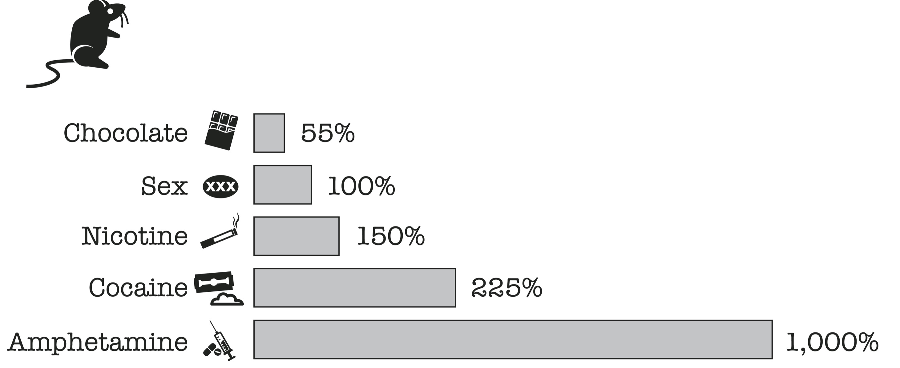
Khoái lạc và Đau đớn Nằm Cùng Một Chỗ
Bên cạnh việc phát hiện ra dopamine, các nhà khoa học thần kinh đã xác định rằng khoái lạc và đau đớn được xử lý ở những vùng não chồng lấn lên nhau và hoạt động thông qua cơ chế quá trình đối lập. Một cách nói khác là khoái lạc và đau đớn hoạt động giống như một cái cán cân.
Hãy tưởng tượng não bộ của chúng ta chứa một cái cân—một chiếc cân đòn với điểm tựa nằm ở chính giữa. Khi không có gì đặt lên cân, nó nằm ngang bằng với mặt đất. Khi chúng ta trải nghiệm khoái lạc, dopamine được giải phóng trong con đường phần thưởng và cán cân nghiêng về phía khoái lạc. Cán cân nghiêng càng nhiều và càng nhanh, chúng ta càng cảm thấy nhiều khoái lạc.
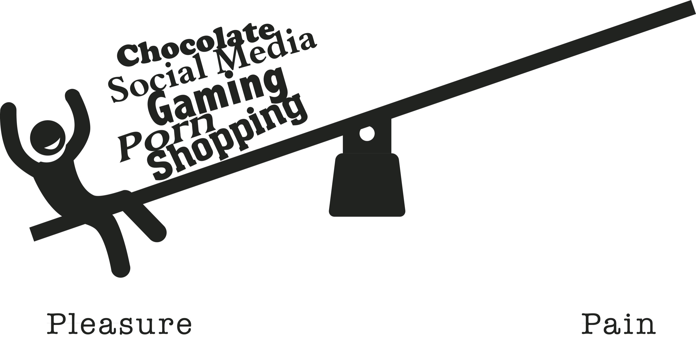
Nhưng đây là điều quan trọng về chiếc cân này: Nó muốn duy trì trạng thái thăng bằng, tức là ở trạng thái cân bằng. Nó không muốn bị nghiêng quá lâu về bên này hay bên kia. Do đó, mỗi khi cán cân nghiêng về phía khoái lạc, những cơ chế tự điều chỉnh mạnh mẽ sẽ lập tức vào cuộc để đưa nó trở lại thăng bằng. Những cơ chế tự điều chỉnh này không đòi hỏi suy nghĩ có ý thức hay hành động của ý chí. Chúng chỉ đơn giản xảy ra, giống như một phản xạ.
Tôi thường hình dung hệ thống tự điều chỉnh này như những con tiểu yêu nhỏ bé (gremlins) nhảy lên phía bên đau đớn của cán cân để đối trọng với sức nặng ở phía bên khoái lạc. Những con tiểu yêu này đại diện cho hoạt động của cân bằng nội môi (homeostasis): xu hướng của mọi hệ thống sống nhằm duy trì sự cân bằng sinh lý.
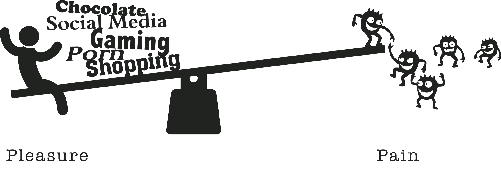
Một khi cán cân đã về lại mức thăng bằng, nó vẫn tiếp tục đà đó, nghiêng một lượng tương đương và ngược chiều sang phía bên đau đớn.
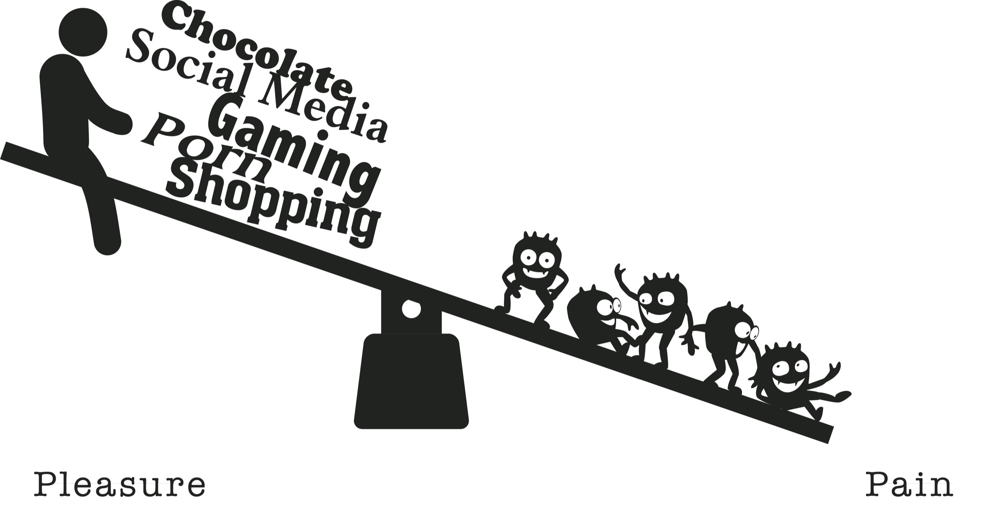
Vào những năm 1970, hai nhà khoa học xã hội Richard Solomon và John Corbit đã gọi mối quan hệ tương hỗ này giữa khoái lạc và đau đớn là lý thuyết quá trình đối lập (opponent-process theory): “Bất kỳ sự chệch hướng kéo dài hoặc lặp đi lặp lại nào khỏi trạng thái trung tính về khoái cảm hay cảm xúc . . . đều phải trả giá.” Cái giá đó là một “phản ứng hậu kỳ” mang giá trị đối lập với tác nhân kích thích. Hay như câu ngạn ngữ xưa vẫn nói: Cái gì lên cao rồi cũng phải đi xuống.
Hóa ra, nhiều quá trình sinh lý trong cơ thể cũng được chi phối bởi các hệ thống tự điều chỉnh tương tự. Chẳng hạn, Johann Wolfgang von Goethe, Ewald Hering và những người khác đã chứng minh cách nhận thức màu sắc được chi phối bởi một hệ thống quá trình đối lập. Việc nhìn chằm chằm vào một màu trong thời gian dài sẽ tự phát tạo ra hình ảnh của màu “đối lập” trong mắt người nhìn. Hãy nhìn chăm chú vào một hình ảnh màu xanh lá cây trên nền trắng một lúc, rồi quay sang nhìn một trang giấy trắng trống, bạn sẽ thấy não bộ mình tạo ra một dư ảnh màu đỏ. Nhận thức về màu xanh lá cây lần lượt nhường chỗ cho nhận thức về màu đỏ. Khi màu xanh lá cây được bật lên, màu đỏ không thể xuất hiện, và ngược lại.
Sự dung nạp (Thích nghi thần kinh)
Tất cả chúng ta đều từng trải qua cảm giác thèm muốn ngay sau khi hưởng thụ khoái lạc. Dù là với tay lấy miếng khoai tây chiên thứ hai hay nhấp chuột chơi thêm một ván trò chơi điện tử nữa, việc muốn tái tạo những cảm giác dễ chịu đó hoặc cố gắng không để chúng phai nhạt là điều hoàn toàn tự nhiên. Giải pháp đơn giản là cứ tiếp tục ăn, hoặc chơi, hoặc xem, hoặc đọc. Nhưng có một vấn đề với điều đó.
Khi tiếp xúc lặp đi lặp lại với cùng một tác nhân kích thích khoái lạc hoặc tương tự, độ lệch ban đầu về phía khoái lạc trở nên yếu hơn và ngắn hơn, còn phản ứng hậu kỳ về phía đau đớn lại trở nên mạnh hơn và dài hơn—một quá trình mà các nhà khoa học gọi là thích nghi thần kinh (neuroadaptation). Nghĩa là, qua sự lặp lại, những con tiểu yêu của chúng ta trở nên to lớn hơn, nhanh nhẹn hơn và đông đảo hơn, khiến chúng ta cần nhiều hơn loại chất gây nghiện mình chọn để đạt được cùng một hiệu ứng.
Việc cần nhiều chất hơn để cảm nhận khoái lạc, hoặc cảm thấy ít khoái lạc hơn ở cùng một liều lượng nhất định, được gọi là sự dung nạp (tolerance). Sự dung nạp là một yếu tố quan trọng trong quá trình hình thành chứng nghiện.

Đối với tôi, việc đọc bộ truyện Chạng vạng (Twilight) lần thứ hai vẫn rất thú vị nhưng không còn thú vị bằng lần đầu tiên. Đến lần thứ tư tôi đọc nó (vâng, tôi đã đọc trọn bộ truyện tới bốn lần), niềm khoái lạc của tôi đã suy giảm đáng kể. Việc đọc lại không bao giờ sánh được với lần đầu tiên đó. Hơn nữa, mỗi lần đọc xong, tôi lại bị bỏ lại với một cảm giác bất mãn sâu sắc hơn và khao khát mãnh liệt hơn muốn tìm lại cảm giác mình từng có khi đọc lần đầu. Khi trở nên “lờn” với Chạng vạng, tôi buộc phải tìm kiếm những dạng thức mới hơn, mạnh mẽ hơn của cùng một loại “thuốc” đó để cố gắng nắm bắt lại cảm giác trước kia.
Với việc sử dụng chất gây nghiện nặng và kéo dài, cán cân khoái lạc – đau đớn cuối cùng bị kéo trĩu hẳn về phía đau đớn. Điểm định chuẩn khoái cảm (hedonic set point) của chúng ta thay đổi khi khả năng trải nghiệm khoái lạc đi xuống và sự dễ bị tổn thương trước nỗi đau đi lên. Bạn có thể hình dung điều này giống như việc những con tiểu yêu cắm trại luôn ở phía bên đau đớn của cán cân, mang theo cả nệm hơi và bếp nướng di động.
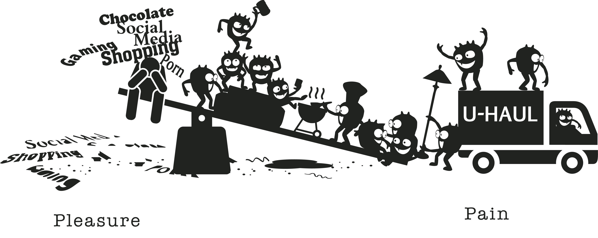
Tôi nhận thức sâu sắc về tác động này của các chất gây nghiện có hàm lượng dopamine cao lên con đường phần thưởng của não bộ vào đầu những năm 2000, khi tôi bắt đầu thấy nhiều bệnh nhân hơn tìm đến phòng khám trong tình trạng đang điều trị bằng thuốc giảm đau opioid liều cao, dài hạn (như OxyContin, Vicodin, morphine, fentanyl) cho chứng đau mạn tính. Mặc dù dùng thuốc opioid liều cao và kéo dài, cơn đau của họ theo thời gian chỉ càng tệ hơn. Tại sao? Bởi vì việc tiếp xúc với opioid đã khiến não bộ của họ thiết lập lại cán cân khoái lạc – đau đớn nghiêng hẳn về phía đau đớn. Giờ đây cơn đau ban đầu của họ trở nên tồi tệ hơn, và họ xuất hiện thêm những cơn đau mới ở các bộ phận cơ thể vốn trước đây không hề đau.
Hiện tượng này, được quan sát rộng rãi và kiểm chứng qua các nghiên cứu trên động vật, được gọi là chứng tăng cảm giác đau do opioid (opioid-induced hyperalgesia). Algesia, bắt nguồn từ từ Hy Lạp algesis, có nghĩa là sự nhạy cảm với cơn đau. Hơn thế nữa, khi những bệnh nhân này giảm liều dần để cai opioid, nhiều người trong số họ đã cải thiện được tình trạng đau đớn.
Nhà khoa học thần kinh Nora Volkow cùng các đồng nghiệp đã chứng minh rằng việc tiêu thụ nặng nề và kéo dài các chất kích thích dopamine cao cuối cùng sẽ dẫn đến trạng thái thiếu hụt dopamine.
Volkow đã kiểm tra sự truyền dẫn dopamine trong não của nhóm đối chứng khỏe mạnh so với những người nghiện nhiều loại ma túy khác nhau sau khi họ ngừng sử dụng hai tuần. Những hình ảnh chụp não thật sự gây chấn động. Trong ảnh chụp não của người khỏe mạnh đối chứng, một vùng não hình hạt đậu thận liên quan đến phần thưởng và động lực sáng rực màu đỏ tươi, cho thấy mức độ hoạt động cao của chất dẫn truyền thần kinh dopamine. Trong ảnh chụp của những người nghiện đã ngừng sử dụng hai tuần trước đó, cùng vùng não hình hạt đậu thận ấy lại chứa rất ít hoặc không có màu đỏ nào, cho thấy sự truyền dẫn dopamine rất ít hoặc gần như bằng không.
Như Tiến sĩ Volkow và các đồng nghiệp đã viết: “Sự suy giảm các thụ thể DA D2 ở những người lạm dụng ma túy, kết hợp với sự suy giảm giải phóng DA, sẽ dẫn đến việc giảm độ nhạy của các mạch phần thưởng đối với sự kích thích từ những phần thưởng tự nhiên.” Một khi điều này xảy ra, chẳng còn thứ gì mang lại cảm giác dễ chịu nữa.
Nói cách khác, các cầu thủ trong Đội Dopamine đã thu dọn bóng và găng tay rồi đi về nhà.
TÁC ĐỘNG CỦA CHỨNG NGHIỆN LÊN CÁC THỤ THỂ DOPAMINE
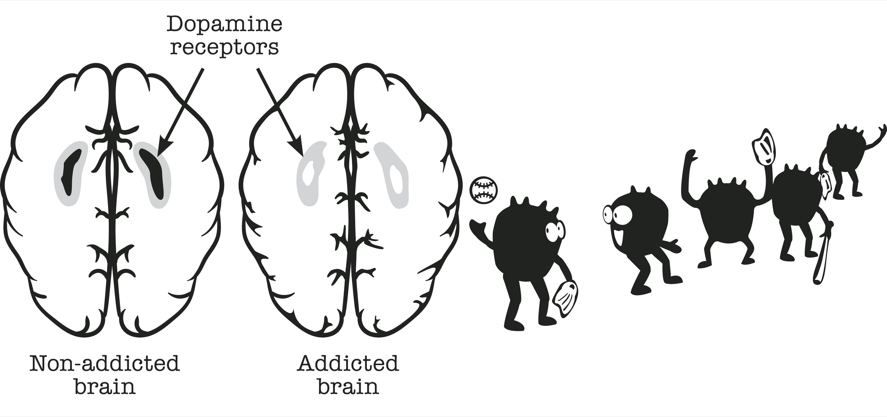
Trong khoảng hai năm tôi đọc ngấu nghiến tiểu thuyết lãng mạn một cách cưỡng bức, cuối cùng tôi đã đi đến một điểm mà không thể tìm thấy cuốn sách nào khiến mình thích thú nữa. Cứ như thể tôi đã đốt cháy trung tâm khoái lạc đọc tiểu thuyết của mình, và không cuốn sách nào có thể hồi sinh nó được nữa.
Nghịch lý nằm ở chỗ chủ nghĩa khoái lạc—việc theo đuổi khoái lạc vì chính bản thân nó—lại dẫn đến chứng mất khoái cảm (anhedonia), tức là tình trạng mất khả năng tận hưởng bất kỳ loại khoái lạc nào. Đọc sách vốn luôn là nguồn khoái lạc và chốn trốn chạy chính của tôi, nên thật sốc và đau buồn khi nó không còn tác dụng nữa. Ngay cả lúc đó, tôi vẫn rất khó từ bỏ nó.
Những bệnh nhân mắc chứng nghiện của tôi mô tả cách họ đi đến điểm mà loại thuốc của họ không còn tác dụng gì với họ nữa. Họ không còn thấy phê chút nào nữa. Thế nhưng nếu không dùng thuốc, họ lại cảm thấy khốn khổ. Các triệu chứng phổ biến của hội chứng cai bất kỳ chất gây nghiện nào đều là lo âu, cáu kỉnh, mất ngủ và trạng thái phiền muộn (dysphoria).
Một cán cân khoái lạc – đau đớn bị nghiêng về phía đau đớn chính là thứ thúc đẩy con người tái nghiện ngay cả sau những khoảng thời gian kiêng cữ kéo dài. Khi cán cân của chúng ta nghiêng về phía đau đớn, chúng ta thèm khát chất gây nghiện chỉ để cảm thấy bình thường (một cán cân thăng bằng).
Nhà khoa học thần kinh George Koob gọi hiện tượng này là “tái nghiện do phiền muộn thúc đẩy” (dysphoria driven relapse), trong đó việc quay lại sử dụng không phải xuất phát từ sự tìm kiếm khoái lạc mà từ mong muốn xoa dịu nỗi đau khổ về thể xác và tâm lý của trạng thái cai kéo dài.
Đây là tin tốt. Nếu chúng ta chờ đủ lâu, não bộ của chúng ta (thường) sẽ tái thích nghi với sự vắng mặt của chất gây nghiện và chúng ta sẽ thiết lập lại cân bằng nội môi cơ bản: một cán cân thăng bằng. Một khi cán cân đã thăng bằng, chúng ta lại có thể tìm thấy niềm vui từ những phần thưởng giản dị hằng ngày. Đi dạo. Ngắm bình minh. Thưởng thức bữa ăn cùng bạn bè.
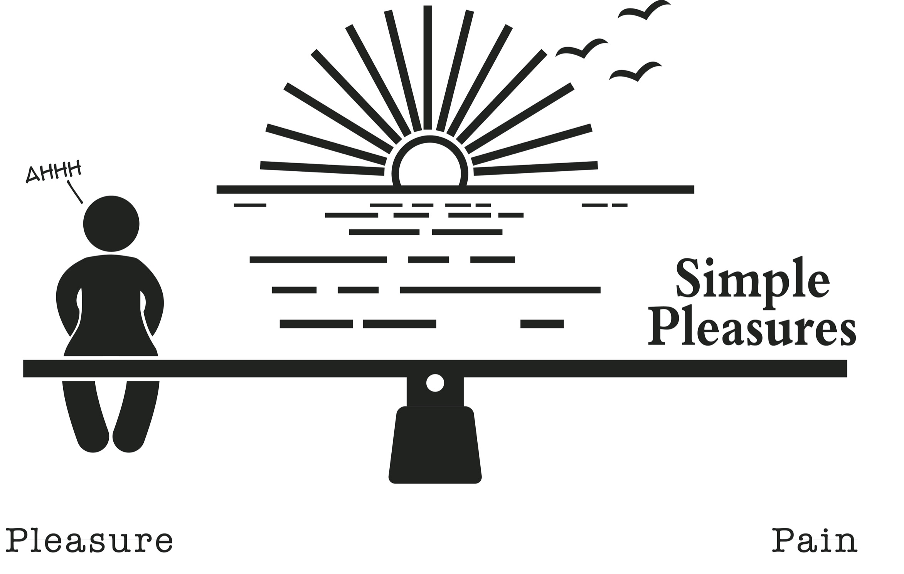
Con người, Địa điểm và Đồ vật
Cán cân khoái lạc – đau đớn không chỉ bị kích hoạt bởi việc tiếp xúc lại với chính chất gây nghiện mà còn bởi việc tiếp xúc với các tín hiệu gắn liền với việc sử dụng chất gây nghiện. Trong hội Người nghiện rượu Ẩn danh (Alcoholics Anonymous), cụm từ cửa miệng để mô tả hiện tượng này là con người, địa điểm và đồ vật. Trong thế giới khoa học thần kinh, điều này được gọi là học tập phụ thuộc tín hiệu (cue-dependent learning), hay còn gọi là điều kiện hóa cổ điển (Pavlov).
Ivan Pavlov, người giành giải Nobel Sinh lý học hoặc Y học năm 1904, đã chứng minh rằng loài chó sẽ tiết nước bọt theo phản xạ khi được đưa cho một miếng thịt. Khi việc đưa thịt liên tục đi kèm với tiếng chuông reo, những con chó sẽ tiết nước bọt ngay khi nghe thấy tiếng chuông, ngay cả khi chưa có miếng thịt nào xuất hiện ngay lập tức. Cách lý giải là những con chó đã học được cách liên kết miếng thịt—một phần thưởng tự nhiên—với tiếng chuông—một tín hiệu có điều kiện. Chuyện gì đang xảy ra trong não bộ?
Bằng cách đưa một đầu dò phát hiện vào não chuột, các nhà khoa học thần kinh có thể chứng minh rằng dopamine được giải phóng trong não để đáp ứng với tín hiệu có điều kiện (ví dụ: tiếng chuông, máy đếm nhịp, ánh sáng) từ rất lâu trước khi bản thân phần thưởng được nạp vào cơ thể (ví dụ: tiêm cocaine). Đợt tăng vọt dopamine trước phần thưởng nhằm đáp ứng với tín hiệu có điều kiện giải thích cho cảm giác khoái lạc dự báo mà chúng ta trải nghiệm khi biết những điều tốt đẹp sắp đến.
MỨC DOPAMINE: DỰ BÁO VÀ THÈM MUỐN

Ngay sau tín hiệu có điều kiện, sự phóng thích dopamine trong não giảm xuống không chỉ về mức cơ bản (não luôn có một mức phóng thích dopamine nền ngay cả khi không có phần thưởng), mà còn xuống dưới mức cơ bản. Trạng thái thiếu hụt dopamine nhỏ thoáng qua này chính là thứ thúc đẩy chúng ta tìm kiếm phần thưởng của mình. Mức dopamine dưới mức cơ bản tạo ra cơn thèm muốn. Cơn thèm muốn chuyển hóa thành hành động có chủ đích để có được chất gây nghiện.
Đồng nghiệp của tôi, Rob Malenka, một nhà khoa học thần kinh đáng kính, từng nói với tôi rằng “thước đo mức độ nghiện của một con vật trong phòng thí nghiệm quy về việc con vật đó sẵn sàng làm việc vất vả đến mức nào để có được chất gây nghiện—bằng cách nhấn cần gạt, vượt qua mê cung, leo lên máng trượt.” Tôi thấy điều tương tự cũng đúng với con người. Chưa kể toàn bộ chu trình dự báo và thèm muốn này có thể diễn ra hoàn toàn nằm ngoài ngưỡng nhận thức có ý thức.
Một khi chúng ta nhận được phần thưởng như dự kiến, sự phóng thích dopamine trong não tăng vọt lên trên mức nền cơ bản. Nhưng nếu phần thưởng chúng ta mong đợi không thành hiện thực, mức dopamine sẽ rơi xuống thấp hơn hẳn mức cơ bản. Điều đó có nghĩa là, nếu chúng ta nhận được phần thưởng mong đợi, chúng ta sẽ có một đợt tăng vọt lớn hơn nữa. Nếu chúng ta không nhận được phần thưởng mong đợi, chúng ta sẽ trải qua một cú lao dốc còn tệ hại hơn.
MỨC DOPAMINE: DỰ BÁO VÀ THÈM MUỐN
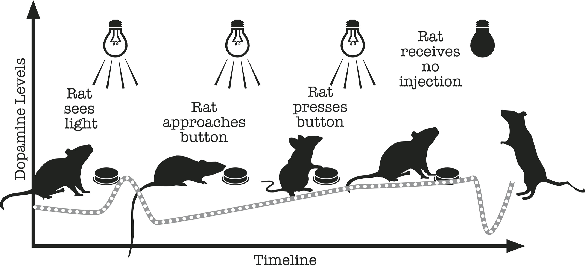
Tất cả chúng ta đều từng trải qua sự hụt hẫng của những kỳ vọng không thành. Một phần thưởng được kỳ vọng nhưng không thành hiện thực còn tệ hơn một phần thưởng chưa từng được mong đợi ngay từ đầu.
Cơn thèm muốn do tín hiệu kích hoạt chuyển dịch lên cán cân khoái lạc – đau đớn của chúng ta như thế nào? Cán cân nghiêng về phía khoái lạc (một đợt tăng dopamine nhỏ) khi dự báo phần thưởng tương lai, ngay sau đó là một cú nghiêng về phía đau đớn (một đợt thiếu hụt dopamine nhỏ) sau khi tín hiệu qua đi. Sự thiếu hụt dopamine chính là cơn thèm muốn và thúc đẩy hành vi tìm kiếm chất gây nghiện.
Trong thập kỷ qua, những tiến bộ đáng kể trong việc tìm hiểu nguyên nhân sinh học của chứng nghiện cờ bạc bệnh lý đã dẫn đến việc tái phân loại các rối loạn cờ bạc trong Cẩm nang Chẩn đoán và Thống kê Rối loạn Tâm thần (ấn bản thứ 5) thành các rối loạn nghiện.
Các nghiên cứu chỉ ra rằng sự giải phóng dopamine do cờ bạc gắn liền với tính không thể đoán trước của việc trao phần thưởng, nhiều ngang ngửa với bản thân phần thưởng cuối cùng (thường là tiền bạc). Động lực đánh bạc phần lớn dựa trên sự bất khả năng dự đoán thời điểm xuất hiện phần thưởng, hơn là dựa trên lợi ích tài chính.
Trong một nghiên cứu năm 2010, Jakob Linnet và các đồng nghiệp đã đo lường sự giải phóng dopamine ở những người nghiện cờ bạc và nhóm đối chứng khỏe mạnh trong lúc thắng và thua tiền. Không có sự khác biệt rõ rệt giữa hai nhóm khi họ thắng tiền; tuy nhiên, khi so sánh với nhóm đối chứng, những người nghiện cờ bạc bệnh lý cho thấy sự gia tăng rõ rệt mức dopamine khi họ thua tiền. Lượng dopamine giải phóng trong con đường phần thưởng đạt mức cao nhất khi xác suất thua và thắng gần như ngang nhau (50 phần trăm)—đại diện cho sự bất định tối đa.
Rối loạn cờ bạc làm nổi bật sự khác biệt tinh tế giữa dự báo phần thưởng (giải phóng dopamine trước phần thưởng) và phản ứng phần thưởng (giải phóng dopamine sau hoặc trong khi nhận phần thưởng). Những bệnh nhân nghiện cờ bạc của tôi kể với tôi rằng trong lúc chơi, một phần trong họ muốn thua. Càng thua nhiều, sự thôi thúc tiếp tục đánh bạc càng mạnh mẽ, và cảm giác phấn khích khi thắng lại càng dữ dội—một hiện tượng được mô tả là “gỡ gạc” (loss chasing).
Tôi nghi ngờ điều tương tự cũng đang diễn ra với các ứng dụng mạng xã hội, nơi phản hồi của người khác thất thường và khó đoán đến mức sự bất định của việc nhận được một nút “thích” (like) hay thứ gì đó tương đương cũng có tính củng cố hành vi mạnh mẽ ngang bằng với chính nút “thích” đó.
Não bộ mã hóa ký ức dài hạn về phần thưởng và các tín hiệu liên quan bằng cách thay đổi hình dạng và kích thước của các nơ-ron sản xuất dopamine. Ví dụ, các sợi nhánh (dendrites)—những nhánh mọc ra từ nơ-ron—trở nên dài hơn và nhiều hơn để đáp ứng với các phần thưởng dopamine cao. Quá trình này được gọi là tính dẻo phụ thuộc trải nghiệm (experience-dependent plasticity). Những thay đổi này trong não có thể tồn tại suốt đời và kéo dài rất lâu ngay cả sau khi chất gây nghiện không còn nữa.
Các nhà nghiên cứu đã khám phá tác động của việc tiếp xúc với cocaine trên chuột bằng cách tiêm cho chúng cùng một lượng cocaine vào những ngày liên tiếp trong một tuần và đo xem chúng chạy bao nhiêu sau mỗi lần tiêm. Một con chuột được tiêm cocaine sẽ chạy băng qua lồng thay vì nép sát vào rìa lồng như những con chuột bình thường. Lượng chạy nhảy có thể được đo bằng cách sử dụng các chùm tia sáng chiếu ngang qua lồng. Con chuột cắt ngang các chùm tia sáng càng nhiều lần, chứng tỏ nó chạy càng nhiều.
Các nhà khoa học phát hiện ra rằng qua từng ngày tiếp xúc với cocaine liên tiếp, lũ chuột tiến triển từ chạy bộ hăng hái vào ngày đầu tiên sang trạng thái chạy điên cuồng thực sự vào ngày cuối cùng, cho thấy sự nhạy cảm hóa tích lũy đối với tác dụng của cocaine.
Khi các nhà nghiên cứu ngừng tiêm cocaine, lũ chuột ngừng chạy. Một năm sau—cả một đời người đối với một con chuột—các nhà khoa học tiêm lại cho lũ chuột một liều cocaine duy nhất, và lũ chuột lập tức chạy điên cuồng hệt như vào ngày cuối cùng của thí nghiệm ban đầu.
Khi các nhà khoa học kiểm tra não của lũ chuột, họ thấy những thay đổi do cocaine gây ra trong con đường phần thưởng của chúng phù hợp với sự nhạy cảm hóa cocaine dai dẳng. Những phát hiện này cho thấy một loại ma túy như cocaine có thể biến đổi não bộ vĩnh viễn. Những phát hiện tương tự cũng đã được ghi nhận với các chất gây nghiện khác, từ rượu bia đến opioid và cần sa.
Trong công việc lâm sàng của mình, tôi thấy những người vật lộn với chứng nghiện nặng trượt dài ngay lập tức vào việc sử dụng cưỡng bức chỉ sau một lần tiếp xúc duy nhất, ngay cả sau nhiều năm kiêng cữ. Điều này có thể xảy ra do sự nhạy cảm hóa dai dẳng với loại chất gây nghiện ưa thích, những tiếng vọng từ xa của quá khứ sử dụng chất gây nghiện.
Việc học tập cũng làm tăng sự phóng thích dopamine trong não. Những con chuột cái được nuôi trong ba tháng ở một môi trường đa dạng, mới lạ và giàu kích thích cho thấy sự tăng sinh các synapse giàu dopamine trong con đường phần thưởng của não so với những con chuột nuôi trong lồng thí nghiệm tiêu chuẩn. Những thay đổi não bộ xảy ra để đáp ứng với một môi trường giàu kích thích và mới lạ tương tự như những gì thấy được với các chất gây nghiện dopamine cao.
Nhưng nếu chính những con chuột đó được xử lý trước bằng một chất kích thích như methamphetamine, một loại ma túy có tính gây nghiện cao, trước khi bước vào môi trường phong phú đó, chúng sẽ không biểu hiện những thay đổi synapse từng thấy trước đây khi tiếp xúc với môi trường phong phú. Những phát hiện này gợi ý rằng methamphetamine hạn chế khả năng học tập của chuột.
Đây là một tin tốt. Đồng nghiệp của tôi, Edie Sullivan, một chuyên gia hàng đầu thế giới về tác động của rượu lên não bộ, đã nghiên cứu quá trình hồi phục sau chứng nghiện và phát hiện ra rằng mặc dù một số thay đổi não bộ do nghiện gây ra là không thể đảo ngược, nhưng vẫn có thể đi đường vòng qua những vùng bị tổn thương này bằng cách tạo ra các mạng lưới thần kinh mới. Điều này có nghĩa là dù những thay đổi của não mang tính vĩnh viễn, chúng ta vẫn có thể tìm thấy những con đường synapse mới để kiến tạo các hành vi lành mạnh.
Trong khi đó, tương lai đang nắm giữ những khả năng đầy hứa hẹn cho các phương pháp đảo ngược những vết sẹo của chứng nghiện. Vincent Pascoli và các đồng nghiệp đã tiêm cocaine cho chuột, tạo ra những thay đổi hành vi như dự đoán (chạy điên cuồng), sau đó sử dụng quang di truyền học (optogenetics)—một kỹ thuật sinh học sử dụng ánh sáng để điều khiển các nơ-ron—nhằm đảo ngược những thay đổi synapse trong não do cocaine gây ra. Có lẽ một ngày nào đó kỹ thuật quang di truyền học sẽ khả thi trên não người.
Cán cân Chỉ là Một Phép Ẩn dụ
Trong đời thực, khoái lạc và đau đớn phức tạp hơn nhiều so với hoạt động của một cái cán cân.
Điều mang lại khoái lạc cho người này có thể không mang lại khoái lạc cho người khác. Mỗi người đều có “chất gây nghiện ưa thích” của riêng mình.
Khoái lạc và đau đớn có thể xảy ra đồng thời. Ví dụ, chúng ta có thể trải nghiệm cả khoái lạc lẫn đau đớn khi ăn đồ cay.
Không phải ai cũng xuất phát với một cán cân thăng bằng: Những người mắc chứng trầm cảm, lo âu và đau mạn tính bắt đầu với một cán cân vốn đã nghiêng về phía đau đớn, điều này có thể giải thích tại sao những người mắc rối loạn tâm thần dễ bị nghiện hơn.
Cảm nhận giác quan của chúng ta về nỗi đau (và khoái lạc) chịu ảnh hưởng nặng nề bởi ý nghĩa mà chúng ta gán cho nó.
Henry Knowles Beecher (1904–1976) từng phục vụ với tư cách là bác sĩ quân y trong Thế chiến II tại Bắc Phi, Ý và Pháp. Ông đã quan sát và báo cáo về 225 binh sĩ bị thương nặng trên chiến trường.
Beecher rất nghiêm ngặt với tiêu chí lựa chọn đối tượng nghiên cứu, chỉ khảo sát những người lính “mắc một trong năm loại vết thương nặng được chọn làm đại diện; tổn thương mô mềm ngoại biên diện rộng, gãy xương hở xương dài, vết thương thấu sọ, vết thương thấu ngực, hoặc vết thương thấu bụng . . . có tinh thần tỉnh táo, và . . . không bị sốc tại thời điểm đặt câu hỏi.”
Beecher đã có một phát hiện đáng kinh ngạc. Ba phần tư số binh sĩ bị thương nặng này báo cáo rằng họ cảm thấy rất ít hoặc không hề đau đớn ngay sau khi bị thương, bất chấp những chấn thương đe dọa tính mạng.
Ông kết luận rằng nỗi đau thể xác của họ đã được làm dịu đi bởi sự nhẹ nhõm về mặt cảm xúc khi thoát khỏi “một môi trường cực kỳ nguy hiểm, đầy rẫy sự mệt mỏi, khó chịu, lo âu, sợ hãi và nguy cơ tử vong thực sự.” Nỗi đau của họ, dù thế nào đi nữa, đã trao cho họ “một tấm vé đến với sự an toàn của bệnh viện.”
Ngược lại, một báo cáo ca bệnh trên tạp chí British Medical Journal xuất bản năm 1995 kể chi tiết trường hợp một công nhân xây dựng hai mươi chín tuổi bước vào phòng cấp cứu sau khi giẫm chân trúng một chiếc đinh dài mười lăm centimet, chiếc đinh đâm xuyên lên trên qua mũi giày bảo hộ, xuyên qua lớp da, thịt và xương. “Chỉ một cử động nhỏ nhất của chiếc đinh cũng gây đau đớn [và] anh ta đã được gây mê bằng fentanyl và midazolam,” những loại thuốc giảm đau opioid và thuốc an thần cực mạnh.
Nhưng khi chiếc đinh được rút ra từ phía dưới và chiếc giày được tháo bỏ, sự thật lộ ra là “chiếc đinh chỉ đâm vào khe giữa các ngón chân: bàn chân hoàn toàn không bị thương tích gì.”
Khoa học dạy chúng ta rằng mọi khoái lạc đều đòi hỏi một cái giá, và nỗi đau theo sau luôn kéo dài hơn và dữ dội hơn khoái lạc đã sinh ra nó.
Khi tiếp xúc kéo dài và lặp đi lặp lại với các kích thích khoái lạc, khả năng chịu đựng nỗi đau của chúng ta giảm xuống, còn ngưỡng để trải nghiệm khoái lạc của chúng ta lại tăng lên.
Bằng cách khắc ghi ký ức tức thời và vĩnh viễn, chúng ta không thể quên những bài học của khoái lạc và đau đớn ngay cả khi chúng ta muốn: những hình xăm hồi hải mã tồn tại suốt một đời.
Bộ máy thần kinh siêu cổ xưa về mặt phát sinh chủng loại dùng để xử lý khoái lạc và đau đớn vẫn giữ nguyên vẹn phần lớn qua suốt quá trình tiến hóa và xuyên suốt các loài. Nó thích nghi hoàn hảo cho một thế giới khan hiếm. Không có khoái lạc, chúng ta sẽ không ăn, không uống, hay sinh sản. Không có nỗi đau, chúng ta sẽ không tự bảo vệ mình khỏi thương tích và cái chết. Bằng cách nâng điểm định chuẩn thần kinh lên qua những khoái lạc lặp đi lặp lại, chúng ta trở thành những kẻ phấn đấu không ngừng nghỉ, chẳng bao giờ hài lòng với những gì mình có, luôn luôn tìm kiếm nhiều hơn nữa.
Nhưng vấn đề nằm ở chính chỗ này. Loài người, những kẻ tìm kiếm tối thượng, đã phản ứng quá xuất sắc trước thử thách theo đuổi khoái lạc và né tránh nỗi đau. Kết quả là chúng ta đã biến đổi thế giới từ một nơi khan hiếm thành một nơi dư thừa áp đảo.
Bộ não của chúng ta không tiến hóa để thích nghi với thế giới sung túc này. Như Tiến sĩ Tom Finucane, người nghiên cứu bệnh tiểu đường trong bối cảnh ăn uống thụ động kéo dài, đã nói: “Chúng ta là những cây xương rồng giữa rừng mưa nhiệt đới.” Và giống như những cây xương rồng vốn thích nghi với khí hậu khô cằn, chúng ta đang chết chìm trong dopamine.
Hệ quả ròng là giờ đây chúng ta cần nhiều phần thưởng hơn để cảm thấy khoái lạc, và chỉ cần ít tổn thương hơn để cảm thấy đau đớn. Sự hiệu chỉnh lại này không chỉ diễn ra ở cấp độ cá nhân mà còn ở cấp độ các quốc gia. Điều đó đặt ra câu hỏi: Làm thế nào để chúng ta tồn tại và phát triển trong hệ sinh thái mới này? Làm thế nào để chúng ta nuôi dạy con cái mình? Những cách suy nghĩ và hành động mới nào sẽ được đòi hỏi ở chúng ta với tư cách là cư dân của thế kỷ XXI?
Còn ai tốt hơn để dạy chúng ta cách tránh tiêu thụ quá mức một cách cưỡng bức bằng chính những người dễ bị tổn thương nhất bởi nó: những người đang vật lộn với chứng nghiện. Bị xa lánh qua hàng thiên niên kỷ ở khắp các nền văn hóa như những kẻ đồi bại, ký sinh, bị ruồng bỏ và những kẻ gieo rắc sự suy đồi đạo đức, những người mắc chứng nghiện đã phát triển một thứ trí tuệ hoàn toàn phù hợp với thời đại chúng ta đang sống ngày nay.
Sau đây là những bài học phục hồi dành cho một thế giới đã mỏi mệt vì phần thưởng.
Phần II · Chương 4 — Nhịn đói dopamine
PHẦN II
Tự Ràng Buộc
CHƯƠNG 4
Nhịn Đói Dopamine
“Tôi đến đây là vì bố mẹ bắt tôi phải đi,” Delilah nói bằng giọng hờn dỗi đặc trưng của thanh thiếu niên Mỹ.
“Được rồi,” tôi nói. “Tại sao bố mẹ cháu lại muốn cháu đến gặp bác?”
“Họ nghĩ cháu hút cần sa quá nhiều, nhưng vấn đề của cháu là lo âu. Cháu hút vì cháu bị lo âu, và nếu bác có thể làm gì đó cho chứng lo âu ấy, thì cháu sẽ không cần đến cỏ nữa.”
Một nỗi buồn sâu sắc bất chợt xâm chiếm lấy tôi. Không phải vì tôi không biết phải khuyên gì, mà vì tôi sợ cô bé sẽ không nghe theo lời khuyên của mình.
“Được thôi, vậy chúng ta hãy bắt đầu từ đó,” tôi nói. “Hãy kể cho bác nghe về chứng lo âu của cháu.”
Cao ráo và uyển chuyển, cô bé khoanh chân ngồi gọn trên ghế.
“Nó bắt đầu từ hồi cấp hai,” cô bé nói, “và càng ngày càng tệ hơn theo năm tháng. Lo âu giống như thứ đầu tiên cháu cảm thấy khi thức dậy vào buổi sáng. Rít một hơi bút sáp cần sa (wax pen) là thứ duy nhất giúp cháu ra khỏi giường.”
“Bút sáp cần sa của cháu à?”
“Vâng, giờ cháu hút vape. Trước đây cháu từng hút điếu cuốn (blunt) và điếu cày (bong), dùng dòng Sativa vào ban ngày và Indica trước khi đi ngủ. Nhưng giờ cháu chuyển sang các loại tinh chất cô đặc . . . sáp (wax), dầu (oil), bơ cần sa (budder), mảnh vỡ (shatter), scissor, dust, QWISO. Chủ yếu cháu dùng bút vape, nhưng đôi khi cũng dùng máy hóa hơi Volcano. . . . Cháu không thích đồ ăn chứa cần sa (edibles) lắm, nhưng sẽ dùng xen kẽ hoặc trong trường hợp khẩn cấp khi không thể hút.”
D là viết tắt của Data (Dữ liệu)
Bằng cách gợi ý cô bé nói thêm về “bút sáp cần sa”, tôi đang mời Delilah đi sâu vào những chi tiết cụ thể trong thói quen sử dụng hằng ngày của mình. Cuộc trò chuyện của tôi với cô bé được dẫn dắt bởi một khung phương pháp mà tôi đã phát triển qua nhiều năm khi làm việc với các bệnh nhân về vấn đề tiêu thụ quá mức mang tính cưỡng chế.
Khung phương pháp này dễ nhớ qua từ viết tắt DOPAMINE, áp dụng không chỉ cho các chất gây nghiện truyền thống như rượu và nicotine mà còn cho bất kỳ chất hay hành vi tạo dopamine cao nào mà chúng ta nạp vào quá nhiều, quá lâu, hoặc đơn giản là muốn có một mối quan hệ bớt giằng xé hơn với nó. Dù ban đầu được phát triển cho công việc chuyên môn, tôi cũng đã áp dụng nó cho chính mình và những thói quen tiêu thụ kém lành mạnh của bản thân.
Chữ d trong DOPAMINE là viết tắt của data (dữ liệu). Tôi bắt đầu bằng việc thu thập những thông tin thực tế đơn giản về việc sử dụng. Trong trường hợp của Delilah, tôi tìm hiểu xem cô bé đang dùng gì, liều lượng bao nhiêu và tần suất thế nào.
Khi nói đến cần sa, danh sách chóng mặt các sản phẩm và cách thức đưa chất vào cơ thể mà Delilah mô tả hiện nay là chuyện thường thấy ở bệnh nhân của tôi. Nhiều người trong số họ có kiến thức tương đương một tấm bằng Tiến sĩ về Cần sa khi tìm đến tôi. Trái ngược với thập niên 1960, khi việc sử dụng giải trí chỉ vào cuối tuần là bình thường, bệnh nhân của tôi bắt đầu hút ngay từ khoảnh khắc thức dậy vào buổi sáng và tiếp tục suốt cả ngày cho đến khi đi ngủ trở lại. Điều này đáng lo ngại ở nhiều khía cạnh, trong đó không thể không kể đến việc sử dụng hằng ngày có liên quan mật thiết đến chứng nghiện.
Về phần mình, tôi bắt đầu nghi ngờ bản thân đang mấp mé rơi vào vùng nguy hiểm khi việc đọc tiểu thuyết lãng mạn bắt đầu chiếm hàng giờ mỗi ngày và kéo dài nhiều ngày liền.
O là viết tắt của Objectives (Mục tiêu)
“Việc hút mang lại cho cháu điều gì?” tôi hỏi Delilah. “Nó giúp ích cho cháu như thế nào?”
“Đó là thứ duy nhất có tác dụng với chứng lo âu của cháu,” cô bé nói. “Không có nó cháu sẽ chẳng làm được gì . . . ý cháu là còn tệ hơn cả hiện tại bây giờ.”
Khi hỏi Delilah xem cần sa giúp ích cho cô bé ra sao, tôi đang công nhận rằng nó thực sự mang lại một tác động tích cực nào đó, nếu không cô bé đã chẳng dùng nó.
Chữ o trong DOPAMINE là viết tắt của objectives (mục tiêu) sử dụng. Ngay cả những hành vi tưởng chừng phi lý cũng bắt nguồn từ một logic cá nhân nào đó. Mọi người sử dụng các chất và hành vi tạo dopamine cao vì đủ mọi lý do: để vui vẻ, để hòa nhập, để giải tỏa sự buồn chán, để kiểm soát nỗi sợ hãi, cơn giận, sự lo âu, mất ngủ, trầm cảm, mất tập trung, đau đớn, chứng sợ xã hội . . . danh sách cứ thế kéo dài.
Tôi dùng tiểu thuyết lãng mạn để trốn chạy khỏi giai đoạn chuyển tiếp đầy đau đớn đối với tôi: từ việc nuôi dạy con nhỏ sang nuôi dạy con tuổi vị thành niên, một công việc mà tôi cảm thấy mình kém cỏi hơn nhiều. Tôi cũng đang xoa dịu nỗi đau buồn vì không bao giờ có thêm một đứa con nữa—điều mà tôi khao khát còn chồng tôi thì không, tạo ra một sự căng thẳng trong hôn nhân và đời sống tình dục của chúng tôi mà trước đây chưa từng tồn tại.
P là viết tắt của Problems (Vấn đề)
“Có mặt trái nào từ việc hút không? Những hệ quả ngoài ý muốn ấy?” tôi hỏi.
“Điều tệ duy nhất của việc hút,” Delilah nói, “là bố mẹ cháu lúc nào cũng cằn nhằn. Nếu họ chịu để cháu yên thì sẽ chẳng có mặt trái nào cả.”
Tôi dừng lại một chút để ngắm ánh nắng lấp lánh trên mái tóc cô bé. Cô bé trông tràn đầy sức sống dù thực tế đang nạp hơn một gam cần sa mỗi ngày. Tuổi trẻ, tôi thầm nghĩ, bù đắp được cho biết bao điều.
Chữ p trong DOPAMINE là viết tắt của problems (các vấn đề) liên quan đến việc sử dụng.
Các chất gây nghiện tạo dopamine cao luôn dẫn đến vấn đề. Vấn đề sức khỏe. Vấn đề trong các mối quan hệ. Vấn đề đạo đức. Nếu không xảy ra ngay lập tức thì sớm muộn cũng tới. Việc Delilah không thể nhìn thấy mặt trái nào—ngoại trừ xung đột ngày càng tăng giữa cô bé và bố mẹ—là điều điển hình ở thanh thiếu niên . . . và không chỉ ở thanh thiếu niên. Sự đứt gãy nhận thức này xảy ra vì một số lý do.
Thứ nhất, hầu hết chúng ta không thể nhìn thấy hết mức độ hậu quả của việc dùng chất kích thích khi vẫn đang tiếp tục sử dụng. Các chất và hành vi tạo dopamine cao làm mờ khả năng đánh giá chính xác mối quan hệ nhân quả của chúng ta.
Như nhà thần kinh học Daniel Friedman, người nghiên cứu tập tính kiếm ăn của loài kiến gặt đỏ, từng nhận xét với tôi: “Thế giới này giàu cảm giác nhưng nghèo nhân quả.” Nghĩa là, chúng ta biết chiếc bánh rán ngon miệng ngay tại thời điểm ăn, nhưng lại ít nhận thức được rằng ăn một chiếc bánh rán mỗi ngày trong suốt một tháng sẽ khiến vòng eo tăng thêm năm pound.
Thứ hai, người trẻ tuổi, ngay cả những người dùng nặng, thường miễn nhiễm hơn trước các hậu quả tiêu cực của việc sử dụng. Như một giáo viên trung học từng nói với tôi: “Một số học sinh giỏi nhất của tôi hút cần sa mỗi ngày.”
Tuy nhiên, khi chúng ta già đi, những hệ quả ngoài ý muốn của việc sử dụng mạn tính sẽ nhân lên gấp bội. Phần lớn bệnh nhân tự nguyện tìm đến tôi để điều trị đều ở độ tuổi trung niên. Họ tìm đến tôi vì đã chạm tới điểm bùng phát, nơi những mặt trái của việc sử dụng lấn át hoàn toàn mặt tích cực. Như người ta thường nói trong Hội Người Nghiện Rượu Vô Danh (AA): “Tôi phát ốm và mệt mỏi vì cứ phải ốm yếu và mệt mỏi mãi.” Ngược lại, các bệnh nhân tuổi vị thành niên của tôi không hề thấy ốm yếu cũng chẳng thấy mệt mỏi.
Dù vậy, việc giúp thanh thiếu niên nhìn thấy một vài hậu quả tiêu cực từ việc sử dụng ngay khi họ vẫn đang dùng—dù chỉ là việc người khác không thích điều đó—có thể là một điểm tựa để thuyết phục họ dừng lại. Và việc dừng lại, dù chỉ trong một khoảng thời gian, là điều thiết yếu giúp họ nhìn thấy mối quan hệ nhân quả thực sự.
A là viết tắt của Abstinence (Kiêng cữ)
“Bác có một ý tưởng về điều có thể giúp cháu,” tôi nói với Delilah, “nhưng nó sẽ đòi hỏi cháu phải làm một việc thực sự khó khăn.”
“Việc gì ạ?”
“Bác muốn cháu thử một thí nghiệm.”
“Một thí nghiệm á?” Cô bé nghiêng đầu sang một bên.
“Bác muốn cháu ngừng sử dụng cần sa trong một tháng.”
Gương mặt cô bé không lộ chút cảm xúc.
“Để bác giải thích. Thứ nhất, các phương pháp điều trị lo âu khó có thể phát huy tác dụng khi cháu vẫn đang hút nhiều cần sa như vậy. Thứ hai, và quan trọng hơn, có một khả năng rất rõ ràng là nếu cháu ngừng hút trọn vẹn một tháng, chứng lo âu của cháu sẽ tự thuyên giảm. Tất nhiên, ban đầu cháu sẽ cảm thấy tệ hơn do hội chứng cai. Nhưng nếu cháu vượt qua được hai tuần đầu tiên, rất có khả năng sang hai tuần tiếp theo cháu sẽ bắt đầu cảm thấy khá hơn.”
Cô bé vẫn im lặng, nên tôi nói tiếp. Tôi giải thích với cô bé rằng bất kỳ chất nào kích thích con đường phần thưởng của chúng ta theo cách cần sa làm đều có khả năng làm thay đổi mức độ lo âu nền của não bộ. Cảm giác tưởng như cần sa đang chữa trị lo âu thực chất có thể chỉ là cần sa đang làm dịu đi trạng thái cai từ liều dùng trước đó. Cần sa trở thành nguyên nhân gây ra lo âu chứ không phải liều thuốc chữa. Cách duy nhất để biết chắc là ngừng sử dụng trong một tháng.
“Cháu ngừng một tuần được không ạ?” cô bé hỏi. “Trước đây cháu từng làm vậy rồi.”
“Một tuần cũng tốt, nhưng theo kinh nghiệm của bác, một tháng thường là khoảng thời gian tối thiểu để thiết lập lại con đường phần thưởng của não. Nếu sau bốn tuần kiêng cữ mà cháu vẫn không thấy khá hơn, đó cũng là dữ liệu hữu ích. Điều đó có nghĩa là cần sa không phải tác nhân chính gây ra tình trạng này, và chúng ta cần nghĩ xem nguyên nhân khác là gì. Vậy cháu nghĩ sao? Cháu có nghĩ mình có thể và sẵn sàng ngừng cần sa trong một tháng không?”
“Ừm. . . . Cháu không nghĩ mình sẵn sàng thử bỏ ngay bây giờ, nhưng có lẽ để sau. Chắc chắn là cháu sẽ không hút thế này mãi đâu.”
“Cháu có còn muốn dùng cần sa như thế này trong mười năm nữa không?”
“Không. Không đời nào. Chắc chắn là không.” Cô bé lắc đầu nguầy nguậy.
“Thế năm năm nữa thì sao?”
“Không, năm năm nữa cũng không.”
“Thế một năm nữa thì sao?”
Im lặng một lát. Cô bé bật cười khẽ. “Chắc bác bắt thóp được cháu rồi đấy, bác sĩ ạ. Nếu một năm nữa cháu không muốn dùng thế này, thì chi bằng thử bỏ ngay bây giờ vậy.”
Cô bé nhìn tôi và mỉm cười. “Được rồi, làm thôi.”
Khi đề nghị Delilah cân nhắc hành vi hiện tại dưới góc nhìn của bản thân trong tương lai, tôi hy vọng việc bỏ hút sẽ mang một ý nghĩa cấp bách mới. Có vẻ như cách đó đã hiệu quả.
Chữ a trong DOPAMINE là viết tắt của abstinence (kiêng cữ).
Sự kiêng cữ là cần thiết để khôi phục cân bằng nội môi, cùng với đó là khả năng cảm nhận niềm vui từ những phần thưởng ít mạnh mẽ hơn, cũng như nhìn thấy mối quan hệ nhân quả thực sự giữa việc sử dụng chất và cảm xúc của chúng ta. Nói theo ngôn ngữ của cán cân khoái lạc – đau đớn, việc nhịn đói dopamine cho phép đủ thời gian để những con quỷ nhỏ nhảy xuống khỏi cán cân và để cán cân trở về vị trí thăng bằng.
Câu hỏi đặt ra là: Mọi người cần kiêng cữ trong bao lâu để trải nghiệm được những lợi ích cho não bộ từ việc dừng lại?
Hãy nhớ lại nghiên cứu hình ảnh học của nhà thần kinh học Nora Volkow, cho thấy sự dẫn truyền dopamine vẫn ở mức dưới bình thường sau hai tuần cai chất gây nghiện. Nghiên cứu của bà nhất quán với kinh nghiệm lâm sàng của tôi rằng hai tuần kiêng cữ là chưa đủ. Ở mốc hai tuần, bệnh nhân thường vẫn đang trải qua hội chứng cai. Họ vẫn đang ở trong trạng thái thiếu hụt dopamine.
Mặt khác, bốn tuần thường là đủ. Marc Schuckit và các cộng sự đã nghiên cứu một nhóm nam giới uống rượu hằng ngày với số lượng lớn và đồng thời đáp ứng tiêu chuẩn của trầm cảm lâm sàng, hay còn gọi là rối loạn trầm cảm chủ yếu.
Schuckit, giáo sư tâm lý học thực nghiệm tại Đại học Bang San Diego, nổi tiếng nhất với việc chứng minh rằng con trai ruột của những “người nghiện rượu” có nguy cơ di truyền cao hơn trong việc phát triển rối loạn sử dụng rượu, so với những người không mang gánh nặng di truyền này. Tôi đã có vinh dự được học hỏi từ Marc, một người thầy tài năng, tại một loạt hội nghị về nghiện vào đầu những năm 2000.
Những người đàn ông bị trầm cảm trong nghiên cứu của Schuckit nhập viện trong bốn tuần, khoảng thời gian mà họ không nhận bất kỳ phương pháp điều trị trầm cảm nào, ngoại trừ việc ngừng uống rượu. Sau một tháng không uống rượu, 80 phần trăm không còn đáp ứng tiêu chuẩn của trầm cảm lâm sàng nữa.
Phát hiện này ngụ ý rằng đối với đa số trường hợp, trầm cảm lâm sàng là hệ quả của việc uống rượu nặng chứ không phải một rối loạn trầm cảm đồng mắc. Tất nhiên vẫn có những cách giải thích khác cho kết quả này: môi trường trị liệu của bệnh viện, sự thuyên giảm tự phát, bản chất từng đợt của trầm cảm vốn có thể đến rồi đi độc lập với các yếu tố bên ngoài. Nhưng kết quả mạnh mẽ này vẫn rất đáng chú ý khi xét đến việc các phương pháp điều trị trầm cảm tiêu chuẩn, dù là thuốc hay tâm lý trị liệu, chỉ có tỷ lệ đáp ứng 50 phần trăm.
Dĩ nhiên, tôi từng gặp những bệnh nhân cần ít hơn bốn tuần để thiết lập lại con đường phần thưởng, và những người khác cần thời gian lâu hơn nhiều. Những người đã sử dụng các chất mạnh hơn với liều lượng lớn hơn trong thời gian dài hơn thường sẽ cần nhiều thời gian hơn. Người trẻ tuổi hiệu chỉnh lại nhanh hơn người lớn tuổi vì não bộ của họ có tính khả biến cao hơn. Hơn nữa, hội chứng cai thực thể thay đổi tùy theo từng loại chất. Nó có thể nhẹ nhàng với một số thứ như trò chơi điện tử nhưng lại có khả năng đe dọa tính mạng với những chất khác, chẳng hạn như rượu và thuốc nhóm benzodiazepine.
Điều này dẫn chúng ta đến một lưu ý quan trọng: Tôi không bao giờ đề xuất nhịn đói dopamine cho những cá nhân có nguy cơ gặp hội chứng cai đe dọa tính mạng nếu họ ngừng đột ngột, như trong các trường hợp lệ thuộc và cai rượu nặng, benzodiazepine (Xanax, Valium, hoặc Klonopin), hoặc opioid. Đối với những bệnh nhân đó, việc giảm liều dần dưới sự theo dõi y tế là bắt buộc.
Đôi khi, bệnh nhân hỏi liệu họ có thể đổi từ chất này sang chất khác không: từ cần sa sang nicotine, từ trò chơi điện tử sang phim khiêu dâm. Đây hiếm khi là một chiến lược dài hạn hiệu quả.
Bất kỳ phần thưởng nào đủ mạnh để áp đảo những con quỷ nhỏ và làm cán cân nghiêng về phía khoái lạc đều có thể tự nó gây nghiện, dẫn đến việc đánh đổi cơn nghiện này lấy cơn nghiện khác (nghiện chéo). Bất kỳ phần thưởng nào không đủ mạnh sẽ không mang lại cảm giác là phần thưởng, đó là lý do tại sao khi chúng ta đang tiêu thụ các phần thưởng dopamine cao, chúng ta mất đi khả năng tận hưởng những niềm vui bình dị.
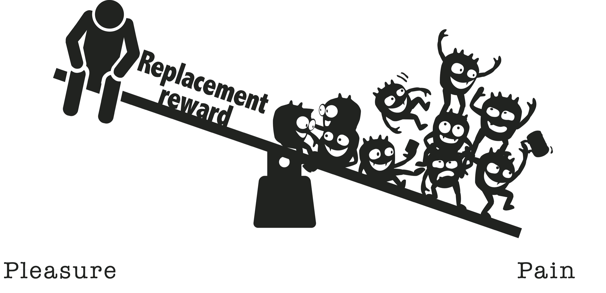
Một thiểu số bệnh nhân (khoảng 20 phần trăm) không cảm thấy khá hơn sau khi nhịn đói dopamine. Đó cũng là dữ liệu quan trọng, bởi nó cho tôi biết rằng chất gây nghiện không phải là tác nhân chính gây ra triệu chứng tâm thần và bệnh nhân nhiều khả năng có một rối loạn tâm thần đồng mắc cần được điều trị riêng.
Ngay cả khi việc nhịn đói dopamine mang lại lợi ích, một rối loạn tâm thần đồng mắc vẫn cần được điều trị song song. Kiểm soát chứng nghiện mà không giải quyết các rối loạn tâm thần khác thường dẫn đến kết cục xấu cho cả hai.
Tuy nhiên, để đánh giá đúng mối quan hệ giữa việc sử dụng chất và các triệu chứng tâm thần, tôi cần theo dõi bệnh nhân trong một khoảng thời gian đủ dài khi họ ngừng tiếp xúc với các phần thưởng dopamine cao.
M là viết tắt của Mindfulness (Chánh niệm)
“Bác muốn cháu chuẩn bị tinh thần,” tôi nói với Delilah, “cho việc cảm thấy tệ hơn trước khi cảm thấy khá hơn. Ý bác là, khi cháu mới ngừng cần sa, sự lo âu của cháu sẽ tăng lên. Nhưng hãy nhớ, đây không phải là chứng lo âu mà cháu sẽ phải sống chung suốt đời khi không có cần sa. Đây là sự lo âu do hội chứng cai gây ra. Cháu càng trụ được lâu mà không sử dụng, cháu sẽ càng nhanh chóng đến được nơi mà mình cảm thấy dễ chịu hơn. Thông thường, bệnh nhân báo cáo một bước ngoặt vào khoảng hai tuần.”
“Vâng. Thế trong lúc chờ đợi thì cháu phải làm gì ạ? Bác có loại thuốc nào kê cho cháu được không?”
“Không có loại thuốc nào bác có thể cho cháu để xua tan nỗi đau mà lại không gây nghiện cả. Vì chúng ta không muốn đánh đổi cơn nghiện này lấy cơn nghiện khác, nên điều bác yêu cầu cháu làm là chấp nhận và chịu đựng nỗi đau đó.”
Nuốt nước bọt.
“Ừ, bác biết. Khó lắm. Nhưng đó cũng là một cơ hội. Một dịp để cháu quan sát bản thân mình tách biệt khỏi những suy nghĩ, cảm xúc và cảm giác, bao gồm cả nỗi đau. Thực hành này đôi khi được gọi là chánh niệm (mindfulness).”
Chữ m của DOPAMINE là viết tắt của mindfulness (chánh niệm).
Chánh niệm là một thuật ngữ được nhắc đi nhắc lại quá thường xuyên hiện nay đến mức nó đã mất đi phần nào ý nghĩa. Bắt nguồn từ truyền thống thiền định tâm linh của Phật giáo, nó đã được phương Tây tiếp nhận và điều chỉnh thành một phương pháp chăm sóc sức khỏe trên nhiều lĩnh vực khác nhau. Nó đã thâm nhập sâu rộng vào nhận thức phương Tây đến nỗi hiện nay được giảng dạy thường xuyên ở các trường tiểu học Mỹ. Nhưng thực chất chánh niệm là gì?
Chánh niệm đơn giản là khả năng quan sát những gì bộ não của chúng ta đang làm ngay trong lúc nó đang làm điều đó, mà không phán xét. Điều này khó hơn vẻ ngoài rất nhiều. Cơ quan chúng ta dùng để quan sát bộ não lại chính là bản thân bộ não. Kỳ lạ phải không?
Khi nhìn lên dải Ngân Hà trên bầu trời đêm, tôi luôn kinh ngạc trước sự huyền bí của việc chúng ta có thể là một phần của thứ trông thật xa xôi và tách biệt đến thế. Thực hành chánh niệm cũng giống như việc quan sát dải Ngân Hà: Nó đòi hỏi chúng ta phải nhìn nhận những suy nghĩ và cảm xúc của mình vừa tách biệt khỏi ta, vừa đồng thời là một phần của ta.
Ngoài ra, bộ não có thể làm ra những điều khá kỳ quặc, một số trong đó thật đáng xấu hổ, do vậy mới cần đến sự không phán xét. Việc giữ thái độ không phán xét rất quan trọng đối với thực hành chánh niệm, bởi ngay khi chúng ta bắt đầu lên án những gì não mình đang làm—Ghê quá! Sao mình lại có thể nghĩ về chuyện đó chứ? Mình đúng là kẻ thất bại. Mình thật biến thái—chúng ta lập tức mất đi khả năng quan sát. Giữ vững vị thế của người quan sát là điều cốt yếu để thấu hiểu bộ não và bản thân chúng ta theo một cách hoàn toàn mới.
Tôi nhớ vào năm 2001, khi đang đứng trong bếp bế đứa con gái sơ sinh trên tay, tôi bỗng trải qua một hình ảnh xâm nhập (intrusive image) cảnh mình đập đầu con bé vào tủ lạnh hoặc mặt bàn bếp và nhìn nó vỡ nát như một quả dưa mềm. Hình ảnh ấy thoáng qua nhưng sống động đến rợn người, và nếu không phải là người thực hành chánh niệm thường xuyên, hẳn tôi đã cố gắng hết sức để phớt lờ nó.
Ban đầu, tôi kinh hoàng. Là một bác sĩ tâm thần, tôi từng điều trị cho những người mẹ mà do bệnh tâm thần, họ tin rằng mình phải giết con để cứu thế giới. Một trong số họ thực sự đã làm thế, một kết cục mà cho đến tận ngày nay tôi vẫn nhớ lại với nỗi buồn và sự day dứt. Vì vậy, khi trải qua hình ảnh làm hại chính con mình, tôi tự hỏi liệu mình có đang gia nhập hàng ngũ của họ không.
Nhưng nhớ ra việc phải quan sát không phán xét, tôi đã lần theo hình ảnh và cảm xúc đó đến tận cùng, và phát hiện ra rằng tôi không hề muốn đập đầu con mình; ngược lại, tôi mang một nỗi sợ hãi tột độ rằng điều đó có thể xảy ra. Nỗi sợ hãi đã hiện hữu dưới dạng hình ảnh ấy.
Thay vì tự kết tội bản thân, tôi đã có thể dành cho mình lòng trắc ẩn. Tôi đang vật lộn với sức nặng khổng lồ của trách nhiệm làm mẹ lần đầu, và ý nghĩa của việc phải chăm sóc một sinh linh yếu ớt đến thế, hoàn toàn phụ thuộc vào tôi để được che chở.
Thực hành chánh niệm đặc biệt quan trọng trong những ngày đầu kiêng cữ. Nhiều người trong chúng ta dùng các chất và hành vi tạo dopamine cao để đánh lạc hướng bản thân khỏi chính những suy nghĩ của mình. Khi mới ngừng dùng dopamine để trốn chạy, những suy nghĩ, cảm xúc và cảm giác đau đớn đó sẽ ập xuống đè nặng lên chúng ta.
Bí quyết là ngừng chạy trốn khỏi những cảm xúc đau đớn, và thay vào đó cho phép bản thân chịu đựng chúng. Khi làm được điều này, trải nghiệm của chúng ta sẽ mang một kết cấu mới và phong phú một cách bất ngờ. Nỗi đau vẫn ở đó, nhưng bằng cách nào đó đã được chuyển hóa, dường như bao trùm cả một không gian rộng lớn của nỗi khổ chung nhân loại, chứ không còn là gánh nặng của riêng mình ta nữa.
Khi tôi từ bỏ thói quen đọc tiểu thuyết, trong vài tuần đầu tiên, tôi bị bủa vây bởi một nỗi kinh hoàng hiện sinh. Tôi nằm trên ghế dài vào buổi tối—khoảng thời gian mà bình thường tôi sẽ với lấy một cuốn sách hay một cách tiêu khiển nào đó—hai tay đan trên bụng, cố gắng thư giãn nhưng thay vào đó lại ngập tràn cảm giác khiếp sợ. Tôi sững sờ khi thấy một thay đổi tưởng chừng nhỏ nhặt trong thói quen hằng ngày lại có thể khiến mình tràn ngập lo âu đến vậy.
Thế rồi khi ngày tháng trôi qua và tôi kiên trì thực hành, tôi cảm nhận được sự nới lỏng dần dần của các ranh giới tinh thần và sự mở rộng trong nhận thức của mình. Tôi bắt đầu nhận ra rằng mình không cần phải liên tục đánh lạc hướng bản thân khỏi khoảnh khắc hiện tại. Rằng tôi có thể sống trong đó, chịu đựng nó, và thậm chí có thể chạm tới điều gì đó lớn lao hơn.
I là viết tắt của Insight (Sự thấu suốt)
Delilah đồng ý kiêng cữ một tháng. Khi cô bé quay lại, làn da cô rạng rỡ, đôi vai gù đã biến mất, và vẻ mặt hờn dỗi được thay thế bằng một nụ cười tươi tắn. Cô bé sải bước vào văn phòng của tôi và ngồi xuống ghế.
“Cháu làm được rồi! Và bác sẽ không tin nổi đâu, bác sĩ ạ, chứng lo âu của cháu biến mất rồi. Biến mất hoàn toàn!”
“Kể cho bác nghe chuyện gì đã xảy ra đi.”
“Mấy ngày đầu tệ lắm. Cháu thấy người cứ lờ đờ. Ngày thứ hai cháu bị nôn. Điên thật! Cháu chẳng bao giờ nôn cả. Cháu có cảm giác cực kỳ khó chịu trong người. Lúc đó cháu mới nhận ra mình đang bị hội chứng cai, và điều đó tạo động lực cho cháu tiếp tục kiêng cữ.”
“Tại sao điều đó lại tạo động lực cho cháu?”
“Bởi vì đó là bằng chứng đầu tiên cháu có cho thấy mình thực sự đã bị nghiện.”
“Vậy sau đó mọi chuyện diễn ra thế nào? Giờ cháu cảm thấy ra sao?”
“Trời ơi. Khá hơn nhiều lắm. Thật tuyệt. Bớt lo âu hẳn. Chắc chắn rồi. Từ lo âu thậm chí còn chẳng xuất hiện trong đầu cháu nữa. Trước đây nó chi phối cả ngày của cháu. Đầu óc tỉnh táo. Cháu không phải lo bố mẹ ngửi thấy mùi rồi nổi giận nữa. Cháu không còn thấy lo âu ở trường nữa. Cảm giác hoang tưởng và đa nghi . . . biến mất rồi. Trước đây cháu tốn quá nhiều thời gian và tâm trí để sắp xếp cho lần phê tiếp theo, vội vã đi tìm hút. Thật nhẹ nhõm khi không phải làm thế nữa. Cháu tiết kiệm được tiền. Cháu phát hiện ra mình tận hưởng nhiều sự kiện hơn khi tỉnh táo . . . như các buổi họp mặt gia đình chẳng hạn.
“Bác sĩ ơi, cháu nói thật lòng đấy, trước đây cháu không hề coi cỏ là một vấn đề. Cháu thực sự không nhìn thấy điều đó. Nhưng giờ khi đã ngừng hút, cháu mới nhận ra việc hút thuốc đã gây ra lo âu nhiều đến mức nào thay vì chữa khỏi nó. Cháu đã hút suốt năm năm liền không nghỉ, và cháu không hề thấy nó đang làm gì với mình. Thành thật mà nói cháu hơi bị sốc.”
Chữ i của DOPAMINE là viết tắt của insight (sự thấu suốt).
Tôi đã chứng kiến hết lần này đến lần khác trong thực hành lâm sàng, cũng như trong chính cuộc đời mình, việc thực hành đơn giản là kiêng cữ chất gây nghiện ưa thích trong ít nhất bốn tuần mang lại sự thấu suốt rõ ràng về hành vi của chúng ta như thế nào. Một sự thấu suốt mà đơn giản là không thể có được khi chúng ta vẫn đang tiếp tục sử dụng.
N là viết tắt của Next Steps (Những bước tiếp theo)
Khi buổi hẹn với Delilah dần khép lại, tôi hỏi cô bé về mục tiêu cho tháng tiếp theo.
“Vậy cháu nghĩ sao?” tôi nói. “Cháu muốn tiếp tục kiêng cữ trong tháng tới, hay muốn quay lại sử dụng?”
“Khi tỉnh táo,” Delilah nói, “cháu là phiên bản tốt nhất của chính mình.”
Tôi tận hưởng khoảnh khắc ấy.
“Nhưng,” cô bé nói tiếp, “cháu vẫn thực sự thích cỏ, và cháu nhớ cảm giác sáng tạo mà nó mang lại, cũng như sự trốn thoát. Cháu không muốn bỏ hẳn. Cháu muốn quay lại dùng, nhưng không theo cách trước đây nữa.”
Chữ n của DOPAMINE là viết tắt của next steps (những bước tiếp theo).
Đây là lúc tôi hỏi bệnh nhân xem họ muốn làm gì sau một tháng kiêng cữ. Đại đa số bệnh nhân của tôi, những người có thể kiêng trong một tháng và trải nghiệm được lợi ích của việc kiêng cữ, vẫn muốn quay lại sử dụng chất gây nghiện của họ. Nhưng họ muốn sử dụng theo cách khác so với trước đây. Chủ đề chung xuyên suốt là họ muốn dùng ít đi.
Một cuộc tranh luận vẫn đang tiếp diễn trong lĩnh vực y học điều trị nghiện là liệu những người từng sử dụng chất gây nghiện theo cách nghiện ngập có thể quay lại sử dụng ở mức độ vừa phải, không gây rủi ro hay không. Trong nhiều thập kỷ, triết lý của Hội Người Nghiện Rượu Vô Danh khẳng định rằng kiêng cữ hoàn toàn là lựa chọn duy nhất cho người nghiện.
Nhưng các bằng chứng mới nổi cho thấy một số người từng đáp ứng tiêu chuẩn nghiện trong quá khứ, đặc biệt là những người có mức độ nghiện nhẹ hơn, có thể quay lại sử dụng chất ưa thích của họ một cách có kiểm soát. Trong kinh nghiệm lâm sàng của tôi, điều này là đúng.
E là viết tắt của Experiment (Thử nghiệm)
Chữ e và cũng là chữ cái cuối cùng của DOPAMINE là viết tắt của experiment (thử nghiệm).
Đây là lúc bệnh nhân bước trở lại thế giới với một điểm cân bằng dopamine mới (một cán cân khoái lạc – đau đớn thăng bằng) và một kế hoạch để duy trì nó. Dù mục tiêu là tiếp tục kiêng cữ hoàn toàn hay sử dụng điều độ như của Delilah, chúng tôi cùng nhau lên chiến lược để đạt được điều đó. Thông qua một quá trình thử và sai dần dần, chúng tôi tìm ra điều gì hiệu quả và điều gì không.
Tôi sẽ rất thiếu sót nếu không chỉ ra rằng mục tiêu sử dụng điều độ, đặc biệt đối với những người nghiện nặng, có thể phản tác dụng, góp phần làm bùng phát trở lại việc sử dụng một cách dồn dập sau một thời gian kiêng cữ, đôi khi được gọi là hiệu ứng vi phạm kiêng cữ (abstinence violation effect).
Những con chuột có khuynh hướng di truyền dễ bị nghiện, sau khoảng thời gian hai đến bốn tuần kiêng rượu, sẽ uống rượu say sưa ngay khi tiếp cận lại được với nó, và tiếp tục uống nặng sau đó như thể chúng chưa từng kiêng cữ bao giờ. Một hiện tượng tương tự cũng được quan sát thấy ở những con chuột tiếp xúc và nghiện các loại thực phẩm giàu calo. Hiệu ứng này giảm đi ở những con chuột nhắt và chuột cống ít có khuynh hướng di truyền đối với việc tiêu thụ cưỡng chế hơn.
Điều chưa rõ ràng trong các nghiên cứu trên động vật là liệu hiện tượng uống bù sau kiêng cữ này có đặc thù riêng ở các chất mang lại calo như thực phẩm và rượu, và không thấy ở các chất không chứa calo như cocaine hay không; hay tác nhân thực sự chính là khuynh hướng di truyền của bản thân những con chuột.
Ngay cả khi việc sử dụng điều độ có thể đạt được, nhiều bệnh nhân của tôi báo cáo rằng việc duy trì nó quá mệt mỏi, và cuối cùng họ chọn kiêng cữ hoàn toàn về lâu dài.
Nhưng còn những bệnh nhân nghiện đồ ăn thì sao? Hay điện thoại thông minh? Những thứ gây nghiện không thể ngừng hoàn toàn được?
Câu hỏi làm thế nào để tiết chế đang ngày càng trở nên quan trọng trong đời sống hiện đại, bởi sự phổ biến khắp nơi của các sản phẩm tạo dopamine cao khiến tất cả chúng ta đều dễ bị tổn thương hơn trước việc tiêu thụ quá mức mang tính cưỡng chế, ngay cả khi không đáp ứng tiêu chuẩn lâm sàng của chứng nghiện.
Hơn nữa, khi các loại chất gây nghiện kỹ thuật số như điện thoại thông minh đã ăn sâu vào quá nhiều khía cạnh trong cuộc sống của chúng ta, việc tìm ra cách tiết chế tiêu thụ chúng, cho bản thân và con cái chúng ta, đã trở thành một vấn đề cấp bách. Để hướng tới mục tiêu đó, giờ đây tôi xin giới thiệu một bảng phân loại các chiến lược tự ràng buộc.
Nhưng trước khi nói về tự ràng buộc, hãy cùng điểm lại các bước của quá trình nhịn đói dopamine, mà mục tiêu tối hậu là khôi phục một cán cân thăng bằng (cân bằng nội môi) và làm mới khả năng trải nghiệm niềm vui dưới nhiều hình thức khác nhau của chúng ta.
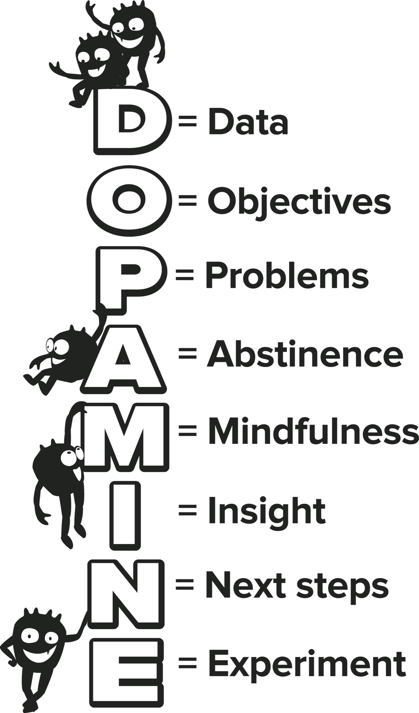
Chương 5 — Không gian, thời gian và ý nghĩa
CHƯƠNG 5
Không Gian, Thời Gian và Ý Nghĩa
Vào mùa thu năm 2017, sau một năm kiêng khem các hành vi tình dục cưỡng bức, Jacob đã tái nghiện. Khi ấy ông sáu mươi lăm tuổi.
Tác nhân kích hoạt là một chuyến đi sang Đông Âu thăm gia đình, trở nên phức tạp vì người vợ hiện tại và các con riêng từ cuộc hôn nhân đầu của ông không hòa thuận với nhau—vẫn là vấn đề tiền bạc và ai được phần nào, một điệp khúc cũ rích.
Hai tuần trong chuyến đi ba tuần, các con ông giận dữ vì ông không đưa cho chúng số tiền chúng đòi hỏi. Vợ ông thì tức giận vì ông thậm chí còn cân nhắc việc đưa tiền cho chúng. Ông sợ làm phật lòng bất kỳ ai, và rốt cuộc lại có nguy cơ làm phật lòng tất cả.
Ông gửi email cho tôi từ nước ngoài để báo rằng mình đang vật lộn. Ông chưa tái nghiện nhưng đã cận kề. Tôi tư vấn qua điện thoại và dặn ông đến gặp tôi ngay khi về nước. Ông đến phòng khám một tuần sau khi trở về, nhưng lúc đó đã quá muộn.
“Chính cái TV trong phòng khách sạn đã khiến tôi bắt đầu thèm muốn trở lại,” ông nói với tôi. “Tôi muốn xem giải US Open. Tôi nằm đó lướt qua các kênh, cảm thấy chán nản, nghĩ về gia đình, về vợ tôi, và việc mọi người đều đang giận tôi. Tôi thấy một người phụ nữ khỏa thân trên TV. Trước khi xem TV, tôi vẫn khá ổn. Tôi không hề có thôi thúc nào. Sai lầm lớn nhất là khi tôi bật TV lên, tôi bắt đầu nghĩ đến việc quay lại những thói quen cũ, và tôi không thể ngừng những suy nghĩ đó lại.”
“Sau đó chuyện gì xảy ra?”
“Vào thứ Ba, tôi về nhà. Tôi không đi làm. Tôi ở nhà xem YouTube. Tôi thấy vẽ trên cơ thể . . . người ta vẽ lên cơ thể khỏa thân của nhau. Một kiểu nghệ thuật, tôi đoán vậy. Đến thứ Tư, tôi không thể cưỡng lại được nữa. Tôi đi ra ngoài mua linh kiện để tự chế lại cái máy của mình.”
“Máy kích thích điện của ông à?”
“Vâng,” ông nói buồn bã, mắt gần như không dám nhìn thẳng vào tôi. “Vấn đề là khi anh đã bắt đầu, anh có thể đắm chìm trong trạng thái cực lạc rất lâu. Cảm giác như bị thôi miên vậy. Và nó mang lại sự giải tỏa ghê gớm. Tôi không nghĩ đến bất cứ điều gì khác. Tôi làm liên tục hai mươi tiếng không ngừng nghỉ. Tôi làm suốt cả ngày thứ Tư và thâu đêm. Sáng thứ Năm, tôi vứt các bộ phận của cái máy vào thùng rác rồi đi làm lại. Sáng thứ Sáu, tôi lại lôi chúng ra khỏi thùng rác, sửa lại rồi dùng cả ngày. Tối thứ Sáu, tôi gọi cho người bảo trợ của mình, và đi họp nhóm Những Người Nghiện Tình Dục Ẩn Danh (Sexaholics Anonymous) vào thứ Bảy. Đến Chủ nhật, tôi lại lôi các bộ phận ra khỏi thùng rác và dùng tiếp. Rồi thứ Hai lại thế. Tôi muốn dừng lại nhưng không thể. Tôi phải làm sao đây?”
“Hãy đóng gói cái máy và mọi linh kiện dự phòng lại,” tôi bảo ông, “rồi bỏ tất cả vào thùng rác. Sau đó mang túi rác ra bãi rác hoặc một nơi nào đó mà ông không thể nào lấy lại được.” Ông gật đầu tỏ ý hiểu. “Rồi bất cứ khi nào ông nảy ra ý định, sự thôi thúc hay cơn thèm muốn sử dụng, hãy quỳ sụp xuống và cầu nguyện. Chỉ cần cầu nguyện. Hãy xin Chúa giúp ông, nhưng phải quỳ gối mà làm. Điều đó rất quan trọng.”
Tôi đã kết hợp cả điều trần tục lẫn điều siêu hình. Không có gì là quá tầm thường hay quá cao siêu để tôi cân nhắc. Bảo ông cầu nguyện dĩ nhiên là phá vỡ những quy tắc bất thành văn. Bác sĩ thường không nói về Chúa. Nhưng tôi tin vào sức mạnh của niềm tin, và trực giác mách bảo tôi rằng điều này sẽ chạm đến Jacob, người vốn lớn lên trong gia đình Công giáo La Mã.
Bảo ông quỳ gối xuống cũng là một cách đưa yếu tố thể chất vào, bất cứ điều gì để phá vỡ sự cưỡng bức tinh thần đang thúc đẩy ông sử dụng. Hoặc có lẽ tôi nhận ra ở ông một nhu cầu sâu xa hơn là được thể hiện sự quy phục.
“Sau khi cầu nguyện xong,” tôi nói, “hãy đứng dậy và gọi cho người bảo trợ của ông.” Ông lại gật đầu.
“À, và hãy tha thứ cho bản thân đi, Jacob. Ông không phải là người xấu. Ông chỉ đang gặp rắc rối thôi, giống như tất cả chúng ta vậy.”
Tự ràng buộc (self-binding) là thuật ngữ dùng để mô tả hành động vứt bỏ cái máy của Jacob. Đó là cách chúng ta chủ động và tự nguyện tạo ra những rào cản giữa bản thân và thứ ma túy yêu thích của mình nhằm giảm thiểu tình trạng tiêu thụ quá mức mang tính cưỡng bức. Tự ràng buộc không chủ yếu dựa vào ý chí, dù quyền tự chủ cá nhân có đóng một phần vai trò. Thay vào đó, tự ràng buộc thẳng thắn thừa nhận những giới hạn của ý chí.
Chìa khóa để tạo ra sự tự ràng buộc hiệu quả trước hết là thừa nhận việc chúng ta mất đi tính tự nguyện khi rơi vào ma lực của một sự cưỡng bức mạnh mẽ, và tự trói mình lại khi ta vẫn còn khả năng lựa chọn tự nguyện.
Nếu chúng ta đợi đến khi cảm thấy sự thôi thúc phải sử dụng, lực kéo mang tính phản xạ của việc tìm kiếm khoái lạc và/hoặc né tránh đau đớn gần như không thể cưỡng lại được. Trong cơn cuồng si của ham muốn, chẳng còn chỗ cho sự quyết định.
Nhưng bằng cách tạo ra những rào cản hữu hình giữa bản thân và thứ ma túy yêu thích, chúng ta đã nhấn nút tạm dừng giữa ham muốn và hành động.
Hơn nữa, tự ràng buộc đã trở thành một nhu cầu thiết yếu của thời hiện đại. Những quy tắc và chế tài từ bên ngoài như thuế thuốc lá, giới hạn độ tuổi uống rượu, và luật cấm tàng trữ cocaine, dù cần thiết, nhưng sẽ không bao giờ đủ trong một thế giới mà khả năng tiếp cận vô vàn hàng hóa giàu dopamine ngày càng tăng đang trở nên gần như vô tận.
Bệnh nhân của tôi đã kể cho tôi nghe về các chiến lược tự ràng buộc của họ suốt nhiều năm. Đến một lúc nào đó, tôi bắt đầu ghi chép lại. Tôi tái sử dụng những chiến lược học được từ bệnh nhân này để khuyên bảo bệnh nhân khác, như tôi đã làm với Jacob khi bảo ông vứt cái máy vào một thùng rác ở xa nơi ông không thể lấy lại được nữa.
Tôi hỏi các bệnh nhân của mình: “Bạn có thể dựng lên những rào cản nào để khiến bản thân khó tiếp cận thứ ma túy yêu thích của mình hơn?” Thậm chí tôi cũng đã áp dụng tự ràng buộc trong chính cuộc sống của mình để kiểm soát các vấn đề tiêu thụ quá mức mang tính cưỡng bức.
Tự ràng buộc có thể được chia thành ba nhóm lớn: các chiến lược vật lý (không gian), các chiến lược thời gian (thời gian) và các chiến lược phân loại (ý nghĩa).
Như bạn sẽ thấy trong phần tiếp theo, tự ràng buộc không phải là bất khả chiến bại, đặc biệt đối với những người nghiện nặng. Nó cũng có thể trở thành nạn nhân của sự tự lừa dối, thiếu thành thật với bản thân và khoa học sai lệch.
Nhưng đó là một điểm khởi đầu tốt đẹp và cần thiết.
Tự Ràng Buộc Về Mặt Vật Lý
Trong số nhiều mối nguy hiểm chực chờ Odysseus của Homer trên hành trình trở về nhà sau Chiến tranh thành Troy, mối nguy đầu tiên là các Siren—những sinh vật nửa người phụ nữ, nửa chim với tiếng hát mê hoặc dụ dỗ thủy thủ lao vào cái chết trên những vách đá lởm chởm của các hòn đảo lân cận.
Cách duy nhất để một thủy thủ vượt qua các Siren bình an vô sự là không nghe thấy tiếng hát của họ. Odysseus ra lệnh cho thủy thủ đoàn nhét sáp ong vào tai và trói chặt chàng vào cột buồm của con tàu, thậm chí trói chặt hơn nữa nếu chàng van xin được cởi trói hoặc cố gắng vùng thoát ra.
Như câu chuyện thần thoại Hy Lạp nổi tiếng này minh họa, một hình thức tự ràng buộc là tạo ra những rào cản vật lý thực sự và/hoặc khoảng cách địa lý giữa bản thân và thứ ma túy yêu thích. Dưới đây là một số ví dụ mà bệnh nhân của tôi đã kể: “Tôi rút phích cắm TV và cất nó vào tủ quần áo.” “Tôi đày máy chơi game của mình ra nhà để xe.” “Tôi không dùng thẻ tín dụng. Chỉ dùng tiền mặt.” “Tôi gọi điện trước cho khách sạn để yêu cầu họ dọn bỏ quầy bar mini.” “Tôi gọi điện trước cho khách sạn để yêu cầu họ dọn bỏ quầy bar mini và cả tivi.” “Tôi cất chiếc iPad của mình vào két an toàn ở Ngân hàng Bank of America.”
Bệnh nhân của tôi, ông Oscar—một người đàn ông mập mạp ở tuổi ngoài bảy mươi với đầu óc uyên bác, giọng nói vang dội và sở thích độc thoại dài dòng đến mức làm rối tung buổi trị liệu nhóm và phải bỏ dở—có thói quen uống rượu quá độ khi làm việc trong phòng đọc sách, lúi húi sửa đồ trong nhà để xe và làm vườn.
Qua quá trình thử và sai, ông học được rằng để ngăn chặn hành vi này, ông phải loại bỏ toàn bộ rượu bia khỏi nhà. Bất kỳ chai rượu nào mang vào nhà đều phải khóa trong tủ hồ sơ mà chỉ vợ ông giữ chìa khóa. Nhờ phương pháp này, Oscar đã kiêng rượu thành công trong nhiều năm.
Nhưng tôi đã cảnh báo bạn rồi đấy, tự ràng buộc không có gì đảm bảo cả. Đôi khi chính rào cản đó lại trở thành lời mời gọi cho một thử thách. Việc giải mã câu đố làm thế nào để có được thứ ma túy yêu thích lại trở thành một phần sức hấp dẫn của nó.
Một ngày nọ, vợ của Oscar trước khi đi công tác xa đã khóa một chai rượu vang đắt tiền vào tủ hồ sơ và mang theo chìa khóa. Buổi tối đầu tiên bà vắng nhà, Oscar bắt đầu nghĩ về chai rượu vang mà ông biết chắc đang nằm ở đó. Ý nghĩ ấy xâm chiếm tâm trí ông như một sự hiện diện hữu hình. Nó không đau đớn, chỉ gây bứt rứt. Nếu mình chỉ ra ngó qua một chút để chắc chắn rằng nó đã được khóa kỹ, mình sẽ ngừng nghĩ về nó thôi, ông tự nhủ.
Ông bước tới phòng làm việc của vợ và kéo thử ngăn kéo. Thật ngạc nhiên, ngăn kéo mở hé ra được nửa inch, và ông có thể nhìn thấy chai rượu đứng thẳng giữa các tập hồ sơ. Không đủ rộng để lôi nó ra, nhưng đủ để nhìn thấy nút bần, trêu ngươi ngay ngoài tầm với.
Ông đứng nhìn chằm chằm vào ngăn kéo tối om suốt một phút đồng hồ, ngắm nghía chai rượu. Một phần trong ông muốn đóng sập ngăn kéo lại. Một phần khác lại không thể rời mắt khỏi nó. Rồi có thứ gì đó trong não ông như bật công tắc và ông quyết định—hoặc có lẽ ông đã ngừng cố gắng để không quyết định. Ông bắt tay vào hành động.
Ông vội vã chạy ra nhà để xe lấy hộp dụng cụ. Ngồi xuống bắt đầu làm việc, ông dùng đủ loại dụng cụ để cố gắng cạy khóa và mở ngăn kéo. Ông làm việc với sự tập trung cao độ và quyết tâm sắt đá. Nhưng ông vẫn không thể mở được ngăn kéo. Mọi dụng cụ ông thử đều bất lực trước ổ khóa.
Rồi câu trả lời chợt lóe lên trong đầu ông như một nút thắt đột nhiên bung ra dưới các ngón tay. Tất nhiên rồi. Sao mình không nghĩ ra sớm hơn nhỉ? Quá rõ ràng mà.
Ông ngồi thẳng dậy. Không cần phải vội vàng nữa. Mục tiêu đã nằm trong tầm tay. Ông lặng lẽ thu dọn đống dụng cụ, chỉ giữ lại một món: chiếc kìm mũi dài. Ông dùng kìm mũi dài rút nút bần chai rượu, nhẹ nhàng đặt nút bần và chiếc kìm lên bàn, rồi đi vào bếp lấy món dụng cụ cuối cùng ông cần: một chiếc ống hút nhựa dài.
Nơi chiếc tủ hồ sơ của Oscar thất bại, những thiết bị mới như két an toàn nhà bếp kSafe có lẽ đã phát huy tác dụng. Kích thước cỡ một hộp đựng bánh mì và được làm bằng nhựa trong suốt không thể xuyên thủng, chiếc kSafe có thể đựng mọi thứ từ bánh quy, iPhone đến thuốc giảm đau opioid. Chỉ cần xoay núm vặn là két sẽ khóa theo bộ hẹn giờ. Một khi bộ hẹn giờ đã được thiết lập, không có cách nào vượt qua ổ khóa hay phá vỡ lớp nhựa trong suốt cho đến khi hết giờ.
Tự ràng buộc về mặt vật lý giờ đây đã có bán tại hiệu thuốc địa phương của bạn. Thay vì khóa chặt chất gây nghiện vào tủ hồ sơ, chúng ta có lựa chọn đặt ổ khóa ở cấp độ tế bào.
Thuốc naltrexone được dùng để điều trị chứng nghiện rượu và nghiện opioid, đồng thời cũng đang được sử dụng cho nhiều chứng nghiện khác, từ cờ bạc, ăn uống quá độ đến nghiện mua sắm. Naltrexone phong bế thụ thể opioid, từ đó làm giảm tác dụng củng cố của nhiều loại hành vi mang lại phần thưởng khác nhau.
Tôi từng có những bệnh nhân báo cáo rằng cơn thèm rượu gần như biến mất hoàn toàn hoặc chấm dứt hẳn khi dùng naltrexone. Đối với những bệnh nhân đã vật lộn hàng thập kỷ với vấn đề này, khả năng không uống chút nào, hoặc uống có chừng mực như “người bình thường”, đến như một sự mặc khải.
Vì naltrexone phong bế hệ thống opioid nội sinh của chúng ta, mọi người có lý do để tự hỏi liệu nó có thể gây ra trầm cảm hay không. Không có bằng chứng đáng tin cậy nào cho thấy điều đó, nhưng thi thoảng tôi vẫn gặp những bệnh nhân báo cáo rằng cảm giác khoái lạc bị san phẳng khi dùng naltrexone.
Một bệnh nhân nói với tôi: “Naltrexone giúp tôi không uống rượu, nhưng tôi không còn thấy thịt xông khói ngon như trước nữa, hay khi tắm nước nóng cũng thế, và tôi không thể đạt được cảm giác hưng phấn khi chạy bộ.” Chúng tôi đã khắc phục điều này bằng cách cho anh uống naltrexone nửa giờ trước khi bước vào một tình huống có nguy cơ uống rượu, chẳng hạn như giờ giảm giá ở quán bar (happy hour). Cách tiếp cận dùng naltrexone khi cần này cho phép anh uống có chừng mực mà vẫn tận hưởng được món thịt xông khói trở lại.
Vào mùa hè năm 2014, tôi cùng một sinh viên của mình đã tới Trung Quốc để phỏng vấn những người đang tìm kiếm điều trị nghiện heroin tại Bệnh viện New Hospital, một bệnh viện cai nghiện tự nguyện, phi chính phủ ở Bắc Kinh.
Chúng tôi đã trò chuyện với một người đàn ông ba mươi tám tuổi, anh kể lại rằng trước khi đến New Hospital điều trị, anh đã trải qua “phẫu thuật cai nghiện”. Ca phẫu thuật cai nghiện này liên quan đến việc cấy ghép một viên nang naltrexone tác dụng kéo dài để phong bế tác dụng của heroin.
“Năm 2007,” anh kể, “tôi đến tỉnh Vũ Hán để làm phẫu thuật. Bố mẹ bắt tôi đi, và họ trả tiền cho ca mổ. Tôi không biết chắc các bác sĩ đã làm gì, nhưng tôi có thể khẳng định với anh là nó không hiệu quả. Sau ca phẫu thuật, tôi vẫn tiếp tục chích heroin. Tôi không còn cảm giác phê nữa, nhưng tôi vẫn làm vì chích ma túy đã thành thói quen rồi. Suốt sáu tháng tiếp theo, ngày nào tôi cũng chích dù chẳng thấy cảm giác gì. Tôi không nghĩ đến chuyện dừng lại vì tôi vẫn có tiền để mua. Sau sáu tháng, cảm giác phê quay trở lại. Thế nên giờ tôi mới ở đây, hy vọng họ sẽ có thứ gì đó mới mẻ và tốt hơn cho tôi.”
Câu chuyện này minh họa rằng chỉ dùng liệu pháp dược lý đơn thuần, mà không có sự thấu hiểu, nhận thức và ý chí thay đổi hành vi, thì khó có thể thành công.
Một loại thuốc khác được dùng để điều trị nghiện rượu là disulfiram. Disulfiram làm gián đoạn quá trình chuyển hóa rượu, dẫn đến tích tụ acetaldehyde, chất này gây ra phản ứng đỏ bừng mặt dữ dội, buồn nôn, nôn mửa, tăng huyết áp và cảm giác khó chịu toàn thân.
Uống disulfiram hàng ngày là một biện pháp răn đe hiệu quả cho những người đang cố gắng kiêng rượu, đặc biệt là những người sáng thức dậy đầy quyết tâm không uống nhưng đến tối lại đánh mất nghị lực. Hóa ra ý chí không phải là một nguồn tài nguyên vô hạn của con người. Nó giống như việc tập luyện một nhóm cơ, và có thể bị mệt mỏi nếu chúng ta sử dụng càng nhiều.
Như một bệnh nhân đã nói: “Với disulfiram, tôi chỉ cần quyết định một lần mỗi ngày là không uống rượu. Tôi không phải liên tục đấu tranh tư tưởng suốt cả ngày dài.”
Một số người, phổ biến nhất là người Đông Á, mang một đột biến gen khiến họ có phản ứng giống như uống disulfiram khi tiếp xúc với rượu mà không cần dùng thuốc. Về mặt lịch sử, những cá nhân này có tỷ lệ nghiện rượu thấp hơn.
Đáng chú ý là trong những thập kỷ gần đây, việc tiêu thụ rượu gia tăng ở các nước Đông Á đã dẫn đến tỷ lệ nghiện rượu cao hơn ngay cả trong nhóm dân số vốn được bảo vệ trước đây. Các nhà khoa học hiện đang phát hiện ra rằng những người mang đột biến gen này nhưng vẫn uống rượu có nguy cơ mắc các bệnh ung thư liên quan đến rượu cao hơn.
Giống như mọi hình thức tự ràng buộc khác, disulfiram cũng có thể thất bại. Bệnh nhân của tôi, ông Arnold, đã uống rượu nặng suốt nhiều thập kỷ, một vấn đề càng trở nên tồi tệ hơn sau khi ông bị đột quỵ nghiêm trọng và mất một phần chức năng thùy trán. Bác sĩ tim mạch bảo ông phải ngừng uống rượu nếu không sẽ chết. Rủi ro là vô cùng lớn.
Tôi kê đơn disulfiram và dặn Arnold rằng thuốc sẽ khiến ông ốm nặng nếu ông uống rượu khi đang dùng thuốc. Để đảm bảo Arnold uống thuốc, vợ ông đưa thuốc cho ông mỗi sáng và kiểm tra miệng ông sau đó để chắc chắn ông đã nuốt.
Một ngày nọ khi vợ vắng nhà, Arnold lần mò ra cửa hàng rượu, mua một chai rượu whisky cỡ lớn và uống cạn. Khi vợ ông về nhà và thấy ông say mèm, điều khiến bà bối rối nhất là tại sao thuốc disulfiram lại không làm ông nôn nao. Arnold say xỉn, nhưng ông không hề bị ốm.
Một ngày sau, ông thú nhận. Trong suốt ba ngày trước đó, ông đã không nuốt viên thuốc. Thay vào đó, ông giấu nó vào khe hở của một chiếc răng bị mất.
Những hình thức tự ràng buộc vật lý hiện đại khác liên quan đến việc thay đổi giải phẫu cơ thể chúng ta; ví dụ như các ca phẫu thuật giảm cân như thắt đai dạ dày, cắt dạ dày hình ống và nối tắt dạ dày.
Những ca phẫu thuật này về cơ bản tạo ra một chiếc dạ dày nhỏ hơn và/hoặc bỏ qua phần ruột hấp thụ calo. Phương pháp thắt đai dạ dày đặt một chiếc vòng vật lý quanh dạ dày, làm nó nhỏ lại mà không cắt bỏ bất kỳ phần nào của dạ dày hay ruột non. Phẫu thuật cắt dạ dày hình ống loại bỏ một phần dạ dày để thu nhỏ kích thước. Phẫu thuật nối tắt dạ dày chuyển hướng ruột non đi vòng qua dạ dày và tá tràng, nơi chất dinh dưỡng được hấp thụ.
Bệnh nhân của tôi, Emily, đã thực hiện phẫu thuật nối tắt dạ dày vào năm 2014 và nhờ đó giảm từ 250 pound xuống còn 115 pound trong vòng một năm. Không có biện pháp can thiệp nào khác—và cô đã thử tất cả—giúp cô giảm cân được. Emily không phải là trường hợp duy nhất.
Phẫu thuật giảm cân là một biện pháp can thiệp đã được chứng minh hiệu quả đối với bệnh béo phì, đặc biệt khi các phương pháp khác đều thất bại. Nhưng chúng không phải không có những hệ lụy ngoài ý muốn.
Cứ bốn người trải qua phẫu thuật nối tắt dạ dày thì có một người phát sinh vấn đề mới là nghiện rượu. Sau ca phẫu thuật của mình, Emily cũng trở nên nghiện rượu. Có rất nhiều nguyên nhân dẫn đến điều này.
Hầu hết những người béo phì đều có chứng nghiện thức ăn tiềm ẩn, điều mà chỉ riêng phẫu thuật không thể giải quyết thỏa đáng. Rất ít người trải qua các ca phẫu thuật này nhận được sự can thiệp về hành vi và tâm lý cần thiết để giúp họ thay đổi thói quen ăn uống. Do đó, nhiều người trong số họ quay lại ăn uống theo cách thiếu lành mạnh, làm giãn chiếc dạ dày vốn đã được thu nhỏ, và rốt cuộc gặp biến chứng y tế cũng như phải phẫu thuật lại. Khi thức ăn không còn là một lựa chọn, nhiều người chuyển từ thức ăn sang một loại ma túy khác, như rượu.
Hơn nữa, ca phẫu thuật làm thay đổi cách rượu được chuyển hóa, làm tăng tốc độ hấp thụ. Việc không còn chiếc dạ dày kích thước bình thường đồng nghĩa với việc rượu được hấp thụ vào máu gần như ngay lập tức và tránh được quá trình chuyển hóa bước đầu thường diễn ra ở dạ dày. Kết quả là bệnh nhân say nhanh hơn và say lâu hơn với lượng rượu ít hơn, chẳng khác nào được truyền rượu trực tiếp qua đường tĩnh mạch.
Chúng ta có thể và nên ăn mừng một biện pháp can thiệp y tế có thể cải thiện sức khỏe của biết bao nhiêu người. Nhưng việc chúng ta phải nhờ đến chuyện cắt bỏ và tái tạo các cơ quan nội tạng để thích nghi với nguồn cung thực phẩm của mình đánh dấu một bước ngoặt trong lịch sử tiêu dùng của nhân loại.
Từ những chiếc hộp khóa giới hạn khả năng tiếp cận, đến các loại thuốc phong bế thụ thể opioid, cho đến những ca phẫu thuật thu nhỏ dạ dày, sự tự ràng buộc về mặt vật lý hiện diện khắp nơi trong đời sống hiện đại, minh họa cho nhu cầu ngày càng tăng của chúng ta trong việc hãm phanh dopamine.
Còn về phần tôi, khi sách chỉ cách một cú nhấp chuột, tôi rất dễ sa đà vào thế giới giả tưởng lâu hơn mức mình muốn, hoặc lâu hơn mức tốt cho bản thân. Tôi đã vứt bỏ chiếc máy đọc sách Kindle cùng khả năng tiếp cận dễ dàng tới dòng chảy bất tận của tiểu thuyết khiêu dâm có thể tải xuống. Kết quả là tôi kiểm soát tốt hơn xu hướng đắm chìm vào thứ tiểu thuyết giải trí rẻ tiền. Hành động đơn giản là phải đi đến thư viện hoặc hiệu sách đã tạo ra một rào cản hữu ích giữa tôi và thứ ma túy yêu thích của mình.
Tự Ràng Buộc Về Mặt Thời Gian
Một hình thức tự ràng buộc khác là sử dụng các giới hạn thời gian và vạch đích.
Bằng cách giới hạn việc tiêu thụ vào những khoảng thời gian nhất định trong ngày, tuần, tháng hoặc năm, chúng ta thu hẹp khung thời gian tiêu thụ và qua đó hạn chế mức độ sử dụng. Ví dụ, chúng ta có thể tự nhủ mình sẽ chỉ tiêu thụ vào các ngày lễ, chỉ vào cuối tuần, không bao giờ trước thứ Năm, không bao giờ trước 5 giờ chiều, v.v.
Đôi khi, thay vì thời gian thuần túy, chúng ta tự ràng buộc mình dựa trên các cột mốc hoặc thành tựu. Chúng ta sẽ đợi đến sinh nhật, hoặc ngay sau khi hoàn thành một bài tập, hoặc sau khi lấy được bằng cấp, hoặc một khi được thăng chức. Khi đồng hồ đếm ngược kết thúc, hoặc chúng ta đã vượt qua vạch đích tự đặt ra, thứ ma túy đó chính là phần thưởng của chúng ta.
Các nhà khoa học thần kinh S. H. Ahmed và George Koob đã chỉ ra rằng những con chuột được tiếp cận không giới hạn với cocaine trong sáu giờ mỗi ngày dần dần tăng tần suất nhấn cần gạt theo thời gian cho đến mức kiệt sức về thể chất và thậm chí tử vong. Tình trạng gia tăng tự sử dụng trong điều kiện tiếp cận kéo dài (sáu giờ) cũng được ghi nhận với methamphetamine, nicotine, heroin và rượu.
Tuy nhiên, những con chuột chỉ được tiếp cận cocaine một giờ mỗi ngày lại sử dụng một lượng cocaine ổn định qua nhiều ngày liên tiếp. Nghĩa là, chúng không nhấn cần gạt để lấy thêm thuốc trên mỗi đơn vị thời gian qua từng ngày nối tiếp nhau.
Nghiên cứu này gợi ý rằng bằng cách giới hạn việc tiêu thụ chất kích thích trong một khung thời gian hẹp, chúng ta có thể điều tiết việc sử dụng và tránh được tình trạng tiêu thụ cưỡng bức và leo thang vốn đi kèm với việc tiếp cận không giới hạn.
Chỉ riêng việc theo dõi lượng thời gian chúng ta dành để tiêu thụ—ví dụ như đo thời gian sử dụng điện thoại thông minh—cũng là một cách để nhận thức và từ đó giảm thiểu việc tiêu thụ. Khi chúng ta sử dụng một cách có ý thức những dữ kiện khách quan như lượng thời gian mình đang dùng, chúng ta sẽ khó phủ nhận chúng hơn, và do đó ở vào vị thế tốt hơn để hành động.
Tuy nhiên, điều này có thể trở nên rất rắc rối rất nhanh. Thời gian có một cách trôi tuột kỳ lạ khỏi tầm tay chúng ta khi chúng ta đang mải mê đuổi theo dopamine.
Một bệnh nhân kể với tôi rằng khi anh sử dụng methamphetamine, anh tự thuyết phục mình rằng thời gian không còn giá trị nữa. Anh cảm thấy như thể mình có thể khâu vá nó lại sau đó mà chẳng ai nhận ra có một mảnh đã biến mất. Tôi hình dung anh đang trôi nổi trên bầu trời đêm, to lớn như một chòm sao, đang khâu lại một vết rách trong vũ trụ.
Các sản phẩm giàu dopamine làm rối loạn khả năng trì hoãn sự thỏa mãn của chúng ta, một hiện tượng gọi là chiết khấu theo độ trễ (delay discounting).
Chiết khấu theo độ trễ đề cập đến thực tế rằng giá trị của một phần thưởng sẽ giảm xuống khi chúng ta phải chờ đợi nó càng lâu. Hầu hết chúng ta thà nhận hai mươi đô la hôm nay còn hơn là một năm sau. Xu hướng đánh giá quá cao các phần thưởng ngắn hạn so với phần thưởng dài hạn có thể bị ảnh hưởng bởi nhiều yếu tố. Một trong những yếu tố đó là việc tiêu thụ các chất gây nghiện và hành vi gây nghiện.
Nhà kinh tế học hành vi Anne Line Bretteville-Jensen và các đồng nghiệp đã nghiên cứu sự chiết khấu ở những người đang sử dụng heroin và amphetamine so với những người từng sử dụng và nhóm đối chứng tương đồng (những cá nhân tương đồng về giới tính, độ tuổi, trình độ học vấn, v.v.). Các nhà nghiên cứu yêu cầu những người tham gia tưởng tượng họ có một tấm vé số trúng thưởng trị giá 100.000 krone Na Uy (NOK), xấp xỉ 14.600 đô la Mỹ.
Sau đó, họ hỏi những người tham gia xem họ muốn nhận ít tiền hơn ngay bây giờ (ít hơn 100.000 NOK) hay nhận đủ số tiền sau một tuần nữa. Trong số những người đang sử dụng ma túy, 20% nói rằng họ muốn nhận tiền ngay lập tức và sẵn sàng nhận ít hơn để có được nó. Chỉ có 4% người từng sử dụng và 2% nhóm đối chứng chấp nhận khoản lỗ đó.
Người hút thuốc lá có nhiều khả năng chiết khấu các phần thưởng tiền bạc hơn so với nhóm đối chứng (tức là họ đánh giá chúng thấp hơn nếu phải chờ đợi lâu hơn). Họ hút càng nhiều, tiêu thụ càng nhiều nicotine, họ càng chiết khấu mạnh các phần thưởng trong tương lai. Những phát hiện này đúng với cả tiền giả định lẫn tiền thật.
Nhà nghiên cứu về nghiện Warren K. Bickel và các đồng nghiệp đã yêu cầu những người nghiện opioid và nhóm đối chứng khỏe mạnh hoàn thành một câu chuyện bắt đầu bằng dòng: “Sau khi thức dậy, Bill bắt đầu nghĩ về tương lai của mình. Nhìn chung, anh ấy kỳ vọng sẽ . . .”
Những người tham gia nghiên cứu bị nghiện opioid đã đề cập đến một tương lai dài trung bình chín ngày. Nhóm đối chứng khỏe mạnh đề cập đến một tương lai dài trung bình 4,7 năm. Sự khác biệt đáng kinh ngạc này minh họa cách “tầm nhìn thời gian” bị thu hẹp lại như thế nào khi chúng ta nằm dưới sự chi phối của một loại thuốc gây nghiện.
Ngược lại, khi tôi hỏi các bệnh nhân của mình đâu là khoảnh khắc quyết định khiến họ cố gắng bước vào quá trình hồi phục, họ sẽ nói điều gì đó thể hiện một cái nhìn dài hạn về thời gian. Như một bệnh nhân từng hít heroin suốt một năm qua kể với tôi: “Tôi chợt nhận ra mình đã dùng heroin cả một năm trời, và tôi tự nhủ, nếu không dừng lại ngay bây giờ, có lẽ mình sẽ làm việc này suốt phần đời còn lại.”
Việc suy ngẫm về quỹ đạo của toàn bộ cuộc đời mình, thay vì chỉ khoảnh khắc hiện tại, đã giúp chàng trai trẻ này kiểm kê lại một cách chính xác hơn những hành vi thường nhật của bản thân. Điều tương tự cũng đúng với Delilah, cô chỉ sẵn sàng kiêng cần sa trong bốn tuần sau khi tưởng tượng cảnh mình vẫn đang hút thuốc mười năm sau nữa.
Trong hệ sinh thái tràn ngập dopamine ngày nay, tất cả chúng ta đều đã được rèn giũa để hướng tới sự thỏa mãn tức thì. Chúng ta muốn mua thứ gì đó, và ngày hôm sau nó đã xuất hiện ngay trước cửa nhà. Chúng ta muốn biết điều gì đó, và giây tiếp theo câu trả lời đã hiện lên trên màn hình. Phải chăng chúng ta đang đánh mất khả năng tự mày mò giải đáp vấn đề, hay sự bứt rứt trong lúc tìm kiếm câu trả lời, hay việc phải chờ đợi những thứ mình muốn?
Nhà khoa học thần kinh Samuel McClure và các đồng nghiệp đã kiểm tra xem những vùng nào của não bộ tham gia vào việc lựa chọn phần thưởng tức thì so với phần thưởng trì hoãn. Họ phát hiện ra rằng khi những người tham gia chọn phần thưởng tức thì, các vùng xử lý cảm xúc và phần thưởng của não bộ sáng lên. Khi những người tham gia trì hoãn phần thưởng, vỏ não trước trán—vùng não liên quan đến việc lập kế hoạch và tư duy trừu tượng—trở nên hoạt động tích cực.
Hàm ý ở đây là tất cả chúng ta hiện nay đều dễ bị teo vỏ não trước trán khi con đường phần thưởng đã trở thành động lực chi phối cuộc sống của chúng ta.
Việc nạp các hàng hóa giàu dopamine không phải là biến số duy nhất ảnh hưởng đến chiết khấu theo độ trễ.
Ví dụ, những người lớn lên trong môi trường thiếu thốn tài nguyên và được mớm sẵn các tín hiệu về cái chết có nhiều khả năng coi trọng phần thưởng tức thì hơn phần thưởng trì hoãn so với những người được mớm tín hiệu tương tự nhưng lớn lên trong môi trường giàu tài nguyên. Thanh niên Brazil sống trong các khu ổ chuột (favelas) chiết khấu phần thưởng tương lai nhiều hơn so với các sinh viên đại học cùng độ tuổi.
Có gì ngạc nhiên khi nghèo đói là một yếu tố nguy cơ của chứng nghiện, đặc biệt là trong một thế giới dễ dàng tiếp cận dopamine giá rẻ?
Một biến số khác góp phần vào vấn đề tiêu thụ quá mức mang tính cưỡng bức là lượng thời gian nhàn rỗi ngày càng tăng của chúng ta ngày nay, và đi kèm với nó là sự buồn chán.
Sự cơ giới hóa nông nghiệp, sản xuất, công việc nội trợ và nhiều công việc vốn tốn thời gian, nặng nhọc trước đây đã làm giảm số giờ mỗi ngày mà mọi người phải dành để làm việc, để lại nhiều thời gian hơn cho việc giải trí.
Một ngày điển hình của người lao động trung bình ở Hoa Kỳ ngay trước Nội chiến (1861–1865), dù trong nông nghiệp hay công nghiệp, bao gồm việc làm từ mười đến mười hai giờ mỗi ngày, sáu ngày rưỡi mỗi tuần, năm mươi mốt tuần mỗi năm, với không quá hai giờ mỗi ngày dành cho hoạt động giải trí. Một số công nhân, thường là phụ nữ nhập cư, làm việc mười ba giờ mỗi ngày, sáu ngày một tuần. Những người khác phải lao động trong cảnh nô lệ.
Ngược lại, lượng thời gian nhàn rỗi ở Hoa Kỳ ngày nay đã tăng thêm 5,1 giờ mỗi tuần trong giai đoạn từ năm 1965 đến năm 2003, tức là tăng thêm 270 giờ nhàn rỗi mỗi năm. Đến năm 2040, số giờ nhàn rỗi trong một ngày điển hình ở Hoa Kỳ được dự báo là 7,2 giờ, với chỉ 3,8 giờ làm việc mỗi ngày. Các con số ở những quốc gia thu nhập cao khác cũng tương tự.
Thời gian nhàn rỗi ở Hoa Kỳ có sự khác biệt theo trình độ học vấn và tình trạng kinh tế xã hội, nhưng không theo cách bạn nghĩ đâu.
Năm 1965, cả những người ít học hơn và những người có học vấn cao hơn ở Hoa Kỳ đều có lượng thời gian nhàn rỗi ngang nhau. Ngày nay, người trưởng thành sống ở Mỹ không có bằng tốt nghiệp trung học có nhiều thời gian nhàn rỗi hơn 42% so với người trưởng thành có bằng cử nhân trở lên, với sự chênh lệch lớn nhất về thời gian nhàn rỗi diễn ra trong các giờ làm việc ngày thường. Điều này phần lớn là do tình trạng thiếu việc làm ở những người không có bằng đại học.
Việc tiêu thụ dopamine không chỉ là một cách để lấp đầy những giờ không phải làm việc. Nó cũng đã trở thành lý do khiến mọi người không tham gia vào lực lượng lao động.
Nhà kinh tế học Mark Aguiar và các đồng nghiệp đã viết trong một bài báo có tựa đề rất đúng đắn là “Những Xa Xỉ Nhàn Rỗi và Nguồn Cung Lao Động của Nam Giới Trẻ”: “Nam giới trẻ tuổi, từ 21 đến 30 tuổi, cho thấy sự sụt giảm giờ làm việc lớn hơn trong mười lăm năm qua so với nam giới lớn tuổi hơn hoặc phụ nữ. Kể từ năm 2004, dữ liệu sử dụng thời gian cho thấy nam giới trẻ tuổi đã chuyển dịch rõ rệt thời gian nhàn rỗi của họ sang chơi trò chơi điện tử và các hoạt động giải trí trên máy tính khác.”
Nhà văn Eric J. Iannelli đã ám chỉ ngắn gọn về lịch sử nghiện ngập của chính mình như sau:
Nhiều năm trước, trong điều mà giờ đây dường như là một kiếp sống khác, một người bạn đã nói với tôi: “Toàn bộ sự tồn tại của cậu có thể rút gọn thành một chu kỳ ba phần. Một: Phê pha bét nhè. Hai: Phá bĩnh tung tóe. Ba: Khắc phục hậu quả.” Chúng tôi chưa quen nhau lâu, có lẽ nhiều nhất là hai tháng, vậy mà anh ấy đã chứng kiến đủ những lần uống rượu say bất tỉnh nhân sự thường xuyên của tôi—chỉ là một trong những biểu hiện rõ ràng nhất của vòng xoáy tự duy trì của chứng nghiện—để nắm thóp được tôi. Với một nụ cười gượng gạo, anh ấy tiếp tục đưa ra giả thuyết tổng quát hơn—và tôi nghi là chỉ nửa đùa nửa thật—rằng những kẻ nghiện ngập là những người giải quyết vấn đề đang buồn chán hoặc bế tắc, họ bản năng tự dàn dựng ra những tình huống kiểu Houdini để tự gỡ rối cho mình khi không có thử thách nào khác xuất hiện. Ma túy trở thành phần thưởng khi họ thành công và là giải an ủi khi họ thất bại.
Khi tôi mới gặp Muhammad, cậu giống như một dòng sông ngôn từ. Cái lưỡi của cậu gần như không theo kịp bộ não đang sục sôi ý tưởng.
“Tôi nghĩ mình có thể đang gặp một vấn đề nhỏ về nghiện ngập,” cậu nói. Tôi mến cậu ngay lập tức.
Bằng thứ tiếng Anh hoàn hảo pha chút giọng Trung Đông, cậu kể cho tôi nghe câu chuyện của mình.
Cậu từ Trung Đông đến Hoa Kỳ vào năm 2007 để học đại học ngành toán và kỹ thuật. Ở quê nhà cậu, việc sử dụng ma túy dưới bất kỳ hình thức nào đều có nguy cơ bị trừng phạt hà khắc.
Sau khi đặt chân đến Hoa Kỳ, cậu cảm thấy thật tự do khi có thể sử dụng ma túy giải trí mà không phải sợ hãi. Ban đầu, cậu giới hạn việc dùng ma túy và rượu vào các ngày cuối tuần, nhưng chỉ trong vòng một năm, cậu đã hút cần sa hàng ngày và nhận thấy điểm số cũng như các mối quan hệ bạn bè của mình bị ảnh hưởng nghiêm trọng.
Cậu tự nhủ: Mình sẽ không hút lại nữa cho đến khi hoàn thành bằng đại học, được nhận vào chương trình thạc sĩ và nhận được tài trợ cho bậc tiến sĩ.
Giữ đúng lời hứa, cậu đã không hút lại cho đến khi hoàn thành chương trình thạc sĩ kỹ thuật cơ khí tại Stanford và nhận được học bổng tiến sĩ. Khi hút trở lại, cậu thề sẽ chỉ giới hạn bản thân vào cuối tuần mà thôi.
Một năm sau khi học tiến sĩ, cậu đã hút mỗi ngày, và đến cuối năm thứ hai, cậu đặt ra những quy tắc mới cho mình: điếu mười miligam trong lúc làm việc, điếu ba mươi miligam khi không làm việc, và điếu ba trăm miligam chỉ vào những dịp đặc biệt . . . để thật sự phê pha tới bến.
Muhammad trượt kỳ thi sát hạch nghiên cứu sinh, cột mốc quan trọng nhất trong chương trình học tiến sĩ. Cậu thi lại lần thứ hai và tiếp tục trượt. Cậu suýt bị đuổi khỏi chương trình nhưng đã xoay xở thuyết phục được các giáo sư cho mình một cơ hội cuối cùng.
Vào mùa xuân năm 2015, Muhammad cam kết kiêng khem cho đến khi vượt qua kỳ thi sát hạch, bất kể mất bao lâu. Trong suốt một năm tiếp theo, cậu kiêng hoàn toàn cần sa và làm việc chăm chỉ hơn bao giờ hết. Bản báo cáo cuối cùng của cậu dài hơn 100 trang.
“Đó là,” cậu kể với tôi, “một trong những năm tích cực và năng suất nhất cuộc đời tôi.”
Năm đó cậu đã vượt qua kỳ thi sát hạch, và ngay tối hôm sau kỳ thi, một người bạn mang cần sa tới để chúc mừng cậu. Lúc đầu, Muhammad từ chối. Nhưng người bạn nói: “Không đời nào một người thông minh như cậu lại có thể bị nghiện được.”
Chỉ lần này thôi, Muhammad tự nhủ, và sau đó sẽ không dùng lại nữa cho đến khi tốt nghiệp.
Đến thứ Hai, không dùng lại nữa cho đến khi tốt nghiệp biến thành không cần sa vào những ngày có lớp, rồi biến thành không cần sa vào những ngày có môn khó, rồi thành không cần sa vào những ngày có bài thi, và cuối cùng thành không cần sa trước chín giờ sáng.
Muhammad quả thực rất thông minh. Vậy tại sao cậu không thể nhận ra rằng mỗi lần hút, cậu sẽ không thể tuân thủ được những giới hạn thời gian do chính mình đặt ra?
Bởi vì một khi đã bắt đầu sử dụng cần sa, cậu không còn bị chi phối bởi lý trí nữa; cậu bị chi phối bởi cán cân khoái lạc – đau đớn. Chỉ một điếu thôi cũng tạo ra một trạng thái thèm muốn khó lòng bị tác động bởi logic. Dưới ảnh hưởng của thuốc, cậu không thể đánh giá khách quan những phần thưởng tức thì của việc hút thuốc so với những hậu quả dài hạn tương ứng. Chiết khấu theo độ trễ đã thống trị thế giới của cậu.
Trong trường hợp của Muhammad, sự tự ràng buộc về mặt thời gian chỉ giúp ích được đến một mức độ nhất định, và việc dùng cần sa có chừng mực khó có thể là một lựa chọn. Cậu buộc phải tìm, và cuối cùng đã tìm ra, một con đường khác.
Tự Ràng Buộc Về Mặt Phân Loại
Jacob quay lại gặp tôi một tuần sau lần tái nghiện. Ông đã không sử dụng suốt cả tuần đó. Ông bỏ cái máy vào một thùng rác mà ông biết chắc sẽ được xe rác chở đi trong ngày hôm đó. Ông cũng cất luôn máy tính xách tay và máy tính bảng đi. Ông đến nhà thờ lần đầu tiên sau nhiều năm và cầu nguyện cho gia đình mình.
“Việc không nghĩ về bản thân và các vấn đề của mình là một sự thay đổi tốt. Tôi cũng ngừng tự làm nhục bản thân. Câu chuyện của tôi thật buồn, nhưng tôi có thể làm điều gì đó để thay đổi nó.”
Ông ngừng lại một chút. “Nhưng tôi không thấy ổn lắm,” ông nói. “Thứ Hai tôi gặp bác sĩ, rồi đến thứ Sáu tôi lại nghĩ đến chuyện tự sát, nhưng tôi biết mình sẽ không làm thế đâu.”
“Đó là sự tụt dốc sau khi sử dụng (comedown),” tôi nói. “Hãy để cảm xúc dâng lên rồi rút đi như một con sóng. Hãy kiên nhẫn, rồi theo thời gian, ông sẽ thấy khá hơn.”
Trong những tuần và tháng tiếp theo, Jacob đã duy trì được sự kiêng khem bằng cách giới hạn không chỉ việc tiếp cận phim khiêu dâm, phòng chat và máy xung điện TENS, mà còn cả “dục vọng dưới mọi hình thức”.
Ông ngừng xem tivi, phim ảnh, YouTube, các giải đấu bóng chuyền nữ—gần như bất cứ thứ gì mang lại cho ông hình ảnh khêu gợi tình dục. Ông bỏ qua một số loại bài báo nhất định; ví dụ như các bài viết về Stormy Daniels, nữ diễn viên múa thoát y bị cáo buộc từng ngoại tình với Donald Trump. Ông mặc quần đùi trước khi cạo râu trước gương vào mỗi buổi sáng. Việc nhìn thấy chính cơ thể trần truồng của mình cũng là một tác nhân kích hoạt.
“Tôi đã tự đùa nghịch với cơ thể mình suốt một thời gian dài. Tôi không thể làm thế nữa,” ông nói. “Tôi phải tránh bất cứ thứ gì có thể mua vui cho tâm trí kẻ nghiện của mình.”
Tự ràng buộc về mặt phân loại hạn chế việc tiêu thụ bằng cách sắp xếp dopamine vào các danh mục khác nhau: những phân loại phụ mà chúng ta cho phép bản thân tiêu thụ, và những phân loại chúng ta không cho phép.
Phương pháp này giúp chúng ta tránh không chỉ thứ ma túy yêu thích mà còn cả những tác nhân kích hoạt dẫn đến cơn thèm thứ ma túy đó. Chiến lược này đặc biệt hữu ích đối với những thứ chúng ta không thể loại bỏ hoàn toàn nhưng đang cố gắng tiêu thụ theo cách lành mạnh hơn, như thực phẩm, tình dục và điện thoại thông minh.
Bệnh nhân của tôi, Mitch, bị nghiện cá cược thể thao. Anh đã thua một triệu đô la vì cờ bạc khi mới bốn mươi tuổi. Việc tham gia nhóm Những Người Nghiện Cờ Bạc Ẩn Danh (Gamblers Anonymous) là một phần quan trọng trong quá trình hồi phục của anh. Thông qua việc tham gia Gamblers Anonymous, anh học được rằng không chỉ việc cá cược thể thao mà anh phải tránh. Anh còn phải kiêng xem thể thao trên TV, đọc trang thể thao trên báo, lướt các trang web liên quan đến thể thao và nghe đài phát thanh thể thao. Anh gọi điện cho tất cả các sòng bạc trong khu vực và yêu cầu đưa mình vào danh sách “cấm vào”. Bằng cách tránh xa những chất và hành vi nằm ngoài thứ ma túy yêu thích, Mitch đã có thể sử dụng sự tự ràng buộc phân loại để giảm thiểu nguy cơ tái nghiện cá cược thể thao.
Có một điều gì đó vừa bi thương vừa cảm động khi phải tự cấm cửa chính mình.
Đối với Jacob, việc che giấu cơ thể trần truồng, của ông và của người khác, là một phần quan trọng trong quá trình hồi phục. Việc che kín cơ thể như một cách giảm thiểu nguy cơ tham gia vào quan hệ tình dục bị cấm đoán từ lâu đã là một phần của nhiều truyền thống văn hóa, tiếp tục cho đến tận ngày nay. Kinh Quran nói về đức hạnh khiêm nhường của phụ nữ: “Và hãy bảo những người phụ nữ có đức tin hạ thấp ánh nhìn, giữ gìn chỗ kín và không phô bày trang sức của họ . . . và quấn [một phần] khăn trùm đầu qua ngực và không để lộ trang sức của họ.”
Giáo hội Các Thánh hữu Ngày sau của Chúa Giêsu Kitô (Giáo hội LDS) đã ban hành các tuyên bố chính thức về trang phục đoan trang cho các tín đồ, chẳng hạn như không khuyến khích mặc “quần đùi ngắn và váy ngắn, áo không che kín bụng, và trang phục không che vai hoặc khoét sâu ở phía trước hay phía sau.”
Tự ràng buộc về mặt phân loại thất bại khi chúng ta vô tình đưa một tác nhân kích hoạt vào danh sách các hoạt động được chấp nhận. Chúng ta có thể sửa chữa những sai lầm như thế bằng một quá trình sàng lọc tinh thần dựa trên kinh nghiệm. Nhưng còn khi bản thân danh mục đó thay đổi thì sao?
Truyền thống ăn kiêng lâu đời của người Mỹ—ăn chay, thuần chay, thuần chay thô, không gluten (gluten-free), Atkins, Zone, ketogenic, Paleolithic, ăn kiêng bưởi—là một ví dụ về tự ràng buộc phân loại. Chúng ta theo đuổi các chế độ ăn này vì nhiều lý do: y tế, đạo đức, tôn giáo. Nhưng dù vì lý do gì, tác động ròng vẫn là làm giảm khả năng tiếp cận các nhóm thực phẩm lớn, từ đó hạn chế việc tiêu thụ.
Nhưng chế độ ăn kiêng như một hình thức tự ràng buộc phân loại sẽ bị đe dọa khi danh mục đó thay đổi theo thời gian do tác động của các thế lực thị trường.
Hơn 15% hộ gia đình ở Bắc Mỹ sử dụng các sản phẩm không chứa gluten. Một số người ăn kiêng không gluten vì họ mắc bệnh Celiac, một bệnh tự miễn trong đó việc tiêu thụ gluten dẫn đến tổn thương ruột non. Nhưng ngày càng nhiều người chọn không gluten vì nó giúp họ hạn chế tiêu thụ các loại carbohydrate giàu calo, ít dinh dưỡng. Vấn đề là gì?
Khoảng 3.000 sản phẩm đồ ăn vặt không chứa gluten mới đã được tung ra thị trường Mỹ từ năm 2008 đến năm 2010, và các sản phẩm bánh nướng hiện là danh mục hàng đóng gói có doanh thu cao nhất trong thị trường không gluten ngày nay. Riêng năm 2020, giá trị các sản phẩm không gluten tại Mỹ được ước tính lên tới 10,3 tỷ đô la.
Chế độ ăn không gluten, vốn trước đây hạn chế hiệu quả việc tiêu thụ các thực phẩm chế biến giàu calo như bánh ngọt, bánh quy, bánh quy giòn, ngũ cốc, mì ống và pizza, giờ đây không còn làm được điều đó nữa. Đối với những người dùng chế độ ăn không gluten để tránh gluten, đây có thể là tin tốt. Nhưng đối với những người đang hưởng lợi từ chế độ ăn không gluten như một danh mục để hạn chế tiêu thụ bánh mì, bánh ngọt và bánh quy, danh mục này không còn tác dụng nữa.
Sự tiến hóa của chế độ ăn không gluten minh họa cách những nỗ lực kiểm soát tiêu dùng nhanh chóng bị các thế lực thị trường hiện đại hóa giải như thế nào, chỉ là một ví dụ nữa về những thách thức cố hữu trong nền kinh tế dopamine của chúng ta.
Có rất nhiều ví dụ hiện đại khác về việc các loại ma túy vốn bị cấm kỵ trước đây được biến đổi thành những món hàng được xã hội chấp nhận, thường dưới vỏ bọc thuốc men. Thuốc lá biến thành bút vape và túi ngậm nicotine ZYN. Heroin biến thành OxyContin. Cần sa biến thành “cần sa y tế”. Chúng ta vừa mới cam kết kiêng khem thì thứ ma túy cũ đã tái xuất hiện dưới dạng một sản phẩm mới được đóng gói đẹp đẽ, giá cả phải chăng và mời gọi: Này! Cái này ổn mà. Giờ tôi tốt cho bạn đấy.
Thần thánh hóa thứ từng bị quỷ dữ hóa là một hình thức khác của tự ràng buộc phân loại.
Từ thời tiền sử, con người đã nâng tầm các chất tác động đến tâm trí lên thành những danh mục thiêng liêng để sử dụng trong các nghi lễ tôn giáo, lễ trưởng thành hoặc làm thuốc chữa bệnh. Trong bối cảnh này, chỉ có thầy tế, pháp sư (shaman) hoặc những người được chỉ định đã qua đào tạo đặc biệt hay được trao thẩm quyền đặc biệt mới được phép phân phát các chất này.
Trong hơn 7.000 năm, các chất gây ảo giác (hallucinogens), còn gọi là chất thức thần (psychedelics) như nấm ma thuật, ayahuasca, peyote, đã được sử dụng mang tính bí tích qua nhiều nền văn hóa đa dạng. Tuy nhiên, khi các chất gây ảo giác trở nên phổ biến và sẵn có rộng rãi như một loại ma túy giải trí trong phong trào phản văn hóa thập niên 1960, tác hại đã nhân lên gấp bội, dẫn đến việc LSD bị đặt ra ngoài vòng pháp luật ở hầu hết các nơi trên thế giới.
Ngày nay, đang có một phong trào đưa các chất gây ảo giác và chất thức thần khác quay trở lại sử dụng, nhưng chỉ trong bối cảnh giả thiêng liêng của liệu pháp tâm lý có hỗ trợ chất thức thần. Các bác sĩ tâm thần và nhà tâm lý học được đào tạo đặc biệt hiện đang sử dụng chất gây ảo giác và các tác nhân hướng tâm thần mạnh khác (psilocybin, ketamine, thuốc lắc ecstasy) như những phương thuốc điều trị sức khỏe tâm thần. Việc sử dụng liều lượng giới hạn (từ một đến ba liều) các chất thức thần xen kẽ với nhiều buổi trị liệu trò chuyện trong nhiều tuần đã trở thành phiên bản hiện đại của nghi lễ shaman.
Hy vọng đặt ra là bằng cách giới hạn quyền tiếp cận các loại thuốc này, và biến các bác sĩ tâm thần thành người gác cổng, những đặc tính huyền bí của các hóa chất này—cảm giác hợp nhất, vượt thoát thời gian, tâm trạng tích cực và lòng tôn kính—có thể được tận dụng mà không dẫn đến lạm dụng, sử dụng quá mức và nghiện ngập.
Một số người chẳng cần đến pháp sư hay bác sĩ tâm thần để thổi vào thứ ma túy yêu thích của mình sự thiêng liêng. Trong thí nghiệm kẹo dẻo Stanford nổi tiếng hiện nay, ít nhất một đứa trẻ trong thí nghiệm đã tự mình thực hiện được sự thiêng liêng đó.
Thí nghiệm kẹo dẻo Stanford là một loạt các nghiên cứu do nhà tâm lý học Walter Mischel dẫn đầu vào cuối những năm 1960 tại Đại học Stanford nhằm nghiên cứu khả năng trì hoãn sự thỏa mãn.
Trẻ em từ ba đến sáu tuổi được đưa ra một lựa chọn giữa một phần thưởng nhỏ nhận ngay lập tức (một viên kẹo dẻo) hoặc hai phần thưởng nhỏ (hai viên kẹo dẻo) nếu đứa trẻ có thể chờ đợi khoảng mười lăm phút mà không ăn viên kẹo dẻo đầu tiên.
Trong khoảng thời gian đó, nhà nghiên cứu rời khỏi phòng rồi quay lại. Viên kẹo dẻo được đặt trên một chiếc đĩa trên bàn trong một căn phòng trống trơn không có yếu tố gây xao nhãng: không đồ chơi, không có trẻ em khác. Mục đích của nghiên cứu là xác định thời điểm khả năng trì hoãn sự thỏa mãn phát triển ở trẻ em. Các nghiên cứu tiếp theo đã xem xét những kết quả thực tế nào có liên quan đến khả năng, hoặc sự thiếu hụt khả năng, trì hoãn sự thỏa mãn.
Các nhà nghiên cứu phát hiện ra rằng trong số khoảng một trăm trẻ em, một phần ba đã trụ được đủ lâu để nhận viên kẹo dẻo thứ hai. Độ tuổi là một yếu tố quyết định chính: trẻ càng lớn thì khả năng trì hoãn càng cao. Trong các nghiên cứu theo dõi sau này, những đứa trẻ có thể chờ đợi viên kẹo thứ hai có xu hướng đạt điểm SAT cao hơn, trình độ học vấn tốt hơn, và nhìn chung là những thiếu niên thích nghi tốt hơn về mặt nhận thức và xã hội.
Một chi tiết ít được biết đến hơn của thí nghiệm là những đứa trẻ đã làm gì trong suốt mười lăm phút vật lộn để không ăn viên kẹo dẻo đầu tiên đó.
Quan sát của các nhà nghiên cứu cho thấy một hiện thân thực sự của sự tự ràng buộc: Những đứa trẻ “lấy tay che mắt hoặc quay người đi để không nhìn thấy chiếc khay . . . bắt đầu đá vào bàn, hoặc giật bím tóc của mình, hoặc vuốt ve viên kẹo dẻo như thể nó là một con thú nhồi bông nhỏ xíu.”
Việc che mắt và quay mặt đi gợi nhớ đến sự tự ràng buộc về mặt vật lý. Việc giật bím tóc cho thấy việc sử dụng nỗi đau thể xác như một sự đánh lạc hướng . . . điều mà tôi sẽ nói kỹ hơn ở phần sau. Nhưng còn việc vuốt ve viên kẹo dẻo thì sao? Đứa trẻ này, thay vì quay lưng lại với vật thể khao khát, đã biến nó thành một con thú cưng, quá quý giá để ăn, hoặc ít nhất là để ăn một cách bốc đồng.
Bệnh nhân của tôi, Jasmine, tìm đến tôi để xin giúp đỡ về việc tiêu thụ rượu quá mức, lên tới mười lon bia mỗi ngày. Là một phần của quá trình điều trị, tôi khuyên cô loại bỏ toàn bộ rượu bia khỏi nhà như một chiến lược tự ràng buộc. Cô gần như đã làm theo lời khuyên của tôi, chỉ thêm một chút biến tấu.
Cô dọn sạch mọi thức uống có cồn ngoại trừ một lon bia duy nhất, thứ cô để lại trong tủ lạnh. Cô gọi đó là “lon bia vật tổ” của mình, coi nó như biểu tượng cho lựa chọn không uống rượu, một đại diện cho ý chí và quyền tự chủ của bản thân. Cô tự nhủ mình chỉ cần tập trung vào việc không uống duy nhất lon bia đó thay vì nhiệm vụ đáng sợ hơn nhiều là không uống bất kỳ lon bia nào trong vô vàn bia bọt sẵn có trên thế giới.
Màn ảo thuật siêu nhận thức này, biến một vật thể cám dỗ thành biểu tượng của sự kiềm chế, đã giúp Jasmine kiêng khem thành công.
Nửa năm sau nỗ lực hồi phục lần thứ hai, tôi gặp lại Jacob trong phòng chờ. Đã vài tháng kể từ lần cuối tôi gặp ông.
Ngay khi vừa nhìn thấy ông, tôi đã biết ông đang tiến triển rất tốt. Đó là cách quần áo vừa vặn với cơ thể ông, cách chúng ôm lấy dáng người ông. Nhưng không chỉ có quần áo. Làn da của ông cũng vừa vặn với ông nữa, theo cái cách mà một người cảm thấy khi họ kết nối được với chính mình và với thế giới.
Không phải bạn sẽ tìm thấy điều đó trong bất kỳ sách giáo khoa tâm thần học nào đâu. Đó chỉ là điều tôi nhận thấy sau nhiều thập kỷ khám bệnh: Khi con người ta khá lên, mọi thứ đều gắn kết hài hòa và mang một vẻ đúng đắn. Jacob toát lên vẻ đúng đắn đó vào ngày hôm ấy.
“Vợ tôi đã quay lại cuộc sống của tôi rồi,” ông nói khi chúng tôi đã vào trong phòng khám. “Chúng tôi vẫn sống riêng, nhưng tôi đến Seattle thăm bà ấy và chúng tôi đã có hai ngày tuyệt vời bên nhau. Chúng tôi sẽ đón Giáng sinh cùng nhau.”
“Tôi mừng cho ông, Jacob.”
“Tôi đã thoát khỏi nỗi ám ảnh của mình. Tôi không còn bị ép buộc phải cư xử theo một cách nhất định nữa. Tôi lại được tự do đưa ra quyết định về những gì mình sẽ làm. Tôi đã giữ được gần sáu tháng kể từ lần tái nghiện. Nếu tôi cứ tiếp tục làm những gì mình đang làm, tôi nghĩ mình sẽ ổn thôi. Thậm chí là tốt hơn cả ổn.”
Ông nhìn tôi và mỉm cười. Tôi mỉm cười đáp lại.
Những nỗ lực phi thường mà Jacob đã thực hiện để tránh bất cứ thứ gì có khả năng khơi gợi ham muốn tình dục nghe có vẻ thật cổ hủ đối với sự nhạy cảm hiện đại của chúng ta, chỉ cách chiếc áo lông gai hành xác đúng một bước chân.
Ấy vậy mà thay vì cảm thấy bị gò bó bởi lối sống mới, ông lại cảm thấy được giải phóng. Thoát khỏi nanh vuốt của sự tiêu thụ quá mức mang tính cưỡng bức, ông một lần nữa có thể tương tác với người khác và với thế giới bằng niềm vui, sự tò mò và tính tự phát. Ông cảm thấy một phẩm giá nhất định.
Như Immanuel Kant đã viết trong cuốn Siêu hình học về Đạo đức (The Metaphysics of Morals): “Khi chúng ta nhận ra rằng mình có khả năng tự lập pháp nội tâm này, con người (tự nhiên) cảm thấy bị thôi thúc phải tôn kính con người đạo đức trong chính bản thân mình.”
Tự ràng buộc chính mình là một cách để được tự do.
Chương 6 — Một cán cân bị gãy?
CHƯƠNG 6
Một Cán Cân Bị Hỏng?
“Tôi hy vọng,” Chris nói, ngồi trong văn phòng của tôi, chỉnh lại chiếc ba lô, hất lọn tóc rũ xuống mắt, chân rung liên hồi (qua nhiều năm sau đó tôi mới biết cậu luôn trong trạng thái không ngừng chuyển động), “rằng bác sĩ sẽ tiếp tục kê đơn buprenorphine cho tôi. Thuốc rất có ích. Thực ra nói thế vẫn là nhẹ. Tôi không chắc mình còn sống được đến giờ nếu không có nó, và tôi cần tìm một người có thể kê đơn cho mình.”
Buprenorphine là một loại opioid bán tổng hợp có nguồn gốc từ thebaine, được chưng cất từ cây thuốc phiện. Giống như các opioid khác, buprenorphine gắn vào thụ thể μ-opioid, mang lại sự giảm đau và giảm cơn thèm opioid ngay lập tức. Nói một cách đơn giản nhất, nó hoạt động bằng cách đưa cán cân khoái lạc – đau đớn trở lại vị trí thăng bằng, để một người như Chris có thể ngừng vật lộn với cơn thèm thuốc và quay trở lại sống cuộc đời mình. Bằng chứng khoa học rất vững chắc rằng buprenorphine làm giảm việc sử dụng opioid bất hợp pháp, giảm nguy cơ quá liều và cải thiện chất lượng cuộc sống.
Nhưng không thể lờ đi sự thật rằng buprenorphine là một loại opioid có thể bị lạm dụng, tuồn ra ngoài và bán trên đường phố. Đối với những người không lệ thuộc vào các loại opioid mạnh hơn, buprenorphine có thể tạo ra cảm giác phê sảng khoái. Những người đang dùng buprenorphine sẽ trải qua hội chứng cai và cơn thèm opioid khi ngừng hoặc giảm liều. Thực tế, tôi từng có một số bệnh nhân kể rằng hội chứng cai từ buprenorphine còn tệ hơn nhiều so với bất cứ thứ gì họ từng trải qua với heroin hay OxyContin.
“Sao cậu không kể cho tôi nghe câu chuyện của cậu đi,” tôi nói với Chris, “rồi sau đó tôi sẽ cho cậu biết suy nghĩ của mình.”
Chris đến Đại học Stanford vào năm 2003. Cha dượng lái xe đưa cậu từ Arkansas lên trên chiếc Chevy Suburban cũ mượn được. Chiếc SUV chất đầy đồ đạc của Chris trông lạc lõng giữa những chiếc BMW và Lexus bóng loáng đậu chật kín lối vào khu ký túc xá sinh viên.
Chris không lãng phí thời gian. Cậu sắp xếp phòng ký túc xá với độ chính xác tỉ mỉ, bắt đầu từ bộ sưu tập đĩa CD được xếp theo thứ tự bảng chữ cái. Cậu nghiên cứu danh mục môn học và chọn viết sáng tạo, triết học Hy Lạp, và Thần thoại và Hiện đại trong Văn hóa Đức. Cậu mơ ước trở thành nhà soạn nhạc, đạo diễn phim, nhà văn. Kế hoạch của cậu, cũng giống như bạn bè đồng trang lứa, thật vĩ đại. Đây sẽ là khởi đầu rực rỡ của cậu tại Stanford.
Khi các lớp học bắt đầu, Chris học tốt theo mọi tiêu chuẩn thông thường. Cậu học hành chăm chỉ. Cậu đạt điểm số xuất sắc. Nhưng ở một khía cạnh khác, cậu không hề phát triển tốt: cậu đi học một mình, tự học trong phòng hoặc thư viện một mình, chơi piano trong phòng sinh hoạt chung của ký túc xá một mình. Từ khóa được yêu thích nhất trong khuôn viên trường, cộng đồng, cứ lẩn tránh cậu mãi.
Hầu hết chúng ta khi nhìn lại những ngày đầu đại học đều nhớ cảm giác chật vật tìm kiếm nhóm bạn thuộc về mình. Chris chật vật hơn thế nhiều. Ngay cả bây giờ vẫn khó nói chính xác tại sao. Cậu là một chàng trai khôi ngô. Sâu sắc. Dễ mến. Nhiệt tình làm vừa lòng người khác. Có lẽ điều đó phần nào liên quan đến việc cậu là cậu nhóc nghèo đến từ Arkansas.
Cuộc sống đơn độc nơi giảng đường của Chris kéo dài sang năm thứ hai cho đến khi cậu gặp một cô gái tại chỗ làm thêm trong trường. Những đường nét góc cạnh, mái tóc nâu mềm và thân hình mảnh khảnh nhưng săn chắc của cậu vốn luôn thu hút sự chú ý. Cậu và cô gái, một sinh viên đại học khác, đã hôn nhau, và Chris lập tức rơi vào lưới tình. Khi cô nói rằng mình đã có bạn trai, cậu quyết định điều đó chẳng quan trọng. Cậu muốn ở bên cô, và liên tục tìm gặp cô. Khi cậu không chịu bỏ cuộc, cô buộc tội cậu rình rập mình và báo cáo lên người quản lý chung của cả hai. Kết quả là cậu mất việc và bị ban giám hiệu nhà trường khiển trách. Không việc làm cũng chẳng có bạn gái, cậu quyết định chỉ còn một giải pháp duy nhất: Cậu sẽ tự sát.
Chris viết một bức e-mail vĩnh biệt gửi cho mẹ: “Mẹ ơi, con đã mặc đồ lót sạch.” Cậu mượn một con dao, mang theo máy nghe đĩa CD cùng một chiếc đĩa được chọn lọc kỹ lưỡng, rồi đi ra cánh đồng Roble Field. Lúc đó là chạng vạng, và kế hoạch của cậu là nuốt một lọ thuốc, rạch cổ tay và canh thời điểm cái chết trùng với lúc mặt trời lặn.
Âm nhạc rất quan trọng với Chris, và cậu chọn bài hát cuối cùng đầy dụng công: “PDA” của Interpol, một ban nhạc indie post-punk revival đến từ New York. “PDA” có tiết tấu dồn dập và mạnh mẽ. Phần lời khá khó nghe rõ. Khổ cuối cùng hát như sau: “Ngủ đêm nay, ngủ đêm nay, ngủ đêm nay, ngủ đêm nay. Có điều để nói, có việc để làm, chẳng có gì để nói, chẳng có gì để làm.” Chris đợi cho đến tận nốt nhạc cuối cùng của bài hát, rồi kéo lưỡi dao sắc bén qua từng bên cổ tay.
Cố gắng tự sát bằng cách rạch cổ tay giữa một cánh đồng trống hóa ra không phải là chiến lược hiệu quả lắm. Nửa giờ sau, máu trên cổ tay cậu đã đông lại, và cậu ngồi đó trong bóng tối, nhìn mọi người đi ngang qua. Cậu quay về phòng ký túc xá, tự móc họng nôn hết số thuốc đã uống và gọi 911. Nhân viên cấp cứu đến và đưa cậu tới Bệnh viện Stanford, nơi cậu được nhập vào khoa tâm thần.
Cha dượng là người đầu tiên đến thăm cậu. Mẹ cậu cũng định đi nhưng không thể bước lên máy bay. Bà mắc chứng sợ đi máy bay từ lâu. Cha ruột của cậu, người mà cậu chỉ gặp vài lần mỗi năm, cũng có mặt. Ông trông bàng hoàng khi nhìn thấy những vết rạch đỏ ửng, sưng tấy trên cổ tay Christopher.
Chris ở lại khoa tâm thần tổng cộng hai tuần. Trong thời gian đó, cậu chủ yếu cảm thấy nhẹ nhõm khi được ở trong một môi trường khép kín, được kiểm soát và dễ đoán định.
Một đại diện từ Đại học Stanford đến thăm cậu tại khoa và thông báo rằng, trong hoàn cảnh này, cậu buộc phải nghỉ học vì lý do y tế, cho đến khi hồi phục đủ để có thể quay lại, tùy theo đánh giá và quyết định của nhà trường.
Chris quay về Arkansas sống cùng mẹ và cha dượng. Cậu xin được một công việc phục vụ bàn. Cậu khám phá ra ma túy.
Vào mùa thu năm 2007, Chris quay lại Stanford. Trước khi có thể đăng ký cho học kỳ mùa thu, cậu cần gặp trưởng bộ phận sức khỏe tâm thần sinh viên và trưởng khoa quản lý nội trú để cập nhật tiến triển của bản thân và trình bày lý do thuyết phục xin nhập học lại.
Một ngày trước buổi gặp, cậu ở nhờ nhà một cô gái cậu từng quen ở Stanford. Cậu không quen cô thân lắm, nhưng cô cũng là người “có nhiều bất ổn”, nên Chris thấy thoải mái hơn khi xin ngủ nhờ nhà cô một hai đêm trong lúc thu xếp ổn thỏa với trường đại học.
Đêm trước buổi phỏng vấn, Chris thức trắng “hít cocaine” và đọc cuốn Nền văn minh và những bất mãn của nó (Civilization and Its Discontents) của Freud. Đến sáng, cậu kết luận mình quá tàn tạ để có thể gặp gỡ ban quản trị nhà trường. Cậu bay về nhà ngay trong ngày hôm đó.
Chris dành cả năm tiếp theo để xúc đất, rải lớp phủ hữu cơ và cắt cỏ dưới cái nắng trên 100 độ F cho Đại học Arkansas. Cậu thích tính chất nặng nhọc của công việc đó, cách mà việc vận động cơ thể giúp cậu phân tâm khỏi những suy nghĩ của mình. Cậu được thăng chức làm thợ chăm sóc cây, công việc chủ yếu là đẩy thân cây và cành cây vào máy nghiền gỗ.
Khi không làm việc, cậu sáng tác nhạc, hết bản phối này đến bản phối khác, trong khi hút cần sa—thứ đã trở nên không thể thiếu đối với cậu.
Chris lại quay về Stanford vào mùa thu năm sau. Lần này không yêu cầu gặp mặt trực tiếp. Chris xuất hiện tại ký túc xá theo phong cách Jack Reacher, chẳng mang gì ngoài bàn chải đánh răng trong túi và chiếc máy tính xách tay trên tay. Cậu mặc nguyên quần áo ngủ trên tấm nệm trần, không có ga trải giường.
Cậu tự ép mình phải sống có kỷ luật, điều mà cậu nhận ra mình cần để thành công. Là một phần của tư duy mới, cậu đổi chuyên ngành. Giờ cậu sẽ học hóa học.
Cậu cũng thề sẽ bỏ hút cần sa, nhưng quyết tâm của cậu chỉ trụ được ba ngày trước khi cậu quay lại hút hằng ngày, trốn trong phòng, cố canh lúc bạn cùng phòng—người mà cậu chỉ nhớ mang máng là “anh chàng người Ấn Độ nào đó”—không có mặt.
Đến kỳ thi giữa kỳ, Chris lập luận rằng vì phần lớn thời gian ôn thi cậu đều đang phê, nên cậu cũng nên phê khi đi thi giữa kỳ. Cậu nhớ mang máng điều gì đó về “học tập phụ thuộc trạng thái” (state-dependent learning) từng đọc trong lớp tâm lý học. Cậu làm đến câu hỏi thứ hai thì nhận ra mình chẳng biết gì về kiến thức bài thi và không thể hoàn thành nổi. Cậu đứng dậy bước ra ngoài, ném bài thi vào thùng rác trên đường đi.
Ngày hôm sau cậu đã ngồi trên máy bay về nhà.
Lần rời Stanford thứ ba mang lại cho Chris một cảm giác rất khác. Nó nhuốm màu tuyệt vọng. Khi về nhà, cậu không còn chút tham vọng nào nữa, thậm chí chẳng buồn tiếp tục sáng tác nhạc. Cậu bắt đầu uống rượu nặng, bên cạnh việc hút cần sa. Rồi cậu thử opioid lần đầu tiên—một điều quá dễ dàng ở Arkansas vào năm 2009, khi các nhà sản xuất và phân phối opioid đang bơm hàng triệu viên thuốc giảm đau opioid vào bang này. Trong cùng năm đó, các bác sĩ ở Arkansas đã kê 116 đơn thuốc opioid trên mỗi 100 người dân sinh sống tại bang.
Khi dùng opioid, mọi thứ Chris nghĩ mình đang tìm kiếm bỗng dưng như nằm ngay trong tầm tay. Đúng là cậu cảm thấy hưng phấn, nhưng đó không phải chìa khóa. Chìa khóa là cậu cảm thấy được kết nối.
Cậu bắt đầu gọi điện cho họ hàng và những người quen biết, trò chuyện, chia sẻ, tâm sự. Những kết nối ấy có vẻ chân thật chừng nào cậu còn đang ngấm thuốc nhưng biến mất ngay khi opioid hết tác dụng. Sự thân mật được tạo ra bằng thuốc, cậu nhận ra, không hề bền lâu.
Một thói quen sử dụng opioid ngắt quãng tiếp tục theo chân Chris trong lần nỗ lực nhập học Stanford tiếp theo. Khi cậu quay lại vào mùa thu năm 2009, lúc này là lần thử thứ tư, cậu bị tách biệt cả về tuổi tác lẫn không gian sống so với các bạn sinh viên đại học. Cậu lớn hơn sinh viên năm hai trung bình tới năm tuổi.
Cậu được xếp vào khu nhà ở dành cho nghiên cứu sinh cao học, nơi cậu ở chung căn hộ hai phòng ngủ với một nghiên cứu sinh ngành vật lý hạt. Họ có rất ít điểm chung và cố gắng hết sức để tránh chạm mặt nhau.
Cậu hình thành một lịch trình sinh hoạt xoay quanh việc học và dùng ma túy. Cậu đã từ bỏ ý định cố gắng cai nghiện. Cậu bắt đầu tự coi mình là một “con nghiện ma túy” chính hiệu.
Cậu hút cần sa một mình trong phòng ngủ mỗi ngày. Mỗi tối thứ Sáu cậu lại lên San Francisco, một mình, để mua heroin. Một mũi tiêm trên đường phố tốn của cậu mười lăm đô la, đổi lại một cơn phê dâng trào kéo dài năm đến mười lăm giây, và dư âm êm dịu kéo dài nhiều giờ. Cậu hút thêm cần sa để làm dịu cảm giác tụt dốc khi hết thuốc. Giữa học kỳ đầu tiên, cậu bán chiếc máy tính xách tay để mua thêm heroin. Sau đó cậu bán luôn cả áo khoác. Cậu nhớ cảm giác lạnh cóng khi lang thang trên các con phố của thành phố.
Có lần cậu thử kết bạn với hai sinh viên người Anh trong lớp ngoại ngữ. Cậu nói với họ rằng cậu muốn làm một bộ phim, có họ đóng trong đó. Cậu bắt đầu có hứng thú với nhiếp ảnh và thỉnh thoảng lang thang khắp khuôn viên trường chụp ảnh. Ban đầu họ có vẻ thích thú, nhưng khi cậu kể ý tưởng cho bộ phim—quay cảnh họ nói giọng Mỹ trong lúc đang ăn—họ thoái thác và từ đó tránh mặt cậu luôn.
“Chắc tôi lúc nào cũng kỳ quặc như thế. Những ý tưởng kỳ quặc. Đó là lý do tôi chẳng bao giờ muốn nói cho người khác biết mình đang nghĩ gì.”
Xuyên suốt tất cả chuyện đó, Chris vẫn đi học và toàn đạt điểm A, ngoại trừ một điểm B ở môn Cơ sở Liên nhân của Hành vi Bất thường. Cậu về nhà vào dịp Giáng sinh và không quay lại nữa.
Vào mùa thu năm 2010, Chris thực hiện một nỗ lực nửa vời cuối cùng để nhập học lại tại Stanford. Cậu thuê một căn phòng ngoài khuôn viên trường ở Menlo Park và lại đăng ký thêm một chuyên ngành mới nữa: sinh học người. Chỉ vài ngày sau, cậu ăn trộm thuốc giảm đau của bà chủ nhà và xin được đơn thuốc Ambien, thứ mà cậu nghiền nát rồi tự tiêm vào người. Cậu trụ được năm tháng khốn khổ, rồi rời Stanford, lần này không còn chút hy vọng nào sẽ quay lại nữa.
Trở về nhà ở Arkansas, Chris dành cả ngày để phê thuốc. Cậu tự tiêm vào buổi sáng, và khi thuốc hết tác dụng vài giờ sau đó, cậu nằm trên giường trong nhà bố mẹ, mong thời gian trôi nhanh qua. Vòng lặp ấy dường như vô tận và không lối thoát.
Vào mùa xuân năm 2011, Chris bị cảnh sát bắt vì ăn trộm kem khi đang say xỉn. Cậu được chọn giữa vào tù hoặc đi trại cai nghiện. Cậu chọn đi cai nghiện. Vào ngày 1 tháng 4 năm 2011, tại trại cai nghiện, Chris được bắt đầu điều trị bằng một loại thuốc gọi là buprenorphine, thường được biết đến hơn với tên thương mại là Suboxone. Chris ghi nhận buprenorphine đã cứu mạng mình.
Sau hai năm ổn định với buprenorphine, Chris quyết định thực hiện nỗ lực cuối cùng để quay lại Stanford. Năm 2013 cậu thuê một chiếc giường trong ngôi nhà di động của một ông lão người Hoa. Cậu không đủ tiền thuê chỗ nào khác. Trong tháng đầu tiên ở trường, cậu tìm đến tôi để nhờ giúp đỡ.
Tất nhiên, tôi đồng ý kê đơn buprenorphine cho Chris.
Ba năm sau cậu tốt nghiệp loại xuất sắc và học tiếp lên tiến sĩ. Những ý tưởng “kỳ quặc” của cậu, hóa ra, lại rất phù hợp với phòng thí nghiệm.
Năm 2017, cậu kết hôn với bạn gái. Cô biết về quá khứ của cậu và hiểu tại sao cậu phải dùng buprenorphine. Đôi khi cô than phiền về sự “thiếu cảm xúc như người máy” của cậu, đặc biệt là việc cậu dường như chẳng hề tức giận ngay cả khi cô thấy đáng lẽ phải giận.
Nhưng về cơ bản, cuộc sống rất tốt đẹp. Chris không còn bị choáng ngợp bởi cơn thèm thuốc, cơn thịnh nộ và những cảm xúc không thể chịu đựng nổi khác. Cậu dành cả ngày trong phòng thí nghiệm và vội vã về nhà sau giờ làm để gặp vợ. Họ sắp sửa đón đứa con đầu lòng.
Một ngày năm 2019, tôi nói với Chris trong một buổi hẹn hằng tháng của chúng tôi: “Cậu đang làm rất tốt, và đã duy trì được lâu như vậy rồi, cậu có nghĩ đến việc thử cai buprenorphine chưa?”
Câu trả lời của cậu rất dứt khoát. “Tôi không bao giờ muốn bỏ buprenorphine. Nó giống như một chiếc công tắc bật sáng đối với tôi. Nó không chỉ ngăn tôi quay lại với heroin. Nó mang lại cho cơ thể tôi thứ mà tôi cần nhưng không thể tìm thấy ở bất kỳ đâu khác.”
Thuốc để Khôi phục Cán cân Thăng bằng?
Tôi thường xuyên suy nghĩ về điều Chris nói ngày hôm đó, về việc buprenorphine mang lại cho cậu thứ mà cậu không thể tìm thấy ở bất kỳ đâu khác.
Liệu việc sử dụng ma túy kéo dài đã làm hỏng cán cân khoái lạc – đau đớn của cậu đến mức cậu sẽ cần opioid suốt phần đời còn lại chỉ để cảm thấy “bình thường”? Có lẽ não bộ của một số người mất đi tính khả biến cần thiết để khôi phục cân bằng nội môi, ngay cả sau khi kiêng cữ kéo dài. Có lẽ ngay cả sau khi những con quỷ nhỏ đã bước xuống, cán cân của họ vẫn vĩnh viễn nghiêng nặng về phía đau đớn.

Hay Chris đang nói rằng opioid đã điều chỉnh một sự mất cân bằng hóa học bẩm sinh trong cậu?
Khi tôi học trường y và nội trú vào những năm 1990, tôi được dạy rằng những người bị trầm cảm, lo âu, thiếu tập trung, méo mó nhận thức, rối loạn giấc ngủ, vân vân, có bộ não không hoạt động theo cách bình thường, giống như người bị tiểu đường có tuyến tụy không tiết đủ insulin. Nhiệm vụ của tôi, theo lý thuyết đó, là bù đắp chất hóa học bị thiếu để mọi người có thể hoạt động “bình thường”. Thông điệp này được phổ biến rộng rãi, được ngành công nghiệp dược phẩm quảng bá rầm rộ và nhận được sự hưởng ứng nhiệt tình từ cả bác sĩ lẫn người tiêu dùng bệnh nhân.
Hoặc có lẽ Chris đang nói một điều hoàn toàn khác nữa. Có lẽ cậu đang nói rằng buprenorphine bù đắp cho một sự thiếu hụt không phải trong não cậu, mà là trong thế giới này. Có lẽ thế giới đã làm Chris thất vọng, và buprenorphine là cách tốt nhất cậu có thể tìm thấy để thích nghi.
Dù vấn đề nằm trong não của Chris hay nằm ở thế giới ngoài kia, dù nó do việc sử dụng ma túy kéo dài gây ra hay là vấn đề bẩm sinh của cậu, dưới đây là một số điều tôi lo ngại khi sử dụng thuốc để đè lên phía khoái lạc của cán cân.
Thứ nhất, bất kỳ loại thuốc nào đè lên phía khoái lạc đều có khả năng gây nghiện.
David, cậu sinh viên đại học bị nghiện thuốc kích thích kê đơn, là bằng chứng sống cho thấy việc nhận thuốc kích thích từ bác sĩ cho một bệnh lý đã được chẩn đoán không hề miễn nhiễm trước các vấn đề về lệ thuộc và nghiện. Thuốc kích thích kê đơn về mặt phân tử tương đương với methamphetamine đường phố (hàng đá, speed, crank, Christina, no doze, Scooby snax). Chúng gây ra một đợt tăng vọt dopamine trong con đường phần thưởng của não và “có nguy cơ lạm dụng cao”, trích nguyên văn cảnh báo của Cục Quản lý Thực phẩm và Dược phẩm Hoa Kỳ (FDA) dành cho Adderall.
Thứ hai, điều gì sẽ xảy ra nếu những loại thuốc này thực chất không hoạt động theo cách người ta vẫn tưởng, hoặc tệ hơn nữa, làm các triệu chứng tâm thần trở nên tồi tệ hơn về lâu dài? Mặc dù buprenorphine có tác dụng với Chris, nhưng bằng chứng cho các loại thuốc hướng thần nói chung không hề vững chắc, đặc biệt khi dùng dài hạn.
Bất chấp sự gia tăng đáng kể về nguồn tài trợ tại bốn quốc gia có nguồn lực cao (Úc, Canada, Anh và Mỹ) cho các loại thuốc tâm thần như thuốc chống trầm cảm (Prozac), thuốc giải lo âu (Xanax) và thuốc ngủ (Ambien), tỷ lệ mắc các triệu chứng rối loạn khí sắc và lo âu ở các quốc gia này không hề giảm (từ năm 1990 đến 2015). Những phát hiện này vẫn giữ nguyên ngay cả khi đã kiểm soát sự gia tăng của các yếu tố nguy cơ gây bệnh tâm thần, chẳng hạn như nghèo đói và sang chấn, và ngay cả khi nghiên cứu các bệnh tâm thần nặng như tâm thần phân liệt.
Những bệnh nhân bị lo âu và mất ngủ dùng thuốc nhóm benzodiazepine (Xanax và Klonopin) cùng các thuốc an thần – gây ngủ khác hằng ngày trong hơn một tháng có thể trải qua tình trạng lo âu và mất ngủ trầm trọng hơn.
Những bệnh nhân đau mạn tính dùng opioid hằng ngày trong hơn một tháng không chỉ có nguy cơ cao bị nghiện opioid mà còn bị đau nặng hơn. Như đã đề cập trước đó, đây là quá trình gọi là chứng tăng cảm giác đau do opioid (opioid-induced hyperalgesia), tức là opioid làm cơn đau tệ hơn sau những liều dùng lặp lại.
Các loại thuốc như Adderall và Ritalin được kê đơn cho chứng rối loạn tăng động giảm chú ý giúp thúc đẩy trí nhớ ngắn hạn và sự chú ý, nhưng có rất ít hoặc không có bằng chứng cho thấy chúng cải thiện nhận thức phức tạp dài hạn, nâng cao thành tích học tập hay điểm số cao hơn.
Như nhà tâm lý học sức khỏe cộng đồng Gretchen LeFever Watson và các đồng tác giả đã viết trong Cuộc khủng hoảng Lạm dụng Thuốc ADHD tại các Trường Đại học Mỹ (The ADHD Drug Abuse Crisis on American College Campuses): “Những bằng chứng mới đầy thuyết phục chỉ ra rằng việc điều trị bằng thuốc ADHD có liên quan đến sự suy giảm chức năng học tập và cảm xúc – xã hội.”
Dữ liệu gần đây cho thấy ngay cả thuốc chống trầm cảm, vốn trước đây được cho là không “tạo thói quen”, cũng có thể dẫn đến sự dung nạp và lệ thuộc, và thậm chí có khả năng làm trầm cảm nặng hơn về lâu dài, một hiện tượng gọi là chứng loạn khí sắc muộn (tardive dysphoria).
Vượt ra ngoài vấn đề nghiện và câu hỏi liệu những loại thuốc này có thực sự giúp ích hay không, tôi luôn bị ám ảnh bởi một câu hỏi sâu sắc hơn: Điều gì sẽ xảy ra nếu việc dùng thuốc hướng thần đang khiến chúng ta đánh mất một khía cạnh cốt yếu nào đó của nhân tính?
Năm 1993, bác sĩ tâm thần TS. Peter Kramer xuất bản cuốn sách mang tính bước ngoặt Lắng nghe Prozac (Listening to Prozac), trong đó ông lập luận rằng thuốc chống trầm cảm giúp con người trở nên “tốt hơn cả khỏe mạnh” (better than well). Nhưng nhỡ đâu Kramer đã nhầm thì sao? Nhỡ đâu thay vì làm chúng ta tốt hơn cả khỏe mạnh, thuốc hướng thần lại khiến chúng ta trở nên khác hẳn với khỏe mạnh (other than well)?
Qua nhiều năm, tôi đã có rất nhiều bệnh nhân tâm sự rằng các loại thuốc tâm thần của họ, dù mang lại sự giải tỏa ngắn hạn khỏi những cảm xúc đau đớn, nhưng đồng thời cũng hạn chế khả năng trải nghiệm trọn vẹn các cung bậc cảm xúc, đặc biệt là những cảm xúc mạnh mẽ như đau buồn và kinh ngạc.
Một bệnh nhân có vẻ đang tiến triển tốt với thuốc chống trầm cảm kể với tôi rằng cô không còn khóc khi xem quảng cáo Thế vận hội nữa. Cô cười khi nói về điều đó, vui vẻ đánh đổi khía cạnh đa cảm trong tính cách của mình để lấy sự giải thoát khỏi trầm cảm và lo âu. Nhưng khi cô thậm chí không thể rơi nước mắt tại đám tang của chính mẹ mình, cán cân đối với cô đã bị nghiêng hẳn. Cô ngừng thuốc chống trầm cảm và chỉ một thời gian ngắn sau đã trải nghiệm lại biên độ cảm xúc rộng lớn hơn, bao gồm cả nhiều trầm cảm và lo âu hơn. Cô quyết định những nốt trầm đó hoàn toàn xứng đáng để được cảm nhận mình là một con người.
Một bệnh nhân khác của tôi, người đã giảm liều dần và cai thành công OxyContin liều cao sau hơn một thập kỷ dùng trị đau mạn tính, đã quay lại gặp tôi vài tháng sau đó cùng chồng bà. Đó là lần đầu tiên tôi gặp ông. Ông đã quá mệt mỏi vì phải chạy vạy hết bác sĩ này đến bác sĩ khác suốt bao nhiêu năm. “Vợ tôi hồi còn dùng Oxy,” ông nói, “đã ngừng nghe nhạc. Giờ bỏ được thứ đó rồi, bà ấy lại thích nghe nhạc trở lại. Với tôi, cảm giác như mình đã tìm lại được người phụ nữ mà mình từng kết hôn.”
Bản thân tôi cũng từng có những trải nghiệm riêng với thuốc hướng thần.
Bồn chồn và cáu kỉnh từ thuở nhỏ, đối với mẹ tôi, tôi là một đứa trẻ khó nuôi dạy. Bà chật vật giúp tôi kiềm chế tính khí và trong quá trình đó cảm thấy bản thân là một người mẹ tồi, hoặc ít nhất đó là cách tôi diễn giải về quá khứ. Bà thừa nhận bà thích anh trai tôi hơn, người vốn ngoan ngoãn và dễ bảo. Tôi cũng thích anh ấy hơn, và anh ấy thực sự đã nuôi dạy tôi khi mẹ tôi bất lực buông tay trong thất vọng.
Ở tuổi đôi mươi, tôi bắt đầu dùng Prozac để điều trị chứng cáu kỉnh và lo âu mức độ nhẹ mạn tính được chẩn đoán là “trầm cảm không điển hình”. Tôi thấy khá hơn ngay lập tức. Phần lớn là tôi ngừng đặt ra những câu hỏi lớn: Mục đích sống của chúng ta là gì? Chúng ta có ý chí tự do không? Tại sao chúng ta phải chịu đau khổ? Có Chúa tồn tại không? Thay vào đó, tôi cứ thế sống tiếp một cách bình thản.
Ngoài ra, lần đầu tiên trong đời, mẹ tôi và tôi trở nên hòa hợp. Bà thấy tôi dễ chịu khi ở cạnh, và tôi cũng thích việc mình dễ chiều hơn. Tôi hợp với bà hơn.
Khi tôi ngừng dùng Prozac vài năm sau đó để chuẩn bị mang thai, tôi quay trở lại con người cũ của mình: gắt gỏng, hay chất vấn, bồn chồn. Gần như ngay lập tức, mẹ tôi và tôi lại bất hòa. Bầu không khí trong phòng dường như nổ lách tách mỗi khi cả hai chúng tôi cùng ở trong đó.
Mối quan hệ của chúng tôi hàng thập kỷ sau có khá hơn một chút. Chúng tôi hòa thuận nhất khi ít tương tác với nhau nhất. Điều này khiến tôi buồn vì tôi yêu mẹ và tôi biết mẹ cũng yêu tôi.
Nhưng tôi không hối hận vì đã ngừng Prozac. Tính cách không-Prozac của tôi, dù không hợp với mẹ, đã cho phép tôi làm được những điều mà nếu không có nó tôi sẽ chẳng bao giờ làm được.
Ngày nay, cuối cùng tôi cũng cảm thấy ổn với việc là một người hoài nghi hơi lo âu, hơi trầm buồn. Tôi là kiểu người cần sự ma sát, cần một thử thách, một điều gì đó để phấn đấu hoặc đấu tranh. Tôi sẽ không gọt giũa bản thân cho nhỏ lại để vừa vặn với thế giới. Liệu có ai trong chúng ta nên làm thế không?
Khi tự dùng thuốc để thích nghi với thế giới, chúng ta đang chấp nhận một thế giới như thế nào? Dưới vỏ bọc điều trị nỗi đau và bệnh tâm thần, liệu chúng ta có đang khiến một bộ phận lớn dân số trở nên vô cảm về mặt sinh hóa trước những hoàn cảnh không thể chấp nhận nổi? Tệ hơn nữa, liệu thuốc hướng thần có đang trở thành một công cụ kiểm soát xã hội, đặc biệt là đối với người nghèo, người thất nghiệp và những người yếu thế không?
Thuốc tâm thần được kê đơn thường xuyên hơn và với số lượng lớn hơn cho người nghèo, đặc biệt là trẻ em nghèo.
Theo dữ liệu năm 2011 từ Khảo sát Phỏng vấn Sức khỏe Quốc gia của Trung tâm Thống kê Y tế Quốc gia thuộc CDC, 7,5 phần trăm trẻ em Mỹ từ sáu đến mười bảy tuổi đã dùng thuốc kê đơn cho “các khó khăn về cảm xúc và hành vi”. Trẻ em nghèo có khả năng dùng thuốc tâm thần cao hơn những trẻ không sống trong cảnh nghèo đói (9,2 phần trăm so với 6,6 phần trăm). Bé trai có khả năng bị kê thuốc cao hơn bé gái. Người da trắng không phải gốc Tây Ban Nha có khả năng bị kê thuốc cao hơn người da màu.
Dựa trên phép ngoại suy từ dữ liệu Medicaid của bang Georgia ra phần còn lại của quốc gia, có tới mười nghìn trẻ mới biết đi có thể đang phải dùng các loại thuốc kích thích tâm thần như Ritalin.
Như bác sĩ tâm thần Ed Levin đã viết về vấn đề chẩn đoán quá mức và kê thuốc quá mức cho giới trẻ Mỹ, đặc biệt là trong nhóm người nghèo: “Mặc dù khuynh hướng nổi giận, giống như mọi hành vi khác, chắc chắn có liên quan đến một phần sinh học, nhưng nó có thể phản ánh rõ rệt hơn phản ứng của bệnh nhân trước sự đối xử bất lợi và vô nhân đạo.”
Hiện tượng này không chỉ giới hạn ở Hoa Kỳ.
Một nghiên cứu toàn quốc tại Thụy Điển đã phân tích tỷ lệ kê đơn đối với các loại thuốc tâm thần khác nhau, dựa trên các chỉ số về cái mà họ gọi là “sự thiếu thốn của khu dân cư” (chỉ số về giáo dục, thu nhập, tỷ lệ thất nghiệp và trợ cấp phúc lợi). Đối với từng nhóm thuốc tâm thần, họ phát hiện việc kê đơn thuốc tâm thần tăng lên khi tình trạng kinh tế – xã hội của khu dân cư giảm xuống. Kết luận của họ: “Những phát hiện này cho thấy sự thiếu thốn của khu dân cư có liên quan đến việc kê đơn thuốc tâm thần.”
Opioid cũng được kê đơn một cách mất cân xứng cho người nghèo.
Theo Bộ Y tế và Dịch vụ Nhân sinh Hoa Kỳ: “Nghèo đói, tỷ lệ thất nghiệp và tỷ lệ việc làm trên dân số có mối tương quan chặt chẽ với mức độ phổ biến của opioid kê đơn và các chỉ số sử dụng chất. Trung bình, các hạt có triển vọng kinh tế kém hơn có nhiều khả năng có tỷ lệ kê đơn opioid, số ca nhập viện liên quan đến opioid và số ca tử vong do quá liều ma túy cao hơn.”
Người Mỹ tham gia Medicaid, chương trình bảo hiểm y tế do liên bang tài trợ dành cho những người nghèo nhất và dễ bị tổn thương nhất, được kê thuốc giảm đau opioid với tỷ lệ cao gấp đôi so với những bệnh nhân không dùng Medicaid. Bệnh nhân Medicaid tử vong vì opioid với tỷ lệ cao gấp ba đến sáu lần so với bệnh nhân không dùng Medicaid.
Ngay cả những loại thuốc như điều trị duy trì bằng buprenorphine (BMT), thứ mà tôi đã kê cho Chris để điều trị chứng nghiện opioid, cũng có thể cấu thành một dạng “bỏ rơi lâm sàng” khi các yếu tố tâm lý – xã hội quyết định sức khỏe không được giải quyết song song. Như Alexandrea Hatcher và các đồng nghiệp đã viết trên tạp chí Substance Use and Misuse: “Nếu không chú ý đến các nhu cầu cơ bản của những bệnh nhân không có đặc quyền về chủng tộc và giai cấp, BMT, với tư cách là thuốc đơn thuần, thay vì mang tính giải phóng, có thể biến thành một hình thức bỏ bê mang tính thể chế và thậm chí là bạo lực cấu trúc đến mức nó được coi là đủ cho quá trình hồi phục của họ.”
Bộ phim khoa học viễn tưởng Serenity (2005), do Joss Whedon đạo diễn, tưởng tượng ra một thế giới tương lai nơi các nhà lãnh đạo quốc gia tiến hành một thí nghiệm vĩ đại: Họ tiêm chủng cho toàn bộ dân số của một hành tinh để chống lại lòng tham, nỗi buồn, sự lo âu, cơn giận, nỗi tuyệt vọng với hy vọng đạt được một nền văn minh hòa bình và hòa hợp.
Mal, một phi công bất hảo, nhân vật chính của bộ phim và là thuyền trưởng của con tàu vũ trụ Serenity, cùng thủy thủ đoàn bay đến hành tinh đó để khám phá. Thay vì tìm thấy vùng đất địa đàng Shangri-La, anh lại thấy những xác chết không rõ nguyên nhân tử vong. Cả một hành tinh chết trong tư thế nằm nghỉ, nằm trên giường, ngả lưng trên ghế dài, gục đầu trên bàn làm việc. Mal và thủy thủ đoàn cuối cùng cũng giải mã được: Đột biến gen đã tước đoạt của họ cơn đói khát đối với bất kỳ điều gì.
Giống như những con chuột bị cạn kiệt dopamine ngoài đời thực thà chết đói còn hơn lê bước vài centimet để tìm thức ăn, những con người này đã chết vì thiếu vắng ham muốn.
Xin đừng hiểu lầm tôi. Những loại thuốc này có thể là công cụ cứu sống con người và tôi biết ơn vì có chúng trong thực hành lâm sàng. Nhưng việc dùng thuốc để xóa bỏ mọi dạng đau khổ của con người đều có cái giá của nó, và như chúng ta sẽ thấy, có một con đường thay thế có thể hiệu quả hơn: đón nhận nỗi đau.
Phần III · Chương 7 — Nhấn vào phía đau đớn
PHẦN III
Theo Đuổi Nỗi Đau
CHƯƠNG 7
Nhấn Vào Phía Đau Đớn
Michael ngồi đối diện tôi, trông thoải mái trong chiếc quần jeans và áo phông. Khôi ngô trẻ trung và cuốn hút một cách tự nhiên, sức hút bẩm sinh vừa là món quà vừa là gánh nặng của anh.
“Tôi là kẻ nghiện sự chú ý,” anh nói. “Bất kỳ người bạn nào của tôi cũng sẽ nói với bạn như vậy.”
Cuộc đời của Michael từng có thời là một câu chuyện cổ tích ở Thung lũng Silicon. Sau khi tốt nghiệp đại học, anh kiếm được hàng triệu đô la trong ngành kinh doanh bất động sản. Ở tuổi ba mươi lăm, anh giàu có đáng ngưỡng mộ, điển trai khiến người khác ghen tị và có cuộc hôn nhân hạnh phúc với người phụ nữ anh yêu.
Nhưng anh còn có một cuộc sống khác, thứ chẳng bao lâu sau sẽ phá hủy mọi thứ anh đã gây dựng.
“Tôi luôn là người thích năng lượng, luôn tìm kiếm bất cứ thứ gì giúp mình phấn chấn. Cocaine là lựa chọn hiển nhiên, nhưng rượu cũng mang lại điều đó cho tôi . . . mang lại cho tôi cảm giác hưng phấn tột độ và tràn đầy năng lượng, ngay từ lần đầu tiên tôi thử. Tôi tự nhủ rằng mình sẽ là người duy nhất có thể dùng cocaine để giải trí mà không gặp rắc rối gì. Lúc đó, tôi thực sự tin như vậy.” Anh dừng lại và mỉm cười. “Đáng lẽ tôi phải biết trước chứ.
“Khi vợ tôi nói rằng giải quyết chứng nghiện của tôi sẽ là cách duy nhất để cứu vãn cuộc hôn nhân của chúng tôi, tôi thậm chí không hề do dự. Tôi muốn có cô ấy. Tôi muốn giữ cuộc hôn nhân này. Hồi phục là lựa chọn duy nhất.”
Với Michael, cai nghiện không phải là phần khó nhất. Phần khó là tìm ra việc phải làm tiếp theo. Sau khi cai, anh bị nhấn chìm bởi tất cả những cảm xúc tiêu cực mà trước đây anh vẫn dùng ma túy để che đậy. Khi không cảm thấy buồn bã, tức giận và xấu hổ, anh lại chẳng cảm thấy gì cả, điều đó có lẽ còn tệ hơn. Rồi anh tình cờ phát hiện ra một thứ mang lại cho mình hy vọng.
“Lần đầu tiên chuyện đó xảy ra,” anh kể với tôi, “là một sự tình cờ. Tôi thường dậy sớm vào buổi sáng để tập quần vợt . . . một cách để đánh lạc hướng bản thân trong những ngày đầu không dùng thuốc. Nhưng một tiếng sau khi chơi quần vợt và tắm xong, tôi vẫn đổ mồ hôi. Tôi kể chuyện đó với huấn luyện viên quần vợt của mình, và anh ấy gợi ý tôi thử tắm nước lạnh xem sao. Nước lạnh hơi buốt một chút, nhưng chỉ vài giây đầu cho đến khi cơ thể tôi quen dần. Khi bước ra, tôi cảm thấy dễ chịu một cách đáng ngạc nhiên, giống như vừa uống một tách cà phê thật ngon vậy.
“Trong vài tuần tiếp theo, tôi bắt đầu nhận thấy tâm trạng của mình sau khi tắm nước lạnh tốt hơn hẳn. Tôi tìm hiểu về liệu pháp nước lạnh trên mạng và tìm thấy một cộng đồng những người tắm bồn nước đá. Nghe có vẻ hơi điên rồ, nhưng tôi đang tuyệt vọng. Làm theo họ, tôi chuyển từ tắm vòi sen nước lạnh sang xả đầy nước lạnh vào bồn tắm và ngâm mình trong đó. Cách đó còn hiệu quả hơn, nên tôi tăng độ khó và thêm đá vào bồn nước để hạ nhiệt độ xuống thấp hơn nữa. Nhờ vậy, tôi có thể hạ nhiệt độ xuống khoảng 10–13 độ C.
“Tôi đã tạo thành thói quen ngâm mình trong nước đá từ năm đến mười phút mỗi sáng và một lần nữa ngay trước khi đi ngủ. Tôi duy trì việc đó mỗi ngày suốt ba năm tiếp theo. Đó là chìa khóa cho quá trình hồi phục của tôi.”
“Cảm giác như thế nào,” tôi hỏi, “khi ngâm mình trong nước lạnh?” Bản thân tôi rất sợ nước lạnh và không thể chịu đựng được nhiệt độ đó dù chỉ vài giây.
“Trong năm đến mười giây đầu tiên, cơ thể tôi gào thét: Dừng lại, anh đang tự giết mình đấy. Nó đau buốt đến thế cơ mà.”
“Tôi có thể tưởng tượng được.”
“Nhưng tôi tự nhủ rằng nó chỉ diễn ra trong thời gian ngắn thôi, và hoàn toàn xứng đáng. Sau cú sốc ban đầu, da tôi tê đi. Ngay khi bước ra, tôi cảm thấy phê. Nó giống hệt như dùng thuốc . . . giống như cảm giác tôi nhớ về thuốc lắc hay Vicodin dùng để giải trí vậy. Thật không thể tin nổi. Tôi cảm thấy tuyệt vời suốt hàng giờ liền.”
Trong phần lớn lịch sử nhân loại, con người tắm bằng nước lạnh. Chỉ những người sống gần suối nước nóng tự nhiên mới có thể thường xuyên tận hưởng việc tắm nước nóng. Chẳng trách người xưa thường ở bẩn hơn.
Người Hy Lạp cổ đại đã phát triển hệ thống sưởi cho các nhà tắm công cộng nhưng vẫn tiếp tục ủng hộ việc sử dụng nước lạnh để điều trị nhiều loại bệnh tật. Vào những năm 1920, một nông dân người Đức tên là Vincenz Priessnitz đã quảng bá việc dùng nước lạnh buốt như đá để chữa mọi loại rối loạn thể chất và tâm lý. Ông thậm chí còn biến ngôi nhà của mình thành một viện điều dưỡng chuyên trị liệu bằng nước đá.
Kể từ khi hệ thống ống nước và sưởi ấm hiện đại ra đời, việc tắm bồn và tắm vòi sen nước nóng đã trở thành chuẩn mực; nhưng gần đây, phương pháp ngâm mình trong nước đá lại trở nên phổ biến trở lại.
Các vận động viên sức bền khẳng định nó giúp đẩy nhanh quá trình phục hồi cơ bắp. Kiểu “tắm Scotland”, còn gọi là “kiểu tắm James Bond” như nhân vật James Bond thực hành trong tiểu thuyết 007 của Ian Fleming, gần đây rất thịnh hành và bao gồm việc kết thúc một lần tắm nước nóng bằng ít nhất một phút tắm nước lạnh.
Những bậc thầy về ngâm mình trong nước đá như người đàn ông Hà Lan Wim Hof đã trở thành những người nổi tiếng theo cách riêng của họ nhờ khả năng ngâm mình hàng giờ liền trong nhiệt độ gần đóng băng.
Các nhà khoa học tại Đại học Charles ở Praha, trong một bài viết trên tạp chí European Journal of Applied Physiology, đã tiến hành một thí nghiệm trong đó mười người đàn ông tình nguyện ngâm mình (trừ phần đầu) trong nước lạnh (14 độ C) suốt một giờ. Mức nhiệt này tương đương 57 độ F.
Sử dụng các mẫu máu, các nhà nghiên cứu chỉ ra rằng nồng độ dopamine trong huyết tương (máu) tăng 250%, và nồng độ norepinephrine trong huyết tương tăng 530% nhờ việc ngâm mình trong nước lạnh.
Dopamine tăng dần đều trong suốt thời gian tắm lạnh và duy trì ở mức cao trong một giờ sau đó. Norepinephrine tăng vọt trong ba mươi phút đầu, đi ngang trong ba mươi phút tiếp theo và giảm khoảng một phần ba trong một giờ sau đó, nhưng vẫn duy trì cao hơn hẳn mức nền ngay cả sang giờ thứ hai sau khi tắm. Nồng độ dopamine và norepinephrine kéo dài vượt xa bản thân kích thích gây đau, điều này giải thích cho câu nói của Michael: “Ngay khi bước ra . . . tôi cảm thấy tuyệt vời suốt hàng giờ liền.”
Các nghiên cứu khác xem xét tác động lên não bộ của việc ngâm nước lạnh ở người và động vật cũng cho thấy sự gia tăng tương tự ở các chất dẫn truyền thần kinh monoamine (dopamine, norepinephrine, serotonin), chính là những chất dẫn truyền thần kinh điều hòa khoái cảm, động lực, tâm trạng, sự thèm ăn, giấc ngủ và sự tỉnh táo.
Vượt ra ngoài các chất dẫn truyền thần kinh, cái lạnh cực độ ở động vật đã được chứng minh là thúc đẩy sự phát triển của tế bào thần kinh, điều càng đáng kinh ngạc hơn vì tế bào thần kinh chỉ thay đổi vi cấu trúc của chúng để đáp ứng với một số ít hoàn cảnh nhất định.
Christina G. von der Ohe và các đồng nghiệp đã nghiên cứu não bộ của loài sóc đất ngủ đông. Trong thời gian ngủ đông, cả nhiệt độ cơ thể và nhiệt độ não đều giảm xuống mức 0,5–3 độ C. Ở nhiệt độ đóng băng, các tế bào thần kinh của sóc đất ngủ đông trông giống như những cái cây khẳng khiu với ít cành (sợi nhánh) và thậm chí càng ít lá (vi sợi nhánh).
Tuy nhiên, khi sóc đất ngủ đông được làm ấm trở lại, các tế bào thần kinh cho thấy sự tái sinh đáng kinh ngạc, giống như một khu rừng rụng lá vào độ cao trào của mùa xuân. Sự tái sinh này diễn ra nhanh chóng, sánh ngang với kiểu khả biến thần kinh vốn chỉ thấy trong quá trình phát triển phôi thai.
Các tác giả nghiên cứu viết về phát hiện của họ: “Những thay đổi cấu trúc mà chúng tôi đã chứng minh ở não bộ động vật ngủ đông nằm trong số những thay đổi ngoạn mục nhất từng được tìm thấy trong tự nhiên. . . . Trong khi sự kéo dài sợi nhánh có thể đạt 114 micromet mỗi ngày ở hồi hải mã của phôi khỉ rhesus đang phát triển, thì động vật ngủ đông trưởng thành lại thể hiện những thay đổi tương tự chỉ trong vòng 2 giờ.”
Việc Michael tình cờ phát hiện ra lợi ích của việc ngâm mình trong nước đá là một ví dụ về cách việc nhấn vào phía đau đớn của cán cân có thể dẫn đến điều ngược lại — khoái lạc. Không giống như việc nhấn vào phía khoái lạc, lượng dopamine đến từ nỗi đau mang tính gián tiếp và có khả năng kéo dài hơn. Vậy nó hoạt động như thế nào?
Nỗi đau dẫn đến khoái lạc bằng cách kích hoạt các cơ chế cân bằng nội môi tự điều chỉnh của chính cơ thể. Trong trường hợp này, kích thích đau ban đầu được tiếp nối bằng việc các tiểu yêu nhảy sang phía khoái lạc của cán cân.

Khoái lạc mà chúng ta cảm thấy là phản ứng sinh lý tự nhiên và mang tính phản xạ của cơ thể trước nỗi đau. Việc Martin Luther hành xác thông qua nhịn ăn và tự đánh đập bản thân có thể đã khiến ông hơi “phê” một chút, ngay cả khi việc đó xuất phát từ lý do tôn giáo.
Khi tiếp xúc ngắt quãng với nỗi đau, điểm cân bằng khoái cảm tự nhiên của chúng ta sẽ nghiêng về phía khoái lạc, khiến theo thời gian chúng ta trở nên ít dễ bị tổn thương bởi nỗi đau hơn và có khả năng cảm nhận khoái lạc nhiều hơn.
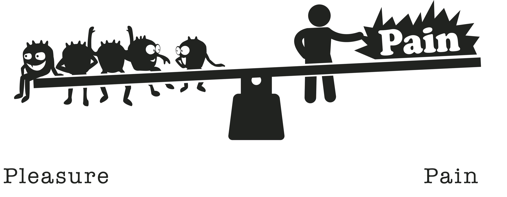
Vào cuối những năm 1960, các nhà khoa học đã tiến hành một loạt thí nghiệm trên chó; do tính chất tàn nhẫn hiển nhiên của các thí nghiệm này, chúng sẽ không được phép thực hiện ngày nay, nhưng dù sao chúng vẫn cung cấp thông tin quan trọng về cân bằng nội môi của não bộ (hay việc làm cân bằng lại cán cân).
Sau khi nối hai chân sau của con chó với dòng điện, các nhà nghiên cứu quan sát thấy: “Con chó tỏ ra khiếp sợ trong vài cú sốc đầu tiên. Nó kêu ré lên và giãy giụa dữ dội, đồng tử giãn ra, mắt trợn lồi, lông dựng đứng, tai cụp ra sau, đuôi quắp giữa hai chân. Hiện tượng đại tiện và tiểu tiện tống xuất, cùng với nhiều triệu chứng hoạt động mạnh mẽ của hệ thần kinh tự chủ khác, đã được ghi nhận.”
Sau cú sốc đầu tiên, khi con chó được thả khỏi dây đai, “nó di chuyển chậm chạp quanh phòng, tỏ ra lén lút, ngập ngừng và không thân thiện.” Nhịp tim của con chó tăng lên 150 nhịp mỗi phút so với mức nền khi nghỉ ngơi trong cú sốc đầu tiên. Khi cú sốc kết thúc, nhịp tim của con chó chậm lại còn 30 nhịp dưới mức nền trong trọn một phút.
Qua các cú sốc điện tiếp theo, “hành vi của nó dần thay đổi. Trong lúc bị sốc, các dấu hiệu kinh hoàng biến mất. Thay vào đó, con chó tỏ ra đau đớn, khó chịu hoặc lo âu, nhưng không còn khiếp sợ nữa. Chẳng hạn, nó rên ư ử thay vì kêu ré lên, và không còn tiểu tiện, đại tiện hay vùng vẫy nữa. Rồi khi được thả ra bất ngờ vào cuối buổi thử nghiệm, con chó chạy lao quanh, nhảy chồm lên người mọi người, vẫy đuôi, trong trạng thái mà khi đó chúng tôi gọi là ‘một cơn hân hoan’.”
Với những cú sốc tiếp theo, nhịp tim của con chó chỉ tăng nhẹ trên mức nền khi nghỉ ngơi, và chỉ trong vài giây. Sau khi cú sốc kết thúc, nhịp tim chậm lại mạnh mẽ tới 60 nhịp mỗi phút dưới mức nền khi nghỉ ngơi, gấp đôi lần đầu tiên. Phải mất trọn năm phút nhịp tim mới trở lại mức nền khi nghỉ ngơi.
Khi tiếp xúc lặp đi lặp lại với một kích thích gây đau, tâm trạng và nhịp tim của con chó đã thích nghi tương ứng. Phản ứng ban đầu (đau đớn) trở nên ngắn hơn và yếu hơn. Phản ứng sau đó (khoái lạc) trở nên dài hơn và mạnh hơn. Nỗi đau biến thành sự cảnh giác cao độ rồi biến thành “một cơn hân hoan”. Nhịp tim tăng cao, phù hợp với phản ứng chiến-hay-chạy, biến thành sự gia tăng nhịp tim tối thiểu theo sau bởi tình trạng nhịp tim chậm kéo dài, một nhịp tim chậm rãi thường thấy ở các trạng thái thư giãn sâu.
Không thể đọc thí nghiệm này mà không cảm thấy thương xót cho những con vật phải chịu đựng sự tra tấn đó. Tuy nhiên, cái gọi là “cơn hân hoan” lại gợi mở một khả năng đầy sức hấp dẫn: Bằng cách nhấn vào phía đau đớn của cán cân, liệu chúng ta có thể đạt được một nguồn khoái lạc bền vững hơn không?
Ý tưởng này không hề mới. Các triết gia cổ đại đã quan sát thấy một hiện tượng tương tự. Socrates (như được Plato ghi lại trong “Những lý do khiến Socrates không sợ cái chết”) đã suy ngẫm về mối quan hệ giữa nỗi đau và khoái lạc hơn hai nghìn năm trước:
Cái thứ mà người ta gọi là khoái lạc sao mà kỳ lạ đến thế! Và nó có mối liên hệ kỳ quặc làm sao với thứ được cho là đối lập với nó, nỗi đau! Hai thứ đó sẽ không bao giờ cùng tồn tại trong một con người, vậy mà nếu bạn tìm kiếm một thứ và đạt được nó, gần như chắc chắn bạn cũng sẽ nhận được thứ kia, cứ như thể cả hai đều gắn liền vào cùng một cái đầu vậy. . . . Bất cứ nơi nào có một thứ, thứ kia sẽ theo sát phía sau. Vì thế, trong trường hợp của tôi, vì chân tôi bị đau do xiềng xích, nên dường như khoái lạc đã đến tiếp nối ngay sau đó.
Bác sĩ tim mạch người Mỹ Helen Taussig đã công bố một bài báo trên tạp chí American Scientist năm 1969, trong đó bà mô tả trải nghiệm của những người bị sét đánh nhưng sống sót để kể lại. “Con trai của người hàng xóm nhà tôi bị sét đánh khi đang từ sân golf trở về. Cậu bị hất văng xuống đất. Chiếc quần đùi bị xé toạc thành từng mảnh và cậu bị bỏng ngang đùi. Khi người bạn đi cùng đỡ cậu ngồi dậy, cậu hét lên ‘Tôi chết rồi, tôi chết rồi.’ Hai chân cậu tê dại, tím tái và không thể cử động. Nhưng đến khi tới được bệnh viện gần nhất, cậu lại ở trong trạng thái hưng phấn tột độ. Mạch của cậu rất chậm.” Lời kể này gợi nhớ đến “cơn hân hoan” của chú chó, bao gồm cả nhịp mạch chậm lại.
Tất cả chúng ta đều từng trải qua một phiên bản nào đó của việc nỗi đau nhường chỗ cho khoái lạc. Có lẽ giống như Socrates, bạn từng nhận thấy tâm trạng khá lên sau một đợt ốm, hoặc cảm thấy “cơn phê của người chạy bộ” sau khi tập thể dục, hay tìm thấy một niềm vui khó lý giải khi xem một bộ phim kinh dị. Cũng như nỗi đau là cái giá ta phải trả cho khoái lạc, thì khoái lạc cũng là phần thưởng của ta cho nỗi đau.
Khoa Học Về Hormesis
Hormesis là một nhánh khoa học nghiên cứu những tác động có lợi của việc đưa vào cơ thể các liều lượng nhỏ đến vừa phải những kích thích độc hại và/hoặc gây đau đớn, chẳng hạn như cái lạnh, cái nóng, thay đổi trọng lực, bức xạ, hạn chế ăn uống và tập thể dục. Hormesis bắt nguồn từ tiếng Hy Lạp cổ đại hormáein: khởi động, thúc đẩy, thôi thúc.
Edward J. Calabrese, một nhà độc chất học người Mỹ và là chuyên gia hàng đầu trong lĩnh vực hormesis, mô tả hiện tượng này là “những phản ứng thích nghi của các hệ thống sinh học trước những thách thức vừa phải từ môi trường hoặc tự áp đặt, qua đó hệ thống cải thiện chức năng và/hoặc khả năng dung nạp đối với những thách thức khắc nghiệt hơn.”
Những con giun tiếp xúc với nhiệt độ cao hơn mức ưa thích 20 độ C của chúng (35 độ C trong hai giờ) sống lâu hơn 25% và có khả năng sống sót sau các đợt nhiệt độ cao tiếp theo cao hơn 25% so với những con giun không tiếp xúc. Nhưng quá nhiều nhiệt lại không tốt. Bốn giờ tiếp xúc với nhiệt thay vì hai giờ làm giảm khả năng chịu nhiệt sau đó và giảm tuổi thọ đi một phần tư.
Ruồi giấm được quay trong máy ly tâm từ hai đến bốn tuần không chỉ sống lâu hơn những con ruồi không bị quay mà còn nhanh nhẹn hơn khi về già, có thể leo cao hơn và lâu hơn so với đồng loại không tiếp xúc. Nhưng những con ruồi bị quay lâu hơn thế lại không phát triển tốt.
Trong số các công dân Nhật Bản sống bên ngoài tâm chấn của vụ tấn công hạt nhân năm 1945, những người phơi nhiễm bức xạ liều thấp có thể đã cho thấy tuổi thọ nhỉnh hơn một chút và tỷ lệ ung thư giảm so với những người không bị chiếu xạ. Trong số những người sống ngay trong vùng lân cận vụ nổ nguyên tử, khoảng 200.000 người đã thiệt mạng ngay lập tức.
Các tác giả đưa ra giả thuyết rằng “sự kích thích liều thấp đối với quá trình sửa chữa tổn thương DNA, việc loại bỏ các tế bào bất thường thông qua cơ chế apoptosis [chết tế bào theo chương trình] được kích thích, và việc tiêu diệt các tế bào ung thư thông qua khả năng miễn dịch chống ung thư được kích thích” là cốt lõi của những tác động có lợi từ hormesis bức xạ.
Cần lưu ý rằng những phát hiện này đang gây tranh cãi, và một bài báo tiếp theo được công bố trên tạp chí danh tiếng Lancet đã bác bỏ chúng.
Nhịn ăn gián đoạn và hạn chế calo giúp kéo dài tuổi thọ và tăng sức đề kháng với các bệnh liên quan đến tuổi tác ở loài gặm nhấm và khỉ, đồng thời làm giảm huyết áp và tăng độ biến thiên nhịp tim.
Nhịn ăn gián đoạn đã trở nên khá phổ biến như một cách để giảm cân và cải thiện sức khỏe. Các phương pháp nhịn ăn bao gồm nhịn ăn cách ngày, nhịn ăn một ngày mỗi tuần, nhịn ăn đến giờ thứ chín, ăn một bữa mỗi ngày, nhịn ăn 16:8 (nhịn ăn mười sáu giờ mỗi ngày và ăn toàn bộ khẩu phần trong khung tám giờ còn lại), v.v.
Người dẫn chương trình talk show nổi tiếng người Mỹ Jimmy Kimmel thực hành nhịn ăn gián đoạn. “Một điều tôi đã làm suốt vài năm nay là tự bỏ đói bản thân hai ngày một tuần. . . . Vào thứ Hai và thứ Năm, tôi ăn ít hơn năm trăm calo mỗi ngày, rồi tôi ăn như hạm vào năm ngày còn lại. Bạn ‘gây bất ngờ’ cho cơ thể, khiến nó phải đoán già đoán non.”
Cách đây không lâu, những hành vi nhịn ăn như vậy có thể đã bị gắn mác “rối loạn ăn uống”. Nạp quá ít calo rõ ràng là có hại vì những lý do hiển nhiên. Nhưng ngày nay, nhịn ăn trong một số giới lại được coi là bình thường và thậm chí tốt cho sức khỏe.
Còn việc tập thể dục thì sao?
Tập thể dục gây độc tức thời cho tế bào, dẫn đến tăng nhiệt độ, sản sinh các chất oxy hóa độc hại, và thiếu hụt oxy cũng như glucose. Tuy nhiên, bằng chứng là không thể chối cãi rằng tập thể dục giúp tăng cường sức khỏe, và việc thiếu tập thể dục, đặc biệt khi kết hợp với lối sống ít vận động ăn uống triền miên — ăn quá nhiều suốt cả ngày — là vô cùng chết người.
Tập thể dục làm tăng nhiều chất dẫn truyền thần kinh tham gia vào việc điều hòa tâm trạng tích cực: dopamine, serotonin, norepinephrine, epinephrine, endocannabinoid, và các peptide opioid nội sinh (endorphin). Tập thể dục góp phần tạo ra các tế bào thần kinh mới và các tế bào thần kinh đệm hỗ trợ. Tập thể dục thậm chí còn làm giảm khả năng sử dụng và nghiện ma túy.
Khi chuột được tiếp cận bánh xe chạy sáu tuần trước khi được tự do tiếp cận cocaine, chúng tự tiêm cocaine muộn hơn và ít thường xuyên hơn so với những con chuột không được tập chạy bánh xe trước đó. Phát hiện này đã được tái lập với heroin, methamphetamine và rượu. Ngay cả khi việc tập thể dục không phải tự nguyện mà bị ép buộc lên con vật, nó vẫn dẫn đến việc giảm tiêu thụ ma túy tự nguyện.
Ở người, mức độ hoạt động thể chất cao ở bậc trung học cơ sở, trung học phổ thông và đầu tuổi trưởng thành dự báo mức độ sử dụng ma túy thấp hơn. Tập thể dục cũng đã được chứng minh là giúp những người đang nghiện ngừng hẳn hoặc cắt giảm.
Tầm quan trọng của dopamine đối với các mạch vận động đã được ghi nhận ở mọi ngành động vật từng được nghiên cứu. Giun tròn C. elegans, một loài giun và là một trong những động vật thí nghiệm đơn giản nhất, giải phóng dopamine để đáp ứng với các kích thích môi trường báo hiệu sự dồi dào thức ăn tại chỗ. Vai trò cổ xưa của dopamine trong chuyển động thể chất liên quan đến vai trò của nó trong động lực: Để có được đối tượng mà mình khao khát, chúng ta cần phải đi lấy nó.
Tất nhiên, nguồn dopamine dễ tiếp cận ngày nay không đòi hỏi chúng ta phải nhấc mông khỏi ghế sofa. Theo các báo cáo khảo sát, người Mỹ điển hình ngày nay dành một nửa thời gian thức để ngồi, nhiều hơn 50% so với năm mươi năm trước. Dữ liệu từ các quốc gia giàu có khác trên toàn cầu cũng tương đương. Khi bạn nghĩ rằng chúng ta đã tiến hóa để đi bộ hàng chục kilômét mỗi ngày nhằm cạnh tranh nguồn thức ăn hạn hẹp, những tác động tiêu cực của lối sống ít vận động hiện đại thực sự tàn khốc.
Đôi khi tôi tự hỏi liệu khuynh hướng dễ nghiện ngập thời hiện đại của chúng ta có phải một phần được thúc đẩy bởi cách ma túy nhắc nhở chúng ta rằng mình vẫn có một cơ thể hay không. Những trò chơi điện tử phổ biến nhất đều có các nhân vật đại diện chạy, nhảy, leo trèo, bắn súng và bay lượn. Chiếc điện thoại thông minh đòi hỏi chúng ta phải cuộn qua các trang và chạm vào màn hình, khai thác một cách khéo léo những thói quen vận động lặp đi lặp lại từ thời cổ đại, có lẽ được hình thành qua nhiều thế kỷ xay lúa mì và hái quả mọng. Sự bận tâm của con người đương đại với tình dục có lẽ là vì đó là hoạt động thể chất cuối cùng vẫn còn được thực hành rộng rãi.
Một chìa khóa dẫn đến sự khỏe mạnh là chúng ta phải đứng dậy khỏi ghế sofa và vận động cơ thể thực sự của mình, chứ không phải cơ thể ảo. Như tôi vẫn nói với bệnh nhân của mình, chỉ cần đi bộ quanh khu phố ba mươi phút mỗi ngày cũng có thể tạo ra sự khác biệt. Đó là bởi vì bằng chứng đã quá rõ ràng: Tập thể dục có tác động tích cực sâu sắc và bền vững hơn đối với tâm trạng, sự lo âu, nhận thức, năng lượng và giấc ngủ so với bất kỳ viên thuốc nào tôi có thể kê đơn.
Nhưng theo đuổi nỗi đau khó hơn theo đuổi khoái lạc. Nó đi ngược lại phản xạ bẩm sinh của chúng ta là tránh đau đớn và tìm kiếm khoái lạc. Nó làm tăng gánh nặng nhận thức của chúng ta: Chúng ta phải nhớ rằng mình sẽ cảm thấy khoái lạc sau nỗi đau, và chúng ta lại hay quên một cách đáng kinh ngạc về những chuyện như thế này. Tôi biết mình phải học lại bài học về nỗi đau mỗi sáng khi tự ép bản thân ra khỏi giường và đi tập thể dục.
Theo đuổi nỗi đau thay vì khoái lạc cũng đi ngược lại văn hóa đại chúng, chống lại mọi thông điệp “hãy cảm thấy dễ chịu” đang thấm đẫm trong rất nhiều khía cạnh của đời sống hiện đại. Đức Phật dạy tìm kiếm Trung Đạo giữa đau đớn và khoái lạc, nhưng ngay cả Trung Đạo cũng đã bị làm biến chất bởi “sự chuyên chế của tiện nghi”.
Do đó, chúng ta phải chủ động tìm kiếm nỗi đau và mời gọi nó bước vào cuộc sống của mình.
Lấy Đau Trị Đau
Việc chủ ý áp dụng nỗi đau để chữa nỗi đau đã xuất hiện ít nhất từ thời Hippocrates, người đã viết trong cuốn Châm ngôn (Aphorisms) vào năm 400 TCN: “Trong hai cơn đau xảy ra cùng lúc, không ở cùng một bộ phận của cơ thể, cơn đau mạnh hơn sẽ làm suy yếu cơn đau kia.”
Lịch sử y học chứa đầy những ví dụ về việc sử dụng các kích thích gây đau hoặc độc hại để điều trị các trạng thái bệnh lý gây đau đớn. Đôi khi được gọi là “những liệu pháp anh hùng” — giác hơi, gây phồng rộp, đốt điện, cứu ngải — các phương pháp chữa trị gây đau đã được thực hành rộng rãi trước năm 1900. Sự phổ biến của các liệu pháp anh hùng bắt đầu suy giảm vào thế kỷ XX khi ngành y khám phá ra liệu pháp dùng thuốc.
Với sự ra đời của dược trị liệu, việc lấy đau trị đau dần bị coi là một kiểu lang băm. Nhưng khi những hạn chế và tác hại của dược trị liệu ngày càng lộ rõ trong những thập kỷ gần đây, sự quan tâm đối với các liệu pháp không dùng thuốc, bao gồm cả những phương pháp gây đau, đã trỗi dậy trở lại.
Năm 2011, trong một bài báo trên một tạp chí y khoa hàng đầu, Christian Sprenger và các đồng nghiệp từ Đức đã cung cấp bằng chứng thực nghiệm ủng hộ những ý tưởng cổ xưa của Hippocrates về nỗi đau. Họ sử dụng kỹ thuật chẩn đoán hình ảnh thần kinh (hình ảnh não bộ theo thời gian thực) để nghiên cứu tác động của nhiệt và các kích thích gây đau khác tác động lên cánh tay và chân của hai mươi thanh niên khỏe mạnh.
Họ phát hiện ra rằng trải nghiệm đau chủ quan do một kích thích đau ban đầu gây ra đã giảm đi khi có thêm một kích thích đau thứ hai. Hơn nữa, naloxone, một chất chẹn thụ thể opioid, đã ngăn chặn hiện tượng này, cho thấy việc tác động nỗi đau sẽ kích hoạt các opioid nội sinh (tự sản sinh) của chính cơ thể.
Lưu Tường, một giáo sư tại Viện Hàn lâm Trung y Trung Quốc ở Bắc Kinh, đã công bố một bài báo vào năm 2001 trên tạp chí Chinese Science Bulletin, xem xét lại phương pháp châm cứu hàng thế kỷ và dựa vào khoa học hiện đại để giải thích cách thức hoạt động của nó. Ông lập luận rằng hiệu quả của châm cứu được điều hòa thông qua nỗi đau, với việc châm kim là cơ chế chính: “Việc châm kim, thứ có thể làm tổn thương mô, là một kích thích độc hại gây ra nỗi đau . . . ức chế cơn đau lớn bằng cơn đau nhỏ!”
Chất chẹn thụ thể opioid naltrexone hiện đang được nghiên cứu như một phương pháp điều trị y khoa cho chứng đau mạn tính. Ý tưởng là bằng cách ngăn chặn tác dụng của các opioid, bao gồm cả những chất do chính chúng ta tạo ra (endorphin), chúng ta đánh lừa cơ thể sản sinh ra nhiều opioid hơn như một phản ứng thích nghi.
Hai mươi tám phụ nữ mắc hội chứng đau xơ cơ (fibromyalgia) đã uống một viên naltrexone liều thấp (4,5 miligam) mỗi ngày trong mười hai tuần, và một viên thuốc đường (giả dược) trong bốn tuần. Đau xơ cơ là một tình trạng đau mạn tính chưa rõ căn nguyên, được cho là có thể liên quan đến ngưỡng chịu đau bẩm sinh thấp hơn ở một cá nhân.
Nghiên cứu được thực hiện theo phương pháp mù đôi, nghĩa là cả những phụ nữ tham gia nghiên cứu lẫn đội ngũ chăm sóc sức khỏe đều không biết họ đang uống loại thuốc nào. Mỗi phụ nữ được phát một máy tính cầm tay để ghi lại cơn đau, sự mệt mỏi và các triệu chứng khác hằng ngày, và họ tiếp tục ghi lại các triệu chứng trong bốn tuần sau khi ngừng uống thuốc.
Các tác giả nghiên cứu báo cáo rằng “[n]hững người tham gia đã trải qua mức giảm điểm số đau lớn hơn đáng kể khi họ dùng LDN [naltrexone liều thấp] so với giả dược. Họ cũng báo cáo sự hài lòng chung với cuộc sống được cải thiện và tâm trạng tốt hơn khi dùng LDN.”
Việc dùng dòng điện tác động lên não để điều trị bệnh tâm thần đã được thực hành từ đầu những năm 1900. Vào tháng 4 năm 1938, Ugo Cerletti và Lucino Bini đã thực hiện ca điều trị liệu pháp sốc điện (ECT) đầu tiên trên một bệnh nhân bốn mươi tuổi mà họ mô tả như sau:
“Ông ta chỉ diễn đạt bằng một thứ ngôn ngữ vô nghĩa khó hiểu gồm toàn những từ mới tạo kỳ quặc và, kể từ khi đi tàu từ Milan đến mà không có vé, không một điều gì về danh tính của ông ta có thể xác minh được.”
Khi Cerletti và Bini tác động dòng điện lên não ông ta lần đầu tiên, họ quan sát thấy “một cú giật nảy đột ngột của bệnh nhân trên giường với sự căng cứng rất ngắn của toàn bộ cơ bắp; sau đó ông ta lập tức đổ sụp xuống giường mà không mất ý thức. Bệnh nhân ngay lúc đó bắt đầu hát hết cỡ, rồi im bặt. Từ kinh nghiệm của chúng tôi với chó, rõ ràng là điện áp đã được giữ ở mức quá thấp.”
Cerletti và Bini tranh luận xem có nên thực hiện thêm một cú sốc nữa ở điện áp cao hơn hay không. Trong khi họ đang nói chuyện, bệnh nhân hét lên: “Non una seconda! Mortifera!” (“Đừng làm lần thứ hai! Nó sẽ giết tôi mất!”). Bất chấp sự phản đối của ông ta, họ vẫn thực hiện cú sốc thứ hai — một câu chuyện cảnh tỉnh cho việc đến Milan mà không có vé tàu hoặc “danh tính có thể xác minh” vào năm 1938.
Khi “bệnh nhân” đã hồi phục sau cú sốc thứ hai, Cerletti và Bini quan sát thấy ông ta “tự ngồi dậy, điềm tĩnh nhìn quanh với nụ cười mơ hồ, như thể đang hỏi người ta mong đợi gì ở mình. Tôi hỏi ông ta ‘chuyện gì đã xảy ra với ông vậy?’ Ông ta trả lời, không còn nói nhảm nữa: ‘Tôi không biết, có lẽ tôi đã ngủ quên.’ Bệnh nhân đầu tiên này đã được điều trị thêm mười ba lần ECT nữa trong hai tháng và, theo báo cáo, đã xuất viện trong tình trạng bình phục hoàn toàn.”
ECT ngày nay vẫn được thực hành với hiệu quả tốt, mặc dù nhân đạo hơn nhiều. Thuốc giãn cơ và thuốc làm liệt cơ ngăn ngừa các cơn co giật gây đau đớn. Thuốc gây mê giúp bệnh nhân ngủ yên và hầu như bất tỉnh trong suốt quá trình. Vì vậy, ngày nay không thể nói bản thân nỗi đau là yếu tố trung gian.
Tuy nhiên, ECT tạo ra một cú sốc hormesis lên não bộ, từ đó thúc đẩy một phản ứng bù trừ rộng lớn nhằm thiết lập lại cân bằng nội môi: “ECT mang lại nhiều thay đổi về sinh lý thần kinh cũng như hóa học thần kinh trong môi trường vĩ mô và vi mô của não bộ. Những thay đổi đa dạng liên quan đến biểu hiện gen, kết nối chức năng, chất hóa học thần kinh, tính thấm của hàng rào máu não, sự thay đổi trong hệ miễn dịch đã [sic] được cho là nguyên nhân tạo nên các tác dụng điều trị của ECT.”
Bạn hẳn còn nhớ David, anh chàng mê máy tính nhút nhát từng phải nhập viện sau khi nghiện thuốc kích thích kê đơn.
Sau khi xuất viện, cậu bắt đầu liệu pháp tiếp xúc hằng tuần với một nhà trị liệu trẻ tài năng trong nhóm của chúng tôi. Nguyên tắc cơ bản của liệu pháp tiếp xúc là cho mọi người tiếp xúc theo mức độ tăng dần với chính thứ — ở nơi đông người, lái xe qua cầu, đi máy bay — gây ra cảm xúc khó chịu mà họ đang cố gắng trốn chạy, và bằng cách đó, nâng cao khả năng chịu đựng hoạt động đó của họ. Theo thời gian, thậm chí họ có thể bắt đầu thích nó.
Như triết gia Friedrich Nietzsche từng nói một câu nổi tiếng, một tâm tình được nhiều người trước và sau ông đồng cảm qua các thời đại: “Điều gì không giết chết tôi sẽ khiến tôi mạnh mẽ hơn.”
Vì nỗi sợ lớn nhất của David là nói chuyện với người lạ, nhiệm vụ đầu tiên của cậu là tự ép mình bắt chuyện phiếm với đồng nghiệp.
“Bài tập về nhà của liệu pháp,” cậu kể với tôi nhiều tháng sau đó, “là đi vào nhà bếp, phòng nghỉ hoặc căng-tin ở chỗ làm và nói chuyện với những người ngẫu nhiên. Em có một kịch bản sẵn: ‘Chào bạn. Mình là David. Mình làm bên phát triển phần mềm. Bạn làm mảng nào?’ Em đặt ra một lịch trình: trước bữa trưa, vào bữa trưa và sau bữa trưa. Sau đó em phải đo mức độ căng thẳng của mình trước, trong và sau khi nói chuyện, trên thang điểm từ một đến một trăm, với một trăm là mức căng thẳng tồi tệ nhất mà em có thể tưởng tượng.”
Trong một thế giới mà chúng ta ngày càng đong đếm chính mình — số bước chân, hơi thở, nhịp tim — việc gắn một con số lên điều gì đó đã trở thành cách chúng ta vừa làm chủ vừa mô tả trải nghiệm. Đối với tôi, việc định lượng mọi thứ không phải là bản năng tự nhiên, nhưng tôi đã học cách thích nghi, vì phương pháp tự nhận thức này dường như đặc biệt phù hợp với những người làm máy tính và kỹ thuật có tư duy khoa học mà chúng tôi gặp rất nhiều ở Thung lũng Silicon này.
“Cậu cảm thấy thế nào trước khi tương tác? Ừm, cậu ở mức số mấy?” tôi hỏi.
“Trước lúc đó em ở mức một trăm. Em chỉ cảm thấy vô cùng kinh hãi. Mặt em đỏ bừng lên. Em đổ mồ hôi đầm đìa.”
“Cậu sợ điều gì sẽ xảy ra?”
“Em sợ người khác nhìn em và cười nhạo. Hoặc gọi phòng nhân sự hay bảo vệ đến xử lý em, vì trông em như kẻ điên.”
“Mọi chuyện diễn ra thế nào?”
“Không có điều nào trong số những thứ em sợ sẽ xảy ra thực sự xảy ra cả. Chẳng ai gọi nhân sự hay bảo vệ. Em cố ở lại khoảnh khắc đó lâu nhất có thể, cứ để nỗi lo âu tràn qua người, đồng thời vẫn tôn trọng thời gian của họ. Các cuộc trò chuyện kéo dài khoảng bốn phút.”
“Sau đó cậu cảm thấy thế nào?”
“Sau đó em xuống còn khoảng bốn mươi. Bớt lo âu hơn nhiều. Thế là em làm việc đó theo lịch ba lần một ngày suốt nhiều tuần, và dần dần theo thời gian mọi thứ trở nên dễ dàng hơn. Sau đó em tự thử thách bản thân với những người bên ngoài công việc.”
“Kể tôi nghe đi.”
“Ở Starbucks, em cố tình bắt chuyện phiếm với nhân viên pha chế. Trước đây em không bao giờ làm thế. Em luôn đặt hàng qua ứng dụng để tránh hoàn toàn việc phải tương tác với người khác. Nhưng lần này, em đi thẳng đến quầy và gọi cà phê. Nỗi sợ lớn nhất của em là nói hoặc làm điều gì đó ngu ngốc. Em đang làm rất ổn cho đến khi lỡ làm đổ một chút cà phê ra quầy. Em xấu hổ vô cùng. Khi em kể với nhà trị liệu về chuyện đó, cô ấy bảo em hãy làm lại — làm đổ cà phê — nhưng lần này là cố ý. Lần tiếp theo đến Starbucks, em đã cố tình làm đổ cà phê. Em cảm thấy lo âu, nhưng rồi em đã quen với nó.”
“Cậu đang cười về điều gì thế?”
“Em gần như không thể tin được cuộc sống của mình bây giờ đã khác đến nhường nào. Em bớt đề phòng hơn. Em không phải lên kế hoạch trước quá nhiều để tránh tương tác với mọi người nữa. Bây giờ em có thể lên một chuyến tàu đông đúc và không bị trễ làm vì phải đợi chuyến tiếp theo, rồi chuyến tiếp theo nữa. Thực ra em thấy thích việc gặp gỡ những người mà có lẽ em sẽ chẳng bao giờ gặp lại.”
Alex Honnold, người hiện nổi tiếng thế giới vì leo vách đá El Capitan ở Yosemite không cần dây thừng, được phát hiện có mức độ kích hoạt hạch hạnh nhân thấp hơn bình thường khi chụp hình ảnh não bộ. Đối với hầu hết chúng ta, hạch hạnh nhân là vùng não sáng lên trong máy chụp fMRI khi chúng ta nhìn vào những bức ảnh đáng sợ.
Các nhà nghiên cứu khảo sát não bộ của Honnold suy đoán rằng anh sinh ra đã có ít nỗi sợ bẩm sinh hơn người khác, điều này đến lượt nó, theo giả thuyết của họ, đã cho phép anh thực hiện những kỳ tích leo núi siêu phàm.
Nhưng bản thân Honnold không đồng tình với cách giải thích của họ: “Tôi đã leo đơn độc rất nhiều, và rèn luyện kỹ năng leo núi nhiều đến mức vùng an toàn của tôi khá lớn. Vì vậy, những điều tôi đang làm mà trông có vẻ khá điên rồ, với tôi lại có vẻ bình thường.”
Lời giải thích hợp lý nhất cho sự khác biệt trong não bộ của Honnold là sự phát triển của khả năng dung nạp nỗi sợ thông qua thích nghi thần kinh. Tôi đoán rằng não bộ của Honnold ban đầu không khác gì não bộ trung bình xét về độ nhạy cảm với nỗi sợ. Điều khác biệt hiện nay là anh đã rèn luyện bộ não của mình qua nhiều năm leo núi để không phản ứng với các kích thích gây sợ hãi. Cần phải có những thứ lớn hơn nhiều mới làm não bộ của Honnold sợ hãi so với người bình thường vì anh đã từng bước cho bản thân tiếp xúc với những kỳ tích thách thức tử thần.
Đáng chú ý, Honnold suýt lên cơn hoảng loạn khi bước vào máy chụp fMRI để chụp ảnh “bộ não không biết sợ” của mình, điều này cũng cho chúng ta biết rằng sự dung nạp nỗi sợ không nhất thiết chuyển hóa sang mọi trải nghiệm.
Alex Honnold và bệnh nhân David của tôi đã leo lên những phần khác nhau của cùng một ngọn núi sợ hãi. Cũng như não bộ của Honnold thích nghi với việc leo vách đá không dây, David đã phát triển những vết chai tâm lý giúp cậu có thể chịu đựng được lo âu, đồng thời có được cảm giác tự tin và năng lực về bản thân cũng như khả năng sống trên đời.
Lấy đau trị đau. Lấy lo âu trị lo âu. Cách tiếp cận này đi ngược lại trực giác, và hoàn toàn trái ngược với những gì chúng ta đã được dạy trong 150 năm qua về cách kiểm soát bệnh tật, đau khổ và sự khó chịu.
Nghiện Nỗi Đau
“Theo thời gian, tôi nhận ra mình càng cảm thấy đau đớn trong cú sốc nước lạnh ban đầu,” Michael nói, “thì cảm giác phê sau đó càng lớn. Thế là tôi bắt đầu tìm cách tăng độ khó lên.
“Tôi mua một cái tủ đông thịt — một cái máng có nắp và các ống làm lạnh tích hợp — và đổ đầy nước vào mỗi tối. Đến sáng, trên bề mặt có một lớp băng mỏng, với nhiệt độ ở mức xấp xỉ 0 độ C. Trước khi bước vào, tôi phải đập vỡ lớp băng.
“Sau đó tôi đọc được rằng cơ thể sẽ làm ấm nước sau vài phút, trừ khi nước chuyển động, giống như trong bồn sục. Vì vậy tôi mua một chiếc mô-tơ lắp vào bồn nước đá. Bằng cách đó, tôi có thể duy trì nhiệt độ gần đóng băng trong suốt thời gian ngâm mình. Tôi cũng mua một tấm đệm nước làm mát cho giường ngủ, và tôi luôn để ở nhiệt độ thấp nhất, khoảng 55°F (13°C).”
Michael đột ngột ngừng nói và nhìn tôi với nụ cười méo xệch. “Chà. Khi đang nói về chuyện này, tôi chợt nhận ra . . . nghe nó giống như một cơn nghiện vậy.”
Vào tháng 4 năm 2019, Giáo sư Alan Rosenwasser của Đại học Maine đã gửi email cho tôi, tìm xin bản sao một chương sách mà tôi vừa xuất bản cùng một đồng nghiệp về vai trò của tập thể dục trong điều trị nghiện. Ông ấy và tôi chưa từng gặp nhau. Sau khi xin phép nhà xuất bản, tôi đã gửi cho ông chương sách đó.
Khoảng một tuần sau ông viết thư lại, lần này với nội dung như sau.
Cảm ơn vì đã chia sẻ. Một vấn đề tôi nhận thấy bạn chưa thảo luận là câu hỏi liệu việc chạy bánh xe ở chuột nhắt và chuột cống là mô hình cho việc tập thể dục tự nguyện hay cho việc tập thể dục bệnh lý (nghiện tập thể dục). Một số con vật nuôi trong lồng có bánh xe biểu hiện mức độ chạy có thể coi là quá mức, và một nghiên cứu đã chỉ ra rằng loài gặm nhấm hoang dã cũng sẽ sử dụng bánh xe chạy được đặt ở ngoài môi trường tự nhiên.
Tôi vô cùng thích thú và viết thư trả lời ông ngay lập tức. Tiếp theo đó là một loạt cuộc trò chuyện trong đó Tiến sĩ Rosenwasser, người đã dành bốn mươi năm qua nghiên cứu về nhịp sinh học, còn được gọi là “lĩnh vực đồng hồ sinh học”, đã giảng giải cho tôi về bánh xe chạy.
“Khi người ta mới bắt đầu công việc này,” Rosenwasser nói với tôi, “người ta đã lầm tưởng rằng bánh xe chạy là một cách để theo dõi hoạt động tự phát của động vật: nghỉ ngơi so với vận động. Đến một lúc nào đó, người ta trở nên nhạy bén hơn với thực tế rằng bánh xe chạy không hề vô thưởng vô phạt. Bản thân chúng rất thú vị. Một trong những yếu tố khơi mào là quá trình sinh thần kinh hồi hải mã ở cá thể trưởng thành.”
Điều này đề cập đến phát hiện cách đây vài thập kỷ rằng trái ngược với những gì từng giảng dạy trước đây, con người có thể tạo ra các tế bào thần kinh mới trong não bộ cho đến tận tuổi trung niên và cuối đời.
“Một khi người ta chấp nhận rằng các tế bào thần kinh mới được sinh ra và tích hợp vào mạch thần kinh,” Rosenwasser tiếp tục, “một trong những cách dễ nhất để kích thích quá trình sinh thần kinh là dùng bánh xe chạy, thậm chí còn hiệu quả hơn cả môi trường phong phú [ví dụ như các mê cung phức tạp]. Điều này đã dẫn đến cả một kỷ nguyên nghiên cứu về bánh xe chạy.
“Hóa ra,” Rosenwasser nói, “bánh xe chạy bị chi phối bởi chính các con đường opioid nội sinh, dopamine, endocannabinoid vốn thúc đẩy việc sử dụng ma túy cưỡng chế. Điều quan trọng cần biết là bánh xe chạy không nhất thiết là mô hình cho một lối sống lành mạnh.”
Nói tóm lại, bánh xe chạy là một loại ma túy.
Những con chuột được đặt trong một mê cung phức tạp gồm 230 mét đường hầm, bao gồm nước, thức ăn, vật liệu đào bới, tổ — nói cách khác, một khu vực rộng lớn với rất nhiều thứ hay ho để làm — cùng với một chiếc bánh xe chạy, sẽ dành phần lớn thời gian trên bánh xe chạy và bỏ mặc nhiều đoạn lớn của mê cung chưa được khám phá.
Một khi loài gặm nhấm bắt đầu sử dụng bánh xe chạy, chúng rất khó dừng lại. Loài gặm nhấm chạy trên bánh xe chạy xa hơn nhiều so với khi chạy trên máy chạy bộ phẳng hoặc trong mê cung, và cũng xa hơn nhiều so với quá trình di chuyển bình thường trong môi trường tự nhiên.
Loài gặm nhấm nuôi nhốt được tiếp cận bánh xe chạy sẽ chạy cho đến khi đuôi của chúng cong vĩnh viễn hướng lên trên và ngược về phía đầu theo hình dạng của bánh xe chạy: bánh xe càng nhỏ, độ cong của đuôi càng gắt. Trong một số trường hợp, chuột chạy cho đến chết.
Vị trí, tính mới lạ và độ phức tạp của bánh xe chạy ảnh hưởng đến việc sử dụng nó.
Chuột hoang thích bánh xe hình vuông hơn bánh xe hình tròn, và thích bánh xe có chướng ngại vật bên trong hơn bánh xe không có chướng ngại vật. Chúng thể hiện khả năng phối hợp và kỹ năng nhào lộn đáng kinh ngạc trong bánh xe chạy. Giống như thiếu niên ở công viên trượt ván, chúng để “bản thân liên tục được đưa lên gần đỉnh bánh xe theo cả chiều tiến và chiều lùi, chạy ở mặt ngoài trên đỉnh bánh xe, hoặc chạy ‘ngược lên’ mặt ngoài của bánh xe trong khi giữ thăng bằng bằng đuôi.”
C. M. Sherwin trong bài tổng quan năm 1997 về bánh xe chạy đã suy đoán về các đặc tính củng cố nội tại của bánh xe chạy:
Tính chất ba chiều của việc chạy bánh xe có thể mang lại sự củng cố cho động vật. Trong khi chạy bánh xe, con vật sẽ trải qua những thay đổi nhanh chóng về tốc độ và hướng chuyển động, một phần do các lực ngoại sinh: động lượng và quán tính của bánh xe. Trải nghiệm này có thể mang tính củng cố, tương tự như việc (một số!) con người thích thú với các trò chơi cảm giác mạnh tại hội chợ, đặc biệt là chuyển động theo phương thẳng đứng . . . những thay đổi chuyển động như vậy của con vật khó có thể xảy ra trong hoàn cảnh “tự nhiên”.
Johanna Meijer và Yuri Robbers thuộc Trung tâm Y tế Đại học Leiden ở Hà Lan đã đặt một bánh xe chạy ở khu vực đô thị nơi chuột hoang sinh sống, và một chiếc khác ở một cồn cát mà công chúng không thể tiếp cận. Họ đặt một máy quay video ở mỗi địa điểm để ghi lại mọi con vật ghé thăm lồng trong suốt hai năm.
Kết quả là hàng trăm trường hợp động vật sử dụng bánh xe chạy. “Các quan sát cho thấy chuột hoang chạy trong bánh xe quanh năm, tăng đều đặn vào cuối mùa xuân và đạt đỉnh vào mùa hè ở khu vực đô thị xanh, trong khi tăng vào giữa đến cuối mùa hè ở vùng cồn cát, đạt đỉnh vào cuối mùa thu.”
Việc sử dụng bánh xe không chỉ giới hạn ở chuột hoang. Còn có chuột chù, chuột cống, ốc sên, sên trần và ếch, hầu hết đều thể hiện sự tương tác có chủ ý và có mục đích với bánh xe.
Các tác giả kết luận rằng “việc chạy bánh xe có thể được trải nghiệm như một phần thưởng ngay cả khi không có phần thưởng thức ăn đi kèm, cho thấy tầm quan trọng của các hệ thống động lực không liên quan đến việc kiếm ăn.”
Các môn thể thao mạo hiểm — nhảy dù, lướt ván diều, dù lượn, trượt xe lòng máng, trượt tuyết đổ đèo/trượt ván tuyết, chèo thuyền kayak vượt thác, leo băng, đạp xe leo núi, đu dây hẻm núi, nhảy bungee, nhảy base, bay wingsuit — giáng mạnh và nhanh xuống phía đau đớn của cán cân khoái lạc – đau đớn. Nỗi đau/nỗi sợ dữ dội cộng với một liều adrenaline tạo nên một loại ma túy cực mạnh.
Các nhà khoa học đã chỉ ra rằng chỉ riêng căng thẳng cũng có thể làm tăng giải phóng dopamine trong con đường phần thưởng của não bộ, dẫn đến những thay đổi não bộ tương tự như khi dùng các loại ma túy gây nghiện như cocaine và methamphetamine.
Cũng giống như chúng ta trở nên dung nạp với các kích thích khoái lạc khi tiếp xúc lặp đi lặp lại, chúng ta cũng có thể trở nên dung nạp với các kích thích gây đau, thiết lập lại bộ não của mình nghiêng về phía đau đớn.
Một nghiên cứu về những người nhảy dù so với nhóm đối chứng (những người chèo thuyền) phát hiện ra rằng những người nhảy dù nhiều lần có nhiều khả năng trải qua chứng mất khoái cảm (anhedonia), tức sự thiếu hụt niềm vui, trong phần còn lại của cuộc sống.
Các tác giả viết rằng “nhảy dù có những điểm tương đồng với hành vi nghiện ngập và việc thường xuyên tiếp xúc với các trải nghiệm ‘phê tự nhiên’ có liên quan đến chứng mất khoái cảm (anhedonia).” Tôi khó có thể gọi việc nhảy ra khỏi máy bay ở độ cao 13.000 feet là “phê tự nhiên”, nhưng tôi đồng ý với kết luận chung của tác giả: Nhảy dù có thể gây nghiện và có thể dẫn đến trạng thái bứt rứt khó chịu (dysphoria) dai dẳng nếu thực hiện lặp đi lặp lại.
Công nghệ đã cho phép chúng ta đẩy lùi giới hạn chịu đau của con người.
Vào ngày 12 tháng 7 năm 2015, vận động viên chạy siêu đường dài Scott Jurek đã phá kỷ lục tốc độ chạy trên Đường mòn Appalachian. Anh chạy từ Georgia đến Maine (2.189 dặm) trong 46 ngày, 8 giờ và 7 phút. Để hoàn thành kỳ tích này, anh đã dựa vào những công nghệ và thiết bị sau: quần áo siêu nhẹ, chống thấm nước, chống nóng, giày chạy bộ “lưới thoáng khí”, thiết bị định vị vệ tinh GPS, đồng hồ GPS, điện thoại iPhone, hệ thống bù nước, viên điện giải, gậy leo núi bằng nhôm gấp gọn, “bình phun nước công nghiệp để mô phỏng phun sương”, “thùng đá để làm mát lõi cơ thể”, 6.000–7.000 calo mỗi ngày, và một máy mát-xa chân nén khí chạy bằng các tấm pin mặt trời trên nóc xe tải hỗ trợ do vợ và ê-kíp của anh lái.
Vào tháng 11 năm 2017, Lewis Pugh đã bơi một kilômét trong làn nước lạnh –3°C (26°F) gần Nam Cực chỉ với bộ đồ bơi. Để đến được đó đòi hỏi phải di chuyển bằng đường hàng không và đường biển từ quê hương Nam Phi của Pugh đến Nam Georgia, một hòn đảo hẻo lánh của Anh. Ngay khi Pugh bơi xong, ê-kíp của anh lập tức đưa anh lên một con tàu gần đó, nơi anh được ngâm trong nước nóng và ở nguyên đó suốt năm mươi phút tiếp theo, nhằm đưa nhiệt độ lõi cơ thể trở lại bình thường. Nếu không có sự can thiệp này, chắc chắn anh đã chết.
Cuộc chinh phục đỉnh El Capitan của Alex Honnold thoạt nhìn giống như thành tựu tột bậc của con người không cần đến công nghệ. Không dây thừng. Không thiết bị bảo hộ. Chỉ một con người đối đầu với trọng lực trong màn trình diễn lòng dũng cảm và sự điêu luyện thách thức tử thần. Nhưng theo mọi nguồn tin, kỳ tích của Honnold sẽ không thể thực hiện được nếu không có “hàng trăm giờ trên tuyến Freerider [tuyến đường anh đã chọn], gắn với dây thừng, tập luyện một vũ đạo được diễn tập chính xác cho từng đoạn, ghi nhớ hàng nghìn chuỗi động tác tay và chân phức tạp.”
Cuộc leo núi của Honnold đã được ghi hình bởi một đoàn làm phim chuyên nghiệp và dựng thành một bộ phim thu hút hàng triệu người xem, dẫn đến lượng người theo dõi khổng lồ trên mạng xã hội và danh tiếng toàn cầu. Sự giàu có và nổi tiếng, một khía cạnh khác của nền kinh tế dopamine, góp phần tạo nên tiềm năng gây nghiện của những môn thể thao mạo hiểm này.
“Hội chứng tập luyện quá sức” là một tình trạng được mô tả rõ nhưng chưa được hiểu tường tận ở các vận động viên sức bền, những người tập luyện nhiều đến mức đạt đến điểm mà việc tập thể dục không còn sản sinh ra lượng endorphin vốn từng dồi dào nữa. Thay vào đó, tập thể dục khiến họ cảm thấy kiệt quệ và bứt rứt khó chịu, như thể cán cân phần thưởng của họ đã chạm ngưỡng tối đa và ngừng hoạt động, tương tự như những gì chúng ta thấy ở bệnh nhân Chris của tôi và thuốc giảm đau opioid.
Tôi không có ý nói rằng tất cả những ai tham gia các môn thể thao mạo hiểm và/hoặc sức bền đều bị nghiện, mà đúng hơn là muốn nhấn mạnh rằng nguy cơ nghiện bất kỳ chất hay hành vi nào đều tăng lên theo cường độ, số lượng và thời gian. Những người nghiêng quá mạnh và quá lâu về phía đau đớn của cán cân cũng có thể rơi vào trạng thái thiếu hụt dopamine dai dẳng.
Quá nhiều nỗi đau, hoặc ở dạng quá mạnh, có thể làm tăng nguy cơ trở nên nghiện nỗi đau, một điều tôi từng chứng kiến trong thực hành lâm sàng. Một bệnh nhân của tôi chạy nhiều đến mức bị nứt xương chân mà vẫn không ngừng chạy. Một bệnh nhân khác dùng lưỡi dao cạo rạch mặt trong cẳng tay và đùi để cảm thấy một luồng kích thích và làm dịu những suy nghĩ nghiền ngẫm không ngừng trong tâm trí. Cô không thể ngừng tự rạch mình ngay cả khi đối mặt với nguy cơ sẹo nặng và nhiễm trùng.
Khi tôi khái niệm hóa hành vi của họ như những cơn nghiện và điều trị cho họ như cách tôi điều trị bất kỳ bệnh nhân nghiện nào khác, họ đã khá lên.
Nghiện Công Việc
“Người nghiện công việc” là một thành viên được tán dương trong xã hội. Có lẽ không nơi nào điều đó đúng hơn ở Thung lũng Silicon này, nơi những tuần làm việc 100 giờ và sự sẵn sàng trực chiến 24/7 là chuyện bình thường.
Năm 2019, sau ba năm đi công tác hằng tháng vì công việc, tôi quyết định hạn chế đi lại nhằm đưa công việc và đời sống gia đình trở lại trạng thái cân bằng. Ban đầu tôi thẳng thắn cho mọi người biết lý do: tôi muốn dành nhiều thời gian hơn cho gia đình. Mọi người dường như vừa khó chịu vừa phật lòng vì tôi lại từ chối lời mời của họ chỉ vì một lý do nghe có vẻ sến sẩm như “thời gian bên gia đình”. Cuối cùng tôi đành chuyển sang nói rằng mình đã có lịch hẹn khác, và điều đó ít gặp phản kháng hơn. Hóa ra việc tôi bận làm việc ở nơi khác lại được chấp nhận.
Những động lực vô hình giờ đây được dệt chặt vào cấu trúc của công việc trí óc, từ viễn cảnh tiền thưởng và quyền chọn cổ phiếu cho đến lời hứa thăng chức. Ngay cả trong những lĩnh vực như y khoa, các nhân viên y tế khám cho nhiều bệnh nhân hơn, kê nhiều đơn thuốc hơn và thực hiện nhiều thủ thuật hơn, bởi vì họ được khuyến khích làm như vậy. Tôi nhận được báo cáo hằng tháng về năng suất của mình, được đo bằng số tiền tôi đã lập hóa đơn thay mặt cho cơ sở y tế của mình.
Ngược lại, các công việc lao động chân tay ngày càng bị cơ giới hóa và tách rời khỏi ý nghĩa của chính công việc đó. Làm việc dưới quyền của những người hưởng lợi xa xôi, quyền tự chủ bị hạn chế, lợi ích tài chính khiêm tốn và ít có cảm giác về sứ mệnh chung. Công việc dây chuyền lắp ráp manh mún làm phân mảnh cảm giác thành tựu và giảm thiểu sự tiếp xúc với người tiêu dùng sản phẩm cuối cùng, cả hai yếu tố vốn là trung tâm của động lực nội tại. Kết quả là tâm lý “làm hết sức/chơi hết mình”, trong đó việc tiêu thụ quá mức một cách cưỡng chế trở thành phần thưởng vào cuối một ngày lao động cực nhọc.
Do đó, chẳng có gì ngạc nhiên khi những người có trình độ học vấn dưới trung học phổ thông làm các công việc lương thấp đang làm việc ít hơn bao giờ hết, trong khi những người làm công ăn lương có trình độ học vấn cao lại làm việc nhiều hơn.
Đến năm 2002, nhóm 20% thu nhập cao nhất có khả năng làm việc nhiều giờ cao gấp đôi so với nhóm 20% thu nhập thấp nhất, và xu hướng đó vẫn tiếp tục. Các nhà kinh tế suy đoán rằng sự thay đổi này là do phần thưởng cao hơn dành cho những người ở đỉnh chuỗi thức ăn kinh tế.
Đôi khi tôi thấy thật khó để tự dừng làm việc một khi đã bắt đầu. Trạng thái “dòng chảy” (flow) của sự tập trung sâu sắc tự thân nó là một loại ma túy, giải phóng dopamine và tạo ra cơn phê riêng. Kiểu tập trung đơn mục tiêu này, dù được trọng thưởng cao ở các quốc gia giàu có hiện đại, có thể trở thành một cái bẫy khi nó tách chúng ta khỏi những kết nối thân mật với bạn bè và gia đình trong phần đời còn lại.
Phán Quyết Về Nỗi Đau
Như thể tự trả lời cho câu hỏi của chính mình về việc liệu anh có bị nghiện ngâm nước lạnh hay không, Michael nói: “Nó chưa bao giờ vượt quá tầm kiểm soát. Trong hai đến ba năm, tôi tắm nước đá mười phút mỗi sáng. Bây giờ tôi không còn mê như trước nữa. Tôi làm việc đó trung bình ba lần một tuần.
“Điều thực sự tuyệt vời,” anh tiếp tục, “là nó đã trở thành một hoạt động gia đình, và là thứ chúng tôi làm cùng bạn bè. Dùng ma túy trước kia luôn mang tính xã hội. Thời đại học nhiều người tiệc tùng thâu đêm. Lúc nào cũng là ngồi quây quần bên nhau uống rượu hoặc hít vài đường cocaine.
“Giờ tôi không làm thế nữa. Thay vào đó, vài người bạn của chúng tôi ghé chơi. . . . Họ cũng có con nhỏ, và chúng tôi tổ chức một bữa tiệc nước lạnh. Tôi có một cái máng đặt làm riêng điều chỉnh ở mức khoảng 7 độ C, và mọi người thay phiên nhau bước vào, xen kẽ với bồn nước nóng. Chúng tôi có đồng hồ bấm giờ và cổ vũ lẫn nhau, kể cả lũ trẻ. Xu hướng này cũng lan sang nhóm bạn của chúng tôi. Một nhóm toàn nữ trong hội bạn của chúng tôi ra Vịnh mỗi tuần một lần và xuống nước. Họ ngâm mình ngập đến cổ. Nước ở đó lạnh khoảng 10–15 độ C.”
“Sau đó thì sao?”
“Tôi không biết,” anh cười. “Chắc họ lại đi tiệc tùng.”
Cả hai chúng tôi cùng mỉm cười.
“Anh đã nói vài lần rằng anh làm vậy vì nó khiến anh cảm thấy mình đang sống. Anh có thể giải thích không?”
“Tôi không thực sự thích cảm giác được sống. Ma túy và rượu từng là cách để tôi thích điều đó. Giờ tôi không thể dùng chúng được nữa. Khi thấy mọi người tiệc tùng, tôi vẫn hơi ghen tị một chút với sự thoát ly mà họ có được. Tôi có thể thấy họ được giải thoát tạm thời. Nước lạnh nhắc nhở tôi rằng việc được sống cũng có thể mang lại cảm giác dễ chịu.”
Nếu chúng ta tiêu thụ quá nhiều nỗi đau, hoặc ở dạng quá mạnh, chúng ta có nguy cơ rơi vào tình trạng tiêu thụ quá mức mang tính cưỡng chế và hủy hoại.
Nhưng nếu chúng ta tiêu thụ vừa đủ, “ức chế cơn đau lớn bằng cơn đau nhỏ”, chúng ta sẽ khám phá ra con đường dẫn đến sự chữa lành theo cơ chế hormesis, và thậm chí có thể thỉnh thoảng trải nghiệm “cơn hân hoan”.
Chương 8 — Trung thực triệt để
CHƯƠNG 8
Trung thực triệt để
Mọi tôn giáo lớn và bộ quy tắc đạo đức đều coi sự trung thực là yếu tố thiết yếu trong giáo lý của mình. Tất cả bệnh nhân của tôi từng đạt được sự hồi phục lâu dài đều dựa vào việc nói thật như một điều kiện tiên quyết để duy trì sức khỏe tinh thần và thể chất. Bản thân tôi cũng tin chắc rằng sự trung thực triệt để không chỉ hữu ích trong việc hạn chế tiêu thụ quá mức một cách cưỡng bức mà còn là cốt lõi của một cuộc đời đáng sống.
Câu hỏi đặt ra là: nói thật giúp cải thiện cuộc sống của chúng ta như thế nào?
Trước hết, hãy thừa nhận rằng nói thật là điều đau đớn. Ngay từ thuở ấu thơ, chúng ta đã được lập trình để nói dối, và tất cả chúng ta đều làm điều đó, dù có muốn thừa nhận hay không.
Trẻ em bắt đầu nói dối từ lúc hai tuổi. Đứa trẻ càng thông minh thì càng có xu hướng nói dối nhiều hơn và nói dối giỏi hơn. Tình trạng nói dối có xu hướng giảm đi trong độ tuổi từ ba đến mười bốn, có lẽ vì trẻ em dần nhận thức rõ hơn về việc nói dối làm tổn thương người khác như thế nào. Mặt khác, người lớn có khả năng nói những lời dối trá phản xã hội tinh vi hơn trẻ em, vì năng lực lập kế hoạch và ghi nhớ đã phát triển cao hơn.
Trung bình một người trưởng thành nói từ 0,59 đến 1,56 lời nói dối mỗi ngày. Kẻ nói dối, quần bốc cháy. Ai trong chúng ta cũng có chút khói bốc lên từ chiếc quần của mình cả.
Con người không phải là loài động vật duy nhất có khả năng lừa dối. Thế giới tự nhiên đầy rẫy những ví dụ về sự lừa dối như một thứ vũ khí và lá chắn. Chẳng hạn, loài bọ cánh cứng Lomechusa pubicollis có thể xâm nhập vào tổ kiến bằng cách giả dạng thành một con kiến, thông qua việc tiết ra một chất hóa học khiến nó có mùi giống hệt kiến. Một khi đã vào bên trong, loài bọ này sẽ ăn trứng và ấu trùng kiến.
Nhưng không loài động vật nào có thể sánh được với khả năng nói dối của con người.
Các nhà sinh vật học tiến hóa suy đoán rằng sự phát triển của ngôn ngữ loài người giải thích cho khuynh hướng và khả năng nói dối vượt trội của chúng ta. Câu chuyện diễn ra như sau: Quá trình tiến hóa của loài Homo sapiens đạt đến đỉnh cao với sự hình thành các nhóm xã hội lớn. Các nhóm xã hội lớn trở nên khả thi nhờ sự phát triển của những hình thức giao tiếp tinh vi, cho phép sự hợp tác lẫn nhau ở trình độ cao. Những ngôn từ dùng để hợp tác cũng có thể được dùng để lừa gạt và đánh lạc hướng. Ngôn ngữ càng phát triển, lời nói dối càng tinh vi.
Có thể lập luận rằng sự dối trá mang lại một số lợi thế thích nghi khi phải cạnh tranh giành các nguồn tài nguyên khan hiếm. Nhưng nói dối trong một thế giới dư dả lại tiềm ẩn nguy cơ cô lập, thèm muốn và tiêu thụ quá mức mang tính bệnh lý. Hãy để tôi giải thích.
“Trông cô khỏe đấy,” tôi nói với Maria khi chúng tôi ngồi đối diện nhau vào tháng 4 năm 2019. Mái tóc nâu sẫm của cô được tạo kiểu chuyên nghiệp và tôn dáng khuôn mặt. Cô mặc một chiếc áo sơ mi có cổ kín đáo và quần âu. Cô mỉm cười, tỉnh táo và trông rất chỉn chu, giống như suốt năm năm qua kể từ khi tôi bắt đầu điều trị cho cô.
Maria đã duy trì được trạng thái thuyên giảm bền vững đối với chứng rối loạn sử dụng rượu trong suốt thời gian tôi biết cô. Khi tìm đến tôi, cô đã đang trong quá trình hồi phục nhờ tham gia Hội Những Người Nghiện Rượu Ẩn Danh (AA) và làm việc cùng người bảo trợ AA của mình. Cô thỉnh thoảng đến gặp tôi để tái khám và lấy thêm đơn thuốc. Tôi tin chắc rằng mình học được từ cô nhiều hơn những gì cô học được từ tôi. Một điều cô đã dạy tôi là nói thật chính là nền tảng cho sự hồi phục của cô.
Thuở nhỏ, cô đã học điều hoàn toàn ngược lại. Mẹ cô uống rượu, bao gồm cả những lần say đến mất trí nhớ và vẫn lái xe khi có Maria ngồi trên xe. Bố cô bỏ gia đình đi nhiều năm đến một nơi mà không ai được phép nhắc tên, và ngay cả bây giờ cô vẫn không muốn tiết lộ vì tôn trọng sự riêng tư của ông. Trọng trách chăm sóc các em nhỏ dồn lên vai cô, trong khi vẫn phải giả vờ với thế giới bên ngoài rằng mọi thứ ở nhà đều ổn thỏa. Khi chứng nghiện rượu của chính Maria bắt đầu vào giữa độ tuổi đôi mươi, cô đã quá thành thạo việc xoay xở giữa những phiên bản thực tế khác nhau.
Để minh họa cho tầm quan trọng của sự trung thực trong cuộc sống tỉnh táo mới của mình, cô kể cho tôi nghe câu chuyện này.
“Tôi đi làm về và thấy một gói hàng Amazon gửi cho Mario.”
Mario là em trai của Maria. Cô và chồng mình, Diego, sống chung với Mario để hỗ trợ lẫn nhau và tiết kiệm tiền thuê nhà tại thị trường bất động sản đắt đỏ ở Thung lũng Silicon.
“Tôi quyết định mở nó ra dù gói hàng không đề tên mình. Một phần trong tôi biết mình không nên làm vậy. Trước đây khi tôi mở gói hàng của cậu ấy, cậu ấy đã rất tức giận. Nhưng tôi biết mình có thể dùng lại cái cớ lần trước: rằng tôi nhìn nhầm tên cậu ấy thành tên mình, vì hai tên khá giống nhau. Tôi tự nhủ mình xứng đáng có một niềm vui nhỏ sau một ngày làm việc dài vất vả. Giờ tôi thậm chí chẳng nhớ bên trong có gì nữa.
“Sau khi mở gói hàng, tôi dán kín lại và để chung với phần thư từ còn lại. Thú thực là tôi quên bẵng đi mất. Vài tiếng sau Mario về nhà và lập tức buộc tội tôi đã mở nó. Tôi nói dối rằng tôi không làm. Cậu ấy hỏi lại và tôi lại nói dối. Cậu ấy cứ nói: ‘Trông như có ai đó đã mở nó ra.’ Tôi cứ khăng khăng: ‘Không phải chị.’ Thế là cậu ấy nổi điên lên, cầm thư và gói hàng vào phòng rồi đóng sầm cửa lại.
“Đêm đó tôi ngủ không ngon giấc. Sáng hôm sau, tôi biết mình phải làm gì. Tôi bước vào bếp nơi Mario và Diego đang ăn sáng và nói: ‘Mario, chị đúng là đã mở gói hàng của em. Chị biết đó là đồ của em, nhưng chị vẫn mở. Rồi chị cố che giấu. Rồi chị lại nói dối về chuyện đó. Chị thật sự xin lỗi. Xin em hãy tha thứ cho chị.’ ”
“Hãy kể cho tôi nghe vì sao sự trung thực lại là một phần quan trọng đến vậy trong quá trình hồi phục của cô,” tôi nói.
“Hồi còn uống rượu, tôi không bao giờ chịu thừa nhận sự thật đâu. Hồi đó, tôi nói dối về mọi thứ và chẳng bao giờ chịu trách nhiệm cho những việc mình làm. Có quá nhiều lời nói dối, và một nửa trong số đó thậm chí còn chẳng có nghĩa lý gì.”
Diego, chồng của Maria, từng kể với tôi rằng Maria hay trốn vào phòng tắm để uống rượu, bật vòi hoa sen lên để Diego không nghe thấy tiếng bật nắp chai bia, mà không nhận ra anh có thể nghe thấy tiếng lanh canh của chiếc mở nắp chai khi cô lấy nó từ chỗ giấu sau cửa phòng tắm. Anh kể cô thường uống hết một lốc sáu lon trong một lần ngồi, rồi đổ nước lọc vào thay bia và dán keo lại các nắp lon. “Cô ấy thật sự nghĩ rằng tôi không thể ngửi thấy mùi keo, hay không nếm ra sự khác biệt giữa nước lọc và rượu sao?”
Maria nói: “Tôi nói dối để che giấu việc uống rượu, nhưng tôi cũng nói dối về những chuyện khác nữa. Những chuyện thậm chí chẳng quan trọng: tôi đi đâu, khi nào về, tại sao về muộn, sáng nay ăn gì.”
Maria đã hình thành Thói quen Nói dối. Thứ vốn bắt đầu như một cách để che đậy việc uống rượu của mẹ, sự vắng mặt của bố, và sau này là chứng nghiện của chính cô, đã biến thành việc nói dối chỉ để nói dối.
Thói quen Nói dối rất dễ sa vào một cách đáng kinh ngạc. Tất cả chúng ta đều thường xuyên nói dối, phần lớn thời gian mà không hề nhận ra. Những lời nói dối của chúng ta nhỏ nhặt và khó nhận thấy đến mức ta tự thuyết phục bản thân rằng mình đang nói thật. Hoặc rằng chuyện đó chẳng có gì to tát, ngay cả khi ta biết mình đang nói dối.
“Khi tôi nói thật với Mario ngày hôm đó, dù biết cậu ấy sẽ nổi giận, tôi biết có điều gì đó trong con người mình, trong cuộc đời mình đã thực sự thay đổi. Tôi biết mình đã cam kết sống một cuộc đời theo cách khác, một cách tốt đẹp hơn. Tôi đã quá mệt mỏi với tất cả những lời nói dối nhỏ nhặt chất chứa trong tâm trí, khiến tôi luôn cảm thấy tội lỗi và sợ hãi . . . tội lỗi vì nói dối và sợ hãi có ai đó sẽ phát hiện ra. Tôi nhận ra rằng miễn là mình nói thật, tôi không phải lo lắng về bất kỳ điều gì trong số đó nữa. Tôi được tự do. Sau khi tôi nói thật với em trai về gói hàng, đó đã trở thành bước đệm giúp mối quan hệ của chúng tôi trở nên gắn bó hơn. Sau đó tôi đi lên lầu và cảm thấy thực sự nhẹ nhõm.”
Trung thực triệt để—nói thật về những chuyện lớn lẫn chuyện nhỏ, đặc biệt là khi làm vậy sẽ phơi bày những khuyết điểm của bản thân và kéo theo hậu quả—là điều thiết yếu không chỉ đối với quá trình hồi phục sau cơn nghiện mà còn cho tất cả chúng ta khi cố gắng sống cân bằng hơn trong hệ sinh thái ngập tràn phần thưởng hiện nay. Điều này phát huy tác dụng ở nhiều cấp độ.
Thứ nhất, trung thực triệt để thúc đẩy nhận thức về hành động của chúng ta. Thứ hai, nó nuôi dưỡng sự gắn kết sâu sắc giữa con người với nhau. Thứ ba, nó tạo nên một cuốn tự truyện chân thực, giúp chúng ta chịu trách nhiệm không chỉ với bản thân ở hiện tại mà còn với bản thân trong tương lai. Hơn nữa, việc nói thật có tính lan tỏa, và thậm chí có thể ngăn ngừa sự hình thành của chứng nghiện trong tương lai.
Nhận thức
Trước đây tôi từng kể thần thoại Hy Lạp về Odysseus để minh họa cho việc tự ràng buộc về mặt thể chất. Có một đoạn kết ít người biết đến của câu chuyện thần thoại này rất liên quan ở đây.
Bạn hẳn còn nhớ Odysseus đã yêu cầu thủy thủ đoàn trói mình vào cột buồm để tránh sự cám dỗ của các nàng Siren. Nhưng nếu nghĩ kỹ lại, ông hoàn toàn có thể chỉ cần nhét sáp ong vào tai như đã ra lệnh cho phần còn lại của thủy thủ đoàn và tự cứu mình khỏi bao nhiêu khổ sở. Odysseus không phải kẻ thích tự hành hạ bản thân. Các nàng Siren chỉ có thể bị tiêu diệt nếu kẻ nào nghe thấy tiếng hát của họ vẫn sống sót để kể lại câu chuyện sau đó. Odysseus đã đánh bại các nàng Siren bằng cách thuật lại chuyến hải trình cận kề cái chết của mình khi sự việc đã qua. Sự tiêu diệt nằm ở chính việc kể lại.
Thần thoại Odysseus làm nổi bật một đặc điểm then chốt của sự thay đổi hành vi: Việc thuật lại những trải nghiệm giúp chúng ta làm chủ chúng. Dù là trong bối cảnh trị liệu tâm lý, trò chuyện với người bảo trợ AA, xưng tội với linh mục, tâm sự với một người bạn hay viết nhật ký, sự bộc bạch chân thành sẽ làm nổi bật hành vi của chúng ta, trong một số trường hợp giúp ta lần đầu tiên nhìn rõ nó. Điều này đặc biệt đúng đối với những hành vi mang tính tự động, nằm ngoài nhận thức có ý thức.
Khi tôi đọc tiểu thuyết lãng mạn một cách cưỡng bức, tôi chỉ nhận thức được một phần việc mình đang làm. Nghĩa là, tôi vừa ý thức được hành vi đó lại vừa không ý thức được nó. Đây là một hiện tượng được công nhận rộng rãi trong chứng nghiện, một dạng trạng thái nửa tỉnh nửa mê giống như đang mơ giữa ban ngày, thường được gọi là sự phủ nhận.
Sự phủ nhận có khả năng bắt nguồn từ sự đứt gãy kết nối giữa phần con đường phần thưởng trong não và các vùng vỏ não bậc cao hơn—nơi cho phép chúng ta thuật lại các sự kiện trong đời, đánh giá hậu quả và lập kế hoạch cho tương lai. Nhiều hình thức điều trị nghiện tập trung vào việc củng cố và tái thiết lập kết nối giữa các vùng não này.
Nhà thần kinh học Christian Ruff và các đồng nghiệp đã nghiên cứu cơ chế sinh học thần kinh của sự trung thực. Trong một thí nghiệm, họ mời 145 người tham gia chơi một trò chơi gieo xúc xắc ăn tiền thông qua giao diện máy tính. Trước mỗi lần gieo, màn hình máy tính sẽ hiển thị kết quả nào mang lại tiền thưởng, lên tới 90 franc Thụy Sĩ (khoảng 100 đô la Mỹ).
Khác với việc đánh bạc tại sòng bạc, người tham gia có thể nói dối về kết quả gieo xúc xắc để tăng tiền thắng cược. Các nhà nghiên cứu xác định mức độ gian lận bằng cách so sánh tỷ lệ phần trăm trung bình các lần báo cáo gieo trúng thưởng với mốc chuẩn 50 phần trăm nếu báo cáo hoàn toàn trung thực. Không có gì ngạc nhiên khi người tham gia nói dối rất thường xuyên. So với mốc trung thực 50 phần trăm, họ báo cáo rằng có tới 68 phần trăm số lần gieo xúc xắc cho ra kết quả như ý muốn.
Sau đó, các nhà nghiên cứu sử dụng dòng điện để tăng cường tính dễ bị kích thích của tế bào thần kinh tại vùng vỏ não trước trán của người tham gia, bằng một công cụ gọi là kích thích dòng điện một chiều xuyên sọ (tDCS). Vỏ não trước trán là phần nằm ở phía trước nhất của não bộ, ngay sau trán, và tham gia vào quá trình ra quyết định, điều hòa cảm xúc, lập kế hoạch tương lai cùng nhiều quá trình phức tạp khác. Đây cũng là một khu vực then chốt liên quan đến khả năng kể chuyện.
Các nhà nghiên cứu nhận thấy tỷ lệ nói dối giảm đi một nửa khi tính dễ bị kích thích của tế bào thần kinh ở vỏ não trước trán tăng lên. Ngoài ra, sự gia tăng tính trung thực “không thể được giải thích bởi những thay đổi về tư lợi vật chất hay niềm tin đạo đức, và tách biệt khỏi tính bốc đồng, mức độ sẵn sàng chấp nhận rủi ro cũng như tâm trạng của người tham gia.”
Họ kết luận rằng sự trung thực có thể được củng cố bằng cách kích thích vỏ não trước trán, phù hợp với quan điểm cho rằng “bộ não con người đã tiến hóa các cơ chế chuyên biệt để kiểm soát các hành vi xã hội phức tạp.”
Thí nghiệm này khiến tôi tự hỏi liệu việc thực hành sự trung thực có thể kích thích hoạt động của vỏ não trước trán hay không. Tôi đã gửi email cho Christian Ruff ở Thụy Sĩ để hỏi xem ông nghĩ gì về ý tưởng này.
“Nếu việc kích thích vỏ não trước trán khiến mọi người trung thực hơn, thì liệu việc sống trung thực hơn có thể kích thích lại vỏ não trước trán không? Liệu việc thực hành nói thật có thể củng cố hoạt động và tính dễ bị kích thích ở những vùng não mà chúng ta sử dụng để lập kế hoạch tương lai, điều hòa cảm xúc và trì hoãn sự hài lòng không?” tôi hỏi.
Ông trả lời: “Câu hỏi của chị rất có lý. Tôi chưa có câu trả lời dứt khoát cho vấn đề này, nhưng tôi đồng cảm với trực giác của chị rằng một quá trình thần kinh chuyên biệt (như quá trình ở vỏ não trước trán liên quan đến sự trung thực) sẽ được củng cố nhờ việc sử dụng lặp đi lặp lại. Đây là điều xảy ra trong hầu hết các loại hình học tập, theo câu châm ngôn cũ của Donald Hebb: ‘những gì cùng kích hoạt sẽ cùng kết nối.’”
Tôi rất thích câu trả lời của ông vì nó ngụ ý rằng việc thực hành trung thực triệt để có thể củng cố các mạch thần kinh chuyên biệt theo đúng cách mà việc học ngôn ngữ thứ hai, chơi đàn piano hay chinh phục trò sudoku củng cố các mạch thần kinh khác.
Phù hợp với trải nghiệm thực tế của những người đang hồi phục, việc nói thật có thể làm thay đổi bộ não, cho phép chúng ta nhận thức rõ hơn về cán cân khoái lạc – đau đớn và các quá trình tâm lý thúc đẩy hành vi tiêu thụ quá mức mang tính cưỡng bức, từ đó thay đổi hành vi của mình.
Nhận thức chớm nở của chính tôi về vấn đề đọc tiểu thuyết lãng mạn diễn ra vào năm 2011, khi tôi đang giảng dạy cho một nhóm bác sĩ nội trú tâm thần tại San Mateo về cách trò chuyện với bệnh nhân về các hành vi gây nghiện. Sự trớ trêu này không hề qua mắt được tôi.
Tôi đang đứng trong một lớp học ở tầng một của Trung tâm Y tế San Mateo, giảng cho chín bác sĩ nội trú tâm thần về cách thực hiện những cuộc trò chuyện thường rất khó khăn với bệnh nhân về việc sử dụng ma túy và rượu. Tôi dừng lại giữa bài giảng để mời các học viên tham gia một bài tập thực hành: “Hãy ghép cặp với một bạn học để thảo luận về một thói quen bạn muốn thay đổi, và bàn về một số bước bạn có thể thực hiện để tạo ra sự thay đổi đó.”
Những ví dụ phổ biến mà học viên thường nói đến trong bài tập này bao gồm “Tôi muốn tập thể dục nhiều hơn” hoặc “Tôi muốn ăn ít đường lại”. Nói cách khác, những chủ đề an toàn hơn. Các chứng nghiện nghiêm trọng, nếu họ có, thường không được nhắc đến. Dẫu vậy, bằng cách nói về bất kỳ hành vi nào mà họ không hài lòng và muốn thay đổi, các học viên sẽ hiểu được phần nào cảm giác của bệnh nhân khi có những cuộc trò chuyện này với họ với tư cách là nhân viên y tế. Ngoài ra, luôn có cơ hội để họ khám phá ra điều gì đó về bản thân trong quá trình đó.
Tôi nhận ra lớp có số học viên lẻ nên tôi sẽ phải ghép cặp với một học viên. Tôi bắt cặp với một chàng trai trẻ nói năng nhỏ nhẹ, sâu sắc, người đã chăm chú lắng nghe suốt buổi giảng. Tôi đóng vai bệnh nhân để cậu ấy thực hành kỹ năng của mình. Sau đó chúng tôi sẽ đổi vai.
Cậu ấy hỏi tôi về một hành vi tôi muốn thay đổi. Phong thái dịu dàng của cậu ấy khơi gợi sự chia sẻ. Thật bất ngờ, tôi bắt đầu kể cho cậu nghe một phiên bản nhẹ nhàng hơn về thói quen đọc tiểu thuyết vào đêm khuya của mình. Tôi không nói rõ mình đang đọc thể loại gì hay mức độ nghiêm trọng của vấn đề.
Tôi nói: “Tôi thức quá khuya vào ban đêm để đọc sách, và điều đó đang ảnh hưởng đến giấc ngủ của tôi. Tôi muốn thay đổi điều đó.”
Ngay khi vừa thốt ra, tôi biết điều đó là sự thật—cả việc tôi đang thức quá khuya để đọc sách lẫn việc tôi muốn thay đổi hành vi đó. Tuy nhiên, cho đến khoảnh khắc ấy, tôi chưa thực sự ý thức được cả hai điều này.
“Tại sao chị muốn thực hiện sự thay đổi đó?” cậu ấy hỏi, sử dụng một câu hỏi tiêu chuẩn trong phỏng vấn tạo động lực—một phương pháp tham vấn được phát triển bởi hai nhà tâm lý học lâm sàng William R. Miller và Stephen Rollnick nhằm khám phá động lực bên trong và giải quyết sự giằng co tâm lý.
“Nó đang cản trở khả năng làm việc hiệu quả như tôi mong muốn ở cơ quan và với các con tôi,” tôi nói.
Cậu ấy gật đầu. “Nghe có vẻ là những lý do rất chính đáng.”
Cậu ấy nói đúng. Đó đều là những lý do chính đáng. Khi nói thành lời, lần đầu tiên tôi nhận ra hành vi của mình đang tác động tiêu cực đến cuộc sống và những người tôi yêu thương nhiều đến nhường nào.
Sau đó cậu ấy hỏi: “Chị sẽ phải từ bỏ điều gì nếu ngừng hành vi đó lại?”
“Tôi sẽ phải từ bỏ niềm vui có được từ việc đọc sách. Tôi thích cảm giác thoát ly thực tại đó,” tôi trả lời ngay lập tức. “Nhưng cảm giác đó không quan trọng đối với tôi bằng gia đình và công việc.”
Một lần nữa, nhờ nói to thành tiếng, tôi nhận ra điều đó là sự thật: tôi coi trọng gia đình và công việc hơn niềm vui cá nhân, và để sống đúng với các giá trị của mình, tôi cần phải chấm dứt việc đọc sách thoát ly thực tại một cách cưỡng bức.
“Một bước chị có thể làm để thay đổi hành vi đó là gì?”
“Tôi có thể vứt bỏ chiếc máy đọc sách điện tử của mình. Việc dễ dàng tiếp cận những cuốn sách giá rẻ đang tiếp tay cho thói quen đọc khuya của tôi.”
“Nghe có vẻ là một ý hay đấy,” cậu ấy nói và mỉm cười. Phần đóng vai bệnh nhân của tôi kết thúc.
Ngày hôm sau, tôi cứ nghĩ mãi về cuộc trò chuyện của chúng tôi. Tôi quyết định tạm nghỉ đọc tiểu thuyết lãng mạn trong một tháng tới. Việc đầu tiên tôi làm là bỏ đi chiếc máy đọc sách điện tử. Trong hai tuần đầu tiên, tôi trải qua hội chứng cai ở ngưỡng thấp, bao gồm cảm giác lo âu và mất ngủ, đặc biệt là vào ban đêm ngay trước khi đi ngủ—khoảng thời gian tôi thường đọc truyện. Tôi đã đánh mất khả năng tự chìm vào giấc ngủ.
Hết một tháng, tôi cảm thấy khỏe hơn và tự cho phép mình đọc tiểu thuyết lãng mạn trở lại, với dự định sẽ đọc một cách điều độ hơn.
Thay vào đó, tôi lại ngấu nghiến truyện khiêu dâm, thức khuya hai đêm liền và kết quả là kiệt sức. Nhưng giờ đây tôi đã nhìn thấy bản chất thật của hành vi đó—một khuôn mẫu cưỡng bức, tự hủy hoại bản thân—điều khiến nó mất hết sự thú vị. Tôi cảm thấy quyết tâm ngày càng lớn để chấm dứt hành vi này vĩnh viễn. Giấc mơ giữa ban ngày của tôi đang đi đến hồi kết.
Sự trung thực thúc đẩy gắn kết sâu sắc giữa con người
Nói thật kéo mọi người xích lại gần nhau hơn, đặc biệt là khi chúng ta sẵn sàng phơi bày những điểm yếu của chính mình. Điều này đi ngược lại trực giác, bởi ta thường cho rằng việc vạch trần những khía cạnh kém hấp dẫn của bản thân sẽ đẩy người khác ra xa. Về mặt logic, có vẻ hợp lý khi mọi người sẽ giữ khoảng cách khi biết về những khiếm khuyết tính cách và lỗi lầm của chúng ta.
Trên thực tế, điều ngược lại mới xảy ra. Mọi người xích lại gần hơn. Họ nhìn thấy trong sự đổ vỡ của ta chính những tổn thương và tính nhân bản của họ. Họ được trấn an rằng mình không hề đơn độc trong những hoài nghi, sợ hãi và yếu đuối.
Jacob và tôi gặp nhau ngắt quãng trong suốt nhiều tháng và nhiều năm sau lần anh tái phát hành vi thủ dâm cưỡng bức. Trong khoảng thời gian đó, anh tiếp tục kiêng khem các hành vi gây nghiện. Thực hành trung thực triệt để, đặc biệt là với vợ mình, là nền tảng cho quá trình hồi phục liên tục của anh. Trong một buổi hẹn, anh kể cho tôi nghe một câu chuyện xảy ra ngay sau khi anh và vợ dọn về sống chung trở lại.
Một ngày sau khi chuyển về ngôi nhà chung, vợ anh đang dọn dẹp phòng tắm thì phát hiện thiếu mất một chiếc móc treo rèm tắm. Cô hỏi Jacob xem anh có biết chuyện gì đã xảy ra với nó không.
“Tôi đứng hình,” Jacob kể với tôi. “Tôi biết thừa chuyện gì đã xảy ra với chiếc móc rèm tắm đó, nhưng tôi không muốn nói với cô ấy. Tôi có rất nhiều lý do chính đáng. Chuyện xảy ra lâu lắm rồi. Cô ấy sẽ chỉ buồn bực nếu tôi nói ra. Giờ hai vợ chồng đang yên ấm thế này. Nói ra sẽ làm hỏng hết.”
Nhưng rồi anh tự nhắc mình rằng việc nói dối và lén lút trước đây đã ăn mòn mối quan hệ của họ khủng khiếp thế nào. Trước khi cô dọn về, anh đã hứa sẽ thành thật với cô bằng mọi giá.
“Thế nên tôi nói: ‘Anh dùng nó để chế tạo một trong mấy cái máy của anh, gần một năm trước rồi, sau khi em bỏ đi. Không phải chuyện mới đây đâu. Nhưng anh đã hứa sẽ thành thật với em, nên anh nói cho em biết.’ ”
“Cô ấy phản ứng thế nào?” tôi hỏi.
“Tôi cứ nghĩ cô ấy sẽ bảo mọi chuyện chấm dứt và lại bỏ đi lần nữa. Nhưng thay vào đó cô ấy không hề quát mắng tôi. Cô ấy không bỏ tôi. Cô ấy đặt tay lên vai tôi và nói: ‘Cảm ơn anh đã nói thật với em.’ Rồi cô ấy ôm lấy tôi.”
Sự thân mật tự nó là một nguồn cung cấp dopamine. Oxytocin, một loại hormone đóng vai trò lớn trong tình yêu đôi lứa, sự gắn kết mẹ con và sự gắn bó trọn đời giữa các bạn tình, gắn kết với các thụ thể trên những tế bào thần kinh tiết dopamine trong con đường phần thưởng của não bộ và tăng cường sự phóng thích xung thần kinh của mạch phần thưởng. Nói cách khác, oxytocin dẫn đến sự gia tăng dopamine trong não, một phát hiện gần đây của các nhà thần kinh học Đại học Stanford là Lin Hung, Rob Malenka và các cộng sự.
Sau khi thành thật bộc bạch với vợ và nhận lại biểu hiện ấm áp, thấu cảm từ cô, Jacob có lẽ đã trải qua một đợt tăng vọt oxytocin và dopamine trong con đường phần thưởng của mình, khích lệ anh tiếp tục làm điều đó lần nữa.
Trong khi việc nói thật thúc đẩy sự gắn bó giữa người với người, thì việc tiêu thụ quá mức một cách cưỡng bức các món hàng chứa lượng dopamine cao lại là sự đối nghịch hoàn toàn của gắn kết con người. Sự tiêu thụ dẫn đến cô lập và thờ ơ, khi chất gây nghiện dần thay thế phần thưởng có được từ việc duy trì mối quan hệ với người khác.
Các thí nghiệm cho thấy một con chuột được tự do sẽ theo bản năng tìm cách giải thoát cho một con chuột khác bị nhốt trong chai nhựa. Nhưng một khi con chuột tự do đó được phép tự tiêm heroin cho mình, nó không còn hứng thú giúp đỡ con chuột bị nhốt nữa, có lẽ vì đã quá chìm đắm trong cơn mê opioid nên chẳng còn màng tới đồng loại của mình.
Bất kỳ hành vi nào dẫn đến sự gia tăng dopamine đều có khả năng bị lợi dụng. Điều tôi muốn nói đến là một dạng “phô bày đời tư câu khách” đã trở nên phổ biến trong văn hóa hiện đại, nơi việc tiết lộ những khía cạnh thầm kín của đời sống cá nhân trở thành công cụ để thao túng người khác nhằm tìm kiếm một kiểu thỏa mãn ích kỷ nào đó, thay vì nuôi dưỡng sự thân mật thông qua khoảnh khắc sẻ chia nhân tính chung.
Tại một hội nghị y khoa về chứng nghiện năm 2018, tôi ngồi cạnh một người đàn ông tự giới thiệu là đang trong quá trình hồi phục lâu dài sau cơn nghiện. Ông đến đó để kể câu chuyện hồi phục của mình cho khán giả. Ngay trước khi bước lên sân khấu, ông quay sang tôi và nói: “Chuẩn bị khóc đi nhé.” Tôi thấy hơi khó chịu với câu nói đó. Tôi cảm thấy phiền lòng khi ông ta dự đoán trước phản ứng của tôi đối với câu chuyện của mình.
Ông ta quả thực đã kể một câu chuyện đau thương về chứng nghiện và sự hồi phục, nhưng tôi không hề rơi nước mắt—điều khiến chính tôi ngạc nhiên vì tôi thường rất dễ xúc động trước những câu chuyện về khổ đau và cứu rỗi. Trong trường hợp này, câu chuyện của ông ta có cảm giác giả tạo dù mọi chi tiết thực tế đều có thể chính xác. Những lời ông nói không khớp với cảm xúc ẩn sau chúng. Thay vì cảm thấy ông đang cho chúng tôi đặc quyền tiếp cận một giai đoạn đau đớn trong cuộc đời mình, tôi lại có cảm giác như ông đang làm màu và thao túng. Có lẽ chỉ là do ông đã kể câu chuyện đó quá nhiều lần trước đây. Qua sự lặp đi lặp lại, nó có thể đã trở nên sáo rỗng. Dù lý do là gì, nó cũng không chạm đến tôi.
Trong AA có một hiện tượng nổi tiếng gọi là “drunkalogues” (những câu chuyện khoe khoang thời say xỉn), ám chỉ những giai thoại về các chiến tích say rượu được chia sẻ để mua vui và khoe mẽ thay vì để dạy và học. Những câu chuyện kiểu này có xu hướng kích thích cơn thèm hơn là thúc đẩy sự hồi phục. Ranh giới giữa việc tự bộc bạch chân thành và một màn “drunkalogue” mang tính thao túng rất mong manh, bao gồm những khác biệt tinh tế về nội dung, tông giọng, nhịp điệu và cảm xúc, nhưng bạn sẽ nhận ra ngay khi nhìn thấy nó.
Tôi hy vọng những lời bộc bạch của tôi ở đây—của chính tôi và của những bệnh nhân đã cho phép tôi chia sẻ—không bao giờ đi chệch sang phía bên kia của ranh giới ấy.
Tự truyện chân thực tạo ra trách nhiệm giải trình
Những sự thật đơn lẻ, giản dị về cuộc sống thường ngày giống như các mắt xích trong một sợi dây chuyền tạo nên những câu chuyện tự truyện chân thực. Tự truyện cá nhân là thước đo thiết yếu của thời gian đã sống. Những câu chuyện chúng ta tự kể về cuộc đời mình không chỉ đóng vai trò là thước đo quá khứ mà còn có thể định hình hành vi tương lai.
Trong hơn hai mươi năm làm bác sĩ tâm thần lắng nghe hàng chục nghìn câu chuyện của bệnh nhân, tôi tin chắc rằng cách chúng ta kể câu chuyện cá nhân của mình là một dấu hiệu và yếu tố dự báo cho sức khỏe tâm thần.
Những bệnh nhân kể những câu chuyện mà trong đó họ thường xuyên đóng vai nạn nhân, hiếm khi nhận trách nhiệm về những kết quả tồi tệ, thường đang không ổn và sẽ tiếp tục không ổn. Họ quá bận rộn đổ lỗi cho người khác nên không thể bắt tay vào công việc hồi phục của chính mình. Ngược lại, khi bệnh nhân của tôi bắt đầu kể những câu chuyện phản ánh chính xác trách nhiệm của bản thân, tôi biết họ đang khá lên.
Câu chuyện nạn nhân phản ánh một xu hướng xã hội rộng lớn hơn, nơi tất cả chúng ta đều dễ có khuynh hướng tự coi mình là nạn nhân của hoàn cảnh và xứng đáng được đền bù hoặc tưởng thưởng cho những khổ đau mình phải chịu. Ngay cả khi con người thực sự từng bị hại, nếu câu chuyện đời họ không bao giờ bước qua được tâm thế nạn nhân, sự chữa lành rất khó có thể xảy ra.
Một trong những nhiệm vụ của trị liệu tâm lý tốt là giúp mọi người kể những câu chuyện chữa lành. Nếu tự truyện cá nhân là một dòng sông, thì trị liệu tâm lý là phương tiện giúp lập bản đồ dòng sông đó và trong một số trường hợp, nắn lại dòng chảy của nó.
Những câu chuyện chữa lành bám sát vào các sự kiện thực tế của cuộc sống. Tìm kiếm và phát hiện ra sự thật, hoặc bản mô phỏng gần sự thật nhất có thể với dữ liệu sẵn có, mang lại cho chúng ta cơ hội đạt được sự thấu hiểu thực sự, từ đó cho phép ta đưa ra những lựa chọn sáng suốt.
Như tôi đã đề cập trước đó, thực hành trị liệu tâm lý hiện đại đôi khi chưa đạt tới mục tiêu cao đẹp đó. Với tư cách là những người làm công tác chăm sóc sức khỏe tâm thần, chúng ta đôi khi quá sa đà vào việc thực hành sự thấu cảm mà quên mất rằng thấu cảm thiếu đi trách nhiệm giải trình chỉ là một nỗ lực thiển cận nhằm xoa dịu nỗi đau. Nếu nhà trị liệu và bệnh nhân cùng tái tạo một câu chuyện mà trong đó bệnh nhân mãi mãi là nạn nhân của những thế lực ngoài tầm kiểm soát, rất có khả năng bệnh nhân sẽ tiếp tục bị biến thành nạn nhân.
Nhưng nếu nhà trị liệu có thể giúp bệnh nhân nhận trách nhiệm—nếu không phải cho bản thân sự kiện đã xảy ra, thì là cho cách họ phản ứng với nó ngay tại đây và lúc này—bệnh nhân đó sẽ được trao quyền để bước tiếp với cuộc đời mình.
Tôi vô cùng ấn tượng với triết lý và giáo lý của AA ở điểm này. Một trong những phương châm hàng đầu của AA, thường được in đậm trên các tờ rơi của họ, là: “Tôi chịu trách nhiệm.”
Bên cạnh trách nhiệm, Hội Những Người Nghiện Rượu Ẩn Danh nhấn mạnh “sự trung thực nghiêm ngặt” là một nguyên tắc cốt lõi trong triết lý của mình, và hai ý niệm này luôn song hành với nhau. Bước thứ tư trong 12 Bước của AA đòi hỏi các thành viên phải thực hiện một “bản kiểm kê đạo đức thấu đáo và không sợ hãi”, trong đó mỗi cá nhân tự xem xét những khiếm khuyết tính cách của bản thân và cách chúng đã góp phần gây ra vấn đề. Bước thứ năm là “bước thú nhận”. Đây là lúc các thành viên AA “thừa nhận với Chúa, với chính mình và với một con người khác bản chất chính xác của những sai lầm mình đã gây ra”. Cách tiếp cận thẳng thắn, thực tế và có hệ thống này có thể mang lại tác động mạnh mẽ và chuyển hóa sâu sắc.
Bản thân tôi đã trực tiếp trải nghiệm điều này ở tuổi ba mươi trong thời gian thực tập nội trú tâm thần tại Stanford.
Người giám sát và cố vấn trị liệu tâm lý của tôi—người đội chiếc mũ phớt mà tôi đã nhắc đến ngay từ đầu sách—đã gợi ý tôi thử áp dụng 12 Bước như một cách để giải quyết những oán giận của tôi đối với mẹ mình. Ông nhận ra từ rất lâu trước cả tôi rằng tôi đang bám víu vào cơn giận của mình một cách nghiền ngẫm và mang tính nghiện ngập. Trước đó, tôi đã mất nhiều năm đi trị liệu tâm lý để cố gắng lý giải mối quan hệ với mẹ, nhưng kết quả dường như chỉ đổ thêm dầu vào lửa cho cơn giận của tôi đối với bà vì đã không phải là người mẹ tôi mong muốn và người mẹ tôi nghĩ mình cần.
Qua một hành động tự bộc bạch đầy hào phóng, người giám sát chia sẻ với tôi rằng ông đã hồi phục nhiều thập kỷ sau chứng nghiện rượu, và AA cùng 12 Bước đã giúp ông đạt được điều đó. Dù vấn đề của tôi không hẳn là nghiện ngập theo nghĩa đen, ông có một trực giác nhạy bén rằng 12 Bước sẽ giúp ích cho tôi, và ông đồng ý cùng tôi đi qua các bước đó.
Tôi đã thực hành các bước cùng ông, và trải nghiệm đó quả thực mang tính chuyển hóa, đặc biệt là Bước 4 và Bước 5. Lần đầu tiên trong đời, thay vì tập trung vào những cách mà tôi cho là mẹ đã làm tôi thất vọng, tôi xem xét mình đã góp phần gì vào mối quan hệ căng thẳng của hai mẹ con. Tôi tập trung vào những tương tác gần đây hơn là các sự kiện thời thơ ấu, vì trách nhiệm của tôi khi còn nhỏ là ít hơn.
Ban đầu, thật khó để tôi nhìn ra bất kỳ cách nào mà mình đã góp phần gây ra vấn đề. Tôi thực sự coi mình là nạn nhân bất lực về mọi mặt. Tôi cứ mãi bận tâm đến việc bà miễn cưỡng đến thăm nhà tôi hay vun đắp mối quan hệ với chồng con tôi, trái ngược hẳn với mối quan hệ gắn bó hơn của bà với các anh chị em tôi và con cái của họ. Tôi oán giận điều mà tôi cảm nhận là sự bất lực của bà trong việc chấp nhận con người thật của tôi, và cảm giác rằng bà muốn tôi trở thành một người khác—ấm áp hơn, dễ uốn nắn hơn, khiêm nhường hơn, bớt tự lực hơn, vui vẻ hơn.
Nhưng rồi tôi bắt đầu dấn thân vào quá trình đau đớn là viết ra giấy . . . vâng, viết hẳn ra giấy và qua đó khiến nó trở nên vô cùng chân thực: những khiếm khuyết tính cách của tôi và cách chúng đã góp phần vào mối quan hệ căng thẳng của chúng tôi. Như Aeschylus từng nói: “Chúng ta phải chịu đau khổ, đau khổ để chạm tới sự thật.”
Sự thật là tôi là một người hay lo âu và sợ hãi, dù ít ai đoán được những điều đó ở tôi. Tôi duy trì một lịch trình cứng nhắc, một nếp sinh hoạt dễ đoán và tuân thủ một cách nô lệ danh sách việc cần làm, như một cách để kiểm soát nỗi lo âu của mình. Điều này có nghĩa là những người khác thường bị buộc phải uốn mình theo ý muốn của tôi và những đòi hỏi khắt khe từ các mục tiêu của tôi.
Thiên chức làm mẹ, dù là trải nghiệm đáng giá nhất đời tôi, cũng đồng thời là trải nghiệm gây lo âu nhiều nhất. Do đó, các cơ chế phòng vệ và cách đối phó của tôi đã đạt đến đỉnh điểm mới khi các con tôi còn nhỏ. Nhìn lại, tôi nhận ra khoảng thời gian đó chắc hẳn chẳng dễ chịu chút nào đối với bất kỳ ai đến thăm nhà chúng tôi, kể cả mẹ đẻ của tôi. Tôi nắm giữ quyền kiểm soát chặt chẽ việc điều hành gia đình và trở nên lo âu tột độ mỗi khi cảm thấy mọi thứ không theo đúng trật tự. Tôi làm việc không ngừng nghỉ, chẳng dành chút thời gian nào cho bản thân, cho bạn bè và gia đình, hay cho việc giải trí. Quả thực, hồi đó tôi chẳng vui vẻ gì mấy ngoại trừ, tôi hy vọng thế, khi ở bên các con mình.
Còn về nỗi oán giận của tôi đối với mẹ vì bà muốn tôi khác đi so với con người thật của mình, tôi bỗng nhận ra một cách đột ngột và bàng hoàng rằng chính tôi cũng mắc lỗi y hệt như vậy đối với bà. Tôi từ chối chấp nhận bà đúng với con người bà, thay vào đó lại muốn bà trở thành một kiểu Mẹ Teresa nào đó sẵn sàng giáng trần xuống ngôi nhà của chúng tôi và chăm sóc cho tất cả chúng tôi, bao gồm cả chồng con tôi, theo đúng cách mà chúng tôi cần được chăm sóc.
Bằng cách đòi hỏi bà phải sống theo một hình mẫu lý tưởng hóa về việc một người mẹ và một người bà nên như thế nào, tôi đã chỉ nhìn thấy những khuyết điểm của bà mà chẳng thấy được những phẩm chất tốt đẹp nào, dù bà có rất nhiều. Bà là một nghệ sĩ tài năng. Bà rất duyên dáng. Bà có thể rất hài hước và tinh nghịch. Bà có một trái tim nhân hậu và bản tính hào phóng miễn là bà không cảm thấy bị phán xét hay bị bỏ rơi.
Sau khi thực hành các bước, tôi đã có thể nhìn rõ sự thật của những điều này hơn, và cùng với đó, nỗi oán giận trong tôi tan biến. Tôi được giải thoát khỏi gánh nặng của cơn giận đối với mẹ mình. Thật nhẹ nhõm biết bao!
Sự chữa lành của chính tôi đã góp phần cải thiện mối quan hệ với bà. Tôi bớt đòi hỏi hơn, bao dung hơn và bớt phán xét bà hơn. Tôi cũng nhận ra rất nhiều điều tích cực nảy sinh từ sự va chạm giữa hai mẹ con, cụ thể là tôi trở nên kiên cường và tự lực theo những cách mà có lẽ tôi đã không thể có được nếu bà và tôi hợp tính nhau hơn.
Giờ đây, tôi vẫn tiếp tục cố gắng thực hành kiểu nói thật đó trong mọi mối quan hệ của mình. Không phải lúc nào tôi cũng thành công, và theo bản năng tôi vẫn muốn đổ lỗi cho người khác. Nhưng nếu tôi giữ kỷ luật và siêng năng, tôi nhận ra mình cũng có trách nhiệm. Khi tôi có thể chạm tới trạng thái đó và thuật lại phiên bản sự thật cho chính mình và người khác, tôi trải nghiệm một cảm giác đúng đắn và công bằng, mang lại cho thế giới thứ trật tự mà tôi hằng khao khát.
Một câu chuyện tự truyện chân thực còn cho phép chúng ta sống chân thật hơn, tự nhiên hơn và tự do hơn trong từng khoảnh khắc.
Nhà phân tâm học Donald Winnicott đã giới thiệu khái niệm “cái tôi giả tạo” vào những năm 1960. Theo Winnicott, cái tôi giả tạo là một nhân cách tự dựng lên nhằm phòng vệ trước những đòi hỏi và tác nhân gây căng thẳng từ bên ngoài không thể chịu đựng nổi. Winnicott cho rằng việc tạo ra cái tôi giả tạo có thể dẫn đến cảm giác trống rỗng sâu sắc. Chẳng có gì thực chất bên trong cả.
Mạng xã hội đã góp phần làm trầm trọng thêm vấn đề cái tôi giả tạo bằng cách khiến chúng ta dễ dàng hơn nhiều, thậm chí khuyến khích chúng ta, dàn dựng những câu chuyện về cuộc đời mình hoàn toàn xa rời thực tế.
Trong cuộc sống trực tuyến, bệnh nhân Tony của tôi, một thanh niên ngoài hai mươi tuổi, sáng nào cũng chạy bộ đón bình minh, dành cả ngày đắm mình trong những nỗ lực nghệ thuật đầy tính xây dựng và hoài bão, và là chủ nhân của vô số giải thưởng. Trong đời thực, cậu ta hầu như không thể bước ra khỏi giường, xem phim khiêu dâm trực tuyến một cách cưỡng bức, chật vật tìm kiếm một công việc có thu nhập, và sống cô lập, trầm cảm cũng như có ý định tự tử. Rất ít khía cạnh trong cuộc sống thường nhật thực sự của cậu xuất hiện trên trang Facebook cá nhân.
Khi trải nghiệm sống thực tế của chúng ta tách rời khỏi hình ảnh mà ta phóng chiếu ra ngoài, chúng ta dễ cảm thấy tách biệt và không có thật, giả tạo hệt như những hình ảnh giả dối mà ta đã tạo ra. Các bác sĩ tâm thần gọi cảm giác này là giải thể thực tại và giải thể nhân cách. Đó là một cảm giác kinh hoàng, thường xuyên góp phần dẫn đến ý nghĩ tự tử. Xét cho cùng, nếu ta không cảm thấy mình có thật, thì việc kết thúc cuộc đời mình cũng chẳng có gì hệ trọng.
Liều thuốc giải cho cái tôi giả tạo chính là cái tôi chân thực. Trung thực triệt để là con đường dẫn đến đó. Nó neo giữ chúng ta vào sự tồn tại của mình và khiến ta cảm thấy mình có thật trên thế giới này. Nó cũng làm giảm bớt gánh nặng nhận thức cần thiết để duy trì tất cả những lời nói dối kia, giải phóng năng lượng tinh thần để sống tự nhiên hơn trong hiện tại.
Khi không còn phải gồng mình để trình diễn một cái tôi giả tạo, chúng ta trở nên cởi mở hơn với chính mình và với người khác. Như bác sĩ tâm thần Mark Epstein đã viết trong cuốn sách Going on Being về hành trình hướng tới sự chân thực của chính ông: “Không còn cố gắng kiểm soát môi trường xung quanh nữa, tôi bắt đầu cảm thấy tràn đầy sinh lực, tìm thấy sự cân bằng, cho phép bản thân cảm nhận sự kết nối với tính tự nhiên của thế giới tự nhiên và với bản chất nội tại của chính mình.”
Nói thật có tính lan tỏa . . . và nói dối cũng vậy
Vào năm 2013, bệnh nhân Maria của tôi đang ở đỉnh điểm của chứng nghiện rượu. Cô thường xuyên phải nhập viện cấp cứu tại địa phương với nồng độ cồn trong máu cao gấp bốn lần mức giới hạn cho phép. Diego, chồng cô, đã gánh vác phần lớn việc chăm sóc cô.
Trong khi đó, bản thân anh cũng đang vật lộn với chứng nghiện đồ ăn của chính mình. Với chiều cao 1 mét 55, anh nặng tới 152 kg. Chỉ đến khi Maria ngừng uống rượu, Diego mới có động lực để giải quyết chứng nghiện đồ ăn của mình.
“Nhìn thấy Maria bước vào quá trình hồi phục,” anh nói, “đã thúc đẩy tôi tạo ra những thay đổi trong chính cuộc đời mình. Hồi Maria còn uống rượu, tôi đã buông thả bản thân rất nhiều. Tôi biết mình đang đi vào con đường tồi tệ. Tôi không cảm thấy an toàn trong chính cơ thể mình. Nhưng chính việc cô ấy tỉnh táo trở lại đã khiến tôi bắt tay vào hành động. Tôi có thể thấy cô ấy đang tiến về một nơi tốt đẹp, và tôi không muốn bị bỏ lại phía sau.
“Thế là tôi mua một chiếc vòng đeo tay Fitbit. Tôi bắt đầu đi tập gym. Tôi bắt đầu đếm calo . . . chỉ riêng việc đếm calo thôi đã khiến tôi nhận ra mình đang ăn nhiều đến mức nào. Rồi tôi bắt đầu chế độ ăn keto và nhịn ăn gián đoạn. Tôi không cho phép mình ăn vào đêm muộn, hoặc vào buổi sáng trước khi tập luyện xong. Tôi chạy bộ. Tôi nâng tạ. Tôi nhận ra cơn đói chỉ là một thông báo mà mình có thể phớt lờ. Năm nay [2019] tôi nặng 88 kg. Lần đầu tiên sau một thời gian dài, huyết áp của tôi đã trở lại bình thường.”
Trong thực hành lâm sàng, tôi thường thấy một thành viên trong gia đình bước vào quá trình hồi phục sau cơn nghiện, rồi nhanh chóng kéo theo một thành viên khác trong gia đình cũng làm điều tương tự. Tôi từng chứng kiến những người chồng bỏ rượu kéo theo những người vợ chấm dứt ngoại tình. Tôi từng thấy những bậc cha mẹ bỏ hút cần sa kéo theo con cái cũng làm theo.
Tôi đã nhắc đến thí nghiệm kẹo dẻo Stanford năm 1968, trong đó trẻ em từ ba đến sáu tuổi được nghiên cứu về khả năng trì hoãn sự hài lòng. Các em được để lại một mình trong căn phòng trống với một viên kẹo dẻo trên đĩa và được dặn rằng nếu có thể chờ đủ mười lăm phút mà không ăn viên kẹo đó, các em sẽ nhận được cả viên kẹo đó lẫn một viên thứ hai nữa. Các em sẽ nhận được phần thưởng gấp đôi nếu chịu khó chờ đợi.
Năm 2012, các nhà nghiên cứu tại Đại học Rochester đã điều chỉnh thí nghiệm kẹo dẻo Stanford năm 1968 theo một cách thức mang tính bước ngoặt. Một nhóm trẻ em phải trải qua một lời hứa bị phá vỡ trước khi bài kiểm tra kẹo dẻo diễn ra: Các nhà nghiên cứu rời khỏi phòng và nói sẽ quay lại khi đứa trẻ rung chuông, nhưng sau đó lại không quay lại. Nhóm trẻ em còn lại cũng được dặn y như vậy, nhưng khi các em rung chuông, nhà nghiên cứu đã quay trở lại.
Những đứa trẻ ở nhóm sau, nơi nhà nghiên cứu quay lại đúng hẹn, sẵn sàng chờ đợi lâu hơn gấp bốn lần (mười hai phút) để có được viên kẹo dẻo thứ hai so với những đứa trẻ ở nhóm bị thất hứa.
Làm thế nào chúng ta có thể lý giải việc Maria hồi phục sau chứng nghiện rượu đã truyền cảm hứng cho Diego giải quyết vấn đề ăn uống của anh; hoặc tại sao khi người lớn giữ lời hứa với trẻ em, những đứa trẻ đó lại có khả năng điều tiết các xung động của mình tốt hơn?
Cách tôi lý giải điều này là bằng cách phân biệt giữa cái mà tôi gọi là tư duy dư dả và tư duy khan hiếm. Nói thật sản sinh ra tư duy dư dả. Nói dối sản sinh ra tư duy khan hiếm. Tôi sẽ giải thích.
Khi những người xung quanh chúng ta đáng tin cậy và nói thật với ta, bao gồm cả việc giữ đúng những lời họ đã hứa, chúng ta cảm thấy tự tin hơn về thế giới và tương lai của chính mình trong đó. Chúng ta cảm thấy mình có thể tin cậy không chỉ vào họ mà còn vào thế giới như một nơi trật tự, dễ đoán và an toàn. Ngay cả giữa lúc thiếu thốn, chúng ta vẫn tin tưởng rằng mọi chuyện rồi sẽ ổn. Đây là tư duy dư dả.
Khi những người xung quanh nói dối và không giữ lời hứa, chúng ta cảm thấy kém tự tin hơn về tương lai. Thế giới trở thành một nơi nguy hiểm, không thể trông cậy vào sự trật tự, dễ đoán hay an toàn. Chúng ta chuyển sang chế độ sinh tồn cạnh tranh và ưu tiên những lợi ích ngắn hạn hơn là dài hạn, bất kể sự giàu có vật chất thực tế ra sao. Đây là tư duy khan hiếm.
Một thí nghiệm của nhà thần kinh học Warren Bickel và các cộng sự đã xem xét tác động lên xu hướng trì hoãn sự hài lòng để nhận phần thưởng tiền bạc của người tham gia nghiên cứu sau khi họ đọc một đoạn văn bản mô phỏng trạng thái dư dả so với trạng thái khan hiếm.
Đoạn văn bản về sự dư dả có nội dung như sau: “Tại nơi làm việc, bạn vừa được thăng chức. Bạn sẽ có cơ hội chuyển đến một vùng đất trong nước mà bạn luôn muốn sinh sống HOẶC bạn có thể chọn ở lại nơi hiện tại. Dù chọn cách nào, công ty cũng cấp cho bạn một khoản tiền lớn để trang trải chi phí chuyển chỗ ở và bảo bạn cứ giữ lại phần không tiêu hết. Mức thu nhập của bạn sẽ tăng 100 phần trăm so với trước đây.”
Đoạn văn bản về sự khan hiếm có nội dung như sau: “Bạn vừa bị sa thải khỏi công việc. Giờ đây bạn sẽ phải chuyển đến sống nhờ nhà một người họ hàng ở một vùng đất mà bạn không ưa, và bạn sẽ phải tiêu hết toàn bộ tiền tiết kiệm để chuyển đến đó. Bạn không đủ điều kiện nhận trợ cấp thất nghiệp, nên bạn sẽ không có bất kỳ khoản thu nhập nào cho đến khi tìm được việc làm mới.”
Không có gì đáng ngạc nhiên khi các nhà nghiên cứu nhận thấy những người tham gia đọc đoạn văn bản về sự khan hiếm ít sẵn sàng chờ đợi một khoản tiền thưởng ở tương lai xa hơn và có xu hướng muốn nhận phần thưởng ngay lập tức hơn. Những người đọc đoạn văn bản về sự dư dả sẵn sàng chờ đợi phần thưởng của mình hơn.
Theo trực giác, thật dễ hiểu rằng khi nguồn lực khan hiếm, con người sẽ dồn tâm sức vào những lợi ích trước mắt hơn, và ít tin tưởng rằng những phần thưởng đó vẫn sẽ đến vào một tương lai xa xôi nào đó.
Câu hỏi đặt ra là: tại sao rất nhiều người trong chúng ta đang sống ở những quốc gia giàu có với nguồn tài nguyên vật chất dồi dào nhưng trong đời sống thường nhật vẫn vận hành theo tư duy khan hiếm?
Như chúng ta đã thấy, sở hữu quá nhiều của cải vật chất có thể tệ hại chẳng kém gì việc có quá ít. Tình trạng quá tải dopamine làm suy yếu khả năng trì hoãn sự hài lòng của chúng ta. Sự phóng đại trên mạng xã hội và nền chính trị “hậu sự thật” (hãy gọi đúng tên bản chất của nó là sự dối trá) khuếch đại cảm giác khan hiếm trong ta. Hệ quả là ngay cả giữa sự dư dả, chúng ta vẫn cảm thấy nghèo túng.
Cũng giống như việc ta có thể mang tư duy khan hiếm giữa sự dư dả, ta hoàn toàn có thể có tư duy dư dả giữa sự khan hiếm. Cảm giác dư dả bắt nguồn từ một cội rễ vượt ra ngoài thế giới vật chất. Việc tin tưởng vào hoặc hướng tới một điều gì đó lớn lao hơn bản thân mình, cũng như vun đắp một cuộc sống giàu tính gắn kết con người và ý nghĩa, có thể đóng vai trò như chất keo gắn kết xã hội bằng cách mang lại cho ta tư duy dư dả ngay cả giữa cảnh nghèo đói tận cùng. Để tìm thấy sự gắn kết và ý nghĩa, ta cần đến sự trung thực triệt để.
Nói thật như một biện pháp phòng ngừa
“Trước hết hãy để tôi giải thích vai trò của mình,” tôi nói với Drake, một bác sĩ mà tôi được ủy ban phúc lợi chuyên môn yêu cầu đánh giá.
“Tôi ở đây để xác định xem anh có mắc bệnh tâm thần nào ảnh hưởng bất lợi đến khả năng hành nghề y hay không, và liệu có cần bất kỳ sự điều chỉnh hợp lý nào để anh làm việc hay không. Nhưng tôi hy vọng anh cũng sẽ coi tôi là một nguồn hỗ trợ ngoài buổi đánh giá hôm nay, nếu anh cần điều trị sức khỏe tâm thần hoặc hỗ trợ tinh thần nói chung.”
“Cảm ơn bác sĩ về điều đó,” anh nói, vẻ mặt thư giãn.
“Tôi được biết anh từng bị phạt lỗi DUI (lái xe khi say rượu)?”
DUI, hay lái xe dưới tác động của chất kích thích, là một vi phạm pháp luật khi điều khiển phương tiện giao thông trong tình trạng say xỉn. Đối với người lái xe từ hai mươi mốt tuổi trở lên tại Hoa Kỳ, lái xe với nồng độ cồn trong máu (BAC) từ 0,08 phần trăm trở lên là bất hợp pháp.
“Vâng. Hơn mười năm trước, hồi tôi còn học trường y.”
“Hmm. Tôi hơi bối rối. Tại sao bây giờ anh mới đến gặp tôi? Thông thường, tôi được yêu cầu đánh giá các bác sĩ đang hành nghề ngay sau khi họ bị bắt lỗi DUI.”
“Tôi là giảng viên mới ở đây. Tôi đã khai báo lỗi DUI đó trong đơn ứng tuyển của mình. Tôi đoán họ [ủy ban phúc lợi] chỉ muốn chắc chắn mọi thứ đều ổn thôi.”
“Tôi hiểu rồi, nghe cũng hợp lý,” tôi nói. “Vậy, hãy kể cho tôi nghe câu chuyện của anh đi.”
Vào năm 2007, Drake đang học học kỳ đầu tiên của năm nhất trường y. Anh lái xe từ California đến vùng Đông Bắc, đánh đổi những đồng cỏ cháy nắng của bờ biển Thái Bình Dương lấy những ngọn đồi thoai thoải rực rỡ sắc màu của New England trong tất cả vẻ đẹp lộng lẫy của mùa thu.
Anh quyết định theo ngành y khá muộn, một thời gian sau khi hoàn thành bậc đại học ở California—nơi mà thực chất anh gần như theo học “chuyên ngành lướt sóng” và dành hẳn một học kỳ sống trong khu rừng phía sau khuôn viên trường, “viết những bài thơ dở tệ”.
Sau kỳ thi đầu tiên, một vài bạn học cùng trường y tổ chức tiệc tại căn nhà của họ ở vùng quê. Kế hoạch ban đầu là một người bạn sẽ lái xe, nhưng vào phút chót, xe của người bạn đó gặp trục trặc nên cuối cùng Drake phải cầm lái.
“Tôi nhớ hôm đó là một ngày đầu thu tuyệt đẹp vào tháng Chín. Ngôi nhà nằm cuối một con đường quê, không xa nơi tôi ở lắm.”
Bữa tiệc hóa ra vui hơn Drake tưởng. Đó là lần đầu tiên anh thả lỏng bản thân kể từ khi bước chân vào trường y. Ban đầu anh uống vài chai bia, rồi chuyển sang rượu Johnnie Walker Blue Label. Đến 11 giờ 30 đêm, khi cảnh sát xuất hiện vì hàng xóm gọi báo ồn ào, Drake đã say. Bạn anh cũng vậy.
“Tôi và bạn tôi nhận ra cả hai đều quá say để lái xe. Thế nên chúng tôi ở lại ngôi nhà đó. Tôi đi ngủ. Cảnh sát và hầu hết các khách khác đều đã ra về. Tôi tìm một chiếc ghế sofa và cố ngủ cho giã rượu. Đến 2 giờ 30 sáng, tôi thức dậy. Tôi vẫn còn hơi ngà ngà say, nhưng không cảm thấy mình bị mất kiểm soát. Đường về nhà tôi chỉ là một mạch chạy thẳng trên một con đường quê vắng vẻ. Tối đa chỉ hai đến ba dặm thôi. Thế là chúng tôi lên đường.”
Ngay khi Drake và bạn anh vừa rẽ vào con đường quê, họ thấy một chiếc xe cảnh sát đang đỗ chờ bên vệ đường. Xe cảnh sát lập tức nhập làn phía sau và bắt đầu bám theo họ, như thể đã đợi sẵn họ từ lâu. Họ đi tới một ngã tư nơi có chiếc đèn tín hiệu treo trên một sợi dây cáp. Nó đang đung đưa và xoay vặn trong gió.
“Tôi nghĩ phía mình là đèn vàng nhấp nháy, còn phía kia là đèn đỏ, nhưng rất khó phân biệt khi nó cứ lắc lư như thế. Hơn nữa, tôi cũng cuống khi có cảnh sát bám sát ngay sau lưng. Tôi đi chậm qua ngã tư và chẳng thấy chuyện gì xảy ra, nên tôi đinh ninh mình đã đoán đúng về đèn vàng nhấp nháy, và cứ thế đi tiếp. Chỉ còn một ngã tư nữa, rồi rẽ trái là về tới nhà tôi. Tôi đánh lái rẽ, nhưng lại quên bật xi-nhan, và đó là lúc cảnh sát tuýt còi dừng xe tôi lại.”
Viên cảnh sát còn trẻ, trạc tuổi Drake.
“Anh ta có vẻ mới vào nghề, trông gần như có chút áy náy vì phải dừng xe tôi nhưng vẫn buộc phải làm tròn nhiệm vụ.”
Anh ta cho Drake làm bài kiểm tra độ tỉnh táo tại chỗ và thổi máy đo nồng độ cồn. Kết quả thổi ra là 0,10 phần trăm, vừa vượt quá giới hạn cho phép. Viên cảnh sát đưa Drake về đồn, nơi anh phải điền một đống giấy tờ và biết rằng bằng lái của mình tạm thời bị đình chỉ vì tội lái xe khi say rượu. Một người ở đồn đã lái xe đưa anh về nhà.
“Ngày hôm sau, tôi sực nhớ tới một tin đồn rằng một người bạn lớn lên cùng tôi từng bị dính lỗi DUI trong thời gian nội trú chuyên ngành cấp cứu. Đó là người mà tôi rất kính trọng. Cậu ấy từng là lớp trưởng của chúng tôi. Tôi gọi điện cho cậu ấy.”
“ ‘Dù làm gì đi nữa,’ bạn tôi nói khi tôi liên lạc được với cậu ấy, ‘tuyệt đối không được để dính án DUI vào hồ sơ, nhất là khi cậu làm bác sĩ. Thuê luật sư ngay lập tức đi, họ sẽ tìm cách giảm xuống thành tội “lái xe liều lĩnh có liên quan đến rượu” (wet reckless) hoặc xóa án hoàn toàn. Tôi đã làm như thế đấy.’ ”
Drake tìm một luật sư địa phương và trả trước cho ông ta 5.000 đô la, số tiền anh rút ra từ khoản vay sinh viên của mình.
Vị luật sư dặn anh: “Họ sẽ ấn định cho cậu một ngày ra tòa. Hãy ăn mặc lịch sự. Trông cho tươm tất vào. Thẩm phán sẽ gọi cậu lên bục và hỏi cậu nhận tội thế nào, và cậu sẽ nói ‘Không có tội.’ Thế thôi. Cậu chỉ cần làm đúng như vậy. Hai từ. ‘Không có tội.’ Phần còn lại cứ để chúng tôi lo.”
Vào ngày diễn ra phiên tòa, Drake ăn mặc chỉn chu đúng như lời dặn. Anh sống cách tòa án vài dãy nhà, và trên đường đi bộ đến đó, anh bắt đầu suy nghĩ. Anh nghĩ về người anh họ của mình ở Nevada, người từng lái xe khi say rượu và đâm trực diện vào một cô gái mười tám tuổi đi ngược chiều. Cả hai đều tử vong. Những người nhìn thấy anh họ anh ở quán bar ngay trước đó kể lại rằng anh ta uống như thể muốn tìm đến cái chết.
“Tại tòa án, tôi thấy một đám đàn ông khác trạc tuổi mình. Họ trông, bạn biết đấy, kém may mắn và ít đặc quyền hơn tôi. Tôi nghĩ bụng có lẽ họ không có luật sư như tôi. Tôi bắt đầu cảm thấy mình hơi hèn hạ.”
Khi đã vào bên trong phòng xử án, chờ đến lượt được gọi tên, Drake cứ nhẩm đi nhẩm lại kế hoạch trong đầu, y như lời luật sư đã dặn: “Thẩm phán sẽ gọi cậu lên bục và hỏi cậu nhận tội thế nào, và cậu sẽ nói ‘Không có tội.’ Thế thôi. Cậu chỉ cần làm đúng như vậy. Hai từ. ‘Không có tội.’ ”
Thẩm phán gọi Drake lên bục nhân chứng. Drake ngồi xuống chiếc ghế gỗ cứng ngay bên dưới và phía bên phải bục của thẩm phán. Anh được yêu cầu giơ tay phải lên và tuyên thệ sẽ nói sự thật. Anh đã thề.
Anh nhìn ra đám đông trong phòng xử án. Anh nhìn vị thẩm phán. Thẩm phán quay sang anh và hỏi: “Bị cáo nhận tội thế nào?”
Drake biết rõ mình phải nói gì. Anh đã lên kế hoạch nói câu đó. Hai từ. Không có tội. Những từ ngữ ấy gần như đã nằm trên đầu môi anh. Rất gần rồi.
“Nhưng rồi tôi chợt nhớ về một lần hồi tôi năm tuổi, tôi xin bố ăn kem và bố bảo tôi phải đợi đến sau bữa trưa. Tôi nói dối bố: ‘Con ăn trưa rồi. Con sang nhà Michael bên cạnh, và cậu ấy cho con một cái hot dog.’ Nhưng sự thật là tôi chẳng hề sang nhà Michael. Tôi với Michael vốn không thân thiết gì, và bố tôi biết thừa điều đó. Thế là bố tôi không chần chừ một giây nào. Ông nhấc điện thoại lên ngay lúc đó và hỏi Michael: ‘Cháu có cho Drake ăn hot dog không?’ Sau đó bố tôi bảo tôi ngồi xuống, hoàn toàn bình tĩnh, và nói với tôi rằng nói dối bao giờ cũng tệ hơn. Ông bảo nói dối chẳng bao giờ đáng để gánh chịu hậu quả cả. Khoảnh khắc đó đã để lại ấn tượng sâu sắc trong tôi.
“Suốt từ đầu tôi vẫn định nhận ‘không có tội’, đúng như lời luật sư dặn. Không phải là tôi đã đưa ra một quyết định khác trước khi bước lên bục đâu. Nhưng ngay khoảnh khắc thẩm phán hỏi, tôi không tài nào thốt ra được những từ đó. Tôi chỉ đơn giản là không thể nói ra. Tôi biết mình có tội. Tôi đã uống rượu và lái xe.”
“Có tội,” Drake nói.
Vị thẩm phán nhổm người dậy trên ghế như thể lần đầu tiên tỉnh ngủ trong buổi sáng hôm đó. Ông từ từ quay đầu lại. Ông nheo mắt nhìn thẳng vào Drake, xoáy sâu vào anh. “Anh có chắc đó là lời khai nhận cuối cùng của mình không? Anh có nhận thức được hậu quả không? Bởi vì anh không thể rút lại được đâu.”
“Tôi sẽ không bao giờ quên cái cách ông ấy xoay đầu lại và nhìn tôi,” Drake kể. “Tôi thấy hơi lạ khi ông ấy hỏi tôi câu đó. Trong một tích tắc, tôi tự hỏi liệu mình có đang phạm sai lầm không. Rồi tôi nói với ông ấy rằng tôi chắc chắn.”
Sau đó, Drake gọi điện cho vị luật sư và kể lại chuyện đã xảy ra. “Ông ấy chắc chắn là bị bất ngờ.”
Luật sư của Drake nói: “Tôi tôn trọng sự trung thực của cậu. Tôi thường không làm thế này đâu, nhưng tôi sẽ gửi trả lại cậu năm nghìn đô la.”
Và vị luật sư đã làm thật. Hoàn tiền đầy đủ.
Drake dành cả năm tiếp theo để tham gia các lớp học bắt buộc dành cho người vi phạm DUI. Các lớp học nằm ở những nơi hẻo lánh. Vì không được phép lái xe, anh phải đi xe buýt, có khi mất hàng tiếng đồng hồ mỗi lượt. Tại các buổi học bắt buộc đó, anh ngồi thành vòng tròn với những người mà bình thường anh chẳng bao giờ tiếp xúc. “Khác rất nhiều so với những người tôi gặp ở trường y.” Theo trí nhớ của anh, những người khác trong lớp chủ yếu là đàn ông da trắng lớn tuổi từng nhiều lần phạm lỗi DUI.
Sau khi nộp hơn 1.000 đô la tiền phạt và dành hàng chục giờ đồng hồ trong các lớp học DUI bắt buộc, Drake lấy lại được bằng lái xe. Hóa ra đó mới chỉ là sự khởi đầu.
Anh tốt nghiệp trường y và nộp đơn xin thực tập nội trú, khai báo án tích DUI trên tất cả các hồ sơ ứng tuyển nội trú. Khi nộp đơn xin giấy phép hành nghề y, anh cũng phải làm điều tương tự. Và một lần nữa khi anh nộp đơn xin chứng chỉ hành nghề chuyên khoa. Sau tất cả những chuyện đó, khi nhận được suất nội trú tại Vùng Vịnh San Francisco, anh mới hay rằng không một lớp học DUI nào anh từng học ở Vermont được công nhận tại California, nên anh phải học lại toàn bộ từ đầu.
“Tôi phải làm việc những ngày dài đằng đẵng cho đến tận đêm, rồi lao từ bệnh viện đi bắt xe buýt cho kịp các buổi học này. Chỉ cần muộn một phút thôi là tôi phải nộp phạt. Có lúc tôi đã tự hỏi liệu hồi đó mình nói dối thì có tốt hơn không. Nhưng giờ đây, nhìn lại, tôi thấy mừng vì mình đã nói thật.
“Cả bố và mẹ tôi đều có vấn đề về rượu khi tôi lớn lên. Bố tôi đến giờ vẫn thế. Ông có thể nhịn uống hàng tuần liền, nhưng hễ uống vào là không ổn chút nào. Mẹ tôi thì đã hồi phục được mười năm nay rồi, nhưng suốt thời thơ ấu của tôi bà vẫn uống rượu, dù tôi không hề biết và chưa từng thấy bà say. Nhưng ngay cả với những vấn đề của riêng mình, bố mẹ tôi vẫn rất tuyệt vời trong việc khiến tôi cảm thấy mình có thể cởi mở và thành thật với họ.
“Họ luôn tỏ ra yêu thương và tự hào về tôi, ngay cả khi tôi cư xử sai trái. Họ không chiều chuộng tôi. Chẳng hạn, họ chưa bao giờ cho tôi tiền để trả án phí, dù họ có chút tiền. Nhưng đồng thời, họ không bao giờ phán xét tôi. Tôi nghĩ họ đã tạo ra một không gian thoải mái và an toàn khi tôi lớn lên. Điều đó cho phép tôi sống cởi mở và trung thực.
“Ngày nay, bản thân tôi rất hiếm khi uống rượu. Tôi dễ làm mọi thứ quá đà, và tôi là người thích mạo hiểm, nên chắc chắn tôi đã có thể đi theo con đường nghiện ngập đó. Nhưng tôi nghĩ việc nói thật vào một khoảnh khắc mang tính bước ngoặt trong đời, khi tôi bị bắt lỗi DUI, có lẽ đã đưa tôi sang một ngã rẽ khác. Có lẽ việc sống trung thực suốt nhiều năm qua đã giúp tôi cảm thấy thoải mái hơn với chính bản thân mình. Tôi không có bí mật nào cả.”
Việc nói thật và gánh chịu những hậu quả đến sớm hơn có thể đã làm thay đổi quỹ đạo cuộc đời Drake. Bản thân anh dường như cũng nghĩ vậy. Sự tôn trọng sâu sắc đối với tính trung thực được người cha khắc ghi vào tâm khảm anh từ thuở nhỏ dường như có tác động lớn hơn cả gánh nặng di truyền đáng kể về chứng nghiện của anh. Liệu trung thực triệt để có thể là một biện pháp phòng ngừa hay không?
Trải nghiệm của Drake chưa tính đến việc sự trung thực triệt để có thể phản tác dụng thế nào trong một hệ thống tham nhũng và rối loạn chức năng, hoặc những đặc quyền về chủng tộc và giai cấp của anh trong xã hội Mỹ đã góp phần ra sao vào khả năng vượt qua những hệ lụy nặng nề đó. Nếu anh là người nghèo và/hoặc người da màu, kết cục có lẽ đã rất khác.
Dẫu vậy, câu chuyện của anh đã thuyết phục tôi, với tư cách một người làm cha mẹ, rằng tôi có thể và nên nhấn mạnh sự trung thực như một giá trị cốt lõi trong việc nuôi dạy con cái.
Các bệnh nhân của tôi đã dạy tôi rằng sự trung thực giúp nâng cao nhận thức, tạo dựng những mối quan hệ thỏa mãn hơn, buộc chúng ta chịu trách nhiệm với một câu chuyện đời chân thực hơn, và củng cố khả năng trì hoãn sự hài lòng. Nó thậm chí có thể ngăn ngừa sự phát triển của chứng nghiện trong tương lai.
Đối với tôi, sự trung thực là một cuộc đấu tranh hàng ngày. Luôn có một phần trong tôi muốn tô hồng câu chuyện thêm một chút xíu, để bản thân trông tốt đẹp hơn, hoặc để bào chữa cho một hành vi sai trái. Giờ đây tôi cố gắng hết sức để chống lại sự thôi thúc đó.
Tuy khó khăn trong thực tế, nhưng công cụ nhỏ bé tiện lợi này—việc nói thật—lại nằm trong tầm tay của chúng ta một cách đáng kinh ngạc. Bất kỳ ai cũng có thể thức dậy vào một ngày bất kỳ và quyết định: “Hôm nay mình sẽ không nói dối về bất cứ điều gì.” Và khi làm như vậy, không chỉ thay đổi cuộc sống cá nhân của mình theo hướng tốt đẹp hơn, mà biết đâu còn có thể thay đổi cả thế giới.
Chương 9 — Xấu hổ mang tính xã hội tích cực
CHƯƠNG 9
Sự xấu hổ mang tính xã hội tích cực
Khi nói đến việc tiêu thụ quá mức mang tính cưỡng chế, sự xấu hổ vốn là một khái niệm phức tạp. Nó vừa có thể là động cơ duy trì hành vi đó, vừa có thể là lực đẩy giúp chấm dứt nó. Vậy làm thế nào để chúng ta dung hòa nghịch lý này?
Trước hết, hãy nói về bản chất của sự xấu hổ.
Tài liệu tâm lý học ngày nay phân biệt sự xấu hổ (shame) là một cảm xúc khác với cảm giác tội lỗi (guilt). Cách lý giải như sau: Sự xấu hổ khiến chúng ta cảm thấy tồi tệ về chính con người mình, trong khi cảm giác tội lỗi khiến chúng ta cảm thấy tồi tệ về hành động của mình nhưng vẫn giữ được nhận thức tích cực về bản thân. Sự xấu hổ là một cảm xúc kém thích nghi. Cảm giác tội lỗi là một cảm xúc mang tính thích nghi.
Vấn đề của tôi với sự phân đôi giữa xấu hổ và tội lỗi là về mặt trải nghiệm, chúng hoàn toàn giống nhau. Về mặt lý trí, tôi có thể tách bạch sự tự ghê tởm bản thân khỏi việc “là một người tốt nhưng đã làm điều sai trái”, nhưng ngay tại khoảnh khắc cảm nhận nỗi xấu hổ – tội lỗi đó, một cảm xúc như cú đấm thẳng vào bụng, cảm giác ấy là y hệt: sự hối tiếc pha lẫn nỗi sợ bị trừng phạt và nỗi kinh hoàng bị bỏ rơi. Sự hối tiếc ấy là vì đã bị phát giác và có thể bao gồm hoặc không bao gồm sự hối tiếc về chính hành vi đó. Nỗi kinh hoàng bị bỏ rơi, vốn tự thân đã là một hình thức trừng phạt, đặc biệt mạnh mẽ. Đó là nỗi kinh hoàng khi bị ruồng bỏ, xa lánh, không còn thuộc về bầy đàn nữa.
Tuy nhiên, sự phân đôi giữa xấu hổ và tội lỗi đang chạm tới một điều có thật. Tôi tin rằng sự khác biệt không nằm ở cách chúng ta trải nghiệm cảm xúc, mà ở cách người khác phản ứng trước sai phạm của chúng ta.
Nếu người khác phản ứng bằng cách chối bỏ, lên án hoặc xa lánh, chúng ta sẽ bước vào vòng xoáy của thứ mà tôi gọi là sự xấu hổ mang tính hủy hoại. Sự xấu hổ mang tính hủy hoại làm sâu sắc thêm trải nghiệm cảm xúc xấu hổ và đẩy chúng ta vào thế tiếp tục lặp lại hành vi đã dẫn đến cảm giác xấu hổ ngay từ đầu. Nếu người khác phản ứng bằng cách giữ chúng ta lại gần hơn và đưa ra sự chỉ dẫn rõ ràng để chuộc lỗi/phục hồi, chúng ta sẽ bước vào vòng xoáy của sự xấu hổ mang tính xã hội tích cực. Sự xấu hổ mang tính xã hội tích cực làm dịu bớt trải nghiệm cảm xúc xấu hổ và giúp chúng ta chấm dứt hoặc giảm thiểu hành vi đáng xấu hổ đó.
Với suy nghĩ đó, hãy bắt đầu bằng việc nói về những lúc sự xấu hổ đi chệch hướng (tức là sự xấu hổ mang tính hủy hoại) như một khúc dạo đầu trước khi nói về những lúc sự xấu hổ phát huy tác dụng đúng đắn (tức là sự xấu hổ mang tính xã hội tích cực).
Sự xấu hổ mang tính hủy hoại
Một đồng nghiệp ngành tâm thần học của tôi từng nói với tôi: “Nếu chúng ta không quý mến bệnh nhân của mình, chúng ta không thể giúp họ được.”
Lần đầu gặp Lori, tôi đã không thích cô ấy.
Cô ấy tỏ ra rất rành mạch, nhanh chóng nói với tôi rằng cô ấy đến đây chỉ vì bác sĩ chăm sóc ban đầu gửi sang, điều mà nhân tiện cũng hoàn toàn không cần thiết vì cô ấy chưa bao giờ mắc bất kỳ chứng nghiện hay vấn đề sức khỏe tâm thần nào khác và chỉ cần tôi xác nhận như vậy để cô ấy có thể quay lại gặp “bác sĩ thực thụ” lấy thuốc.
“Tôi đã làm phẫu thuật nối tắt dạ dày,” cô ấy nói, như thể điều này đủ để giải thích cho liều lượng thuốc kê đơn cao đến mức nguy hiểm mà cô ấy đang dùng. Giống như một bà giáo cổ hủ, cô ấy nói như đang giảng bài cho một học trò kém cỏi. “Tôi từng nặng hơn hai trăm pound và giờ thì không. Vậy nên tất nhiên tôi bị hội chứng kém hấp thu do phẫu thuật định tuyến lại ruột, đó là lý do tôi cần 120 miligam Lexapro chỉ để đạt được nồng độ thuốc trong máu như người bình thường. Bác sĩ à, hơn ai hết ông phải hiểu điều đó chứ.”
Lexapro là một loại thuốc chống trầm cảm giúp điều chỉnh chất dẫn truyền thần kinh serotonin. Liều dùng trung bình hằng ngày là 10–20 mg, nghĩa là liều của Lori cao gấp ít nhất sáu lần mức bình thường. Thuốc chống trầm cảm thường không bị lạm dụng để tìm cảm giác phê, nhưng tôi đã từng gặp những trường hợp như vậy qua nhiều năm hành nghề. Dù đúng là phẫu thuật Roux-en-Y mà Lori đã thực hiện để giảm cân có thể dẫn đến vấn đề hấp thu thức ăn và thuốc men, nhưng việc cần đến liều cao như thế là rất bất thường. Có điều gì đó khác đang diễn ra.
“Cô có đang dùng loại thuốc nào khác hay chất nào khác không?”
“Tôi uống gabapentin và dùng cần sa y tế để giảm đau. Tôi uống Ambien để ngủ. Đó là thuốc của tôi. Tôi cần chúng để điều trị các bệnh lý của mình. Tôi không hiểu có gì sai với việc đó.”
“Cô đang điều trị những bệnh lý nào?” Tất nhiên tôi đã đọc hồ sơ bệnh án của cô ấy và biết trong đó viết gì, nhưng tôi luôn muốn nghe cách bệnh nhân tự hiểu về chẩn đoán y khoa và quá trình điều trị của họ.
“Tôi bị trầm cảm và đau ở bàn chân do một chấn thương cũ.”
“Được rồi. Điều đó hợp lý. Nhưng liều lượng lại rất cao. Tôi tự hỏi liệu trong đời mình, cô đã bao giờ gặp khó khăn khi dùng một chất hay một loại thuốc nhiều hơn dự định, hoặc dùng thức ăn hay thuốc để đối phó với những cảm xúc đau đớn chưa.”
Cô ấy cứng người lại, lưng thẳng tắp, hai tay đan chặt vào nhau đặt trên đùi, hai mắt cá chân bắt chéo khít. Trông cô ấy như thể sắp bật dậy khỏi ghế và chạy ra khỏi phòng.
“Tôi đã nói với ông rồi, Bác sĩ, tôi không có vấn đề đó.” Cô ấy mím môi, rồi nhìn đi chỗ khác.
Tôi thở dài. “Chúng ta hãy đổi hướng nhé,” tôi nói, hy vọng cứu vãn màn mở đầu gượng gạo này. “Tại sao cô không kể cho tôi nghe về cuộc đời mình, như một cuốn tự truyện ngắn vậy: cô sinh ra ở đâu, ai nuôi lớn cô, hồi nhỏ cô là người thế nào, những cột mốc lớn trong đời, cho đến tận ngày hôm nay.”
Một khi tôi biết được câu chuyện của bệnh nhân—những tác động đã nhào nặn nên con người mà tôi đang thấy trước mặt—sự ác cảm sẽ tan biến trong hơi ấm của sự đồng cảm. Thực sự thấu hiểu một ai đó chính là quan tâm đến họ. Đó là lý do tôi luôn dạy các sinh viên y khoa và bác sĩ nội trú của mình—những người luôn háo hức phân tách trải nghiệm thành các ô mục rời rạc như “bệnh sử hiện tại”, “khám trạng thái tâm thần” và “khám tổng quan các hệ cơ quan” theo đúng những gì họ được đào tạo—hãy thay vào đó tập trung vào câu chuyện. Câu chuyện không chỉ tìm lại nhân tính của bệnh nhân mà còn của chính chúng ta.
Lori lớn lên vào những năm 1970 trên một trang trại ở Wyoming, là con út trong gia đình có ba anh chị em được cha mẹ nuôi dạy. Cô ấy nhớ từ rất sớm đã cảm thấy mình khác biệt.
“Có điều gì đó không ổn ở tôi. Tôi không cảm thấy mình thuộc về nơi này. Tôi thấy lúng túng và lạc lõng. Tôi bị tật nói ngọng, nói đớt. Cả đời tôi luôn cảm thấy mình ngu ngốc.” Rõ ràng Lori cực kỳ thông minh, nhưng những quan niệm sớm về bản thân lại phủ bóng lớn lên cuộc đời chúng ta, lấn át mọi bằng chứng ngược lại.
Cô ấy nhớ mình từng sợ cha. Ông rất dễ nổi nóng. Nhưng mối đe dọa lớn hơn trong ngôi nhà của họ là bóng ma của một Chúa Trời đầy trừng phạt.
“Lớn lên, tôi chỉ biết đến một Chúa Trời hay kết án. Nếu bạn không hoàn hảo, bạn sẽ phải xuống địa ngục.” Kết quả là việc tự nhủ mình hoàn hảo, hoặc ít nhất là hoàn hảo hơn những người khác, đã trở thành một chủ đề quan trọng xuyên suốt cuộc đời cô ấy.
Lori là một học sinh trung bình và một vận động viên trên mức trung bình. Cô ấy đã lập kỷ lục cấp trung học cơ sở ở nội dung chạy vượt rào 100 mét và bắt đầu mơ về Thế vận hội. Nhưng vào năm lớp mười một ở trường trung học phổ thông, cô ấy bị gãy mắt cá chân khi đang chạy vượt rào. Cô ấy cần phẫu thuật, và sự nghiệp chạy bộ mới chớm nở của cô ấy thực tế đã chấm dứt.
“Thứ duy nhất tôi giỏi đã bị tước mất. Đó là lúc tôi bắt đầu ăn. Chúng tôi hay ghé McDonald’s và tôi có thể ăn liền hai cái bánh Big Mac. Tôi từng tự hào về điều đó. Đến khi vào đại học, tôi chẳng còn quan tâm đến ngoại hình của mình nữa. Năm nhất tôi nặng 125 pound. Đến lúc tốt nghiệp và vào trường kỹ thuật viên y tế, tôi nặng 180 pound. Tôi cũng bắt đầu thử nghiệm các loại chất kích thích: rượu, cần sa, thuốc viên . . . chủ yếu là Vicodin. Nhưng ‘chất gây nghiện’ ưa thích nhất của tôi luôn là thức ăn.”
Mười lăm năm tiếp theo trong cuộc đời Lori là những chuỗi ngày phiêu bạt. Từ thị trấn này sang thị trấn khác, công việc này sang công việc khác, bạn trai này sang bạn trai khác. Là một kỹ thuật viên y tế, rất dễ để kiếm việc ở hầu hết mọi thị trấn. Điều bất biến duy nhất trong cuộc đời Lori là cô ấy đi nhà thờ vào mỗi Chủ nhật, bất kể đang sống ở đâu.
Trong khoảng thời gian này, cô ấy dùng thức ăn, thuốc viên, rượu, cần sa, bất cứ thứ gì kiếm được để trốn chạy khỏi bản thân. Vào một ngày điển hình, cô ấy sẽ ăn một bát kem cho bữa sáng, ăn vặt suốt giờ làm việc, và uống một viên Ambien ngay khi về đến nhà. Bữa tối cô ấy ăn thêm một bát kem nữa, một cái Big Mac, một phần khoai tây chiên cỡ siêu lớn và một lon Diet Coke, tiếp theo là hai viên Ambien nữa và một “miếng bánh ngọt lớn” để tráng miệng. Đôi khi cô ấy uống Ambien vào cuối ca làm việc, uống đón đầu để có thể phê thuốc ngay lúc về tới nhà.
“Nếu tôi không để bản thân ngủ sau khi uống nó [thuốc Ambien], tôi sẽ có cảm giác phê. Rồi hai tiếng sau tôi uống thêm hai viên nữa, và tôi lại phê hơn. Hưng phấn tột độ. Gần như tuyệt ngang ngửa thuốc phiện.”
Cô ấy lặp lại chu trình này hoặc một chu trình tương tự hết ngày này qua ngày khác. Vào những ngày nghỉ phép, cô ấy trộn thuốc ngủ với siro ho để tìm cảm giác phê, hoặc uống rượu đến say mèm rồi tham gia vào các hành vi tình dục đầy rủi ro. Đến giữa tuổi ba mươi, Lori sống một mình trong một căn nhà phố ở Iowa, dành thời gian rảnh rỗi để phê thuốc và nghe người dẫn chương trình phát thanh kiêm nhà thuyết âm mưu người Mỹ Glenn Beck.
“Tôi trở nên tin chắc rằng ngày tận thế sắp đến. Đại chiến Armageddon. Người Hồi giáo. Một cuộc xâm lược của Iran. Tôi đã mua một đống xăng đựng trong các can nhựa. Tôi cất chúng trong phòng ngủ dự phòng. Sau đó tôi đặt chúng ngoài sân dưới một tấm bạt. Tôi mua một khẩu súng trường cỡ nòng .22. Rồi tôi nhận ra mình có thể bị nổ tung, nên tôi bắt đầu đổ xăng từ các can đó vào xe hơi của mình cho đến khi hết sạch.”
Ở một mức độ nào đó, Lori biết mình cần giúp đỡ, nhưng cô ấy kinh hãi khi phải cầu cứu. Cô ấy sợ rằng nếu thừa nhận mình không phải là một “tín đồ Cơ Đốc hoàn hảo”, mọi người sẽ lảng tránh cô ấy. Thỉnh thoảng cô ấy có bóng gió về những vấn đề của mình với các tín hữu cùng nhà thờ nhưng dần hiểu ra qua những thông điệp tinh tế rằng có những kiểu vấn đề mà các giáo dân không nên chia sẻ. Lúc đó cô ấy nặng gần 250 pound, cảm thấy nỗi trầm cảm đè nặng, và bắt đầu tự hỏi liệu chết đi có tốt hơn không.
“Lori à,” tôi nói, “khi chúng ta nhìn vào bức tranh tổng thể, dù là thức ăn, cần sa, rượu hay thuốc kê đơn, một trong những vấn đề dai dẳng dường như là việc tiêu thụ quá mức mang tính cưỡng chế và tự hủy hoại bản thân. Cô có nghĩ nhận xét đó công bằng không?”
Cô ấy nhìn tôi và không nói gì. Rồi cô ấy bắt đầu khóc. Khi có thể nói được, cô ấy thốt lên: “Tôi biết điều đó đúng, nhưng tôi không muốn tin. Tôi không muốn nghe điều đó. Tôi có công việc. Tôi có xe hơi. Tôi đi nhà thờ mỗi Chủ nhật. Tôi từng nghĩ phẫu thuật nối tắt dạ dày sẽ sửa chữa được mọi thứ. Tôi từng nghĩ giảm cân sẽ thay đổi cuộc đời mình. Ngay cả khi đã giảm cân, tôi vẫn muốn chết.”
Tôi gợi ý một số con đường khác nhau mà Lori có thể chọn để khá hơn, bao gồm việc tham gia AA.
“Tôi không cần thứ đó,” cô ấy nói không chút do dự. “Tôi có nhà thờ của mình rồi.”
Một tháng sau, Lori quay lại tái khám đúng hẹn.
“Tôi đã gặp các trưởng lão trong nhà thờ.”
“Chuyện gì đã xảy ra?”
Cô ấy nhìn đi chỗ khác. “Tôi đã cởi mở theo cách mà trước đây tôi chưa từng làm . . . ngoại trừ với ông. Tôi đã kể cho họ mọi thứ . . . hoặc gần như mọi thứ. Tôi chỉ trút hết mọi chuyện ra.”
“Rồi sao nữa?”
“Thật kỳ lạ,” cô ấy nói. “Họ có vẻ . . . bối rối. Lo âu. Như thể họ thực sự không biết phải làm gì với tôi. Họ bảo tôi hãy cầu nguyện. Họ nói họ sẽ cầu nguyện cho tôi. Họ cũng khuyến khích tôi không nên thảo luận các vấn đề của mình với những thành viên khác trong nhà thờ. Chỉ có thế thôi.”
“Điều đó khiến cô cảm thấy thế nào?”
“Ngay khoảnh khắc đó tôi cảm thấy Chúa Trời đầy kết án và làm nhục kia. Tôi có thể trích dẫn Kinh Thánh nhưng tôi chẳng cảm thấy chút kết nối nào với Chúa Trời yêu thương trong Kinh Thánh. Tôi không thể sống đúng với kỳ vọng đó. Tôi không tốt đẹp đến thế. Vì vậy tôi đã ngừng đi nhà thờ. Đã một tháng nay tôi không đến. Và ông biết không, dường như chẳng ai để ý cả. Không một ai gọi điện. Không một ai liên lạc với tôi. Không một người nào.”
Lori đã bị mắc kẹt trong vòng xoáy của sự xấu hổ mang tính hủy hoại. Khi cô ấy cố gắng trung thực với các thành viên cùng nhà thờ, cô ấy lại bị ngăn cản không nên chia sẻ phần đời đó, một cách ngầm truyền đạt rằng cô ấy sẽ bị chối bỏ hoặc bị làm cho xấu hổ hơn nữa nếu công khai những đấu tranh của mình. Cô ấy không thể mạo hiểm đánh mất chút cộng đồng ít ỏi mà mình có. Nhưng việc che giấu hành vi cũng lại duy trì nỗi xấu hổ của cô ấy, góp phần đẩy cô ấy vào sự cô lập sâu hơn, tất cả những điều đó càng tiếp tay cho việc tiêu thụ triền miên.
Các nghiên cứu cho thấy những người tích cực tham gia vào các tổ chức tôn giáo nhìn chung có tỷ lệ lạm dụng ma túy và rượu thấp hơn. Nhưng khi các tổ chức dựa trên đức tin rơi vào mặt trái của phương trình xấu hổ, bằng cách xa lánh những người phạm lỗi và/hoặc khuyến khích một mạng lưới bí mật và dối trá, họ lại góp phần tạo nên vòng xoáy của sự xấu hổ mang tính hủy hoại.
Sự xấu hổ mang tính hủy hoại diễn ra như thế này: Tiêu thụ quá mức dẫn đến sự xấu hổ, sự xấu hổ dẫn đến việc bị nhóm xa lánh hoặc phải nói dối nhóm để tránh bị xa lánh, cả hai điều này đều dẫn đến sự cô lập sâu sắc hơn, góp phần khiến việc tiêu thụ tiếp diễn khi vòng xoáy ấy cứ lặp đi lặp lại.
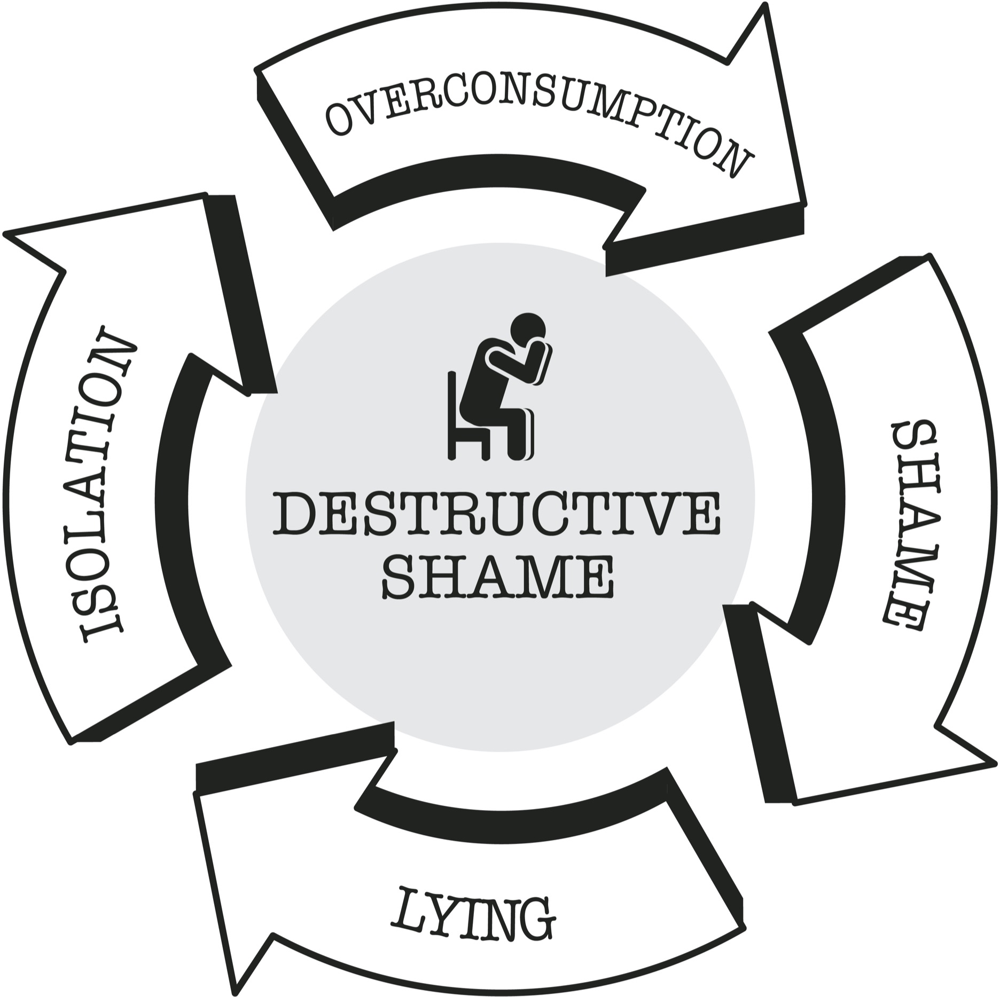
Liều thuốc giải cho sự xấu hổ mang tính hủy hoại chính là sự xấu hổ mang tính xã hội tích cực. Hãy xem cách nó vận hành như thế nào.
AA như một hình mẫu cho Sự xấu hổ mang tính xã hội tích cực
Người thầy hướng dẫn của tôi từng kể cho tôi nghe điều gì đã thúc đẩy ông bỏ rượu. Tôi thường nhớ lại câu chuyện của ông vì nó minh họa cho lưỡi dao hai lưỡi của sự xấu hổ.
Cho đến tận những năm ngoài bốn mươi tuổi, ông vẫn lén uống rượu mỗi đêm sau khi vợ con đã đi ngủ. Ông làm điều đó rất lâu sau khi đã hứa với vợ rằng mình đã bỏ. Tất cả những lời nói dối vụn vặt để che đậy việc uống rượu, cùng với chính việc uống rượu, tích tụ lại và đè nặng lên lương tâm ông, để rồi điều đó lại khiến ông uống nhiều hơn. Ông uống vì xấu hổ.
Một ngày nọ, vợ ông phát hiện ra việc ông dùng rượu. “Ánh mắt thất vọng và cảm giác bị phản bội trong mắt cô ấy khiến tôi thề rằng mình sẽ không bao giờ uống nữa.” Nỗi xấu hổ ông cảm thấy trong khoảnh khắc đó, cùng khát khao lấy lại niềm tin và sự chấp thuận của vợ, đã đẩy ông bước vào nỗ lực phục hồi nghiêm túc đầu tiên. Ông bắt đầu tham gia các buổi sinh hoạt của Hội Những Người Nghiện Rượu Ẩn Danh (AA). Ông xác định lợi ích chính của AA đối với mình là một “quá trình giải tỏa xấu hổ”.
Ông mô tả điều đó thế này: “Tôi nhận ra mình không phải là người duy nhất. Có những người khác cũng giống hệt như tôi. Có những bác sĩ khác cũng đang vật lộn với chứng nghiện rượu. Việc biết rằng mình có một nơi để đến, nơi mình có thể hoàn toàn trung thực mà vẫn được chấp nhận, là điều vô cùng quan trọng. Nó tạo ra không gian tâm lý mà tôi cần để tha thứ cho bản thân và tạo ra thay đổi. Để bước tiếp trong cuộc đời mình.”
Sự xấu hổ mang tính xã hội tích cực dựa trên ý niệm rằng sự xấu hổ là hữu ích và quan trọng đối với những cộng đồng thịnh vượng. Không có sự xấu hổ, xã hội sẽ rơi vào hỗn loạn. Do đó, cảm thấy xấu hổ vì những hành vi vượt quá giới hạn là điều thích đáng và tốt đẹp.
Sự xấu hổ mang tính xã hội tích cực còn dựa trên ý niệm rằng tất cả chúng ta đều có khiếm khuyết, đều có thể mắc sai lầm và đều cần sự tha thứ. Chìa khóa để khuyến khích việc tuân thủ các chuẩn mực nhóm, mà không ruồng bỏ bất kỳ ai lỡ bước, là phải có một “danh sách việc cần làm” hậu xấu hổ nhằm đưa ra các bước cụ thể để chuộc lỗi. Đây chính là điều AA làm với chương trình 12 Bước của mình.
Vòng xoáy của sự xấu hổ mang tính xã hội tích cực diễn ra như sau: Tiêu thụ quá mức dẫn đến sự xấu hổ, sự xấu hổ đòi hỏi sự trung thực triệt để và dẫn đến không phải sự xa lánh như chúng ta thấy ở sự xấu hổ mang tính hủy hoại, mà là sự chấp nhận và đồng cảm, đi kèm với một tập hợp các hành động bắt buộc để chuộc lỗi. Kết quả là cảm giác gắn kết tăng lên và sự tiêu thụ giảm xuống.
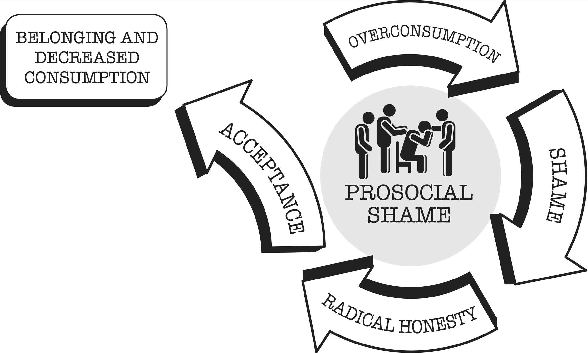
Bệnh nhân Todd của tôi, một bác sĩ phẫu thuật trẻ đang trong quá trình phục hồi chứng nghiện rượu, đã kể cho tôi nghe AA “là nơi an toàn đầu tiên để bộc lộ sự yếu đuối”. Tại buổi họp AA đầu tiên, anh đã khóc nức nở đến mức không thể nói nổi tên mình.
“Sau đó, mọi người tiến lại gần, cho tôi số điện thoại của họ, bảo tôi hãy gọi. Đó là cộng đồng mà tôi hằng mong muốn nhưng chưa từng có. Tôi không bao giờ có thể mở lòng như thế với nhóm bạn leo núi của mình hay với các bác sĩ phẫu thuật khác.”
Sau năm năm duy trì phục hồi bền vững, Todd chia sẻ với tôi rằng bước quan trọng nhất trong 12 Bước đối với anh là Bước 10 (“Tiếp tục tự kiểm điểm bản thân và khi sai thì lập tức thừa nhận”).
“Mỗi ngày, tôi tự rà soát lại mình. Được rồi, mình có đang lệch lạc không? Nếu có, mình có thể thay đổi thế nào? Mình có cần chuộc lỗi không? Mình có thể chuộc lỗi bằng cách nào? Ví dụ, hôm nọ, tôi làm việc với một bác sĩ nội trú đã không cung cấp cho tôi thông tin chính xác về một bệnh nhân. Tôi bắt đầu thấy bực bội. Tại sao việc này lại chưa được làm xong? Khi cảm thấy sự bực bội đó, tôi tự nhủ: Được rồi, Todd, dừng lại đi. Nghĩ về chuyện này xem. Người này có ít hơn mình gần mười năm kinh nghiệm. Chắc chắn họ đang sợ hãi. Thay vì bực bội, làm thế nào mình có thể giúp họ có được thứ họ cần? Đó không phải là điều tôi sẽ làm trước khi bước vào quá trình phục hồi.
“Vài năm trước,” Todd kể với tôi, “khoảng ba năm sau khi tôi bắt đầu phục hồi, tôi hướng dẫn một sinh viên y khoa thực sự rất tệ. Ý tôi là rất kém. Tôi không thể để cậu ta chăm sóc bệnh nhân. Khi đến lúc đánh giá giữa kỳ, tôi ngồi lại với cậu ta và quyết định phải trung thực. Tôi nói với cậu ta: ‘Cậu sẽ không qua được đợt thực tập luân khoa này đâu trừ khi cậu có những thay đổi lớn.’
“Sau phản hồi của tôi, cậu ta đã quyết định làm lại từ đầu và thực sự cố gắng cải thiện hiệu suất của mình. Cậu ta đã khá lên và cuối cùng đã vượt qua được đợt thực tập. Vấn đề là, vào thời tôi còn uống rượu, tôi sẽ chẳng bao giờ trung thực với cậu ta đâu. Tôi sẽ mặc kệ cho cậu ta tiếp tục đi qua rồi trượt kỳ thực tập, hoặc đẩy vấn đề đó cho người khác giải quyết.”
Một cuộc tự kiểm điểm trung thực không chỉ dẫn đến sự thấu hiểu sâu sắc hơn về những thiếu sót của chính mình. Nó còn cho phép chúng ta đánh giá khách quan hơn và phản hồi đúng mực hơn trước những thiếu sót của người khác. Khi chúng ta có trách nhiệm với chính mình, chúng ta có khả năng giúp người khác chịu trách nhiệm. Chúng ta có thể tận dụng sự xấu hổ mà không làm nhục ai cả.
Chìa khóa ở đây là trách nhiệm giải trình đi kèm lòng trắc ẩn. Những bài học này áp dụng cho tất cả chúng ta, dù có nghiện hay không, và có thể chuyển hóa vào mọi loại hình mối quan hệ trong đời sống hằng ngày.
Hội Những Người Nghiện Rượu Ẩn Danh (AA) là một tổ chức hình mẫu cho sự xấu hổ mang tính xã hội tích cực. Sự xấu hổ mang tính xã hội tích cực trong AA thúc đẩy sự tuân thủ các chuẩn mực của nhóm. Không có sự xấu hổ nào về việc là một “người nghiện rượu”, nhất quán với câu nói “AA là vùng không xấu hổ”; nhưng có sự xấu hổ về việc theo đuổi sự “tỉnh táo” một cách nửa vời. Các bệnh nhân từng nói với tôi rằng nỗi xấu hổ dự đoán trước khi phải thú nhận với cả nhóm rằng mình đã tái nghiện đóng vai trò như một rào cản lớn chống lại việc tái nghiện, và thúc đẩy sự tuân thủ sâu sắc hơn đối với các chuẩn mực nhóm.
Điều quan trọng là, khi các thành viên AA tái nghiện, chính sự tái nghiện đó lại là một lợi ích câu lạc bộ (club good). Các nhà kinh tế học hành vi gọi những phần thưởng có được từ việc thuộc về một nhóm là lợi ích câu lạc bộ. Lợi ích câu lạc bộ càng vững mạnh, nhóm càng có khả năng giữ chân các thành viên hiện tại và thu hút thêm thành viên mới. Khái niệm lợi ích câu lạc bộ có thể áp dụng cho bất kỳ nhóm người nào, từ gia đình, nhóm bạn bè cho đến các giáo đoàn tôn giáo.
Như nhà kinh tế học hành vi Laurence Iannaccone đã viết khi đề cập đến lợi ích câu lạc bộ trong các tổ chức tôn giáo: “Niềm vui tôi nhận được từ buổi lễ Chủ nhật không chỉ phụ thuộc vào sự đóng góp của riêng tôi mà còn phụ thuộc vào sự đóng góp của những người khác: có bao nhiêu người khác tham dự, họ chào đón tôi nồng nhiệt ra sao, họ hát hay thế nào, họ đọc kinh và cầu nguyện hăng hái đến đâu.” Lợi ích câu lạc bộ được củng cố nhờ sự tham gia tích cực vào các hoạt động và buổi tụ họp của nhóm, cũng như nhờ việc tuân thủ các quy tắc và chuẩn mực của nhóm.
Việc trung thực thú nhận một lần tái nghiện với cộng đồng AA giúp gia tăng lợi ích câu lạc bộ bằng cách tạo cơ hội cho các thành viên khác trải nghiệm sự đồng cảm, lòng vị tha, và hãy thành thật mà nói, một mức độ nào đó của niềm hả hê trước nỗi bất hạnh của người khác (schadenfreude) theo kiểu “Chuyện đó có thể đã xảy ra với mình và thật may là không phải mình”, hoặc “Nhờ ơn Chúa nên mình mới không rơi vào cảnh đó”.
Lợi ích câu lạc bộ bị đe dọa bởi những kẻ ăn theo (free riders) tìm cách hưởng lợi từ nhóm mà không đóng góp đủ vào cộng đồng đó, tương tự như những từ ngữ thông tục hơn là kẻ ăn bám hay kẻ đào mỏ. Khi nói đến quy tắc và chuẩn mực nhóm, những kẻ ăn theo đe dọa lợi ích câu lạc bộ khi họ không tuân thủ, nói dối về điều đó, và/hoặc không nỗ lực thay đổi hành vi của mình. Hành vi cá nhân của họ chẳng làm gì để củng cố lợi ích câu lạc bộ, thế nhưng cá nhân họ vẫn đang hưởng lợi từ tư cách thành viên trong nhóm—những đặc quyền của sự gắn kết.
Iannaconne lưu ý rằng rất khó, nếu không muốn nói là bất khả thi, để đo lường mức độ tuân thủ các nguyên tắc nhóm tạo nên lợi ích câu lạc bộ, đặc biệt là khi những đòi hỏi đó liên quan đến thói quen cá nhân và những hiện tượng chủ quan, phi vật thể, chẳng hạn như việc nói thật.
Lý thuyết về Sự Hy sinh và Kỳ thị của Iannaconne đặt ra giả thuyết rằng một cách để “đo lường” sự tham gia vào nhóm một cách gián tiếp là bắt buộc thực hiện những hành vi mang tính kỳ thị xã hội làm giảm khả năng tham gia vào các bối cảnh khác, và đòi hỏi sự hy sinh nguồn lực của cá nhân đến mức loại trừ các hoạt động khác. Bằng cách đó, những kẻ ăn theo sẽ bị phát hiện và loại bỏ.
Cụ thể, những hành vi có vẻ thái quá, thừa thãi, hay thậm chí phi lý trong các thiết chế tôn giáo hiện có, chẳng hạn như để những kiểu tóc hoặc mặc những trang phục nhất định, kiêng khem nhiều loại thực phẩm hoặc các hình thức công nghệ hiện đại, hay từ chối một số phương pháp điều trị y tế nhất định, lại hoàn toàn hợp lý khi được hiểu như một cái giá mà cá nhân phải trả nhằm giảm thiểu tình trạng ăn theo trong một tổ chức.
Bạn có thể nghĩ rằng các tổ chức tôn giáo và những nhóm xã hội khác có tính chất thoải mái hơn, ít quy tắc và ràng buộc hơn, sẽ thu hút được đông đảo tín đồ hơn. Không phải vậy. “Những nhà thờ khắt khe hơn” lại đạt được lượng tín đồ lớn hơn và nhìn chung thành công hơn những nơi tự do phóng khoáng, bởi vì họ lọc bỏ được những kẻ ăn theo và mang lại lợi ích câu lạc bộ vững chắc hơn.
Jacob đã tham gia nhóm 12 Bước của Hội Những Người Nghiện Tình Dục Ẩn Danh (SA) từ rất sớm trong quá trình phục hồi và tăng cường mức độ tham gia sau mỗi lần tái nghiện. Sự cam kết là vô cùng lớn. Anh tham dự một buổi họp nhóm trực tiếp hoặc qua điện thoại mỗi ngày. Anh thường thực hiện tám cuộc gọi điện thoại trở lên mỗi ngày với các thành viên đồng hành.
AA và các nhóm 12 Bước khác từng bị gièm pha là “giáo phái” hoặc những tổ chức nơi người ta đánh đổi chứng nghiện rượu và/hoặc ma túy sang chứng nghiện chính nhóm đó. Những lời chỉ trích này không nhận ra rằng sự khắt khe của tổ chức, cái vẻ giống giáo phái của nó, có thể lại chính là nguồn gốc tạo nên hiệu quả của nó.
Kẻ ăn theo trong các nhóm 12 Bước có thể tồn tại dưới nhiều hình thức, nhưng nguy hiểm nhất là những thành viên không thừa nhận khi mình tái nghiện, không tự tuyên bố lại mình là người mới, và không thực hành lại các bước. Họ tước đoạt của nhóm lợi ích câu lạc bộ từ sự xấu hổ mang tính xã hội tích cực, chưa kể đến mạng lưới xã hội tỉnh táo vốn đóng vai trò sống còn đối với sự phục hồi. Để duy trì lợi ích câu lạc bộ, AA phải thực hiện những biện pháp mạnh mẽ và đôi khi có vẻ phi lý để chống lại kiểu ăn theo này.
Joan đã cai được rượu thông qua việc tham gia AA. Cô ấy cũng đi họp đều đặn, có người bảo trợ (sponsor), và chính cô ấy cũng bảo trợ cho người khác. Cô ấy đã kiêng rượu hoàn toàn trong AA được bốn năm và là bệnh nhân của tôi suốt mười năm, vì thế tôi có thể quan sát và trân trọng tất cả những thay đổi tích cực mà AA đã mang lại cho cuộc đời cô ấy.
Đầu những năm 2000, Joan gặp một sự cố trong đó cô ấy vô tình uống phải cồn. Khi đó cô ấy đang đi du lịch ở Ý, nơi cô ấy không biết tiếng bản địa, và đã vô tình gọi và uống một loại đồ uống có chứa một tỷ lệ cồn rất nhỏ, tương đương với các loại bia không cồn được tiếp thị và bán tại Hoa Kỳ. Chỉ sau đó cô ấy mới nhận ra chuyện gì đã xảy ra, không phải vì cảm thấy chếnh choáng mà vì đọc nhãn chai.
Khi trở về sau chuyến đi và kể cho người bảo trợ nghe chuyện đã xảy ra, người bảo trợ khẳng định cô ấy đã tái nghiện và khuyến khích cô ấy kể với cả nhóm rồi đặt lại ngày bắt đầu tỉnh táo (sobriety date). Tôi đã ngạc nhiên khi người bảo trợ của Joan giữ lập trường cứng rắn đến vậy. Xét cho cùng, cô ấy đã tiêu thụ một lượng cồn không đáng kể đến mức hầu hết người Mỹ không coi những loại đồ uống như vậy là “có cồn”. Nhưng Joan đã đồng ý, dù cô ấy làm vậy trong nước mắt. Cô ấy vẫn duy trì sự phục hồi và việc tham gia AA của mình cho đến tận ngày nay.
Sự khăng khăng của người bảo trợ buộc Joan phải đặt lại ngày tỉnh táo lúc bấy giờ có vẻ thái quá đối với tôi, nhưng giờ đây tôi hiểu nó vừa là cách đề phòng một chút cồn mở đường cho rất nhiều cồn—hiệu ứng dốc trơn trượt—vừa là sự “tối đa hóa lợi ích” vì lợi ích chung lớn hơn của cả nhóm. Việc Joan sẵn sàng tuân thủ một cách diễn giải cực kỳ nghiêm ngặt về sự tái nghiện đã củng cố mối liên kết của cô ấy với nhóm, điều về lâu dài hóa ra cũng mang lại kết quả tích cực cho chính cô ấy.
Ngoài ra, chính Joan cũng chỉ ra: “Có lẽ có một phần trong tôi đã biết có cồn trong đồ uống đó và muốn lấy việc đang ở nước ngoài làm cái cớ.” Theo nghĩa đó, nhóm đóng vai trò như một lương tâm mở rộng.
Tất nhiên, các chiến lược tư duy tập thể có thể bị sử dụng cho những mục đích bất chính. Ví dụ, khi cái giá của việc thuộc về vượt quá lợi ích câu lạc bộ và các thành viên bị tổn hại. NXIVM là một tổ chức tự xưng là Chương trình Thành công Điều hành (Executive Success Program) mà các lãnh đạo đã bị bắt và truy tố vào năm 2018 với các cáo buộc buôn bán tình dục và tống tiền cấp liên bang. Tương tự, có những tình huống mà các thành viên của một nhóm được hưởng lợi, nhưng họ lại gây hại cho những người bên ngoài nhóm, chẳng hạn như nhiều thực thể ngày nay sử dụng mạng xã hội để phát tán thông tin sai lệch.
Vài tháng sau khi ngừng đi nhà thờ, Lori đã đến buổi họp AA đầu tiên của mình. AA mang lại cho cô ấy cộng đồng tương trợ mà cô ấy hằng tìm kiếm nhưng không thể tìm thấy ở nhà thờ. Vào ngày 20 tháng 12 năm 2014, Lori đã từ bỏ mọi chất gây nghiện và duy trì sự phục hồi từ đó đến nay.
“Tôi không thể nói chính xác điều gì đã xảy ra, hay xảy ra vào lúc nào,” Lori nói khi nhìn lại quá trình phục hồi của mình nhiều năm sau đó, điều mà cô ấy ghi công cho việc tham gia AA. “Nghe câu chuyện của mọi người. Cảm giác nhẹ nhõm khi trút bỏ được những bí mật sâu kín nhất, đen tối nhất của mình. Nhìn thấy niềm hy vọng trong mắt những người mới đến. Trước đây tôi từng cô độc vô cùng. Tôi nhớ mình chỉ muốn chết. Nằm thao thức hàng đêm tự hành hạ bản thân vì tất cả những điều mình đã làm. Ở AA, tôi học được cách chấp nhận bản thân và người khác đúng như con người họ. Giờ đây tôi có những mối quan hệ thực sự với mọi người. Tôi thuộc về một nơi nào đó. Họ biết con người thật của tôi.”
Sự xấu hổ mang tính xã hội tích cực và Việc nuôi dạy con cái
Là một người mẹ lo lắng cho sự an lành của các con mình trong một thế giới ngập tràn dopamine, tôi đã cố gắng đưa các nguyên tắc của sự xấu hổ mang tính xã hội tích cực vào đời sống gia đình chúng tôi.
Trước hết, chúng tôi thiết lập sự trung thực triệt để như một giá trị cốt lõi của gia đình. Tôi cố gắng hết sức, dù không phải lúc nào cũng thành công, để làm gương về sự trung thực triệt để trong chính hành vi của mình. Đôi khi với tư cách cha mẹ, chúng ta nghĩ rằng bằng cách che giấu sai lầm và khiếm khuyết của mình, chỉ phô bày những mặt tốt đẹp nhất, chúng ta sẽ dạy cho con cái biết thế nào là đúng. Nhưng điều này có thể gây tác dụng ngược, khiến trẻ cảm thấy chúng phải hoàn hảo thì mới xứng đáng được yêu thương.
Thay vào đó, nếu chúng ta cởi mở và trung thực với con cái về những khó khăn của mình, chúng ta sẽ tạo ra một không gian để chúng cởi mở và trung thực về những khó khăn của chính chúng. Do đó, chúng ta cũng phải sẵn sàng và tự nguyện thừa nhận khi mình sai trong cách tương tác với con và với người khác. Chúng ta phải đón nhận nỗi xấu hổ của chính mình và sẵn sàng sửa sai.
Khoảng năm năm trước, khi các con của chúng tôi vẫn còn học tiểu học và trung học cơ sở, tôi tặng cho mỗi đứa một chú thỏ sô-cô-la vào dịp lễ Phục Sinh. Làm từ sô-cô-la sữa béo ngậy, chúng được mua từ một tiệm sô-cô-la đặc sản. Các con tôi ăn một ít chú thỏ của chúng rồi cất phần còn lại vào tủ đựng thức ăn để dành sau.
Trong hai tuần tiếp theo, tôi cứ nhấm nháp một chút chỗ này, một chút chỗ kia từ những chú thỏ sô-cô-la của chúng, không nhiều đến mức, tôi nghĩ vậy, để ai có thể nhận ra. Đến lúc các con nhớ ra những chú thỏ sô-cô-la của mình, tôi đã gặm chúng gần như chẳng còn gì. Biết rõ sở thích mê sô-cô-la của tôi, chúng quay sang buộc tội tôi đầu tiên.
“Không phải mẹ đâu,” tôi nói. Lời nói dối tuôn ra thật tự nhiên. Tôi tiếp tục nói dối suốt ba ngày sau đó. Chúng vẫn giữ thái độ hoài nghi rằng tôi đang nói thật, nhưng rồi chúng bắt đầu quay sang đổ lỗi cho nhau. Tôi biết mình phải làm cho ra lẽ. Làm sao mình có thể dạy con tính trung thực nếu chính mình không trung thực? Và thật là một chuyện ngớ ngẩn, ngu ngốc để mà nói dối! Tôi mất ba ngày để lấy đủ dũng khí nói cho chúng biết sự thật. Tôi đã xấu hổ vô cùng.
Chúng cảm thấy được minh oan và kinh hoàng khi biết sự thật. Được minh oan vì phán đoán đầu tiên của chúng đã đúng. Kinh hoàng vì chính mẹ mình lại nói dối mình. Đó là một bài học sâu sắc cho cả tôi và các con ở nhiều cấp độ.
Tôi tự nhắc bản thân, và ra hiệu cho chúng thấy, tôi là người đầy khiếm khuyết đến nhường nào. Tôi cũng làm gương rằng khi mắc sai lầm, ít nhất tôi có thể nhận phần trách nhiệm của mình. Các con đã tha thứ cho tôi và cho đến tận ngày nay vẫn thích kể lại câu chuyện về việc tôi đã “ăn trộm” sô-cô-la của chúng rồi “nói dối về việc đó” như thế nào. Sự trêu chọc của chúng là hình phạt chuộc lỗi của tôi và tôi vui vẻ đón nhận. Cùng nhau, chúng tôi tái khẳng định rằng gia đình mình là nơi mọi người có thể mắc sai lầm nhưng sẽ không bị lên án hay ruồng bỏ vĩnh viễn. Chúng tôi đang cùng nhau học hỏi và trưởng thành.
Giống như bệnh nhân Todd của tôi, khi chúng ta tích cực và trung thực đánh giá lại bản thân, chúng ta sẽ có khả năng và sẵn lòng hơn trong việc đưa ra phản hồi trung thực cho người khác, trên tinh thần giúp họ hiểu rõ điểm mạnh và thiếu sót của chính mình.
Kiểu trung thực triệt để mà không làm nhục này cũng rất quan trọng để dạy cho trẻ em biết điểm mạnh và điểm yếu của chúng.
Khi cô con gái lớn của chúng tôi lên năm tuổi, cháu bắt đầu học đàn piano. Tôi lớn lên trong một gia đình yêu âm nhạc và rất mong chờ được chia sẻ âm nhạc với các con. Hóa ra con gái tôi không hề có cảm nhận về nhịp điệu và dù chưa hẳn là mù âm nhạc hoàn toàn, nhưng cũng gần như vậy. Thế nhưng cả hai mẹ con vẫn kiên trì tập luyện hằng ngày, tôi ngồi cạnh cháu, cố gắng động viên, trong khi phải kìm nén nỗi kinh hoàng trước sự thiếu năng khiếu hoàn toàn của con. Sự thật là cả hai chúng tôi đều chẳng thấy vui vẻ gì.
Khoảng một năm sau khi học đàn, chúng tôi đang xem bộ phim Happy Feet về một chú chim cánh cụt tên Mumble có một vấn đề lớn: Chú không thể hát nổi một nốt nhạc nào, trong một thế giới mà bạn cần có một bài hát từ trái tim để thu hút bạn đời. Con gái chúng tôi quay sang nhìn tôi giữa bộ phim và hỏi: “Mẹ ơi, con có giống Mumble không?”
Ngay khoảnh khắc đó, tôi bị bủa vây bởi sự hoài nghi của một người làm cha mẹ. Mình nên nói gì đây? Mình có nên nói thật cho con và chấp nhận rủi ro làm tổn thương lòng tự trọng của con, hay nói dối và cố dùng sự lừa dối đó để nhen nhóm tình yêu âm nhạc?
Tôi đã đánh liều. “Ừ,” tôi nói, “con khá giống Mumble đấy.”
Một nụ cười rạng rỡ nở trên khuôn mặt con gái tôi, điều mà tôi hiểu là nụ cười của sự được xác nhận. Lúc đó tôi biết mình đã làm đúng.
Bằng cách xác nhận điều mà con bé vốn đã biết là sự thật—sự thiếu khả năng âm nhạc của mình—tôi đã khuyến khích kỹ năng tự đánh giá chính xác ở con, kỹ năng mà con vẫn thể hiện cho đến tận ngày nay. Tôi cũng gửi đi thông điệp rằng chúng ta không thể giỏi mọi thứ, và điều quan trọng là phải biết mình giỏi gì và không giỏi gì, để có thể đưa ra những quyết định sáng suốt.
Con bé quyết định nghỉ học piano sau một năm—trong sự nhẹ nhõm của tất cả mọi người—và cho đến tận ngày nay cháu vẫn yêu thích âm nhạc, hát theo đài phát thanh một cách hoàn toàn lạc điệu mà chẳng hề thấy xấu hổ chút nào.
Sự trung thực từ hai phía ngăn ngừa nỗi xấu hổ và báo hiệu một sự bùng nổ của thân mật, một làn sóng ấm áp cảm xúc đến từ cảm giác kết nối sâu sắc với người khác khi chúng ta được chấp nhận bất chấp những khiếm khuyết của mình. Không phải sự hoàn hảo của chúng ta mà chính sự sẵn lòng cùng nhau khắc phục sai lầm mới tạo nên sự gắn bó thân mật mà chúng ta khao khát.
Sự bùng nổ thân mật kiểu này gần như chắc chắn đi kèm với việc giải phóng dopamine nội sinh của chính não bộ chúng ta. Nhưng khác với cơn bùng nổ dopamine mà chúng ta có được từ những khoái lạc rẻ tiền, luồng dopamine có được từ sự thân mật đích thực mang tính thích nghi, giúp tái tạo và tăng cường sức khỏe.
Thông qua sự hy sinh và kỳ thị, chồng tôi và tôi đã nỗ lực củng cố lợi ích câu lạc bộ của gia đình mình.
Các con chúng tôi không được phép sở hữu điện thoại riêng cho đến khi vào trung học phổ thông. Điều này khiến chúng trở nên kỳ lạ giữa bạn bè đồng trang lứa, đặc biệt là ở cấp trung học cơ sở. Ban đầu chúng năn nỉ và vòi vĩnh để có điện thoại riêng, nhưng sau một thời gian lại coi sự khác biệt này như một phần cốt lõi trong bản sắc của mình, cùng với việc chúng tôi nhất quyết đi xe đạp thay vì lái ô tô bất cứ khi nào có thể, và dành thời gian bên nhau như một gia đình không có thiết bị điện tử.
Tôi tin chắc rằng huấn luyện viên bơi lội của các con chúng tôi có một tấm bằng Tiến sĩ bí mật về kinh tế học hành vi. Ông ấy thường xuyên tận dụng sự hy sinh và kỳ thị để củng cố lợi ích câu lạc bộ.
Trước hết là sự cam kết thời gian khổng lồ, lên tới bốn giờ tập bơi mỗi ngày đối với các em học sinh trung học phổ thông, và sự làm xấu hổ ngầm xảy ra khi các em bỏ buổi tập. Có sự ghi nhận và phần thưởng cho việc đi tập chuyên cần (không khác mấy so với kỷ niệm chương của AA cho ba mươi buổi họp trong ba mươi ngày), bao gồm cơ hội được tham gia các giải đấu xa nhà. Có những quy định nghiêm ngặt về trang phục khi đi thi đấu: áo phông bơi màu đỏ vào thứ Sáu, áo phông bơi màu xám vào thứ Bảy, chỉ được dùng đồ dùng có logo của đội (mũ bơi, đồ bơi, kính bơi). Điều này phân biệt rõ rệt các em trong đội này với vẻ ngoài xuề xòa của các em ở những đội khác.
Nhiều quy tắc trong số này có vẻ thái quá và vô bổ, nhưng khi nhìn qua lăng kính của các nguyên tắc tối đa hóa lợi ích nhằm củng cố sự tham gia, giảm tình trạng ăn theo và gia tăng lợi ích câu lạc bộ, chúng hoàn toàn hợp lý. Và lũ trẻ đổ xô vào riêng đội bơi này, dường như rất thích sự nghiêm khắc đó, ngay cả khi chúng cằn nhằn về nó.
Chúng ta có xu hướng coi sự xấu hổ là một điều tiêu cực, đặc biệt là vào thời điểm mà hành vi làm nhục (shaming)—miệt thị ngoại hình béo (fat shaming), miệt thị tình dục (slut shaming), miệt thị cơ thể (body shaming), vân vân—là một từ ngữ mang nhiều định kiến và (một cách chính đáng) bị gắn liền với hành vi bắt nạt. Trong thế giới ngày càng số hóa của chúng ta, việc bêu riếu trên mạng xã hội và hệ quả đi kèm là “văn hóa tẩy chay (cancel culture)” đã trở thành một hình thức xa lánh mới, một biến tướng hiện đại của những khía cạnh hủy hoại nhất của sự xấu hổ.
Ngay cả khi chẳng có ai khác chĩa ngón tay vào chúng ta, chúng ta vẫn luôn sẵn sàng tự chĩa ngón tay vào chính mình.
Mạng xã hội thúc đẩy xu hướng tự làm nhục bản thân bằng cách mời gọi quá nhiều sự so sánh đầy đố kỵ. Giờ đây chúng ta không chỉ so sánh mình với bạn học, hàng xóm và đồng nghiệp, mà với cả thế giới, khiến chúng ta quá dễ tự thuyết phục bản thân rằng lẽ ra mình phải làm được nhiều hơn, đạt được nhiều hơn, hoặc sống khác đi.
Để coi cuộc đời mình là “thành công”, giờ đây chúng ta cảm thấy mình phải đạt tới tầm vóc huyền thoại của Steve Jobs và Mark Zuckerberg, hoặc giống như Elizabeth Holmes của tập đoàn Theranos, một Icarus thời hiện đại, lao xuống trong biển lửa khi cố gắng vươn tới đỉnh cao.
Nhưng trải nghiệm thực tế của các bệnh nhân của tôi cho thấy sự xấu hổ mang tính xã hội tích cực có thể mang lại những tác động tích cực, lành mạnh bằng cách mài giũa bớt những góc cạnh thô ráp của chứng ái kỷ, gắn kết chúng ta chặt chẽ hơn với các mạng lưới xã hội tương trợ, và kiềm chế những khuynh hướng nghiện ngập của chúng ta.
Kết luận, Ghi chú của tác giả & Lời cảm ơn
KẾT LUẬN
Những bài học từ cán cân
Tất cả chúng ta đều khao khát một khoảng lặng tách khỏi thế giới—một sự nghỉ ngơi khỏi những tiêu chuẩn bất khả thi mà ta thường đặt ra cho bản thân và người khác. Thật tự nhiên khi ta tìm cách giải thoát khỏi những dòng suy nghĩ miên man không dứt của chính mình: Tại sao mình lại làm thế? Tại sao mình không làm được điều này? Hãy nhìn xem họ đã làm gì với mình. Sao mình có thể đối xử với họ như vậy?
Vì thế, ta bị cuốn vào bất kỳ hình thức trốn chạy đầy khoái lạc nào hiện có quanh mình: những ly cocktail sành điệu, buồng vang của mạng xã hội, cày thâu đêm các chương trình truyền hình thực tế, một buổi tối chìm trong phim khiêu dâm trên Internet, khoai tây chiên và đồ ăn nhanh, những trò chơi điện tử nhập vai, những cuốn tiểu thuyết ma cà rồng hạng hai . . . Danh sách ấy thực sự dài vô tận. Các chất kích thích và hành vi gây nghiện mang lại sự khuây khỏa tức thời nhưng về lâu dài lại chồng chất thêm vấn đề cho chúng ta.
Điều gì sẽ xảy ra nếu thay vì tìm kiếm sự lãng quên bằng cách trốn chạy khỏi thế giới, chúng ta lại quay về phía nó? Điều gì sẽ xảy ra nếu thay vì bỏ lại thế giới phía sau, chúng ta hòa mình vào nó?
Bạn hẳn còn nhớ Muhammad, bệnh nhân của tôi, người đã thử nhiều hình thức tự ràng buộc khác nhau để hạn chế việc sử dụng cần sa, nhưng rồi lại thấy mình quay về đúng vạch xuất phát, trượt dài từ sử dụng chừng mực sang lạm dụng quá mức rồi nghiện ngập với nhịp độ ngày càng nhanh hơn.
Anh đã đi leo núi ở Point Reyes, một con đường mòn tự nhiên ngay phía bắc San Francisco, với hy vọng tìm thấy chốn nương náu trong một hoạt động từng mang lại cho anh niềm vui, khi anh một lần nữa cố gắng kiểm soát việc sử dụng cần sa của mình.
Nhưng mỗi khúc quanh trên đường lại gợi về những ký ức tươi mới về việc hút cỏ—những chuyến đi bộ đường dài trước đây hầu như lúc nào cũng diễn ra trong trạng thái nửa say nửa tỉnh—và vì thế, thay vì trở thành một lối thoát, chuyến đi bộ lại biến thành nỗi thống khổ của cơn thèm thuốc và lời nhắc nhở đau đớn về sự mất mát. Anh tuyệt vọng rằng mình sẽ chẳng bao giờ có thể khuất phục được vấn đề cần sa của bản thân.
Rồi anh có khoảnh khắc bừng tỉnh. Tại một điểm ngắm cảnh nơi anh có những ký ức rõ ràng về việc hút chung điếu cần sa với bạn bè, anh đưa máy ảnh lên mắt và hướng về một cái cây gần đó. Anh thấy một con bọ trên chiếc lá và lấy nét sâu hơn, phóng to vào lớp mai đỏ rực, đôi râu có khía và những chiếc chân đầy lông dữ tợn của con bọ cánh cứng. Anh bị mê hoặc hoàn toàn.
Sự chú ý của anh bị thu hút trọn vẹn bởi sinh vật nằm trong khung ngắm. Anh chụp một loạt ảnh, rồi đổi góc chụp và chụp thêm nữa. Trong suốt phần còn lại của chuyến đi bộ, anh liên tục dừng lại để chụp ảnh cận cảnh cực đại những con bọ cánh cứng. Ngay khi làm vậy, cơn thèm cần sa của anh giảm hẳn.
“Tôi đã phải tự ép mình giữ thật tĩnh lặng,” anh kể với tôi trong một buổi trị liệu vào năm 2017. “Tôi phải đạt đến sự tĩnh tại tuyệt đối để chụp được một bức ảnh rõ nét. Quá trình đó giúp tôi giữ vững tâm trí, theo đúng nghĩa đen, và đưa tôi trở về trạng thái cân bằng. Tôi đã khám phá ra một thế giới kỳ lạ, siêu thực và đầy cuốn hút ở đầu ống kính máy ảnh, sánh ngang với thế giới mà tôi từng dùng chất kích thích để trốn vào. Nhưng thế giới này tốt đẹp hơn nhiều vì chẳng cần đến chất kích thích nào cả.”
Nhiều tháng sau, tôi nhận ra con đường phục hồi của Muhammad cũng giống hệt con đường của chính tôi.
Tôi đã đưa ra quyết định có ý thức là đắm mình trở lại vào công việc chăm sóc bệnh nhân, tập trung vào những khía cạnh trong nghề vốn luôn mang lại cho tôi phần thưởng tinh thần: mối quan hệ gắn bó với bệnh nhân theo thời gian, và việc đắm mình vào các câu chuyện như một cách thiết lập trật tự cho thế giới. Nhờ làm vậy, tôi đã có thể thoát khỏi chứng nghiện đọc tiểu thuyết lãng mạn cưỡng chế để bước vào một sự nghiệp ý nghĩa và xứng đáng hơn. Tôi cũng thành công hơn trong công việc, nhưng thành công ấy chỉ là hệ quả phụ ngoài mong đợi, chứ không phải đích đến tôi tìm kiếm.
Tôi kêu gọi bạn hãy tìm cách hòa mình trọn vẹn vào cuộc đời mà bạn được ban tặng. Hãy ngừng chạy trốn khỏi bất cứ điều gì bạn đang cố né tránh, mà thay vào đó hãy dừng lại, quay người và đối diện với nó.
Rồi tôi thách bạn bước thẳng về phía nó. Bằng cách ấy, thế giới có thể tự hé lộ trước mắt bạn như một điều kỳ diệu và đầy kinh ngạc, không đòi hỏi phải trốn chạy. Thay vào đó, thế giới có thể trở thành một điều xứng đáng để bạn chú tâm.
Phần thưởng của việc tìm kiếm và duy trì sự cân bằng không đến ngay lập tức cũng không tồn tại vĩnh viễn. Chúng đòi hỏi sự kiên nhẫn và duy trì đều đặn. Chúng ta phải sẵn sàng tiến bước ngay cả khi không chắc chắn điều gì đang chờ đợi phía trước. Chúng ta phải có niềm tin rằng những hành động hôm nay tưởng chừng không tạo ra tác động nào ở hiện tại thực chất đang tích lũy theo chiều hướng tích cực, và kết quả ấy sẽ chỉ hiện ra vào một thời điểm chưa biết trong tương lai. Những thói quen lành mạnh được bồi đắp qua từng ngày.
Bệnh nhân Maria của tôi từng nói với tôi: “Quá trình phục hồi giống như cảnh trong Harry Potter khi cụ Dumbledore bước dọc theo một con hẻm tối và thắp sáng từng ngọn đèn đường trên lối đi. Chỉ khi đi đến cuối hẻm, dừng lại và ngoái nhìn, cụ mới thấy cả con hẻm bừng sáng—ánh sáng của chặng đường mình đã đi qua.”
Chúng ta đã đi đến cuối sách, nhưng đây có thể mới chỉ là khởi đầu cho một cách tiếp cận mới đối với thế giới ngập tràn thuốc men, kích thích quá mức và bão hòa khoái lạc ngày nay. Hãy thực hành những bài học từ cán cân, để bạn cũng có thể ngoái nhìn lại ánh sáng từ sự tiến bộ của chính mình.
Những bài học từ cán cân
- Việc theo đuổi khoái lạc không ngừng (và né tránh nỗi đau) rốt cuộc lại dẫn đến đau đớn.
- Phục hồi bắt đầu từ việc kiêng cữ.
- Việc kiêng cữ thiết lập lại con đường phần thưởng của não bộ và cùng với đó là khả năng tìm thấy niềm vui từ những thú vui giản dị hơn.
- Tự ràng buộc tạo ra khoảng cách vật lý lẫn siêu nhận thức giữa ham muốn và hành vi tiêu thụ, một điều tất yếu trong thế giới quá tải dopamine hiện đại.
- Thuốc men có thể khôi phục cân bằng nội môi, nhưng hãy cân nhắc xem ta đánh mất điều gì khi dùng thuốc để xóa nhòa nỗi đau.
- Ấn xuống phía đau đớn sẽ giúp thiết lập lại cán cân của chúng ta nghiêng về phía khoái lạc.
- Hãy cẩn trọng với việc nghiện nỗi đau.
- Trung thực triệt để thúc đẩy nhận thức, tăng cường sự gắn kết thân mật và nuôi dưỡng tư duy đủ đầy.
- Sự xấu hổ mang tính xã hội tích cực khẳng định rằng chúng ta thuộc về cộng đồng nhân loại.
- Thay vì chạy trốn khỏi thế giới, chúng ta có thể tìm thấy lối thoát bằng cách hòa mình vào chính thế giới ấy.
Ghi chú của tác giả
Những cuộc trò chuyện thân mật và các câu chuyện trong cuốn sách này được đưa vào với sự đồng thuận trên cơ sở hiểu biết đầy đủ của những người được phỏng vấn. Để bảo vệ quyền riêng tư, tôi đã xóa và thay đổi tên cũng như các chi tiết nhân thân khác ngay cả khi người tham gia sẵn lòng giữ nguyên chúng. Quy trình xin phép bao gồm việc người tham gia đồng ý với những điều sau: “Một người quen biết bạn rõ và đọc câu chuyện của bạn ở đây rất có thể sẽ nhận ra bạn dù tôi đã đổi tên. Bạn có đồng ý với điều đó không?” Và “Nếu có bất kỳ chi tiết nào bạn không muốn tôi đưa vào, hãy cho tôi biết và tôi sẽ lược bỏ.”
Lời cảm ơn
Tôi xin gửi lời cảm ơn đến các bệnh nhân của mình, những người đã chia sẻ trải nghiệm và suy ngẫm với tôi trong quá trình viết cuốn sách này. Sự sẵn lòng cống hiến của họ, không chỉ dành cho tôi mà còn cho những độc giả vô hình, chưa từng quen biết, là một hành động đầy can đảm và hào phóng. Đây là cuốn sách của chúng ta.
Tôi cũng xin cảm ơn những người không phải bệnh nhân của tôi nhưng đã đồng ý tham gia phỏng vấn cho cuốn sách này. Những góc nhìn sâu sắc của họ về nghiện ngập và phục hồi đã bổ sung vô giá cho hiểu biết của chính tôi.
Tôi thật may mắn khi được vây quanh bởi nhiều con người sâu sắc và sáng tạo, những người mà ý tưởng của họ đã đi vào cuốn sách này thông qua các cuộc trò chuyện giữa chúng tôi. Sẽ là bất khả thi nếu liệt kê tất cả, nhưng tôi muốn gửi lời cảm ơn đặc biệt đến Kent Dunnington, Keith Humphreys, E. J. Iannelli, Rob Malenka, Matthew Prekupec, John Ruark và Daniel Saal.
Cũng xin cảm ơn Robin Coleman vì đã giúp tôi cầm bút viết trở lại, Bonnie Solow vì đã tin tưởng vào dự án, Deb McCarroll vì đã vẽ các bức tranh minh họa, cùng Stephen Morrow và Hannah Feeney vì đã đưa cuốn sách đến đích thành công.
Cuối cùng, sẽ không có điều gì thành hiện thực nếu thiếu sự ủng hộ của người chồng yêu dấu của tôi, Andrew.
Về tác giả
Anna Lembke là giáo sư về Tâm thần học và Y học Nghiện ngập tại Trường Y Đại học Stanford, đồng thời là trưởng Phòng khám Chẩn đoán Kép Y học Nghiện ngập Stanford. Bà là người nhận nhiều giải thưởng về nghiên cứu xuất sắc trong lĩnh vực bệnh lý tâm thần, về sự xuất sắc trong giảng dạy và về đổi mới lâm sàng trong điều trị. Là một bác sĩ kiêm học giả, bà đã công bố hơn một trăm bài báo khoa học được bình duyệt, chương sách và bài bình luận trên các tạp chí danh giá như New England Journal of Medicine và Journal of the American Medical Association. Bà là tác giả của cuốn sách viết về đại dịch thuốc kê đơn, Drug Dealer, MD: How Doctors Were Duped, Patients Got Hooked, and Why It’s So Hard to Stop. Bà giữ vị trí trong hội đồng quản trị của nhiều tổ chức chuyên về nghiện ngập cấp bang và quốc gia, từng điều trần trước nhiều ủy ban thuộc Hạ viện và Thượng viện Hoa Kỳ, duy trì lịch diễn thuyết sôi nổi và điều hành một phòng khám lâm sàng phát triển mạnh mẽ.
Ghi chú (Notes)
Ghi chú
“những nhà tiên tri đương đại mà chúng ta phớt lờ”: Kent Dunnington, Addiction and Virtue: Beyond the Models of Disease and Choice (Downers Grove, IL: InterVarsity Press Academic, 2011). Đây là một chuyên luận thần học và triết học tuyệt vời về chứng nghiện và đức tin.
Đại dịch opioid tại Hoa Kỳ: Anna Lembke, Drug Dealer, MD: How Doctors Were Duped, Patients Got Hooked, and Why It’s So Hard to Stop, ấn bản thứ 1 (Baltimore: Johns Hopkins University Press, 2016). Có rất nhiều cuốn sách xuất sắc về chủ đề này, bao gồm Pain Killer: An Empire of Deceit and the Origin of America’s Opioid Epidemic của Barry Meier; Dreamland: The True Tale of America’s Opiate Epidemic của Sam Quinones; và Dopesick: Dealers, Doctors and the Drug Company That Addicted America của Beth Macy. Mỗi cuốn sách này, bao gồm cả cuốn của tôi, đều khám phá nguồn gốc của đại dịch opioid qua một lăng kính hơi khác nhau.
“sự gia tăng khổng lồ về nguồn cung”: ASPPH Task Force on Public Health Initiatives to Address the Opioid Crisis, Bringing Science to Bear on Opioids: Report and Recommendations, tháng 11 năm 2019.
“việc tiếp xúc lặp đi lặp lại với opioid”: ASPPH Task Force on Public Health Initiatives to Address the Opioid Crisis, Bringing Science to Bear on Opioids: Report and Recommendations, tháng 11 năm 2019.
Lệnh cấm rượu đã dẫn đến sự sụt giảm mạnh: Wayne Hall, “What Are the Policy Lessons of National Alcohol Prohibition in the United States, 1920–1933?,” Addiction 105, số 7 (2010): 1164–73, https://pubmed.ncbi.nlm.nih.gov/20331549/.
Đã có những hệ lụy ngoài ý muốn: Robert MacCoun, “Drugs and the Law: A Psychological Analysis of Drug Prohibition,” Psychological Bulletin 113 (1 tháng 6 năm 1993): 497–512, https://doi.org/10.1037//0033-2909.113.3.497. Có rất nhiều tranh cãi và thảo luận về tác động của việc cấm đoán, phi hình sự hóa và hợp pháp hóa các chất hướng thần. Công trình của Rob MacCoun về chủ đề này kết hợp kinh tế học, tâm lý học và triết học chính trị để mang lại một cái nhìn sâu sắc.
chứng nghiện rượu có thể chẩn đoán đã tăng 50%: Bridget F. Grant, S. Patricia Chou, Tulshi D. Saha, Roger P. Pickering, Bradley T. Kerridge, W. June Ruan, Boji Huang, et al., “Prevalence of 12-Month Alcohol Use, High-Risk Drinking, and DSM-IV Alcohol Use Disorder in the United States, 2001–2002 to 2012–2013: Results from the National Epidemiologic Survey on Alcohol and Related Conditions,” JAMA Psychiatry 74, số 9 (1 tháng 9 năm 2017): 911–23, https://doi.org/10.1001/jamapsychiatry.2017.2161.
Bệnh tâm thần là một yếu tố nguy cơ: Anna Lembke, “Time to Abandon the Self-Medication Hypothesis in Patients with Psychiatric Disorders,” American Journal of Drug and Alcohol Abuse 38, số 6 (2012): 524–29, https://doi.org/10.3109/00952990.2012.694532.
“chủ nghĩa tư bản hệ viền” (limbic capitalism): David T. Courtwright, The Age of Addiction: How Bad Habits Became Big Business (Cambridge, MA: Belknap Press, 2019), https://doi.org/10.4159/9780674239241. Đây là một cái nhìn lôi cuốn và uyên bác về cách mà việc gia tăng khả năng tiếp cận các hàng hóa và hành vi gây nghiện theo thời gian và qua các nền văn hóa đã góp phần làm tăng mức tiêu thụ.
Máy cuốn thuốc lá: Matthew Kohrman, Gan Quan, Liu Wennan, và Robert N. Proctor, chủ biên, Poisonous Pandas: Chinese Cigarette Manufacturing in Critical Historical Perspectives (Stanford, CA: Stanford University Press, 2018).
nghiện morphine: David T. Courtwright, “Addiction to Opium and Morphine,” trong Dark Paradise: A History of Opiate Addiction in America (Cambridge, MA: Harvard University Press, 2009), https://doi.org/10.2307/j.ctvk12rb0.7. Đây là một cuốn sách tuyệt vời khác của sử gia David Courtwright, truy tìm nguồn gốc của đại dịch opioid xuyên suốt lịch sử, bao gồm cả cuối những năm 1800, khi các bác sĩ thường xuyên kê đơn morphine cho các bà nội trợ thời Victoria cùng nhiều đối tượng khác.
tự động hóa sản xuất khoai tây chiên lát và khoai tây chiên cọng: National Potato Council, Potato Statistical Yearbook 2016, truy cập ngày 18 tháng 4 năm 2020, https://web.archive.org/web/20190707034920/https://www.nationalpotatocouncil.org/files/7014/6919/7938/NPCyearbook2016_-_FINAL.pdf.
súp kem cà chua nước cốt dừa kiểu Thái: Annie Gasparro và Jessie Newman, “The New Science of Taste: 1,000 Banana Flavors,” Wall Street Journal, 31 tháng 10 năm 2014. Cũng xem thêm cuốn The Age of Addiction: How Bad Habits Became Big Business của David T. Courtwright để có một phần thảo luận mở rộng và xuất sắc về những thay đổi trong ngành công nghiệp thực phẩm.
những nguy cơ gây tử vong hàng đầu toàn cầu: Shanthi Mendis, Tim Armstrong, Douglas Bettcher, Francesco Branca, Jeremy Lauer, Cecile Mace, Vladimir Poznyak, Leanne Riley, Vera da Costa e Silva, và Gretchen Stevens, Global Status Report on Noncommunicable Diseases 2014 (Tổ chức Y tế Thế giới, 2014), https://apps.who.int/iris/bitstream/handle/10665/148114/9789241564854_eng.pdf.
hiện nay trên thế giới có nhiều người . . . bị béo phì hơn: Marie Ng, Tom Fleming, Margaret Robinson, Blake Thomson, Nicholas Graetz, Christopher Margono, Erin C Mullany, et al., “Global, Regional, and National Prevalence of Overweight and Obesity in Children and Adults during 1980–2013: A Systematic Analysis for the Global Burden of Disease Study 2013,” Lancet 384, số 9945 (tháng 8 năm 2014): 766–81, https://doi.org/10.1016/S0140-6736(14)60460-8.
Số ca tử vong toàn cầu do nghiện ngập đã tăng lên: Hannah Ritchie và Max Roser, “Drug Use,” Our World in Data, tháng 12 năm 2019, https://ourworldindata.org/drug-use.
“những cái chết vì tuyệt vọng”: Anne Case và Angus Deaton, Deaths of Despair and the Future of Capitalism (Princeton, NJ: Princeton University Press, 2020), https://doi.org/10.2307/j.ctvpr7rb2.
tài nguyên thiên nhiên của thế giới đang cạn kiệt nhanh chóng: “Capital Pains,” Economist, 18 tháng 7 năm 2020. Để xem các nguồn gốc, truy cập https://www.unenvironment.org/resources/report/inclusive-wealth-report-2018 và https://www.sciencedirect.com/science/article/pii/S0306261919305215.
“Con người tôn giáo được sinh ra”: Philip Rieff, The Triumph of the Therapeutic: Uses of Faith after Freud (New York: Harper and Row, 1966).
thần học “Thượng đế bên trong” của phong trào New Age: Ross Douthat, Bad Religion: How We Became a Nation of Heretics (New York: Free Press, 2013).
nỗi đau là điều lành mạnh: Maricia L. Meldrum, “A Capsule History of Pain Management,” JAMA 290, số 18 (2003): 2470–75, https://doi.org/10.1001/jama.290.18.2470.
thuốc opioid trong quá trình phẫu thuật: Victoria K. Shanmugam, Kara S. Couch, Sean McNish, và Richard L. Amdur, “Relationship between Opioid Treatment and Rate of Healing in Chronic Wounds,” Wound Repair and Regeneration 25, số 1 (2017): 120–30, https://doi.org/10.1111/wrr.12496.
“những công cụ mà tự nhiên sử dụng”: Thomas Sydenham, “A Treatise of the Gout and Dropsy,” trong The Works of Thomas Sydenham, M.D., on Acute and Chronic Diseases (London, 1783), 254, https://wellcomecollection.org/works/xusf5q4r/items?canvas=349.
việc kê đơn ồ ạt các loại thuốc tạo cảm giác dễ chịu: Substance Abuse and Mental Health Services Administration, U.S. Department of Health and Human Services, “Behavioral Health, United States, 2012,” Ấn phẩm HHS số (SMA) 13-4797, 2013, http://www.samhsa.gov/data/sites/default/files/2012-BHUS.pdf.
cứ hai mươi trẻ em Mỹ thì có một em: Bruce S. Jonas, Qiuping Gu, và Juan R. Albertorio-Diaz, “Psychotropic Medication Use among Adolescents: United States, 2005–2010,” NCHS Data Brief, số 135 (tháng 12 năm 2013): 1–8.
việc sử dụng các thuốc chống trầm cảm như Paxil, Prozac và Celexa đang gia tăng: OECD, “OECD Health Statistics,” tháng 7 năm 2020, http://www.oecd.org/els/health-systems/health-data.htm. Laura A. Pratt, Debra J. Brody, Quiping Gu, “Antidepressant Use in Persons Aged 12 and Over: United States, 2005-2008,” NCHS Data Brief No. 76, tháng 10 năm 2011, https://www.cdc.gov/nchs/products/databriefs/db76.htm.
Đơn thuốc chất kích thích (Adderall, Ritalin): Brian J. Piper, Christy L. Ogden, Olapeju M. Simoyan, Daniel Y. Chung, James F. Caggiano, Stephanie D. Nichols, và Kenneth L. McCall, “Trends in Use of Prescription Stimulants in the United States and Territories, 2006 to 2016,” PLOS ONE 13, số 11 (2018), https://doi.org/10.1371/journal.pone.0206100.
benzodiazepine (Xanax, Klonopin, Valium), cũng gây nghiện, đang gia tăng: Marcus A. Bachhuber, Sean Hennessy, Chinazo O. Cunningham, và Joanna L. Starrels, “Increasing Benzodiazepine Prescriptions and Overdose Mortality in the United States, 1996–2013,” American Journal of Public Health 106, số 4 (2016): 686–88, https://doi.org/10.2105/AJPH.2016.303061.
“cơn thèm khát vô tận đối với những trò tiêu khiển”: Aldous Huxley, Brave New World Revisited (New York: HarperCollins, 2004).
“Người Mỹ không còn trò chuyện với nhau nữa, họ mua vui cho nhau”: Neil Postman, Amusing Ourselves to Death: Public Discourse in the Age of Show Business (New York: Penguin Books, 1986).
Báo cáo Hạnh phúc Thế giới (World Happiness Report): John F. Helliwell, Haifang Huang, và Shun Wang, “Chapter 2—Changing World Happiness,” World Happiness Report 2019, 20 tháng 3 năm 2019, 10–46.
các quốc gia giàu có hơn có tỷ lệ lo âu cao hơn: Ayelet Meron Ruscio, Lauren S. Hallion, Carmen C. W. Lim, Sergio Aguilar-Gaxiola, Ali Al-Hamzawi, Jordi Alonso, Laura Helena Andrade, et al., “Cross-Sectional Comparison of the Epidemiology of DSM-5 Generalized Anxiety Disorder across the Globe,” JAMA Psychiatry 74, số 5 (2017): 465–75, https://doi.org/10.1001/jamapsychiatry.2017.0056.
bệnh trầm cảm trên toàn thế giới đã tăng 50%: Qingqing Liu, Hairong He, Jin Yang, Xiaojie Feng, Fanfan Zhao, và Jun Lyu, “Changes in the Global Burden of Depression from 1990 to 2017: Findings from the Global Burden of Disease Study,” Journal of Psychiatric Research 126 (tháng 6 năm 2019): 134–40, https://doi.org/10.1016/j.jpsychires.2019.08.002.
Nỗi đau thể xác cũng đang gia tăng: David G. Blanchflower và Andrew J. Oswald, “Unhappiness and Pain in Modern America: A Review Essay, and Further Evidence, on Carol Graham’s Happiness for All?” tài liệu thảo luận của IZA Institute of Labor Economics, tháng 11 năm 2017.
một thời kỳ giàu có chưa từng có: Robert William Fogel, The Fourth Great Awakening and the Future of Egalitarianism (Chicago: University of Chicago Press, 2000).
Kathleen Montagu, làm việc ở ngoại ô London: Kathleen A. Montagu, “Catechol Compounds in Rat Tissues and in Brains of Different Animals,” Nature 180 (1957): 244–45, https://doi.org/10.1038/180244a0.
Muốn nhiều hơn thích: Bryon Adinoff, “Neurobiologic Processes in Drug Reward and Addiction,” Harvard Review of Psychiatry 12, số 6 (2004): 305–20, https://doi.org/10.1080/10673220490910844.
những con chuột không có khả năng tạo ra dopamine: Qun Yong Zhou và Richard D. Palmiter, “Dopamine-Deficient Mice Are Severely Hypoactive, Adipsic, and Aphagic,” Cell 83, số 7 (1995): 1197–1209, https://doi.org/10.1016/0092-8674(95)90145-0.
Đối với một con chuột trong hộp, sô-cô-la: Valentina Bassareo và Gaetano Di Chiara, “Modulation of Feeding-Induced Activation of Mesolimbic Dopamine Transmission by Appetitive Stimuli and Its Relation to Motivational State,” European Journal of Neuroscience 11, số 12 (1999): 4389–97, https://doi.org/10.1046/j.1460-9568.1999.00843.x.
tình dục tăng 100%: Dennis F. Fiorino, Ariane Coury, và Anthony G. Phillips, “Dynamic Changes in Nucleus Accumbens Dopamine Efflux during the Coolidge Effect in Male Rats,” Journal of Neuroscience 17, số 12 (1997): 4849–55, https://doi.org/10.1523/jneurosci.17-12-04849.1997.
nicotine tăng 150%: Gaetano Di Chiara và Assunta Imperato, “Drugs Abused by Humans Preferentially Increase Synaptic Dopamine Concentrations in the Mesolimbic System of Freely Moving Rats,” Proceedings of the National Academy of Sciences of the United States of America 85, số 14 (1988): 5274–78, https://doi.org/10.1073/pnas.85.14.5274.
các vùng não chồng lấn: Siri Leknes và Irene Tracey, “A Common Neurobiology for Pain and Pleasure,” Nature Reviews Neuroscience 9, số 4 (2008): 314–20, https://doi.org/10.1038/nrn2333.
“những độ lệch khỏi trạng thái trung tính về khoái cảm hoặc cảm xúc”: Richard L. Solomon và John D. Corbit, “An Opponent-Process Theory of Motivation,” American Economic Review 68, số 6 (1978): 12–24.
chứng tăng nhạy cảm đau do opioid: Yinghui Low, Collin F. Clarke, và Billy K. Huh, “Opioid-Induced Hyperalgesia: A Review of Epidemiology, Mechanisms and Management,” Singapore Medical Journal 53, số 5 (2012): 357–60.
khi những bệnh nhân này giảm liều opioid dần: Joseph W. Frank, Travis I. Lovejoy, William C. Becker, Benjamin J. Morasco, Christopher J. Koenig, Lilian Hoffecker, Hannah R. Dischinger, et al., “Patient Outcomes in Dose Reduction or Discontinuation of Long-Term Opioid Therapy: A Systematic Review,” Annals of Internal Medicine 167, số 3 (2017): 181–91, https://doi.org/10.7326/M17-0598.
“giảm độ nhạy của các mạch phần thưởng”: Nora D. Volkow, Joanna S. Fowler, và Gene-Jack Wang, “Role of Dopamine in Drug Reinforcement and Addiction in Humans: Results from Imaging Studies,” Behavioural Pharmacology 13, số 5 (2002): 355–66, https://doi.org/10.1097/00008877-200209000-00008.
“tái nghiện do trạng thái khó chịu (dysphoria) thúc đẩy”: George F. Koob, “Hedonic Homeostatic Dysregulation as a Driver of Drug-Seeking Behavior,” Drug Discovery Today: Disease Models 5, số 4 (2008): 207–15, https://doi.org/10.1016/j.ddmod.2009.04.002.
chứng nghiện cờ bạc: Jakob Linnet, Ericka Peterson, Doris J. Doudet, Albert Gjedde, và Arne Møller, “Dopamine Release in Ventral Striatum of Pathological Gamblers Losing Money,” Acta Psychiatrica Scandinavica 122, số 4 (2010): 326–33, https://doi.org/10.1111/j.1600-0447.2010.01591.x.
tính dẻo phụ thuộc kinh nghiệm: Terry E. Robinson và Bryan Kolb, “Structural Plasticity Associated with Exposure to Drugs of Abuse,” Neuropharmacology 47, Phụ bản 1 (2004): 33–46, https://doi.org/10.1016/j.neuropharm.2004.06.025.
khả năng học hỏi của chuột: Brian Kolb, Grazyna Gorny, Yilin Li, Anne-Noël Samaha, và Terry E. Robinson, “Amphetamine or Cocaine Limits the Ability of Later Experience to Promote Structural Plasticity in the Neocortex and Nucleus Accumbens,” Proceedings of the National Academy of Sciences of the United States of America 100, số 18 (2003): 10523–28, https://doi.org/10.1073/pnas.1834271100.
những con đường tiếp hợp thần kinh mới để tạo ra các hành vi lành mạnh: Sandra Chanraud, Anne-Lise Pitel, Eva M. Muller-Oehring, Adolf Pfefferbaum, và Edith V. Sullivan, “Remapping the Brain to Compensate for Impairment in Recovering Alcoholics,” Cerebral Cortex 23 (2013): 97–104, https://doi.org/10.1093/cercor/bhr381; Changhai Cui, Antonio Noronha, Kenneth R. Warren, George F. Koob, Rajita Sinha, Mahesh Thakkar, John Matochik, et al., “Brain Pathways to Recovery from Alcohol Dependence,” Alcohol 49, số 5 (2015): 435–52. https://doi.org/10.1016/j.alcohol.2015.04.006.
quang di truyền học (optogenetics): Vincent Pascoli, Marc Turiault, và Christian Lüscher, “Reversal of Cocaine-Evoked Synaptic Potentiation Resets Drug-Induced Adaptive Behaviour,” Nature 481 (2012): 71–75, https://doi.org/10.1038/nature10709.
“một tấm vé dẫn đến sự an toàn”: Henry Beecher, “Pain in Men Wounded in Battle,” Anesthesia & Analgesia, 1947, https://doi.org/10.1213/00000539-194701000-00005.
giẫm thẳng chân lên một chiếc đinh dài mười lăm centimet: J. P. Fisher, D. T. Hassan, và N. O’Connor, “Case Report on Pain,” British Medical Journal 310, số 6971 (1995): 70, https://www.ncbi.nlm.nih.gov/pmc/articles/PMC2548478/pdf/bmj00574-0074.pdf.
“Chúng ta là những cây xương rồng trong rừng mưa”: Tiến sĩ Tom Finucane là giáo sư y khoa tại Đại học Johns Hopkins ở Baltimore, người có công trình mà tôi tình cờ biết đến khi tôi đến giảng bài ở đó với tư cách giáo sư thỉnh giảng. Chính trong một bữa tối với vài sinh viên của ông, tôi lần đầu nghe thấy cụm từ này, và tôi biết mình phải tìm cách đưa nó vào cuốn sách này.
sự dẫn truyền dopamine vẫn ở mức dưới bình thường: Nora D. Volkow, Joanna S. Fowler, Gene-Jack Wang, và James M. Swanson, “Dopamine in Drug Abuse and Addiction: Results from Imaging Studies and Treatment Implications,” Molecular Psychiatry 9, số 6 (tháng 6 năm 2004): 557–69, https://doi.org/10.1038/sj.mp.4001507.
Sau một tháng không uống rượu: Sandra A. Brown và Marc A. Schuckit, “Changes in Depression among Abstinent Alcoholics,” Journal on Studies of Alcohol 49, số 5 (1988): 412–17, https://pubmed.ncbi.nlm.nih.gov/3216643/.
các phương pháp điều trị tiêu chuẩn cho bệnh trầm cảm: Kenneth B. Wells, Roland Sturm, Cathy D. Sherbourne, và Lisa S. Meredith, Caring for Depression (Cambridge, MA: Harvard University Press, 1996).
sử dụng chất gây nghiện ưa thích của họ một cách có kiểm soát: Mark B. Sobell và Linda C. Sobell, “Controlled Drinking after 25 Years: How Important Was the Great Debate?,” Addiction 90, số 9 (1995): 1149–53. Linda C. Sobell, John A. Cunningham, và Mark B. Sobell, “Recovery from Alcohol Problems with and without Treatment: Prevalence in Two Population Surveys,” American Journal of Public Health 86, số 7 (1996): 966–72.
hiệu ứng vi phạm sự kiêng cữ: Roelof Eikelboom và Randelle Hewitt, “Intermittent Access to a Sucrose Solution for Rats Causes Long-Term Increases in Consumption,” Physiology and Behavior 165 (2016): 77–85, https://doi.org/10.1016/j.physbeh.2016.07.002.
uống rượu vô độ ngay khi có cơ hội tiếp cận: Valentina Vengeliene, Ainhoa Bilbao, và Rainer Spanagel, “The Alcohol Deprivation Effect Model for Studying Relapse Behavior: A Comparison between Rats and Mice,” Alcohol 48, số 3 (2014): 313–20, https://doi.org/10.1016/j.alcohol.2014.03.002.
Tự ràng buộc là thuật ngữ dùng để mô tả: Lần đầu tiên tôi bắt gặp thuật ngữ tự ràng buộc (self-binding) là trong bài viết này của Sally Satel và Scott O. Lilienfeld. Sally Satel và Scott O. Lilienfeld, “Addiction and the Brain-Disease Fallacy,” Frontiers in Psychiatry 4 (tháng 3 năm 2014): 1–11, https://doi.org/10.3389/fpsyt.2013.00141. Tôi đã hâm mộ các công trình của Satel từ lâu, và ở đây bà sử dụng khái niệm tự ràng buộc để nhấn mạnh “vai trò to lớn của quyền tự chủ cá nhân trong việc duy trì vòng luẩn quẩn của việc sử dụng và tái nghiện.” Tuy nhiên, tôi không đồng ý với tiền đề cơ bản của bài viết này, vốn lập luận rằng khả năng tự ràng buộc của chúng ta bác bỏ mô hình bệnh lý của chứng nghiện. Đối với tôi, nhu cầu tự ràng buộc của chúng ta nói lên sức hút mạnh mẽ của chứng nghiện và những thay đổi trong não bộ đi kèm với nó, điều này hoàn toàn nhất quán với mô hình bệnh lý. Nhà kinh tế học Thomas Schelling cũng đề cập đến khái niệm tự ràng buộc, nhưng gọi nó là “tự quản lý” (self-management) và “tự điều khiển” (self-command): “Self-Command in Practice, in Policy, and in a Theory of Rational Choice,” American Economic Review 74, số 2 (1984): 1–11, https://econpapers.repec.org/article/aeaaecrev/v_3a74_3ay_3a1984_3ai_3a2_3ap_3a1-11.htm. https://www.frontiersin.org/articles/10.3389/fpsyt.2013.00141/full.
naltrexone nửa giờ trước khi: J. D. Sinclair, “Evidence about the Use of Naltrexone and for Different Ways of Using It in the Treatment of Alcoholism,” Alcohol and Alcoholism 36, số 1 (2001): 2–10, https://doi.org/10.1093/alcalc/36.1.2.
bệnh viện điều trị nghiện ở Bắc Kinh: Anna Lembke và Niushen Zhang, “A Qualitative Study of Treatment-Seeking Heroin Users in Contemporary China,” Addiction Science & Clinical Practice 10, số 23 (2015), https://doi.org/10.1186/s13722-015-0044-3.
phản ứng giống disulfiram với rượu: Jeffrey S. Chang, Jenn Ren Hsiao, và Che Hong Chen, “ALDH2 Polymorphism and Alcohol-Related Cancers in Asians: A Public Health Perspective,” Journal of Biomedical Science 24, số 19 (2017): 1–10, https://doi.org/10.1186/s12929-017-0327-y.
phẫu thuật nối tắt dạ dày . . . một vấn đề mới với rượu: Magdalena Plecka Östlund, Olof Backman, Richard Marsk, Dag Stockeld, Jesper Lagergren, Finn Rasmussen, và Erik Näslund, “Increased Admission for Alcohol Dependence after Gastric Bypass Surgery Compared with Restrictive Bariatric Surgery,” JAMA Surgery 148, số 4 (2013): 374–77, https://doi.org/10.1001/jamasurg.2013.700.
tiếp cận kéo dài . . . methamphetamine: Jason L. Rogers, Silvia De Santis, và Ronald E. See, “Extended Methamphetamine Self-Administration Enhances Reinstatement of Drug Seeking and Impairs Novel Object Recognition in Rats,” Psychopharmacology 199, số 4 (2008): 615–24, https://doi.org/10.1007/s00213-008-1187-7.
tiếp cận kéo dài . . . nicotine: Laura E. O’Dell, Scott A. Chen, Ron T. Smith, Sheila E. Specio, Robert L. Balster, Neil E. Paterson, Athina Markou, et al., “Extended Access to Nicotine Self-Administration Leads to Dependence: Circadian Measures, Withdrawal Measures, and Extinction Behavior in Rats,” Journal of Pharmacology and Experimental Therapeutics 320, số 1 (2007): 180–93, https://doi.org/10.1124/jpet.106.105270.
tiếp cận kéo dài . . . heroin: Scott A. Chen, Laura E. O’Dell, Michael E. Hoefer, Thomas N. Greenwell, Eric P. Zorrilla, và George F. Koob, “Unlimited Access to Heroin Self-Administration: Independent Motivational Markers of Opiate Dependence,” Neuropsychopharmacology 31, số 12 (2006): 2692–707, https://doi.org/10.1038/sj.npp.1301008.
tiếp cận kéo dài . . . rượu: Marcia Spoelder, Peter Hesseling, Annemarie M. Baars, José G. Lozeman-van’t Klooster, Marthe D. Rotte, Louk J. M. J. Vanderschuren, và Heidi M. B. Lesscher, “Individual Variation in Alcohol Intake Predicts Reinforcement, Motivation, and Compulsive Alcohol Use in Rats,” Alcoholism: Clinical and Experimental Research 39, số 12 (2015): 2427–37, https://doi.org/10.1111/acer.12891.
lượng cocaine ổn định: Serge H. Ahmed và George F. Koob, “Transition from Moderate to Excessive Drug Intake: Change in Hedonic Set Point,” Science 282, số 5387 (1998): 298–300, https://doi.org/10.1126/science.282.5387.298.
một tấm vé số trúng thưởng: Anne L. Bretteville-Jensen, “Addiction and Discounting,” Journal of Health Economics 18, số 4 (1999): 393–407, https://doi.org/10.1016/S0167-6296(98)00057-5.
Những người hút thuốc lá . . . giảm giá trị các phần thưởng trong tương lai: Warren K. Bickel, Benjamin P. Kowal, và Kirstin M. Gatchalian, “Understanding Addiction as a Pathology of Temporal Horizon,” Behavior Analyst Today 7, số 1 (2006): 32–47, https://doi.org/10.1037/h0100148.
“chân trời thời gian” thu hẹp lại: Nancy M. Petry, Warren K. Bickel, và Martha Arnett, “Shortened Time Horizons and Insensitivity to Future Consequences in Heroin Addicts,” Addiction 93, số 5 (1998): 729–38, https://doi.org/10.1046/j.1360-0443.1998.9357298.x.
phần thưởng tức thì so với phần thưởng trì hoãn: Samuel M. McClure, David I. Laibson, George Loewenstein, và Jonathan D. Cohen, “Separate Neural Systems Value Immediate and Delayed Monetary Rewards,” Science 306, số 5695 (2004): 503–7, https://doi.org/10.1126/science.1100907.
Những thanh thiếu niên Brazil sống ở các khu ổ chuột favela: Dandara Ramos, Tânia Victor, Maria L. Seidl-de-Moura, và Martin Daly, “Future Discounting by Slum-Dwelling Youth versus University Students in Rio de Janeiro,” Journal of Research on Adolescence 23, số 1 (2013): 95–102, https://doi.org/10.1111/j.1532-7795.2012.00796.x.
lượng thời gian rảnh rỗi ở: Robert William Fogel, The Fourth Great Awakening and the Future of Egalitarianism (Chicago: University of Chicago Press, 2000). Những dữ liệu về thời gian rảnh rỗi và công việc tại Hoa Kỳ này được lấy từ cuốn sách của Fogel, một phân tích đầy kinh ngạc về sự chuyển đổi kinh tế, xã hội và tinh thần tại Hoa Kỳ trong bốn trăm năm qua.
các quốc gia có thu nhập cao cũng tương tự: OECD, “Special Focus: Measuring Leisure in OECD Countries,” trong Society at a Glance 2009: OECD Social Indicators (Paris: OECD Publishing, 2009), https://doi.org/10.1787/soc_glance-2008-en.
khác biệt theo trình độ học vấn và địa vị kinh tế xã hội: David R. Francis, “Why High Earners Work Longer Hours,” bản tin tóm tắt của National Bureau of Economic Research, tháng 9 năm 2020, http://www.nber.org/digest/jul06/w11895.html.
“chuyển thời gian rảnh rỗi của họ sang chơi trò chơi điện tử”: Mark Aguiar, Mark Bils, Kerwin K. Charles, và Erik Hurst, “Leisure Luxuries and the Labor Supply of Young Men,” tài liệu nghiên cứu của National Bureau of Economic Research, tháng 6 năm 2017, https://doi.org/10.3386/w23552.
“những người giải quyết vấn đề đang chán nản hoặc thất vọng”: Eric J. Iannelli, “Species of Madness,” Times Literary Supplement, 22 tháng 9 năm 2017.
“phụ nữ hãy hạ thấp ánh mắt của mình”: “Qur’an: Verse 24:31,” truy cập ngày 2 tháng 7 năm 2020, http://corpus.quran.com/translation.jsp?chapter=24&verse=31.
“quần short ngắn và váy ngắn”: Giáo hội Các Thánh hữu Ngày sau của Chúa Giê-su Ki-tô, “Dress and Appearance,” truy cập ngày 2 tháng 7 năm 2020, https://www.churchofjesuschrist.org/study/manual/for-the-strength-of-youth/dress-and-appearance?lang=eng.
3.000 sản phẩm ăn vặt không chứa gluten mới: M. Shahbandeh, “Gluten-Free Food Market Value in the United States from 2014 to 2025,” Statista, 20 tháng 11 năm 2019, truy cập ngày 2 tháng 7 năm 2020, https://www.statista.com/statistics/884086/us-gluten-free-food-market-value/.
thí nghiệm kẹo dẻo nổi tiếng của Đại học Stanford: Yuichi Shoda, Walter Mischel, và Philip K. Peake, “Predicting Adolescent Cognitive and Self-Regulatory Competencies from Preschool Delay of Gratification: Identifying Diagnostic Conditions,” Developmental Psychology 26, số 6 (1990): 978–86, https://doi.org/10.1037/0012-1649.26.6.978.
“lấy tay che mắt lại”: Roy F. Baumeister, “Where Has Your Willpower Gone?,” New Scientist 213, số 2849 (2012): 30–31, https://doi.org/10.1016/s0262-4079(12)60232-2.
“lòng tôn kính đối với con người đạo đức”: Immanuel Kant, “Groundwork of the Metaphysic of Morals (1785),” Cambridge Texts in the History of Philosophy (Cambridge: Cambridge University Press, 1998).
buprenorphine làm giảm việc sử dụng opioid bất hợp pháp: John Strang, Thomas Babor, Jonathan Caulkins, Benedikt Fischer, David Foxcroft, và Keith Humphreys, “Drug Policy and the Public Good: Evidence for Effective Interventions,” Lancet 379 (2012): 71-83.
các bác sĩ ở Arkansas đã kê 116 đơn thuốc opioid: Centers for Disease Control and Prevention, “U.S. Opioid Prescribing Rate Maps,” truy cập ngày 2 tháng 7 năm 2020, https://www.cdc.gov/drugoverdose/maps/rxrate-maps.html.
bằng chứng về các loại thuốc hướng thần nói chung không vững chắc: Robert Whitaker, Anatomy of an Epidemic: Magic Bullets, Psychiatric Drugs, and the Astonishing Rise of Mental Illness in America (New York: Crown, 2010).
Mặc dù nguồn tài trợ tăng lên đáng kể . . . cho các loại thuốc tâm thần: Anthony F. Jorm, Scott B. Patten, Traolach S. Brugha, và Ramin Mojtabai, “Has Increased Provision of Treatment Reduced the Prevalence of Common Mental Disorders? Review of the Evidence from Four Countries,” World Psychiatry 16, số 1 (2017): 90–99, https://doi.org/10.1002/wps.20388.
quá trình gọi là chứng tăng nhạy cảm đau do opioid: Larry F. Chu, David J. Clark, và Martin S. Angst, “Opioid Tolerance and Hyperalgesia in Chronic Pain Patients after One Month of Oral Morphine Therapy: A Preliminary Prospective Study,” Journal of Pain 7, số 1 (2006): 43–48, https://doi.org/10.1016/j.jpain.2005.08.001.
“Việc điều trị bằng thuốc ADHD có liên quan đến sự suy giảm”: Gretchen LeFever Watson, Andrea Powell Arcona, và David O. Antonuccio, “The ADHD Drug Abuse Crisis on American College Campuses,” Ethical Human Psychology and Psychiatry 17, số 1 (2015), https://doi.org/10.1891/1559-4343.17.1.5.
chứng khó chịu muộn (tardive dysphoria): Rif S. El-Mallakh, Yonglin Gao, và R. Jeannie Roberts, “Tardive Dysphoria: The Role of Long Term Antidepressant Use in-Inducing Chronic Depression,” Medical Hypotheses 76, số 6 (2011): 769–73, https://doi.org/10.1016/j.mehy.2011.01.020.
thuốc chống trầm cảm khiến con người “tốt hơn cả bình thường”: Peter D. Kramer, Listening to Prozac (New York: Viking Press, 1993).
7,5% trẻ em Mỹ: Lajeana D. Howie, Patricia N. Pastor, và Susan L. Lukacs, “Use of Medication Prescribed for Emotional or Behavioral Difficulties among Children Aged 6–17 Years in the United States, 2011–2012,” Health Care in the United States: Developments and Considerations 5, số 148 (2015): 25–35.
lên tới mười nghìn trẻ mới biết đi: Alan Schwarz, “Thousands of Toddlers Are Medicated for A.D.H.D., Report Finds, Raising Worries,” New York Times, 16 tháng 5 năm 2014.
“phản ứng trước sự đối xử bất lợi và vô nhân đạo”: Edmund C. Levin, “The Challenges of Treating Developmental Trauma Disorder in a Residential Agency for Youth,” Journal of the American Academy of Psychoanalysis and Dynamic Psychiatry 37, số 3 (2009): 519–38, https://doi.org/10.1521/jaap.2009.37.3.519.
“sự thiếu thốn của khu dân cư có liên quan đến”: Casey Crump, Kristina Sundquist, Jan Sundquist, và Marilyn A. Winkleby, “Neighborhood Deprivation and Psychiatric Medication Prescription: A Swedish National Multilevel Study,” Annals of Epidemiology 21, số 4 (2011): 231–37, https://doi.org/10.1016/j.annepidem.2011.01.005.
“các quận có triển vọng kinh tế kém hơn”: Robin Ghertner và Lincoln Groves, “The Opioid Crisis and Economic Opportunity: Geographic and Economic Trends,” Báo cáo nghiên cứu ASPE của U.S. Department of Health and Human Services, 2018, https://aspe.hhs.gov/system/files/pdf/259261/ASPEEconomicOpportunityOpioidCrisis.pdf.
Bệnh nhân Medicaid tử vong vì opioid: Mark J. Sharp và Thomas A. Melnik, “Poisoning Deaths Involving Opioid Analgesics—New York State, 2003–2012,” Morbidity and Mortality Weekly Report 64, số 14 (2015): 377–80; P. Coolen, S. Best, A. Lima, J. Sabel, và L. J. Paulozzi, “Overdose Deaths Involving Prescription Opioids among Medicaid Enrollees—Washington, 2004–2007,” Morbidity and Mortality Weekly Report 58, số 42 (2009): 1171–75.
“thuốc men đơn thuần, thay vì mang tính giải phóng”: Alexandrea E. Hatcher, Sonia Mendoza, và Helena Hansen, “At the Expense of a Life: Race, Class, and the Meaning of Buprenorphine in Pharmaceuticalized ‘Care,’ ” Substance Use and Misuse 53, số 2 (2018): 301–10, https://doi.org/10.1080/10826084.2017.1385633.
mười người đàn ông tình nguyện ngâm mình: Petr Šrámek, Marie Šimečková, Ladislav Janský, Jarmila Šavlíková, và Stanislav Vybíral, “Human Physiological Responses to Immersion into Water of Different Temperatures,” European Journal of Applied Physiology 81 (2000): 436–42, https://doi.org/10.1007/s004210050065.
não của loài sóc đất ngủ đông: Christina G. von der Ohe, Corinna Darian-Smith, Craig C. Garner, và H. Craig Heller, “Ubiquitous and Temperature-Dependent Neural Plasticity in Hibernators,” Journal of Neuroscience 26, số 41 (2006): 10590–98, https://doi.org/10.1523/JNEUROSCI.2874-06.2006.
một loạt thí nghiệm trên chó: Russell M. Church, Vincent LoLordo, J. Bruce Overmier, Richard L. Solomon, và Lucille H. Turner, “Cardiac Responses to Shock in Curarized Dogs: Effects of Shock Intensity and Duration, Warning Signal, and Prior Experience with Shock,” Journal of Comparative and Physiological Psychology 62, số 1 (1966): 1–7, https://doi.org/10.1037/h0023476; Aaron H. Katcher, Richard L. Solomon, Lucille H. Turner, Vincent LoLordo, J. Bruce Overmier, và Robert A. Rescorla, “Heart Rate and Blood Pressure Responses to Signaled and Unsignaled Shocks: Effects of Cardiac Sympathectomy,” Journal of Comparative and Physiological Psychology 68, số 2 (1969): 163–74; Richard L. Solomon và John D. Corbit, “An Opponent-Process Theory of Motivation,” American Economic Review 68, số 6 (1978): 12–24.
“cái thứ mà con người gọi là khoái lạc này!”: R. S. Bluck, Plato’s Phaedo: A Translation of Plato’s Phaedo (London: Routledge, 2014), https://www.google.com/books/edition/Plato_s_Phaedo/7FzXAwAAQBAJ?hl=en&gbpv=1&dq=%22how+strange+would+appear+to+be+this+thing+that+men+call+pleasure%22&pg=PA41&printsec=frontcover.
“con trai bị sét đánh”: Helen B. Taussig, “ ‘Death’ from Lightning and the Possibility of Living Again,” American Scientist 57, số 3 (1969): 306–16.
“những thách thức từ môi trường hoặc tự áp đặt”: Edward J. Calabrese và Mark P. Mattson, “How Does Hormesis Impact Biology, Toxicology, and Medicine?,” npj Aging and Mechanisms of Disease 3, số 13 (2017), https://doi.org/10.1038/s41514-017-0013-z.
Giun tiếp xúc với nhiệt độ: James R. Cypser, Pat Tedesco, và Thomas E. Johnson, “Hormesis and Aging in Caenorhabditis Elegans,” Experimental Gerontology 41, số 10 (2006): 935–39, https://doi.org/10.1016/j.exger.2006.09.004.
Ruồi giấm được quay trong máy ly tâm: Nadège Minois, “The Hormetic Effects of Hypergravity on Longevity and Aging,” Dose-Response 4, số 2 (2006), https://doi.org/10.2203/dose-response.05-008.minois. Khi đọc nghiên cứu này, tôi hình dung việc dành hai đến bốn tuần trong trò chơi Gravitron tại công viên giải trí địa phương — một chiếc thùng đứng lớn quay với tốc độ 33 vòng/phút, tạo ra hiệu ứng ly tâm tương đương gần 3 g trước khi sàn rơi xuống. Vì tuổi thọ trung bình của ruồi giấm là năm mươi ngày, điều này tương đương với hơn năm mươi năm cuộc đời con người trong máy Gravitron. Tội nghiệp những con ruồi đó!
“kích thích khả năng miễn dịch chống ung thư”: Shizuyo Sutou, “Low-Dose Radiation from A-Bombs Elongated Lifespan and Reduced Cancer Mortality Relative to Un-Irradiated Individuals,” Genes and Environment 40, số 26 (2018), https://doi.org/10.1186/s41021-018-0114-3.
những phát hiện này gây tranh cãi: John B. Cologne và Dale L. Preston, “Longevity of Atomic-Bomb Survivors,” Lancet 356, số 9226 (22 tháng 7 năm 2000): 303–7, https://doi.org/10.1016/S0140-6736(00)02506-X.
việc hạn chế calo giúp kéo dài tuổi thọ: Mark P. Mattson và Ruiqian Wan, “Beneficial Effects of Intermittent Fasting and Caloric Restriction on the Cardiovascular and Cerebrovascular Systems,” Journal of Nutritional Biochemistry 16, số 3 (2005): 129–37, https://doi.org/10.1016/j.jnutbio.2004.12.007.
“bỏ đói bản thân hai ngày một tuần”: Aly Weisman và Kristen Griffin, “Jimmy Kimmel Lost a Ton of Weight on This Radical Diet,” Business Insider, 9 tháng 1 năm 2016.
Tập thể dục làm tăng nhiều chất dẫn truyền thần kinh: Anna Lembke và Amer Raheemullah, “Addiction and Exercise,” trong Lifestyle Psychiatry: Using Exercise, Diet and Mindfulness to Manage Psychiatric Disorders, Doug Noordsy chủ biên (Washington, DC: American Psychiatric Publishing, 2019).
Vai trò cổ xưa của dopamine trong vận động thể chất: Daniel T. Omura, Damon A. Clark, Aravinthan D. T. Samuel, và H. Robert Horvitz, “Dopamine Signaling Is Essential for Precise Rates of Locomotion by C. Elegans,” PLOS ONE 7, số 6 (2012), https://doi.org/10.1371/journal.pone.0038649.
một nửa số giờ thức để ngồi: Shu W. Ng và Barry M. Popkin, “Time Use and Physical Activity: A Shift Away from Movement across the Globe,” Obesity Reviews 13, số 8 (tháng 8 năm 2012): 659–80, https://doi.org/10.1111/j.1467-789X.2011.00982.x.
di chuyển hàng chục kilômét mỗi ngày: Mark P. Mattson, “Energy Intake and Exercise as Determinants of Brain Health and Vulnerability to Injury and Disease,” Cell Metabolism 16, số 6 (2012): 706–22, https://doi.org/10.1016/j.cmet.2012.08.012.
Tập thể dục có tác dụng . . . hơn bất kỳ viên thuốc nào tôi có thể kê đơn: B. K. Pedersen và B. Saltin, “Exercise as Medicine—Evidence for Prescribing Exercise as Therapy in 26 Different Chronic Diseases,” Scandinavian Journal of Medicine and Science in Sports 25, số S3 (2015): 1–72.
“sự chuyên chế của sự tiện lợi”: Tim Wu, “The Tyranny of Convenience,” New York Times, 6 tháng 2 năm 2018.
“Trong hai nỗi đau xảy ra cùng lúc”: Hippocrates, Aphorisms, truy cập ngày 8 tháng 7 năm 2020, http://classics.mit.edu/Hippocrates/aphorisms.1.i.html.
việc áp dụng một kích thích gây đau thứ hai: Christian Sprenger, Ulrike Bingel, và Christian Büchel, “Treating Pain with Pain: Supraspinal Mechanisms of Endogenous Analgesia Elicited by Heterotopic Noxious Conditioning Stimulation,” Pain 152, số 2 (2011): 428–39, https://doi.org/10.1016/j.pain.2010.11.018.
“Việc châm kim, vốn có thể gây tổn thương”: Liu Xiang, “Inhibiting Pain with Pain—A Basic Neuromechanism of Acupuncture Analgesia,” Chinese Science Bulletin 46, số 17 (2001): 1485–94, https://doi.org/10.1007/BF03187038.
“giảm điểm số đau nhiều hơn”: Jarred Younger, Noorulain Noor, Rebecca McCue, và Sean Mackey, “Low-Dose Naltrexone for the Treatment of Fibromyalgia: Findings of a Small, Randomized, Double-Blind, Placebo-Controlled, Counterbalanced, Crossover Trial Assessing Daily Pain Levels,” Arthritis and Rheumatism 65, số 2 (2013): 529–38, https://doi.org/10.1002/art.37734.
“những câu nói vô nghĩa khó hiểu gồm toàn các từ mới kỳ quặc”: Ugo Cerletti, “Old and New Information about Electroshock,” American Journal of Psychiatry 107, số 2 (1950): 87–94, https://doi.org/10.1176/ajp.107.2.87.
“ECT mang lại nhiều”: Amit Singh và Sujita Kumar Kar, “How Electroconvulsive Therapy Works?: Understanding the Neurobiological Mechanisms,” Clinical Psychopharmacology and Neuroscience 15, số 3 (2017): 210–21, https://doi.org/10.9758/cpn.2017.15.3.210.
“Tôi đã leo đơn độc quá nhiều đến mức”: Mark Synnott, The Impossible Climb: Alex Honnold, El Capitan, and the Climbing Life (New York: Dutton, 2018).
chuột chạy cho đến chết: Chris M. Sherwin, “Voluntary Wheel Running: A Review and Novel Interpretation,” Animal Behaviour 56, số 1 (1998): 11–27, https://doi.org/10.1006/anbe.1998.0836.
“chuột hoang dã chạy trong bánh xe quanh năm”: Johanna H. Meijer và Yuri Robbers, “Wheel Running in the Wild,” Proceedings of the Royal Society B: Biological Sciences, 7 tháng 7 năm 2014, https://doi.org/10.1098/rspb.2014.0210.
chỉ riêng căng thẳng cũng có thể làm tăng giải phóng dopamine: Daniel Saal, Yan Dong, Antonello Bonci, và Robert C. Malenka, “Drugs of Abuse and Stress Trigger a Common Synaptic Adaptation in Dopamine Neurons,” Neuron 37, số 4 (2003): 577–82, https://doi.org/10.1016/S0896-6273(03)00021-7.
“nhảy dù có những điểm tương đồng với các hành vi gây nghiện”: Ingmar H. A. Franken, Corien Zijlstra, và Peter Muris, “Are Nonpharmacological Induced Rewards Related to Anhedonia? A Study among Skydivers,” Progress in Neuro-Psychopharmacology and Biological Psychiatry 30, số 2 (2006): 297–300, https://doi.org/10.1016/j.pnpbp.2005.10.011.
“thùng đá để làm mát phần lõi cơ thể”: Kate Knibbs, “All the Gear an Ultramarathoner Legend Brings with Him on the Trail,” Gizmodo, 29 tháng 10 năm 2015, https://gizmodo.com/all-the-gear-an-ultramarathon-legend-brings-with-him-on-1736088954.
“ghi nhớ hàng nghìn chuỗi động tác tay và chân phức tạp”: Mark Synnott, “How Alex Honnold Made the Ultimate Climb without a Rope,” National Geographic trực tuyến, truy cập ngày 8 tháng 7 năm 2020, https://www.nationalgeographic.com/magazine/2019/02/alex-honnold-made-ultimate-climb-el-capitan-without-rope.
“Hội chứng tập luyện quá sức”: Jeffrey B. Kreher và Jennifer B. Schwartz, “Overtraining Syndrome: A Practical Guide,” Sports Health 4, số 2 (2012), https://doi.org/10.1177/1941738111434406.
những người lao động có trình độ học vấn cao đang làm việc nhiều hơn: David R. Francis, “Why High Earners Work Longer Hours,” bản tin tóm tắt của National Bureau of Economic Research, truy cập ngày 5 tháng 2 năm 2021, https://www.nber.org/digest/jul06/w11895.html.
một người trưởng thành trung bình nói dối từ 0,59 đến 1,56 lần mỗi ngày: Silvio José Lemos Vasconcellos, Matheus Rizzatti, Thamires Pereira Barbosa, Bruna Sangoi Schmitz, Vanessa Cristina Nascimento Coelho, và Andrea Machado, “Understanding Lies Based on Evolutionary Psychology: A Critical Review,” Trends in Psychology 27, số 1 (2019): 141–53, https://doi.org/10.9788/TP2019.1-11.
các cơ chế sinh học thần kinh của sự trung thực: Michel André Maréchal, Alain Cohn, Giuseppe Ugazio, và Christian C. Ruff, “Increasing Honesty in Humans with Noninvasive Brain Stimulation,” Proceedings of the National Academy of Sciences of the United States of America 114, số 17 (2017): 4360–64, https://doi.org/10.1073/pnas.1614912114.
oxytocin dẫn đến sự gia tăng dopamine trong não: Oxytocin cũng gây ra sự giải phóng serotonin (5HT) tại mục tiêu chính của dopamine—nhân nằm (nucleus accumbens)—và chính sự giải phóng serotonin tại nhân nằm mới quan trọng hơn sự giải phóng dopamine trong việc thúc đẩy các hành vi “mang tính xã hội tích cực”. Tuy nhiên, sự giải phóng đồng thời của dopamine có lẽ là yếu tố khiến các hành vi mang tính xã hội tích cực có khả năng gây nghiện. Lin W. Hung, Sophie Neuner, Jai S. Polepalli, Kevin T. Beier, Matthew Wright, Jessica J. Walsh, Eastman M. Lewis, et al., “Gating of Social Reward by Oxytocin in the Ventral Tegmental Area,” Science 357, số 6358 (2017): 1406–11, https://doi.org/10.1126/science.aan4994.
con chuột bị mắc kẹt bên trong một chai nhựa: Seven E. Tomek, Gabriela M. Stegmann, và M. Foster Olive, “Effects of Heroin on Rat Prosocial Behavior,” Addiction Biology 24, số 4 (2019): 676–84, https://doi.org/10.1111/adb.12633.
triết lý và lời dạy của AA: Twelve Steps and Twelve Traditions (New York: Alcoholics Anonymous World Services).
khái niệm “bản ngã giả tạo” (the false self): Donald W. Winnicott, “Ego Distortion in Terms of True and False Self,” trong The Maturational Process and the Facilitating Environment: Studies in the Theory of Emotional Development (New York: International Universities Press, 1960), 140–57.
“một cảm giác kết nối”: Mark Epstein, Going on Being: Life at the Crossroads of Buddhism and Psychotherapy (Boston: Wisdom Publications, 2009).
trẻ em trải qua một lời hứa bị thất hứa: Celeste Kidd, Holly Palmeri, và Richard N. Aslin, “Rational Snacking: Young Children’s Decision-Making on the Marshmallow Task Is Moderated by Beliefs about Environmental Reliability,” Cognition 126, số 1 (2013): 109–14, https://doi.org/10.1016/j.cognition.2012.08.004.
“vừa mới bị sa thải khỏi công việc”: Warren K. Bickel, A. George Wilson, Chen Chen, Mikhail N. Koffarnus, và Christopher T. Franck, “Stuck in Time: Negative Income Shock Constricts the Temporal Window of Valuation Spanning the Future and the Past,” PLOS ONE 11, số 9 (2016): 1–12, https://doi.org/10.1371/journal.pone.0163051.
tích cực tham gia vào các tổ chức tôn giáo: Mark J. Edlund, Katherine M. Harris, Harold G. Koenig, Xiaotong Han, Greer Sullivan, Rhonda Mattox, và Lingqi Tang, “Religiosity and Decreased Risk of Substance Use Disorders: Is the Effect Mediated by Social Support or Mental Health Status?,” Social Psychiatry and Psychiatric Epidemiology 45 (2010): 827–36, https://doi.org/10.1007/s00127-009-0124-3.
“niềm vui tôi nhận được từ buổi lễ ngày Chủ nhật”: Laurence R. Iannaccone, “Sacrifice and Stigma: Reducing Free-Riding in Cults, Communes, and Other Collectives,” Journal of Political Economy 100, số 2 (1992): 271–91.
“những hành vi gây kỳ thị làm giảm sự tham gia”: Laurence R. Iannaccone, “Why Strict Churches Are Strong,” American Journal of Sociology 99, số 5 (1994): 1180–1211, https://doi.org/10.2307/2781147.
Tài liệu tham khảo & Chỉ mục
Tài liệu tham khảo
Adinoff, Bryon. “Neurobiologic Processes in Drug Reward and Addiction.” Harvard Review of Psychiatry 12, no. 6 (2004): 305–20. https://doi.org/10.1080/10673220490910844.
Aguiar, Mark, Mark Bils, Kerwin Kofi Charles, and Erik Hurst. “Leisure Luxuries and the Labor Supply of Young Men.” National Bureau of Economic Research working paper, June 2017. https://doi.org/10.3386/w23552.
Ahmed, S. H., and G. F. Koob. “Transition from Moderate to Excessive Drug Intake: Change in Hedonic Set Point.” Science 282, no. 5387 (1998): 298–300. https://doi.org/10.1126/science.282.5387.298.
ASPPH Task Force on Public Health Initiatives to Address the Opioid Crisis. Bringing Science to Bear on Opioids: Report and Recommendations, November 2019.
Bachhuber, Marcus A., Sean Hennessy, Chinazo O. Cunningham, and Joanna L. Starrels. “Increasing Benzodiazepine Prescriptions and Overdose Mortality in the United States, 1996–2013.” American Journal of Public Health 106, no. 4 (2016): 686–88. https://doi.org/10.2105/AJPH.2016.303061.
Bassareo, Valentina, and Gaetano Di Chiara. “Modulation of Feeding-Induced Activation of Mesolimbic Dopamine Transmission by Appetitive Stimuli and Its Relation to Motivational State.” European Journal of Neuroscience 11, no. 12 (1999): 4389–97. https://doi.org/10.1046/j.1460-9568.1999.00843.x.
Baumeister, Roy F. “Where Has Your Willpower Gone?” New Scientist 213, no. 2849 (2012): 30–31. https://doi.org/10.1016/s0262-4079(12)60232-2.
Beecher, Henry. “Pain in Men Wounded in Battle.” Anesthesia & Analgesia 26, no. 1 (1947): 21. https://doi.org/10.1213/00000539-194701000-00005.
Bickel, Warren K., A. George Wilson, Chen Chen, Mikhail N. Koffarnus, and Christopher T. Franck. “Stuck in Time: Negative Income Shock Constricts the Temporal Window of Valuation Spanning the Future and the Past.” PLOS ONE 11, no. 9 (2016): 1–12. https://doi.org/10.1371/journal.pone.0163051.
Bickel, Warren K., Benjamin P. Kowal, and Kirstin M. Gatchalian. “Understanding Addiction as a Pathology of Temporal Horizon.” Behavior Analyst Today 7, no. 1 (2006): 32–47. https://doi.org/10.1037/h0100148.
Blanchflower, David G., and Andrew J. Oswald. “Unhappiness and Pain in Modern America: A Review Essay, and Further Evidence, on Carol Graham’s Happiness for All?” IZA Institute of Labor Economics discussion paper, November 2017.
Bluck, R. S. Plato’s Phaedo: A Translation of Plato’s Phaedo. London: Routledge, 2014. https://www.google.com/books/edition/Plato_s_Phaedo/7FzXAwAAQBAJ?hl=en&gbpv=1&dq=%22how+strange+would+appear+to+be+this+thing+that+men+call+pleasure%22&pg=PA41&printsec=frontcover.
Bretteville-Jensen, A. L. “Addiction and Discounting.” Journal of Health Economics 18, no. 4 (1999): 393–407. https://doi.org/10.1016/S0167-6296(98)00057-5.
Brown, S. A., and M. A. Schuckit. “Changes in Depression among Abstinent Alcoholics.” Journal on Studies of Alcohol 49, no. 5 (1988): 412–17. http://www.ncbi.nlm.nih.gov/entrez/query.fcgi?cmd=Retrieve&db=PubMed&dopt=Citation&list_uids=3216643.
Calabrese, Edward J., and Mark P. Mattson. “How Does Hormesis Impact Biology, Toxicology, and Medicine?” npj Aging and Mechanisms of Disease 3, no. 13 (2017). https://doi.org/10.1038/s41514-017-0013-z.
“Capital Pains.” Economist, July 18, 2020.
Case, Anne, and Angus Deaton. Deaths of Despair and the Future of Capitalism. Princeton, NJ: Princeton University Press, 2020. https://doi.org/10.2307/j.ctvpr7rb2.
Centers for Disease Control and Prevention. “U.S. Opioid Prescribing Rate Maps.” Accessed July 2, 2020. https://www.cdc.gov/drugoverdose/maps/rxrate-maps.html.
Cerletti, Ugo. “Old and New Information about Electroshock.” American Journal of Psychiatry 107, no. 2 (1950): 87–94. https://doi.org/10.1176/ajp.107.2.87.
Chang, Jeffrey S., Jenn Ren Hsiao, and Che Hong Chen. “ALDH2 Polymorphism and Alcohol-Related Cancers in Asians: A Public Health Perspective.” Journal of Biomedical Science 24, no. 1 (2017): 1–10. https://doi.org/10.1186/s12929-017-0327-y.
Chanraud, Sandra, Anne-Lise Pitel, Eva M. Muller-Oehring, Adolf Pfefferbaum, and Edith V. Sullivan. “Remapping the Brain to Compensate for Impairment in Recovering Alcoholics,” Cerebral Cortex 23 (2013): 97–104. https://doi.org/10.1093/cercor/bhr381.
Chen, Scott A., Laura E. O’Dell, Michael E. Hoefer, Thomas N. Greenwell, Eric P. Zorrilla, and George F. Koob. “Unlimited Access to Heroin Self-Administration: Independent Motivational Markers of Opiate Dependence.” Neuropsychopharmacology 31, no. 12 (2006): 2692–707. https://doi.org/10.1038/sj.npp.1301008.
Chiara, G. Di, and A. Imperato. “Drugs Abused by Humans Preferentially Increase Synaptic Dopamine Concentrations in the Mesolimbic System of Freely Moving Rats.” Proceedings of the National Academy of Sciences of the United States of America 85, no. 14 (1988): 5274–78. https://doi.org/10.1073/pnas.85.14.5274.
Chu, Larry F., David J. Clark, and Martin S. Angst. “Opioid Tolerance and Hyperalgesia in Chronic Pain Patients after One Month of Oral Morphine Therapy: A Preliminary Prospective Study.” Journal of Pain 7, no. 1 (2006): 43–48. https://doi.org/10.1016/j.jpain.2005.08.001.
Church of Jesus Christ of Latter-day Saints. “Dress and Appearance.” Accessed July 2, 2020. https://www.churchofjesuschrist.org/study/manual/for-the-strength-of-youth/dress-and-appearance?lang=eng.
Church, Russell M., Vincent LoLordo, J. Bruce Overmier, Richard L. Solomon, and Lucille H. Turner. “Cardiac Responses to Shock in Curarized Dogs: Effects of Shock Intensity and Duration, Warning Signal, and Prior Experience with Shock.” Journal of Comparative and Physiological Psychology 62, no. 1 (1966): 1–7. https://doi.org/10.1037/h0023476.
Cologne, John B., and Dale L. Preston. “Longevity of Atomic-Bomb Survivors.” Lancet 356, no. 9226 (2000): 303–7. https://doi.org/10.1016/S0140-6736(00)02506-X.
Coolen, P., S. Best, A. Lima, J. Sabel, and L. Paulozzi. “Overdose Deaths Involving Prescription Opioids among Medicaid Enrollees—Washington, 2004–2007.” Morbidity and Mortality Weekly Report 58, no. 42 (2009): 1171–75.
Courtwright, David T. “Addiction to Opium and Morphine.” In Dark Paradise: A History of Opiate Addiction in America, 35–60. Cambridge, MA: Harvard University Press, 2009. https://doi.org/10.2307/j.ctvk12rb0.7.
Courtwright, David T. The Age of Addiction: How Bad Habits Became Big Business. Cambridge, MA: Belknap Press, 2019. https://doi.org/10.4159/9780674239241.
Crump, Casey, Kristina Sundquist, Jan Sundquist, and Marilyn A. Winkleby. “Neighborhood Deprivation and Psychiatric Medication Prescription: A Swedish National Multilevel Study.” Annals of Epidemiology 21, no. 4 (2011): 231–37. https://doi.org/10.1016/j.annepidem.2011.01.005.
Cui, Changhai, Antonio Noronha, Kenneth R. Warren, George F. Koob, Rajita Sinha, Mahesh Thakkar, John Matochik, et al. “Brain Pathways to Recovery from Alcohol Dependence.” Alcohol 49, no. 5 (2015): 435–52. https://doi.org/10.1016/j.alcohol.2015.04.006.
Cypser, James R., Pat Tedesco, and Thomas E. Johnson. “Hormesis and Aging in Caenorhabditis Elegans.” Experimental Gerontology 41, no. 10 (2006): 935–39. https://doi.org/10.1016/j.exger.2006.09.004.
Douthat, Ross. Bad Religion: How We Became a Nation of Heretics. New York: Free Press, 2013.
Dunnington, Kent. Addiction and Virtue: Beyond the Models of Disease and Choice. Downers Grove, IL: InterVarsity Press Academic, 2011.
Edlund, Mark J., Katherine M. Harris, Harold G. Koenig, Xiaotong Han, Greer Sullivan, Rhonda Mattox, and Lingqi Tang. “Religiosity and Decreased Risk of Substance Use Disorders: Is the Effect Mediated by Social Support or Mental Health Status?” Social Psychiatry and Psychiatric Epidemiology 45 (2010): 827–36. https://doi.org/10.1007/s00127-009-0124-3.
Eikelboom, Roelof, and Randelle Hewitt. “Intermittent Access to a Sucrose Solution for Rats Causes Long-Term Increases in Consumption.” Physiology and Behavior 165 (2016): 77–85. https://doi.org/10.1016/j.physbeh.2016.07.002.
El-Mallakh, Rif S., Yonglin Gao, and R. Jeannie Roberts. “Tardive Dysphoria: The Role of Long Term Antidepressant Use in-Inducing Chronic Depression.” Medical Hypotheses 76, no. 6 (2011): 769–73. https://doi.org/10.1016/j.mehy.2011.01.020.
Epstein, Mark. Going on Being: Life at the Crossroads of Buddhism and Psychotherapy. Boston: Wisdom Publications, 2009.
Fava, Giovanni A., and Fiammetta Cosci. “Understanding and Managing Withdrawal Syndromes after Discontinuation of Antidepressant Drugs.” Journal of Clinical Psychiatry 80, no. 6 (2019). https://doi.org/10.4088/JCP.19com12794.
Fiorino, Dennis F., Ariane Coury, and Anthony G. Phillips. “Dynamic Changes in Nucleus Accumbens Dopamine Efflux during the Coolidge Effect in Male Rats.” Journal of Neuroscience 17, no. 12 (1997): 4849–55. https://doi.org/10.1523/jneurosci.17-12-04849.1997.
Fisher, J. P., D. T. Hassan, and N. O’Connor. “Case Report on Pain.” British Medical Journal 310, no. 6971 (1995): 70. https://www.ncbi.nlm.nih.gov/pmc/articles/PMC2548478/pdf/bmj00574-0074.pdf.
Fogel, Robert William. The Fourth Great Awakening and the Future of Egalitarianism. Chicago: University of Chicago Press, 2000.
Francis, David R. “Why High Earners Work Longer Hours.” National Bureau of Economic Research digest, 2020. http://www.nber.org/digest/jul06/w11895.html.
Frank, Joseph W., Travis I. Lovejoy, William C. Becker, Benjamin J. Morasco, Christopher J. Koenig, Lilian Hoffecker, Hannah R. Dischinger, et al. “Patient Outcomes in Dose Reduction or Discontinuation of Long-Term Opioid Therapy: A Systematic Review.” Annals of Internal Medicine 167, no. 3 (2017): 181–91. https://doi.org/10.7326/M17-0598.
Franken, Ingmar H. A., Corien Zijlstra, and Peter Muris. “Are Nonpharmacological Induced Rewards Related to Anhedonia? A Study among Skydivers.” Progress in Neuro-Psychopharmacology and Biological Psychiatry 30, no. 2 (2006): 297–300. https://doi.org/10.1016/j.pnpbp.2005.10.011.
Gasparro, Annie, and Jessie Newman. “The New Science of Taste: 1,000 Banana Flavors.” Wall Street Journal, October 31, 2014.
Ghertner, Robin, and Lincoln Groves. “The Opioid Crisis and Economic Opportunity: Geographic and Economic Trends.” ASPE Research Brief from the U.S. Department of Health and Human Services, 2018. https://aspe.hhs.gov/system/files/pdf/259261/ASPEEconomicOpportunityOpioidCrisis.pdf.
Grant, Bridget F., S. Patricia Chou, Tulshi D. Saha, Roger P. Pickering, Bradley T. Kerridge, W. June Ruan, Boji Huang, et al. “Prevalence of 12-Month Alcohol Use, High-Risk Drinking, and DSM-IV Alcohol Use Disorder in the United States, 2001–2002 to 2012–2013: Results from the National Epidemiologic Survey on Alcohol and Related Conditions.” JAMA Psychiatry 74, no. 9 (September 1, 2017): 911–23. https://doi.org/10.1001/jamapsychiatry.2017.2161.
Hall, Wayne. “What Are the Policy Lessons of National Alcohol Prohibition in the United States, 1920–1933?” Addiction 105, no. 7 (2010): 1164–73. https://pubmed.ncbi.nlm.nih.gov/20331549/.
Hatcher, Alexandrea E., Sonia Mendoza, and Helena Hansen. “At the Expense of a Life: Race, Class, and the Meaning of Buprenorphine in Pharmaceuticalized ‘Care.’ ” Substance Use and Misuse 53, no. 2 (2018): 301–10. https://doi.org/10.1080/10826084.2017.1385633.
Helliwell, John F., Haifang Huang, and Shun Wang. “Chapter 2: Changing World Happiness.” World Happiness Report 2019, March 20, 2019.
Hippocrates. Aphorisms. Accessed July 8, 2020. http://classics.mit.edu/Hippocrates/aphorisms.1.i.html.
Howie, Lajeana D., Patricia N. Pastor, and Susan L. Lukacs. “Use of Medication Prescribed for Emotional or Behavioral Difficulties Among Children Aged 6–17 Years in the United States, 2011–2012.” Health Care in the United States: Developments and Considerations 5, no. 148 (2015): 25–35.
Hung, Lin W., Sophie Neuner, Jai S. Polepalli, Kevin T. Beier, Matthew Wright, Jessica J. Walsh, Eastman M. Lewis, et al. “Gating of Social Reward by Oxytocin in the Ventral Tegmental Area.” Science 357, no. 6358 (2017): 1406–11. https://doi.org/10.1126/science.aan4994.
Huxley, Aldous. Brave New World Revisited. New York: HarperCollins, 2004.
Iannaccone, Laurence R. “Sacrifice and Stigma: Reducing Free-Riding in Cults, Communes, and Other Collectives.” Journal of Political Economy 100, no. 2 (1992): 271–91.
Iannaccone, Laurence R. “Why Strict Churches Are Strong.” American Journal of Sociology 99, no. 5 (1994): 1180–1211. https://doi.org/10.2307/2781147.
Iannelli, Eric J. “Species of Madness.” Times Literary Supplement, September 22, 2017.
Jonas, Bruce S., Qiuping Gu, and Juan R. Albertorio-Diaz. “Psychotropic Medication Use among Adolescents: United States, 2005–2010.” NCHS Data Brief, no. 135 (December 2013): 1–8.
Jorm, Anthony F., Scott B. Patten, Traolach S. Brugha, and Ramin Mojtabai. “Has Increased Provision of Treatment Reduced the Prevalence of Common Mental Disorders? Review of the Evidence from Four Countries.” World Psychiatry 16, no. 1 (2017): 90–99. https://doi.org/10.1002/wps.20388.
Kant, Immanuel. “Groundwork of the Metaphysic of Morals (1785),” Cambridge Texts in the History of Philosophy. Cambridge: Cambridge University Press, 1998.
Katcher, Aaron H., Richard L. Solomon, Lucille H. Turner, and Vincent Lolordo. “Heart Rate and Blood Pressure Responses to Signaled and Unsignaled Shocks: Effects of Cardiac Sympathectomy.” Journal of Comparative and Physiological Psychology 68, no. 2 (1969): 163–74.
Kidd, Celeste, Holly Palmeri, and Richard N. Aslin. “Rational Snacking: Young Children’s Decision-Making on the Marshmallow Task Is Moderated by Beliefs about Environmental Reliability.” Cognition 126, no. 1 (2013): 109–14. https://doi.org/10.1016/j.cognition.2012.08.004.
Knibbs, Kate. “All the Gear an Ultramarathoner Legend Brings with Him on the Trail.” Gizmodo, October 29, 2015. https://gizmodo.com/all-the-gear-an-ultramarathoner-legend-brings-with-him-on-1736088954.
Kohrman, Matthew, Quan Gan, Liu Wennan, and Robert N. Proctor, eds. Poisonous Pandas: Chinese Cigarette Manufacturing in Critical Historical Perspectives. Stanford, CA: Stanford University Press, 2018.
Kolb, Brian, Grazyna Gorny, Yilin Li, Anne-Noël Samaha, and Terry E. Robinson. “Amphetamine or Cocaine Limits the Ability of Later Experience to Promote Structural Plasticity in the Neocortex and Nucleus Accumbens.” Proceedings of the National Academy of Sciences of the United States of America 100, no. 18 (2003): 10523–28. https://doi.org/10.1073/pnas.1834271100.
Koob, George F. “Hedonic Homeostatic Dysregulation as a Driver of Drug-Seeking Behavior.” Drug Discovery Today: Disease Models 5, no. 4 (2008): 207–15. https://doi.org/10.1016/j.ddmod.2009.04.002.
Kramer, Peter D. Listening to Prozac. New York: Viking Press, 1993.
Kreher, Jeffrey B., and Jennifer B. Schwartz. “Overtraining Syndrome: A Practical Guide.” Sports Health 4, no. 2 (2012). https://doi.org/10.1177/1941738111434406.
Leknes, Siri, and Irene Tracey. “A Common Neurobiology for Pain and Pleasure.” Nature Reviews Neuroscience 9, no. 4 (2008): 314–20. https://doi.org/10.1038/nrn2333.
Lembke, Anna. Drug Dealer, MD: How Doctors Were Duped, Patients Got Hooked, and Why It’s So Hard to Stop. 1st ed. Baltimore: Johns Hopkins University Press, 2016.
Lembke, Anna. “Time to Abandon the Self-Medication Hypothesis in Patients with Psychiatric Disorders.” American Journal of Drug and Alcohol Abuse 38, no. 6 (2012): 524–29. https://doi.org/10.3109/00952990.2012.694532.
Lembke, Anna, and Amer Raheemullah. “Addiction and Exercise.” In Lifestyle Psychiatry: Using Exercise, Diet and Mindfulness to Manage Psychiatric Disorders, edited by Doug Noordsy. Washington, DC: American Psychiatric Publishing, 2019.
Lembke, Anna, and Niushen Zhang. “A Qualitative Study of Treatment-Seeking Heroin Users in Contemporary China.” Addiction Science & Clinical Practice 10, no. 23 (2015). https://doi.org/10.1186/s13722-015-0044-3.
Levin, Edmund C. “The Challenges of Treating Developmental Trauma Disorder in a Residential Agency for Youth.” Journal of the American Academy of Psychoanalysis and Dynamic Psychiatry 37, no. 3 (2009): 519–38. https://doi.org/10.1521/jaap.2009.37.3.519.
Linnet, J., E. Peterson, D. J. Doudet, A. Gjedde, and A. Møller. “Dopamine Release in Ventral Striatum of Pathological Gamblers Losing Money.” Acta Psychiatrica Scandinavica 122, no. 4 (2010): 326–33. https://doi.org/10.1111/j.1600-0447.2010.01591.x.
Liu, Qingqing, Hairong He, Jin Yang, Xiaojie Feng, Fanfan Zhao, and Jun Lyu. “Changes in the Global Burden of Depression from 1990 to 2017: Findings from the Global Burden of Disease Study.” Journal of Psychiatric Research 126 (June 2020): 134–40. https://doi.org/10.1016/j.jpsychires.2019.08.002.
Liu, Xiang. “Inhibiting Pain with Pain—A Basic Neuromechanism of Acupuncture Analgesia.” Chinese Science Bulletin 46, no. 17 (2001): 1485–94. https://doi.org/10.1007/BF03187038.
Low, Yinghui, Collin F. Clarke, and Billy K. Huh. “Opioid-Induced Hyperalgesia: A Review of Epidemiology, Mechanisms and Management.” Singapore Medical Journal 53, no. 5 (2012): 357–60.
MacCoun, Robert. “Drugs and the Law: A Psychological Analysis of Drug Prohibition.” Psychological Bulletin 113 (June 1, 1993): 497–512. https://doi.org/10.1037//0033-2909.113.3.497.
Maréchal, Michel André, Alain Cohn, Giuseppe Ugazio, and Christian C. Ruff. “Increasing Honesty in Humans with Noninvasive Brain Stimulation.” Proceedings of the National Academy of Sciences of the United States of America 114, no. 17 (2017): 4360–64. https://doi.org/10.1073/pnas.1614912114.
Mattson, Mark P. “Energy Intake and Exercise as Determinants of Brain Health and Vulnerability to Injury and Disease.” Cell Metabolism 16, no. 6 (2012): 706–22. https://doi.org/10.1016/j.cmet.2012.08.012.
Mattson, Mark P., and Ruiqian Wan. “Beneficial Effects of Intermittent Fasting and Caloric Restriction on the Cardiovascular and Cerebrovascular Systems.” Journal of Nutritional Biochemistry 16, no. 3 (2005): 129–37. https://doi.org/10.1016/j.jnutbio.2004.12.007.
McClure, Samuel M., David I. Laibson, George Loewenstein, and Jonathan D. Cohen. “Separate Neural Systems Value Immediate and Delayed Monetary Rewards.” Science 306, no. 5695 (2004): 503–7. https://doi.org/10.1126/science.1100907.
Meijer, Johanna H., and Yuri Robbers. “Wheel Running in the Wild.” Proceedings of the Royal Society B: Biological Sciences, July 7, 2014. https://doi.org/10.1098/rspb.2014.0210.
Meldrum, M. L. “A Capsule History of Pain Management.” JAMA 290, no. 18 (2003): 2470–75. https://doi.org/10.1001/jama.290.18.2470.
Mendis, Shanthi, Tim Armstrong, Douglas Bettcher, Francesco Branca, Jeremy Lauer, Cecile Mace, Shanthi Mendis, et al. Global Status Report on Noncommunicable Diseases 2014. World Health Organization, 2014. https://apps.who.int/iris/bitstream/handle/10665/148114/9789241564854_eng.pdf.
Minois, Nadège. “The Hormetic Effects of Hypergravity on Longevity and Aging.” Dose-Response 4, no. 2 (2006). https://doi.org/10.2203/dose-response.05-008.minois.
Montagu, Kathleen A. “Catechol Compounds in Rat Tissues and in Brains of Different Animals.” Nature 180 (1957): 244–45. https://doi.org/10.1038/180244a0.
National Potato Council. Potato Statistical Yearbook 2016. Accessed April 18, 2020. https://web.archive.org/web/20190707034920/https://www.nationalpotatocouncil.org/files/7014/6919/7938/NPCyearbook2016_-_FINAL.pdf.
Ng, Marie, Tom Fleming, Margaret Robinson, Blake Thomson, Nicholas Graetz, Christopher Margono, Erin C. Mullany, et al. “Global, Regional, and National Prevalence of Overweight and Obesity in Children and Adults during 1980–2013: A Systematic Analysis for the Global Burden of Disease Study 2013.” Lancet 384, no. 9945 (August 2014): 766–81. https://doi.org/10.1016/S0140-6736(14)60460-8.
Ng, S. W., and B. M. Popkin. “Time Use and Physical Activity: A Shift Away from Movement across the Globe,” Obesity Reviews 13, no. 8 (August 2012): 659–80. https://doi.org/10.1111/j.1467-789X.2011.00982.x.
O’Dell, Laura E., Scott A. Chen, Ron T. Smith, Sheila E. Specio, Robert L. Balster, Neil E. Paterson, Athina Markou, et al. “Extended Access to Nicotine Self-Administration Leads to Dependence: Circadian Measures, Withdrawal Measures, and Extinction Behavior in Rats.” Journal of Pharmacology and Experimental Therapeutics 320, no. 1 (2007): 180–93. https://doi.org/10.1124/jpet.106.105270.
OECD. “OECD Health Statistics 2020,” July 2020. http://www.oecd.org/els/health-systems/health-data.htm.
OECD. “Special Focus: Measuring Leisure in OECD Countries.” In Society at a Glance 2009: OECD Social Indicators. Paris: OECD Publishing, 2009. https://doi.org/10.1787/soc_glance-2008-en.
Ohe, Christina G. von der, Corinna Darian-Smith, Craig C. Garner, and H. Craig Heller. “Ubiquitous and Temperature-Dependent Neural Plasticity in Hibernators.” Journal of Neuroscience 26, no. 41 (2006): 10590–98. https://doi.org/10.1523/JNEUROSCI.2874-06.2006.
Omura, Daniel T., Damon A. Clark, Aravinthan D. T. Samuel, and H. Robert Horvitz. “Dopamine Signaling Is Essential for Precise Rates of Locomotion by C. Elegans.” PLOS ONE 7, no. 6 (2012). https://doi.org/10.1371/journal.pone.0038649.
Östlund, Magdalena Plecka, Olof Backman, Richard Marsk, Dag Stockeld, Jesper Lagergren, Finn Rasmussen, and Erik Näslund. “Increased Admission for Alcohol Dependence after Gastric Bypass Surgery Compared with Restrictive Bariatric Surgery.” JAMA Surgery 148, no. 4 (2013): 374–77. https://doi.org/10.1001/jamasurg.2013.700.
Pascoli, Vincent, Marc Turiault, and Christian Lüscher. “Reversal of Cocaine-Evoked Synaptic Potentiation Resets Drug-Induced Adaptive Behaviour.” Nature 481 (2012): 71–75. https://doi.org/10.1038/nature10709.
Pedersen, B. K., and B. Saltin. “Exercise as Medicine—Evidence for Prescribing Exercise as Therapy in 26 Different Chronic Diseases.” Scandinavian Journal of Medicine and Science in Sports 25, no. S3 (2015): 1–72.
Petry, Nancy M., Warren K. Bickel, and Martha Arnett. “Shortened Time Horizons and Insensitivity to Future Consequences in Heroin Addicts.” Addiction 93, no. 5 (1998): 729–38. https://doi.org/10.1046/j.1360-0443.1998.9357298.x.
Piper, Brian J., Christy L. Ogden, Olapeju M. Simoyan, Daniel Y. Chung, James F. Caggiano, Stephanie D. Nichols, and Kenneth L. McCall. “Trends in Use of Prescription Stimulants in the United States and Territories, 2006 to 2016.” PLOS ONE 13, no. 11 (2018). https://doi.org/10.1371/journal.pone.0206100.
Postman, Neil. Amusing Ourselves to Death: Public Discourse in the Age of Show Business. New York: Penguin Books, 1986.
Pratt, Laura A., Debra J. Brody, and Quiping Gu. “Antidepressant Use in Persons Aged 12 and Over: United States, 2005–2008.” NCHS Data Brief No. 76, October 2011. https://www.cdc.gov/nchs/products/databriefs/db76.htm.
“Qur’an: Verse 24:31.” Accessed July 2, 2020. http://corpus.quran.com/translation.jsp?chapter=24&verse=31.
Ramos, Dandara, Tânia Victor, Maria Lucia Seidl-de-Moura, and Martin Daly. “Future Discounting by Slum-Dwelling Youth versus University Students in Rio de Janeiro.” Journal of Research on Adolescence 23, no. 1 (2013): 95–102. https://doi.org/10.1111/j.1532-7795.2012.00796.x.
Rieff, Philip. The Triumph of the Therapeutic: Uses of Faith after Freud. New York: Harper and Row, 1966.
Ritchie, Hannah, and Max Roser. “Drug Use.” Our World in Data. Retrieved 2019. https://ourworldindata.org/drug-use.
Robinson, Terry E., and Bryan Kolb. “Structural Plasticity Associated with Exposure to Drugs of Abuse.” Neuropharmacology 47, Suppl. 1 (2004): 33–46. https://doi.org/10.1016/j.neuropharm.2004.06.025.
Rogers, J. L., S. De Santis, and R. E. See. “Extended Methamphetamine Self-Administration Enhances Reinstatement of Drug Seeking and Impairs Novel Object Recognition in Rats.” Psychopharmacology 199, no. 4 (2008): 615–24. https://doi.org/10.1007/s00213-008-1187-7.
Ruscio, Ayelet Meron, Lauren S. Hallion, Carmen C. W. Lim, Sergio Aguilar-Gaxiola, Ali Al-Hamzawi, Jordi Alonso, Laura Helena Andrade, et al. “Cross-Sectional Comparison of the Epidemiology of DSM-5 Generalized Anxiety Disorder across the Globe.” JAMA Psychiatry 74, no. 5 (2017): 465–75. https://doi.org/10.1001/jamapsychiatry.2017.0056.
Saal, Daniel, Yan Dong, Antonello Bonci, and Robert C. Malenka. “Drugs of Abuse and Stress Trigger a Common Synaptic Adaptation in Dopamine Neurons.” Neuron 37, no. 4 (2003): 577–82. https://doi.org/10.1016/S0896-6273(03)00021-7.
Satel, Sally, and Scott O. Lilienfeld. “Addiction and the Brain-Disease Fallacy.” Frontiers in Psychiatry 4 (March 2014): 1–11. https://doi.org/10.3389/fpsyt.2013.00141.
Schelling, Thomas. “Self-Command in Practice, in Policy, and in a Theory of Rational Choice.” American Economic Review 74, no. 2 (1984): 1–11. https://econpapers.repec.org/article/aeaaecrev/v_3a74_3ay_3a1984_3ai_3a2_3ap_3a1-11.htm. https://www.frontiersin.org/articles/10.3389/fpsyt.2013.00141/full.
Schwarz, Alan. “Thousands of Toddlers Are Medicated for A.D.H.D., Report Finds, Raising Worries.” New York Times, May 16, 2014.
Shanmugam, Victoria K., Kara S. Couch, Sean McNish, and Richard L. Amdur. “Relationship between Opioid Treatment and Rate of Healing in Chronic Wounds.” Wound Repair and Regeneration 25, no. 1 (2017): 120–30. https://doi.org/10.1111/wrr.12496.
Sharp, Mark J., and Thomas A. Melnik. “Poisoning Deaths Involving Opioid Analgesics—New York State, 2003–2012.” Morbidity and Mortality Weekly Report 64, no. 14 (2015): 377–80.
Shahbandeh, M. “Gluten-Free Food Market Value in the United States from 2014 to 2025.” Statista, November 20, 2019. Accessed July 2, 2020. https://www.statista.com/statistics/884086/us-gluten-free-food-market-value/.
Sherwin, C. M. “Voluntary Wheel Running: A Review and Novel Interpretation.” Animal Behaviour 56, no. 1 (1998): 11–27. https://doi.org/10.1006/anbe.1998.0836.
Shoda, Yuichi, Walter Mischel, and Philip K. Peake. “Predicting Adolescent Cognitive and Self-Regulatory Competencies from Preschool Delay of Gratification: Identifying Diagnostic Conditions.” Developmental Psychology 26, no. 6 (1990): 978–86. https://doi.org/10.1037/0012-1649.26.6.978.
Sinclair, J. D. “Evidence about the Use of Naltrexone and for Different Ways of Using It in the Treatment of Alcoholism.” Alcohol and Alcoholism 36, no. 1 (2001): 2–10. https://doi.org/10.1093/alcalc/36.1.2.
Singh, Amit, and Sujita Kumar Kar. “How Electroconvulsive Therapy Works?: Understanding the Neurobiological Mechanisms.” Clinical Psychopharmacology and Neuroscience 15, no. 3 (2017): 210–21. https://doi.org/10.9758/cpn.2017.15.3.210.
Sobell, L. C., J. A. Cunningham, and M. B. Sobell. “Recovery from Alcohol Problems with and without Treatment: Prevalence in Two Population Surveys.” American Journal of Public Health 86, no. 7 (1996): 966–72.
Sobell, Mark B., and Linda C. Sobell. “Controlled Drinking after 25 Years: How Important Was the Great Debate?” Addiction 90, no. 9 (1995): 1149–53.
Solomon, Richard L., and John D. Corbit. “An Opponent-Process Theory of Motivation.” American Economic Review 68, no. 6 (1978): 12–24.
Spoelder, Marcia, Peter Hesseling, Annemarie M. Baars, José G. Lozeman-van’t Klooster, Marthe D. Rotte, Louk J. M. J. Vanderschuren, and Heidi M. B. Lesscher. “Individual Variation in Alcohol Intake Predicts Reinforcement, Motivation, and Compulsive Alcohol Use in Rats.” Alcoholism: Clinical and Experimental Research 39, no. 12 (2015): 2427–37. https://doi.org/10.1111/acer.12891.
Sprenger, Christian, Ulrike Bingel, and Christian Büchel. “Treating Pain with Pain: Supraspinal Mechanisms of Endogenous Analgesia Elicited by Heterotopic Noxious Conditioning Stimulation.” Pain 152, no. 2 (2011): 428–39. https://doi.org/10.1016/j.pain.2010.11.018.
Šrámek, P., M. Šimečková, L. Janský, J. Šavlíková, and S. Vybíral. “Human Physiological Responses to Immersion into Water of Different Temperatures.” European Journal of Applied Physiology 81 (2000): 436–42. https://doi.org/10.1007/s004210050065.
Strang, John, Thomas Babor, Jonathan Caulkins, Benedikt Fischer, David Foxcroft, and Keith Humphreys. “Drug Policy and the Public Good: Evidence for Effective Interventions.” Lancet 379 (2012): 71–83.
Substance Abuse and Mental Health Services Administration, U.S. Department of Health and Human Services. Behavioral Health, United States, 2012. HHS Publication No. (SMA) 13-4797, 2013. http://www.samhsa.gov/data/sites/default/files/2012-BHUS.pdf.
Sutou, Shizuyo. “Low-Dose Radiation from A-Bombs Elongated Lifespan and Reduced Cancer Mortality Relative to Un-Irradiated Individuals.” Genes and Environment 40, no. 26 (2018). https://doi.org/10.1186/s41021-018-0114-3.
Sydenham, Thomas. “A Treatise of the Gout and Dropsy.” In The Works of Thomas Sydenham, M.D., on Acute and Chronic Diseases, 254. London, 1783. https://books.google.com/books?id=iSxsAAAA-MAAJ&printsec=frontcover&source=gbs_ge_summary_r&cad=0#v=onepage&q&f=false 2.
Synnott, Mark. “How Alex Honnold Made the Ultimate Climb without a Rope.” National Geographic online. Accessed July 8, 2020. https://www.nationalgeographic.com/magazine/2019/02/alex-honnold-made-ultimate-climb-el-capitan-without-rope.
Synnott, Mark. The Impossible Climb: Alex Honnold, El Capitan, and the Climbing Life. New York: Dutton, 2018.
Taussig, Helen B. “ ‘Death’ from Lightning and the Possibility of Living Again.” American Scientist 57, no. 3 (1969): 306–16.
Tomek, Seven E., Gabriela M. Stegmann, and M. Foster Olive. “Effects of Heroin on Rat Prosocial Behavior.” Addiction Biology 24, no. 4 (2019): 676–84. https://doi.org/10.1111/adb.12633.
Twelve Steps and Twelve Traditions. New York: Alcoholics Anonymous World Services, n.d.
Vasconcellos, Silvio José Lemos, Matheus Rizzatti, Thamires Pereira Barbosa, Bruna Sangoi Schmitz, Vanessa Cristina Nascimento Coelho, and Andrea Machado. “Understanding Lies Based on Evolutionary Psychology: A Critical Review.” Trends in Psychology 27, no. 1 (2019): 141–53. https://doi.org/10.9788/TP2019.1-11.
Vengeliene, Valentina, Ainhoa Bilbao, and Rainer Spanagel. “The Alcohol Deprivation Effect Model for Studying Relapse Behavior: A Comparison between Rats and Mice.” Alcohol 48, no. 3 (2014): 313–20. https://doi.org/10.1016/j.alcohol.2014.03.002.
Volkow, N. D., J. S. Fowler, and G. J. Wang. “Role of Dopamine in Drug Reinforcement and Addiction in Humans: Results from Imaging Studies.” Behavioural Pharmacology 13, no. 5 (2002): 355–66. https://doi.org/10.1097/00008877-200209000-00008.
Volkow, N. D., J. S. Fowler, G-J. Wang, and J. M. Swanson. “Dopamine in Drug Abuse and Addiction: Results from Imaging Studies and Treatment Implications.” Molecular Psychiatry 9, no. 6 (June 2004): 557–69. https://doi.org/10.1038/sj.mp.4001507.
Watson, Gretchen LeFever, Andrea Powell Arcona, and David O. Antonuccio. “The ADHD Drug Abuse Crisis on American College Campuses.” Ethical Human Psychology and Psychiatry 17, no. 1 (2015). https://doi.org/10.1891/1559-4343.17.1.5.
Weisman, Aly, and Kristen Griffin. “Jimmy Kimmel Lost a Ton of Weight on This Radical Diet.” Business Insider, January 9, 2016.
Wells, K. B., R. Sturm, C. D. Sherbourne, and L. S. Meredith. Caring for Depression. Cambridge, MA: Harvard University Press, 1996.
Whitaker, Robert. Anatomy of an Epidemic: Magic Bullets, Psychiatric Drugs, and the Astonishing Rise of Mental Illness in America. New York: Crown, 2010.
Winnicott, Donald W. “Ego Distortion in Terms of True and False Self.” In The Maturational Process and the Facilitating Environment: Studies in the Theory of Emotional Development, 140–57. New York: International Universities Press, 1960.
Wu, Tim. “The Tyranny of Convenience.” New York Times, February 6, 2018.
Younger, Jarred, Noorulain Noor, Rebecca McCue, and Sean Mackey. “Low-Dose Naltrexone for the Treatment of Fibromyalgia: Findings of a Small, Randomized, Double-Blind, Placebo-Controlled, Counterbalanced, Crossover Trial Assessing Daily Pain Levels.” Arthritis and Rheumatism 65, no. 2 (2013): 529–38. https://doi.org/10.1002/art.37734.
Zhou, Qun Yong, and Richard D. Palmiter. “Dopamine-Deficient Mice Are Severely Hypoactive, Adipsic, and Aphagic.” Cell 83, no. 7 (1995): 1197–1209. https://doi.org/10.1016/0092-8674(95)90145-0.
A B C D E F G H I J K L M N O P Q R S T U V W X Y Z
Chỉ mục
Số trang trong chỉ mục này tham chiếu đến phiên bản in của cuốn sách. Liên kết được cung cấp sẽ đưa bạn đến đầu trang in đó. Bạn có thể cần cuộn xuống từ vị trí đó để tìm phần tham chiếu tương ứng trên thiết bị đọc sách điện tử của mình.
Lưu ý: Số trang in nghiêng chỉ các hình minh họa.
kiêng khem
ăn uống vô độ sau khi, 87
trong khung DOPAMINE, 76–81
và mục tiêu điều độ trong sử dụng chất, 87
tái nghiện sau các giai đoạn, 57
cần thiết cho cân bằng nội môi, 77
con đường phần thưởng được thiết lập lại nhờ, 76, 78–79, 234
vai trò của, trong phục hồi, 234
thời gian cần thiết cho, 78–79
hiệu ứng vi phạm kiêng khem, 87
sự dư thừa trong thế giới hiện đại, 1, 67
sự chấp nhận, 217
khả năng tiếp cận như yếu tố nguy cơ gây nghiện, 18–20, 22, 29–30
trách nhiệm giải trình
được thúc đẩy bởi tự truyện chân thực, 186–92
và sự xấu hổ mang tính xã hội tích cực, 219
châm cứu, 154
Adderall
trải nghiệm của thân chủ với, 32, 33, 41–44
lượng dopamine tiết ra bị ảnh hưởng bởi, 50
tỷ lệ kê đơn ngày càng tăng của, 39
câu hỏi về hiệu quả của, 130
nguy cơ nghiện, 129
chứng nghiện
và giảm độ nhạy cảm với phần thưởng, 56
định nghĩa về, 16
với các chất không thể kiêng tuyệt đối, 88
tác động của tập thể dục đến, 150–51
khuynh hướng di truyền đối với, 87
và việc điều độ sử dụng chất, 87–88, 107–9
động lực theo đuổi sự phục hồi, 104
và các con đường khớp thần kinh mới trong phục hồi, 64
và quang di truyền học, 64
với nỗi đau, 160–68, 234
tiềm năng gây, được đo bằng dopamine, 2, 49
nghèo đói như yếu tố nguy cơ gây, 105
và tái nghiện, 57
tỷ lệ gia tăng của, 29
các yếu tố nguy cơ gây, 18–22
ở loài gặm nhấm, với việc chạy bánh xe, 161–65
và sự dung nạp (thích nghi thần kinh), 53–58
đánh đổi chứng nghiện này lấy chứng nghiện khác, 79–80, 99
tính dễ bị tổn thương trước, 65
Xem thêm hội chứng cai; các chất và hành vi gây nghiện cụ thể
ADHD Drug Abuse Crisis on American College Campuses, The (Watson), 130
Aeschylus, 189
tuổi tác
và thời gian cần thiết để thiết lập lại con đường phần thưởng, 79
và tính dễ bị tổn thương trước các hậu quả tiêu cực, 75
Aguiar, Mark, 106–7
Ahmed, S. H., 101
rượu bia
khả năng làm thay đổi não bộ vĩnh viễn, 63, 64
kiêng khem, 78–79
nghiện, 20
trải nghiệm của thân chủ với, 94–95, 116–17, 172–75
và trầm cảm, 78–79
gánh nặng bệnh tật quy cho, 29
và disulfiram như phương tiện tự ràng buộc, 97–98
tác động của khả năng tiếp cận đối với việc sử dụng, 101
và naltrexone như phương tiện tự ràng buộc, 96
và các chiến lược vật lý để tự ràng buộc, 94–95
và thời kỳ Cấm rượu, 19
và sự gắn kết tôn giáo, 214
và các ca phẫu thuật giảm cân, 100
các triệu chứng cai đối với, 79
Alcoholics Anonymous (Hội Người Nghiện Rượu Ẩn Danh)
sự nhấn mạnh vào kiêng khem của, 86
và hàng hóa câu lạc bộ, 219–22
những lời chỉ trích đối với, 221
và “nhật ký say xỉn” (drunkalogues), 185
những kẻ ăn theo trong, 221–22
sự trung thực được nhấn mạnh bởi, 188
như hình mẫu cho sự xấu hổ mang tính xã hội tích cực, 215–24
và con người, địa điểm, sự vật (các tín hiệu), 58
và tái nghiện, 219, 220, 222–23
trách nhiệm được nhấn mạnh bởi, 187
tính nghiêm ngặt trong, 221, 222–23
cộng đồng hỗ trợ của, 223–24
12 Bước của, 188–91, 216, 218
Ambien, 42, 43, 126, 129
chuộc lỗi, thực hiện việc, 218
amphetamine
và hiện tượng chiết khấu theo độ trễ, 103
lượng dopamine tiết ra bị ảnh hưởng bởi, 50
Amusing Ourselves to Death (Postman), 40
hạch hạnh nhân, 159
gây mê, 38
chứng mất khoái cảm (anhedonia), 57, 165
thế giới động vật, sự lừa dối trong, 172
Nam Cực, bơi gần, 166
chu kỳ mong đợi và thèm muốn, 59–62, 59
thuốc chống trầm cảm
tác động đến trải nghiệm cảm xúc, 131
và tỷ lệ phổ biến các triệu chứng khí sắc, 129
tỷ lệ sử dụng phổ biến, 38–39
các vấn đề dung nạp/lệ thuộc với, 130
lo âu
của tác giả, 189–90
và việc tiêu thụ cần sa, 76, 81, 84–85
trải nghiệm của thân chủ với, 31–33, 40–41, 42–43, 71–72, 84–85
trong quá trình nhịn đói dopamine, 84
ở các quốc gia thu nhập cao so với thu nhập thấp, 45
thiếu tự chăm sóc cơ bản bị nhầm lẫn là, 41–44
thuốc điều trị, 42–43, 130
và cán cân khoái lạc – đau đớn, 65
tỷ lệ phổ biến các triệu chứng của, 129–30
lo âu do hội chứng cai gây ra, 81
như một triệu chứng cai, 57
thuốc giải lo âu, 129
chết tế bào theo chương trình (apoptosis), 149
Hiệp hội Các Trường và Chương trình Y tế Công cộng (ASPPH), 19
Ativan, 42–43
các vụ nổ bom nguyên tử tại Nhật Bản (1945), 149
rối loạn giảm chú ý (ADD)
và amphetamine được dùng để điều trị, 50
trải nghiệm của thân chủ với, 32
câu hỏi về hiệu quả của thuốc điều trị, 130
chất kích thích được kê đơn cho, 39
Úc, 39, 129
bản ngã đích thực, 192
nhận thức được nuôi dưỡng bởi trung thực triệt để, 176–82, 234
Bad Religion (Douthat), 35
rào cản đối với việc tiêu thụ quá mức mang tính cưỡng chế. Xem tự ràng buộc
Beecher, Henry Knowles, 65–66
Bỉ, 44
cảm giác thuộc về được nuôi dưỡng bởi sự xấu hổ mang tính xã hội tích cực, 217, 223–24, 234
nhóm thuốc benzodiazepine, 39, 79, 130
Bickel, Warren K., 103–4, 195
xem phim liên tục không ngừng, 44
ăn uống vô độ sau khi kiêng khem, 87
Bini, Lucino, 155–56
đổ lỗi, 191
huyết áp, 29
công việc lao động chân tay, 168–69
sự buồn chán, 41, 105–7
não bộ
và sự dư thừa trong thế giới hiện đại, 67
thích nghi cho sự khan hiếm, 67
hạch hạnh nhân, 159
và sự dẫn truyền dopamine, 47–48, 48
khả năng làm thay đổi vĩnh viễn của ma túy đối với, 62–63
và ký ức được mã hóa về phần thưởng và tín hiệu, 62
trạng thái cân bằng được duy trì trong (xem cân bằng nội môi trong não)
hồi hải mã, 67
tác động của việc học tập lên sự phát xung dopamine trong, 63–64
và sự sinh trưởng tế bào thần kinh mới, 150, 162
và sự phát triển tế bào thần kinh, 143–44
chất dẫn truyền thần kinh, 47–48, 48, 143
và các con đường khớp thần kinh mới trong phục hồi, 64
nhân nằm (nucleus accumbens), 49, 49
vỏ não trước trán, 49, 49, 105, 178–79
vùng trần bụng (ventral tegmental area), 49, 49
Xem thêm các con đường phần thưởng trong não
Brave New World Revisited (Huxley), 40
Bretteville-Jensen, Anne Line, 103
British Medical Journal, 66
Đức Phật, 152
buprenorphine (Suboxone), 119–20, 126–27, 128–29, 134
Calabrese, Edward J., 148
hạn chế calo, 149–50
Canada, 39, 44, 129
“văn hóa tẩy chay” (cancel culture), 229
ung thư, 149
cần sa
khả năng làm thay đổi não bộ vĩnh viễn, 63
kiêng khem, 76–77, 104
và lo âu, 76, 81, 84–85
trải nghiệm của thân chủ với, 71–72, 107–9, 123–24, 125, 231–32
sử dụng hằng ngày, 73
thu thập dữ liệu về việc tiêu thụ, 73
và khung DOPAMINE, 74–75
và cần sa y tế, 114
và chánh niệm, 81
mục tiêu của người tiêu thụ, 73–74
nồng độ hoạt chất của, 22
và tự ràng buộc, 231–32
hội chứng cai từ, 76
Carlson, Arvid, 48
Case, Anne, 30
các chiến lược phân loại để tự ràng buộc, 110–18
trải nghiệm của thân chủ với, 110–11
thần thánh hóa những thứ bị quỷ dữ hóa, 114–15
ăn kiêng, 112–13
hạn chế của, 113
và các biểu tượng của sự tiết chế, 116–17
nguyên nhân và kết quả, khả năng đánh giá bị suy giảm, 75
C. elegans, 151
Cerletti, Ugo, 155–56
Đại học Charles ở Prague, 142
trẻ em
thất hứa với, 193–94
và chấn thương tâm lý thời thơ ấu, 36
được bao bọc khỏi nghịch cảnh, 35–37
nói dối ở, 171
thuốc tâm thần được kê đơn cho, 133
và thí nghiệm kẹo dẻo Stanford, 115–16, 193–94
Trung Quốc, 39, 45
sô-cô-la, lượng dopamine tiết ra bị ảnh hưởng bởi, 50
các chiến lược theo thời gian để tự ràng buộc, 101–9
tổng quan về, 101
trải nghiệm của thân chủ với, 107–9
và hiện tượng chiết khấu theo độ trễ, 102–5
và thời gian nhàn rỗi và sự buồn chán, 105–7
theo dõi thời gian dành cho việc tiêu thụ, 102
Giáo hội Các Thánh hữu Ngày sau của Chúa Giê-su Ky-tô (Giáo hội LDS), 112
thuốc lá và nicotine
khả năng tiếp cận với, 20–21
và hiện tượng chiết khấu theo độ trễ, 103
lượng dopamine tiết ra bị ảnh hưởng bởi, 50
thuốc lá điện tử/bút vape, 21–22, 113–14
tác động của khả năng tiếp cận đối với việc sử dụng, 101
và trải nghiệm của Jacob về chứng nghiện tình dục, 13
bình đẳng giai cấp, 30
điều kiện hóa cổ điển (Pavlov), 58–62
hàng hóa câu lạc bộ, 219–22, 228
cocaine
và các chiến lược theo thời gian để tự ràng buộc, 101–2
lượng dopamine tiết ra bị ảnh hưởng bởi, 50
đảo ngược các thay đổi não bộ gây ra bởi, 64
sự nhạy cảm hóa đối với, 62–63
liệu pháp lạnh, 140–44, 160–61, 169–70
nhận thức màu sắc, 53
tiêu thụ quá mức mang tính cưỡng chế
tạo rào cản đối với (xem tự ràng buộc)
và công việc nặng nhọc nhàm chán, 169
chi phí sinh thái của, 30
tác động đến sự gắn bó của con người, 184
sự thúc đẩy của Internet đối với, 27
và thời gian nhàn rỗi và sự buồn chán, 105–7
và mất tính tự nguyện, 91–92
và việc điều độ sử dụng chất, 88
nghèo đói như yếu tố nguy cơ gây, 29–30
và trung thực triệt để, 171, 179
và vòng xoáy xấu hổ, 215, 217
máy tính, thời gian dành cho, 107
sự gắn kết được thúc đẩy bởi trung thực, 182–86, 196–97
hậu quả của việc tiêu thụ chất, 74–75
tiêu dùng/chủ nghĩa tiêu dùng, nghiện, 23–24
Corbit, John, 52
phong trào phản văn hóa, 114
Courtwright, David, 20
cơn thèm muốn
trong dư chấn sau khoái lạc, 53
và buprenorphine, 119
do tín hiệu kích hoạt, 58–61, 59
và cán cân khoái lạc – đau đớn của não bộ, 2
nghiện chéo, 79–80
các tín hiệu
gắn liền với việc sử dụng chất, 58
học tập phụ thuộc tín hiệu, 58–62
tự rạch tay chân, nghiện, 167
thu thập dữ liệu trong khung DOPAMINE, 72–73
tử vong
do tuyệt vọng, 30
các yếu tố nguy cơ gây, 29
Deaton, Angus, 30
sự lừa dối. Xem nói dối và lừa dối
thần thánh hóa những thứ bị quỷ dữ hóa, 114–15
trì hoãn sự thỏa mãn
và hiện tượng chiết khấu theo độ trễ, 102–5, 109
tác động của việc thất hứa lên, 194
bị suy giảm do quá tải dopamine, 102, 196
và các chiến lược vật lý để tự ràng buộc, 116
và tâm thế dư dả so với tâm thế khan hiếm, 195–96
và thí nghiệm kẹo dẻo Stanford, 115–16, 193–94
các chất bị quỷ dữ hóa, sự thần thánh hóa đối với, 114–15
sự chối bỏ, 177
Đan Mạch, 39, 44
giải thể nhân cách, 192
trầm cảm
và việc sử dụng rượu bia, 78–79
trải nghiệm của thân chủ với, 40
tỷ lệ mắc ngày càng tăng của, 45
và cán cân khoái lạc – đau đớn, 65
dùng thuốc điều trị, 132
tri giác sai thực tại, 192
Diagnostic and Statistical Manual of Mental Disorders (DSM-V), 61
chế độ ăn uống như yếu tố nguy cơ, 29
ăn kiêng, 112–13
ma túy kỹ thuật số, 23
nội dung khiêu dâm kiểu phơi bày (disclosure porn), 184–86
sự khó chịu, tình trạng không chịu đựng được, 40
sự xao nhãng
chủ động theo đuổi, 40–41, 231
và các đợt nhịn đói dopamine, 83–84
và việc né tránh nỗi đau, 44
và các thiết bị cá nhân, 40–41
disulfiram như phương tiện tự ràng buộc, 97–98
chó, nghiên cứu phản ứng với nỗi đau ở, 145–47
dopamine
thụ thể dopamine, 48, 56, 56
chức năng của, 48–49
việc phát hiện ra, 48
được dùng để đo lường tiềm năng gây nghiện, 2, 49
Xem thêm các con đường phần thưởng trong não
trạng thái thiếu hụt dopamine, 55, 59, 78, 167
nhịn đói dopamine, 71–88
chống chỉ định đối với, 79–80
và các rối loạn tâm thần đồng mắc, 80–81
cân bằng nội môi như mục tiêu của, 77, 88
các bước của (xem khung DOPAMINE)
và hội chứng cai, 84
khung DOPAMINE, 72–88
D cho Dữ liệu (Data), 72–73
O cho Mục tiêu (Objectives), 73–74
P cho Vấn đề (Problems), 74–75
A cho Kiêng khem (Abstinence), 76–81
M cho Chánh niệm (Mindfulness), 81–84
I cho Thấu hiểu (Insight), 84–85
N cho Các bước tiếp theo (Next Steps), 85–86
E cho Thử nghiệm (Experiment), 87–88
cuộc sống hai mặt, 12
Douthat, Ross, 35
ma túy và việc sử dụng ma túy
các tín hiệu gắn liền với, 58
và giảm độ nhạy cảm với phần thưởng, 56
gánh nặng bệnh tật quy cho, 29
và những thay đổi biểu sinh, 20
tác động của tập thể dục đến, 150–51
điều độ như một mục tiêu, 87–88, 107–9
quá liều, 30
và cán cân khoái lạc – đau đớn, 54
và việc dùng nhiều loại thuốc cùng lúc (polypharmacy), 22, 23
nồng độ hoạt chất của, 21–22
và sự gắn kết tôn giáo, 214
“nhật ký say xỉn” (drunkalogues), 185
Dunnington, Kent, 2
miếng dán Duragesic fentanyl, 18
Dutto, Vince, 26–27
DXM, 22
trạng thái bứt rứt khó chịu (dysphoria), 57
tái nghiện do trạng thái bứt rứt khó chịu, 57
người Đông Á, 97
Đông Âu, 29
thuốc lắc (ecstasy), 115
trình độ học vấn, 29–30
El Capitan, chuyến leo núi của Honnold, 159–60, 166–67
liệu pháp sốc điện (ECT), 155–56
thiết bị điện tử cá nhân, 40–41
cảm xúc
tác động của thuốc hướng thần đến, 131
chịu đựng những cảm xúc đau đớn, 83–84
dùng thức ăn/chất kích thích để đối phó với, 210, 211–13
sự đồng cảm, 217
endocannabinoid, 150
peptide opioid nội sinh (endorphin), 150
vận động viên sức bền, 167
nước Anh, 129
giải trí, nhu cầu đối với, 40
thay đổi biểu sinh, 20
epinephrine, 150
Epstein, Mark, 192
sự bình đẳng, 30
tập thể dục, 150–52, 161–65
tính dẻo phụ thuộc kinh nghiệm, 62–63
trải nghiệm, giá trị của việc kể lại, 177
thử nghiệm trong khung DOPAMINE, 87–88
liệu pháp phơi nhiễm, 156–59
thể thao mạo hiểm, 165–67
“bản ngã giả tạo”, 191–92
nhịn ăn, 149–50
nỗi sợ hãi, khả năng chịu đựng tăng lên đối với, 159–60
sự đoan trang của phụ nữ, 112
fentanyl, 21, 22
đau cơ xơ hóa, 154–55
Finucane, Tom, 67
thức ăn
nghiện, 88, 99–100
thực phẩm chế biến sẵn, 22
dùng để đối phó với cảm xúc khó khăn, 210, 211–13
và các ca phẫu thuật giảm cân, 99–100
Pháp, 44
Freedman, Daniel, 75
vấn đề kẻ ăn theo, 220–22, 228
Freud, Sigmund, 36
tương lai, niềm tin vào, 195–96
cờ bạc
các chiến lược phân loại cho chứng nghiện, 111
và tâm lý gỡ gạc, 62
và naltrexone như phương tiện tự ràng buộc, 96
trực tuyến, 23
bệnh lý, 61–62
thắt đai dạ dày, 99
phẫu thuật nối tắt dạ dày, 99
biểu hiện gen và thay đổi biểu sinh, 20
rối loạn lo âu lan tỏa (GAD), 32, 44–45
Đức, 39
tế bào thần kinh đệm, sự sản sinh của, 150
sản phẩm không chứa gluten, 113
mục tiêu
điều độ trong sử dụng chất như một, 87–88, 109
và Các bước tiếp theo trong khung dopamine, 85–86
thần học “Chúa bên trong”, 35
Goethe, Johann Wolfgang von, 53
Going on Being (Epstein), 192
ông bà mắc chứng nghiện, 20
người Hy Lạp cổ đại, 141
chất gây ảo giác, 114–15
hạnh phúc, 34–35
Hatcher, Alexandrea, 134
chăm sóc sức khỏe, chi phí phải chăng, 30
nhịp tim sau khi tiếp xúc với nỗi đau, 146, 147, 148
Hebb, Donald, 179
điểm cân bằng khoái lạc, 54, 145
chủ nghĩa khoái lạc, 37, 57
Hering, Ewald, 53
các liệu pháp anh hùng (heroic therapies), 153
heroin
trải nghiệm của thân chủ với, 22, 125
và hiện tượng chiết khấu theo độ trễ, 103
và sự phát triển của OxyContin, 114
tác động của khả năng tiếp cận đối với việc sử dụng, 101
và naltrexone như phương tiện tự ràng buộc, 96–97
nguồn gốc của, 21
ngủ đông, 143–44
hồi hải mã, 67
Hippocrates, 153
Hoff, Wim, 142
cân bằng nội môi trong não
kiêng khem cần thiết cho, 77
và liệu pháp sốc điện (ECT), 156
như mục tiêu của nhịn đói dopamine, 88
tình trạng không thể đạt được, 128
và khả năng kích hoạt khoái lạc của nỗi đau, 144–47
và cán cân khoái lạc – đau đớn, 51–53
tái thiết lập, khi không có ma túy, 58
sử dụng thuốc để khôi phục, 127–35, 234
sự trung thực, 171–205
trách nhiệm giải trình được thúc đẩy bởi, 186–92
nhận thức được nuôi dưỡng bởi, 176–82, 234
tính lan tỏa của, 192–97
như cuộc đấu tranh hằng ngày, 205
các kết nối thân mật được thúc đẩy bởi, 182–86, 227, 234
cơ chế sinh học thần kinh của sự trung thực, 177–79
mang tính đau đớn, 171
như biện pháp phòng ngừa, 197–204
vai trò của, trong phục hồi, 172–75
và vòng xoáy xấu hổ, 217
dạy cho trẻ em, 204, 224–27
Honnold, Alex, 159–60, 166–67
hormesis, khoa học về, 148–52
phòng khách sạn, 17–18
Hung, Lin, 184
Huxley, Aldous, 40
hydrocodone, 21
hydromorphone, 21
thuốc ngủ, 129
ống tiêm dưới da, 21
Iannaccone, Laurence, 219–21
Iannelli, Eric J., 107
Iceland, 39
thỏa mãn tức thì, 104. Xem thêm trì hoãn sự thỏa mãn
đắm mình vào cuộc sống, 232–33, 234
sự thờ ơ, 184
sự thấu hiểu thu được trong quá trình nhịn đói dopamine, 84–85
mất ngủ, 57, 130
nhịn ăn gián đoạn, 149–50
Internet
và tiềm năng gây nghiện của công nghệ, 23
và các phòng trò chuyện trực tuyến, 26
tiêu thụ quá mức mang tính cưỡng chế được thúc đẩy bởi, 17–18, 27
và ma túy kỹ thuật số, 23
và lạm dụng tình dục, 26–27
các video “lan truyền” (dễ lây lan) trên, 27
các kết nối nhân bản thân mật được thúc đẩy bởi sự trung thực, 182–86, 227, 234
cáu gắt như một triệu chứng cai, 57
sự cô lập, 184, 215
Ý, 44
Nhật Bản
và các vụ nổ bom nguyên tử (1945), 149
điểm số hạnh phúc của, 44
tỷ lệ phổ biến nỗi đau được báo cáo ở, 45
niềm vui trong những khoái lạc giản đơn, 57–58, 234
Jurek, Scott, 165–66
Kant, Immanuel, 118
ketamine, 22, 115
Kimmel, Jimmy, 150
Klonopin, 39, 130
Koob, George, 57, 101
Hàn Quốc, 39
Kramer, Peter, 131
kSafe, 95
học tập, sự phát xung dopamine được tăng cường nhờ, 63–64
“Leisure, Luxuries, and the Labor Supply of Young Men” (Aguiar), 106–7
thời gian nhàn rỗi, lượng thời gian ngày càng tăng của, 105–7
Levin, Ed, 133
chủ nghĩa tư bản hệ viền (limbic capitalism), 20
Linnet, Jakob, 61
Listening to Prozac (Kramer), 131
Liu, Xiang, 154
bệnh gan, 30
tâm lý gỡ gạc, 62
LSD, 22, 114
Luther, Martin, 145
nói dối và lừa dối
trong thế giới động vật, 172
số lời nói dối trung bình của người trưởng thành, 172
thất hứa, 194–95
ở trẻ em, 171
trải nghiệm của thân chủ với, 172–75
thói quen, 175
cơ chế sinh học thần kinh của, 178
và tâm thế khan hiếm, 195–96
và việc dạy trẻ em sự trung thực, 225–26
Malenka, Rob, 60, 184
những lời tự bộc lộ mang tính thao túng, 184–86
thí nghiệm kẹo dẻo tại Stanford, 115–16, 193–94
thủ dâm, 11–13, 24–26
McClure, Samuel, 104
ý nghĩa, cảm giác về, 196–97
người thụ hưởng Medicaid, 134
cần sa y tế, 114. Xem thêm cần sa
thực hành y khoa, hiện đại, 38–39
thuốc men
trải nghiệm của thân chủ với, 32–33, 41–44
tác động đến trải nghiệm cảm xúc, 131
và việc thiếu tự chăm sóc cơ bản bị nhầm lẫn là bệnh tâm thần, 41–44
như phương tiện kiểm soát xã hội, 133–34
và sự chuyển dịch hệ hình xung quanh nỗi đau, 38
được kê đơn cho trẻ em, 133
thuốc tâm thần, 38–39
câu hỏi về hiệu quả của, 129–30
nguy cơ nghiện, 129
được dùng để khôi phục cân bằng nội môi, 127–35, 234
Xem thêm các loại thuốc cụ thể
Meijer, Johanna, 164
Melencolia 1 (Dürer), 9
ký ức về khoái lạc/đau đớn, 66–67
bệnh tâm thần
thiếu tự chăm sóc cơ bản bị nhầm lẫn là, 41–44
tỷ lệ phổ biến các triệu chứng của, 129–30
như yếu tố nguy cơ gây nghiện, 20
Metaphysics of Morals, The (Kant), 118
methamphetamine
lượng dopamine tiết ra bị ảnh hưởng bởi, 50
tác động của khả năng tiếp cận đối với việc sử dụng, 101
tác động lên khả năng học tập, 64
Trung Đạo được Đức Phật chủ trương, 152
chánh niệm trong khung DOPAMINE, 81–84
Mischel, Walter, 115
điều độ sử dụng chất như một mục tiêu, 87–88, 109
trang phục kín đáo, 112
chất dẫn truyền thần kinh monoamine, 143
Montagu, Kathleen, 48
rối loạn khí sắc, các triệu chứng của, 129–30
morphine, 21
nguy cơ tử vong, 29
MXE, 22
naloxone, 153–55
naltrexone như phương tiện tự ràng buộc, 96–97
Trung tâm Thống kê Y tế Quốc gia (CDC), 133
Khảo sát Phỏng vấn Y tế Quốc gia, 133
tài nguyên thiên nhiên, 30
Netflix, xem phim liên tục không ngừng, 44
thích nghi thần kinh (sự dung nạp), 53–58
tế bào thần kinh (neuron)
và sự dẫn truyền dopamine, 47–48, 48
sự sinh trưởng tế bào thần kinh mới, 150, 162
sự phát triển tế bào thần kinh, 143–44
chất dẫn truyền thần kinh, 47–48, 48, 143
Bệnh viện Mới (New Hospital) ở Trung Quốc, 96–97
New Zealand, 44
nicotine. Xem thuốc lá và nicotine
Nietzsche, Friedrich, 157
norepinephrine, 142–43, 150
Bắc Mỹ, 45
nhân nằm (nucleus accumbens), 49, 49
NXIVM, 223
béo phì và thừa cân, 29, 99–100
mục tiêu trong khung DOPAMINE, 73–74
Odysseus (Homer), 93, 176
Ohe, Christina G. von der, 143
Opana, 22
thuốc phiện và opioid
khả năng làm thay đổi não bộ vĩnh viễn, 63
nguy cơ nghiện gắn liền với, 21
và buprenorphine, 119
cảnh báo về việc nhịn đói dopamine, 79
trải nghiệm của thân chủ với, 124–25
đại dịch, 18–19
và naltrexone như phương tiện tự ràng buộc, 96
quá liều của, 39
nỗi đau trở nên trầm trọng hơn bởi, 55, 130
sự thiết lập lại cán cân khoái lạc – đau đớn gây ra bởi, 55
nồng độ hoạt chất của, 21
được kê đơn cho người nghèo, 134
tỷ lệ phổ biến của việc kê đơn đối với, 39
và quá trình hồi phục sau phẫu thuật, 38
và sự thu hẹp tầm nhìn thời gian, 103–4
và sự dung nạp (thích nghi thần kinh), 55
và sự sẵn lòng giúp đỡ người khác, 184
Xem thêm các loại thuốc cụ thể, bao gồm heroin
lý thuyết quá trình đối lập, 52–53
quang di truyền học, 64
hội chứng tập luyện quá sức, 167
oxycodone, 21
OxyContin, 18, 22, 131
oxytocin, 183–84
nỗi đau
nghiện, 160–68, 234
khả năng chịu đựng, 66
mãn tính, 55, 65, 131, 154–55
giảm độ nhạy cảm với, 145
và phản ứng của chó trước các cú sốc điện, 145–47
tác động của sự dư thừa lên trải nghiệm về, 67
đón nhận (xem “ấn vào phía đau đớn”)
cảm xúc, 83–84
tỷ lệ mắc ngày càng tăng của nỗi đau thể xác, 45
nhịp tim sau khi tiếp xúc với, 146, 147, 148
và điểm cân bằng khoái lạc, 145
tình trạng không chịu đựng được các dạng nhẹ của, 40
naltrexone trong điều trị, 154–55
quá trình xử lý thần kinh của, 2
sự làm trầm trọng thêm của opioid đối với, 55, 130
sự chuyển dịch hệ hình xung quanh, 38–39
nhận thức về, 65–66
khoái lạc được trải nghiệm cùng với, 65
việc theo đuổi khoái lạc như nguồn gốc của, 66–68, 234
và tình trạng lờn thuốc giảm đau, 55
tỷ lệ phổ biến rộng rãi của, 44–46
Xem thêm cán cân khoái lạc – đau đớn
“ấn vào phía đau đớn”
và chứng nghiện nỗi đau, 160–68
liệu pháp lạnh, 140–44, 169–70
và trạng thái thiếu hụt dopamine, 167
và tập thể dục, 150–52
và liệu pháp phơi nhiễm, 156–59
và thể thao mạo hiểm, 165–67
và các cơ chế cân bằng nội môi, 143–44
và hormesis, 148–52
và khả năng chịu đựng nỗi sợ hãi tăng lên, 159–60
và nhịn ăn gián đoạn, 149–50
thiết lập lại cán cân về phía khoái lạc, 144–48, 234
như phương pháp điều trị nỗi đau, 153–60
và chứng nghiện công việc, 168–69
việc làm cha mẹ
bao bọc trẻ em khỏi nghịch cảnh, 35–37
và cha mẹ mắc chứng nghiện, 20
và sự xấu hổ mang tính xã hội tích cực, 224–29
và việc dạy sự trung thực, 204, 224–27
Pascoli, Vincent, 64
Pavlov, Ivan, 58
điều kiện hóa Pavlov (cổ điển), 58–62
Paxil, 32
PCP, 22
con người, địa điểm và sự vật như các tín hiệu, 58
Percocet, 22
ngành công nghiệp dược phẩm, 128
liệu pháp dược lý, 96–97, 153. Xem thêm thuốc men
các chiến lược vật lý để tự ràng buộc, 93–101
trải nghiệm của thân chủ với, 93–94
disulfiram như phương tiện của, 97–98
thiết bị kSafe cho, 95
hạn chế của, 94–95, 98
naltrexone như phương tiện của, 96–97
và thí nghiệm kẹo dẻo Stanford, 115–16
các ca phẫu thuật giảm cân, 99–100
khoái lạc
mang tính mong đợi, 59
cơn thèm muốn trong dư chấn sau, 53
và học tập phụ thuộc tín hiệu, 58–62
tác động của sự dư thừa lên trải nghiệm về, 67
tận hưởng những khoái lạc giản đơn, 57–58, 234
và điểm cân bằng khoái lạc, 54, 145
tác động của việc tiếp xúc kéo dài/lặp đi lặp lại với, 66
mất khả năng tận hưởng, 57
quá trình xử lý thần kinh của, 2
nỗi đau được trải nghiệm cùng với, 65
khả năng kích hoạt của nỗi đau đối với, 144–48
việc theo đuổi, như nguồn gốc của nỗi đau, 66–68, 234
và các con đường phần thưởng trong não, 51
và sự dung nạp (thích nghi thần kinh), 53–58
Xem thêm cán cân khoái lạc – đau đớn
cán cân khoái lạc – đau đớn, 47–68
và buprenorphine, 119
và học tập phụ thuộc tín hiệu, 58–62
và việc tận hưởng những khoái lạc giản đơn, 57–58, 234
tác động của việc sử dụng ma túy lên, 54–58
và tình trạng không thể đạt được cân bằng nội môi, 128
các điểm khởi đầu riêng lẻ trong, 65
và ý nghĩa được gán cho trải nghiệm, 65–66
thuốc men để khôi phục, 127–35
sự thiết lập lại của opioid đối với, 55
và việc theo đuổi khoái lạc như nguồn gốc của nỗi đau, 66–68, 234
vai trò của việc nói thật trong, 179
hệ thống tự điều chỉnh của, 50–53
và sự dung nạp (thích nghi thần kinh), 53–58
Xem thêm “ấn vào phía đau đớn”
tâm thế dư dả so với khan hiếm, 194–97, 234
việc dùng nhiều loại thuốc cùng lúc (polypharmacy), 22, 23
nội dung khiêu dâm, 17–18, 23, 24, 25
Bồ Đào Nha, 39
Postman, Neil, 40
tế bào thần kinh sau khớp thần kinh, 47–48, 48
cỏ (cần sa). Xem cần sa
khoai tây chiên, 22
nồng độ hoạt chất của các chất/trải nghiệm gây nghiện, 21–22
nghèo đói
và tâm thế dư dả so với khan hiếm, 196–97
và tỷ lệ kê đơn thuốc tâm thần, 133–34
như yếu tố nguy cơ gây nghiện, 20, 29–30, 105
cầu nguyện, 91
vỏ não trước trán, 49, 49, 105, 178–79
tế bào thần kinh trước khớp thần kinh, 47–48, 48
phòng ngừa, sự trung thực như phương tiện, 197–204
Priessnitz, Vincenz, 141–42
vấn đề trong khung DOPAMINE, 74–75
thời kỳ Cấm rượu, 19
lời hứa, thất hứa/giữ lời, 194–95
Prozac, 129, 132
psilocybin, 114–15
chất thức thần (psychedelics), 114–15
các rối loạn tâm thần
và các đợt nhịn đói dopamine, 80–81
và tính dễ bị tổn thương trước chứng nghiện, 65
thuốc tâm thần, 38–39. Xem thêm thuốc men; các loại thuốc cụ thể
liệu pháp tâm lý, 177, 187
Pugh, Lewis, 166
Kinh Qur’an, 112
bình đẳng sắc tộc, 30
kể lại trải nghiệm của bản thân, giá trị của việc, 177
sự phục hồi
vai trò của việc kiêng khem trong, 234
và tính lan tỏa của sự chữa lành, 193
và việc tạo ra các con đường khớp thần kinh mới, 64
và hình ảnh trong Harry Potter, 234
vai trò của sự trung thực trong, 171, 172–75, 176, 179
động lực để theo đuổi, 104
và sự xấu hổ mang tính xã hội tích cực, 208
tái nghiện
và Alcoholics Anonymous, 219, 220, 222–23
sau các giai đoạn kiêng khem, 58
độ tin cậy, 195
tôn giáo và các tổ chức tôn giáo
và hàng hóa câu lạc bộ, 219–20
và sự đoan trang của phụ nữ, 112
thần học Thời đại Mới của tôn giáo hiện đại, 35
sự xấu hổ được trải nghiệm trong, 213–14
tính nghiêm ngặt trong, 221
môi trường nghèo/giàu tài nguyên, 105
trách nhiệm, cá nhân, 186–91
sự tiết chế, các biểu tượng của, 116–17
các con đường phần thưởng trong não, 49
và sự chối bỏ, 177
và tác động của việc học tập lên sự phát xung dopamine, 63–64
và việc đo lường tiềm năng gây nghiện của chất/hành vi, 49
vai trò của oxytocin trong, 184
và cán cân khoái lạc – đau đớn, 51
và sự teo vỏ não trước trán, 105
được thiết lập lại nhờ kiêng khem, 76, 78–79, 234
thời gian cần thiết để thiết lập lại, 79
phần thưởng
sự phân biệt giữa mong đợi/phản hồi trong, 62
và chu kỳ mong đợi và thèm muốn, 59–62, 59, 60
phần thưởng (tiếp)
giảm độ nhạy cảm với, 56, 56
ký ức được mã hóa về, 62
và chứng nghiện cờ bạc bệnh lý, 62
tức thì so với trì hoãn, 104–5
động lực để đạt được, 48–49
không thành hiện thực, 60–61
Rieff, Philip, 34–35
các yếu tố nguy cơ gây nghiện, 18–22
Ritalin, 39, 130, 133
Robbers, Yuri, 164
Rosenwasser, Alan, 161–62
Ruff, Christian, 177–79
những suy nghĩ nghiền ngẫm, 231
chạy bộ, nghiện, 167
Nga, 29
sự khan hiếm
tâm thế của, 194–97
những thích nghi thần kinh cho, 1, 67
tâm thần phân liệt, 130
Schuckit, Marc, 78
lối sống ít vận động, 29, 151
tự ràng buộc, 89–118
tổng quan về, 91–92, 234
các chiến lược phân loại cho, 110–18
các chiến lược theo thời gian cho, 101–9
trải nghiệm của thân chủ với, 89–91
và việc tạo rào cản đối với chất gây nghiện ưa thích, 91–92
hạn chế của, 94–95, 113
và thí nghiệm kẹo dẻo tại Stanford, 115–16
như phương tiện dẫn tới tự do, 118
các chiến lược vật lý cho, 93–101, 116
tự chăm sóc, thiếu, 41–44
tự làm hại bản thân, nghiện, 167
tự kiểm điểm bản thân, 219
sự nhạy cảm hóa, 62–63
Serenity (phim), 135
serotonin, 143, 150
Sertürner, Friedrich, 21
tình dục
lượng dopamine tiết ra bị ảnh hưởng bởi, 50
như một hoạt động thể chất, 152
nghiện tình dục
các chiến lược phân loại cho, 110–11, 112
và các phòng trò chuyện trực tuyến, 26
kích thích điện trong, 24–26, 27–29
và sự trung thực trong các mối quan hệ, 182–83
trải nghiệm của Jacob với, 10–13, 16–18, 24–26, 27–29, 89–91, 110–11, 117–18, 182–83
lạm dụng tình dục, 26–27
sự xấu hổ, 207–29
và Alcoholics Anonymous, 215–24
cảm giác thuộc về được nuôi dưỡng bởi sự xấu hổ mang tính xã hội tích cực, 217, 223–24, 234
những trải nghiệm mang tính hủy hoại của, 208–15, 229
và sự trung thực lẫn nhau, 227
làm cha mẹ với sự xấu hổ mang tính xã hội tích cực, 224–29
chức năng tích cực của, 216, 234
những trải nghiệm mang tính xã hội tích cực của, 208, 215–24
và sự phục hồi, 208
và các tổ chức tôn giáo, 213–14
sự phân đôi xấu hổ – tội lỗi, 207–8
Sherwin, C. M., 163–64
khuyết điểm, thấu hiểu, 219
Thung lũng Silicon, 168
những khoái lạc giản đơn, tìm thấy niềm vui trong, 57–58, 234
các nàng tiên cá (Sirens) trong Odysseus của Homer, 93, 176
nhảy dù, 165
phẫu thuật cắt dạ dày hình ống, 99
điện thoại thông minh
nghiện, 88
như thiết bị truyền tải nội dung gây nghiện, 1
các chuyển động vật lý/lặp đi lặp lại gắn liền với, 151–52
hút thuốc. Xem thuốc lá và nicotine
mạng xã hội
và “văn hóa tẩy chay” (cancel culture), 229
“bản ngã giả tạo” được truyền tải trên, 191–92
các khía cạnh củng cố của sự bất định trên, 62
và tâm thế khan hiếm, 196
sự xấu hổ được trải nghiệm trên, 229
Socrates, 147
Solomon, Richard, 52
Nam Phi, 45
Tây Ban Nha, 39
cá cược thể thao, 111
Sprenger, Christian, 153
thí nghiệm kẹo dẻo Stanford, 115–16, 193–94
chất kích thích
nghiện, 129
tác động lên khả năng học tập, 64
tỷ lệ kê đơn ngày càng tăng của, 39
tự tử, 30
Sullivan, Edie, 64
phẫu thuật, tác động của thuốc giảm đau đến quá trình hồi phục sau, 38
Thụy Điển, 39, 133–34
bơi gần Nam Cực, 166
Thụy Sĩ, 45
Sydenham, Thomas, 38
khe khớp thần kinh, 47–48, 48
ống tiêm, dưới da, 21
Taussig, Helen, 147–48
tầm nhìn thời gian, sự thu hẹp của, 103–4
Theory of Sacrifice and Stigma (Iannaconne), 220–21
giới hạn thời gian. Xem các chiến lược theo thời gian để tự ràng buộc
sử dụng thuốc lá. Xem thuốc lá và nicotine
sự dung nạp (thích nghi thần kinh), 53–58
đánh đổi chứng nghiện này lấy chứng nghiện khác, 79–80, 99
kích thích dòng điện một chiều xuyên sọ (tDCS), 178
sang chấn và biến động xã hội, 20, 36
Triumph of the Therapeutic, The (Rieff), 34–35
loạt truyện Chạng vạng (Twilight), 14, 54
Twitter, 27
chạy siêu marathon, 165–66
sự bất định, 61–62
Hoa Kỳ
gánh nặng bệnh tật quy cho chứng nghiện tại, 29
tỷ lệ phổ biến các triệu chứng khí sắc/lo âu tại, 129
tỷ lệ phổ biến nỗi đau được báo cáo tại, 45
Đại học Rochester, 194
Bộ Y tế và Dịch vụ Nhân sinh Hoa Kỳ, 134
Valium, 39
vùng trần bụng (ventral tegmental area), 49, 49
Vicodin, 18
câu chuyện nạn nhân, 186–91
trò chơi điện tử
mô phỏng hoạt động thể chất, 151
thời gian nhàn rỗi dành cho, 107
trực tuyến, 23
các triệu chứng cai đối với, 79
các video “lan truyền” (dễ lây lan) trên Internet, 27
Volkow, Nora, 55–56, 78
lựa chọn tự nguyện, 91–92
sự tổn thương, bộc lộ, 217
ham muốn, khoảnh khắc của, 2
Watson, Gretchen LeFever, 130
các ca phẫu thuật giảm cân, 99–100
việc chạy bánh xe của loài gặm nhấm, 161–65
ý chí, hạn chế của, 91, 97. Xem thêm tự ràng buộc
Winnicott, Donald, 191
hội chứng cai
cảnh báo về tình trạng đe dọa tính mạng, 79
và nhịn đói dopamine, 79, 84
và tái nghiện do trạng thái bứt rứt khó chịu, 57
từ thói quen đọc sách, 181
các triệu chứng phổ quát của, 57
lo âu do hội chứng cai gây ra, 81
Wood, Alexander, 21
công việc
nghiện, 168–69
giảm tham gia vào lực lượng lao động, 106
Báo cáo Hạnh phúc Thế giới, 44
Thế chiến thứ hai
các vụ nổ bom nguyên tử tại Nhật Bản, 149
thương binh trong, 65–66
Xanax, 22, 39, 79, 129, 130
giới trẻ, 75, 79, 151
A B C D E F G H I J K L M N O P Q R S T U V W X Y Z